Цели и задачи дисциплины. Программное обеспечение и его структура. Сложные системы. Различия между специальным и общим ПО
Производство ПО сегодня — крупнейшая отрасль мировой экономики, в которой занято около трех миллионов специалистов, называющих себя программистами, разработчиками ПО и т.п. Еще несколько миллионов человек занимают рабочие места, напрямую зависящие от благополучия корпоративных информационных подразделений либо от производителей ПО, таких, как корпорации Microsoft или IBM. Накопленный к настоящему времени опыт создания систем ПО показывает, что это логически сложная, трудоемкая и длительная работа, требующая высокой квалификации участвующих в ней специалистов. Однако до настоящего времени создание таких систем нередко выполняется на интуитивном уровне с применением неформализованных методов, основанных на искусстве, практическом опыте, экспертных оценках и дорогостоящих экспериментальных проверках качества функционирования ПО. Кроме того, в процессе создания и функционирования ПО потребности пользователей постоянно изменяются или уточняются, что еще более усложняет разработку и сопровождение таких систем.
В конце 60-х годов прошлого века в США было отмечено явление под названием «software crisis» (кризис ПО). Это выражалось в том, что большие проекты стали выполняться с отставанием от графика или с превышением сметы расходов, разработанный продукт не обладал требуемыми функциональными возможностями, производительность его была низка, качество получаемого программного обеспечения не устраивало потребителей. Аналитические исследования и обзоры, выполняемые в последние годы ведущими зарубежными аналитиками, показывали не слишком обнадеживающие результаты. Например, результаты исследований, выполненных в 2005 г. компанией Standish Group, которая проанализировала работу 364 американских корпораций и итоги выполнения более 23 тыс. проектов, связанных с разработкой ПО, выглядели следующим образом: -только 16,2% завершились в срок, не превысили запланированный бюджет реализовали все требуемые функции и возможности; -52,7% проектов завершились с опозданием, расходы превысили запланированный бюджет, требуемые функции не были реализованы в полном объеме; -31,1% проектов были аннулированы до завершения; -для двух последних категорий проектов бюджет среднего проекта оказался превышенным на 89%, а срок выполнения - на 122%. В последние годы процентное соотношение трех перечисленных категорий проектов также незначительно меняется в лучшую сторону, однако, по оценкам ведущих аналитиков, это происходит в основном за счет снижения масштаба выполняемых проектов, а не за счет повышения управляемости и качества проектирования. В числе причин возможных неудач, по мнению разработчиков, фигурируют: -нечеткая и неполная формулировка требований к ПО; -недостаточное вовлечение пользователей в работу над проектом; -отсутствие необходимых ресурсов; -неудовлетворительное планирование и отсутствие грамотного управления проектом; -частое изменение требований и спецификаций; -новизна и несовершенство используемой технологии; -недостаточная поддержка со стороны высшего руководства; -недостаточно высокая квалификация разработчиков, отсутствие необходимого опыта. В последнее время ведущие зарубежные аналитики отмечают как одну из причин многих неудач тот факт, что множество проектов выполняется в экстремальных условиях. В англоязычной литературе с легкой руки Эдварда Йордона, одного из ведущих мировых специалистов в области ПО, утвердилось название «death march», буквально - «смертельный марш». Под ним понимается такой проект, параметры которого отклоняются от нормальных значений, по крайней мере, на 50%. По отношению к проектам создания ПО это означает наличие одного или более из следующих ограничений: -план проекта сжат более чем наполовину по сравнению с нормальным расчетным планом; таким образом, проект, требующий в нормальных условиях 12 календарных месяцев, приходится выполнять за 6 или менее месяцев. Жесткая конкуренция на мировом рынке делает такую ситуацию наиболее распространенной; -количество разработчиков уменьшено более чем наполовину по сравнению с действительно необходимым для проекта данного размера и масштаба. На сегодняшний день наиболее общей причиной уменьшения количества разработчиков является сокращение штатов компании в результате кризиса, реорганизации и т.д.; -бюджет и связанные с ним ресурсы урезаны наполовину. Зачастую это результат сокращения компании и других противозатратных мер, хотя это может быть и результатом конкурентной борьбы за выгодный контракт. Такое ограничение часто непосредственно влияет на количество нанимаемых разработчиков, однако последствия могут быть и менее явными — например, может быть принято решение привлечь относительно недорогих и неопытных молодых разработчиков вместо опытных дорогостоящих специалистов; -требования к функциям, возможностям, производительности и другим техническим характеристикам вдвое превышают значения, которые они могли бы иметь в нормальных условиях. Однако основная причина всех проблем заключается в ответе на вопрос: является ли проектирование ПО ремеслом, инженерной дисциплиной или чем-то средним? Многие разработчики ПО, вероятно, заявят, что программирование хотя и не сложилось в установившуюся инженерную дисциплину, но уже близко подошло к этому. Однако можно утверждать, что разработка ПО на сегодняшний день является почти чистым ремеслом. Все знание о способах разработки ПО основано исключительно на пробах и ошибках. Конечно, со времени зарождения программирования сообщество программистов добилось некоторых успехов. Признанные корифеи программирования изобрели в помощь разработчикам ПО успешные методы и правила. Но, подобно средневековым архитекторам, разработчики ПО изучили и испытали эти методы путем проб и ошибок. Современным разработчикам не хватает системы основных принципов, на основе которых можно было бы строить свои правила и методы. Замечено, что ключевым фактором успеха проекта является хорошая архитектура. Именно неспособность регулярно создавать хорошую архитектуру не дает права разработке ПО называться сложившейся инженерной дисциплиной. Для доказательства адекватности проекта до завершения любых строительных работ инженер, в отличие от программиста, использует систему основных принципов. Разработчик ПО, с другой стороны, при оценке качества архитектуры должен полагаться на тестирование. Он должен искать хорошую архитектуру путем проб и ошибок. Это объясняет, почему двумя наиболее явными проблемами неудачных программных проектов являются переделка программ и обнаружение негодности проекта на его поздних стадиях. Разработчик проектирует архитектуру на ранних стадиях разработки ПО, но не имеет возможности сразу же оценить ее качество. У него отсутствуют под рукой основные принципы для доказательства адекватности проекта. Тестирование программного обеспечения постепенно выявляет все дефекты архитектуры, но только на поздних стадиях разработки, когда исправление ошибок становится дорогим и разрушительным для проекта. Разработчики не строят ПО - они его проектируют. Конечный результат проектирования — код на языке высокого уровня — является чертежом ПО. Компилятор и компоновщик механически строят программный продукт — двоичный исполняемый файл— по этому спроектированному коду. Проект архитектуры программной системы наиболее близко соответствует картонным моделям или эскизам проекта, используемым в некоторых инженерных дисциплинах. Чтобы понять, почему разработчики ПО до сих пор не увидели и не нашли основных принципов, представим себе мир, в котором создание небоскреба не требует ничего, кроме подробного чертежа. Имея чертеж, архитектор мог бы одним нажатием кнопки построить небоскреб — мгновенно и практически без затрат. Затем архитектор мог бы проверить небоскреб и сравнить его с техническими требованиями. Если бы он разрушился или не смог пройти проверку, архитектор мог бы его снести и убрать обломки— мгновенно и опять же без затрат. Стал бы этот архитектор тратить много времени на формальную проверку согласованности проекта с физическими законами? Или хотя бы пытаться исследовать и понять эти законы? — Вряд ли. Он, вероятно, смог бы получить результаты быстрее путем многократного строительства, проверки и сноса небоскреба, каждый раз внося исправления в чертеж. В мире, где строительство и разрушение бесплатны, выбирается метод проб и ошибок, а фундаментальные исследования остаются на будущее. ПО разрабатывается именно в таком мире. Программист создает чертеж в виде программы на языке высокого уровня. Затем он позволяет компилятору и компоновщику в мгновение ока и почти без затрат построить программный продукт. Создание чертежа требует значительных усилий, но строительство с помощью компилятора и компоновщика практически бесплатно. Программисту вообще не надо беспокоиться о сносе и уборке обломков, по крайней мере до тех пор, пока ему достаточно дискового пространства. Неудивительно, что идеология проб и ошибок так глубоко укоренилась в процессе разработки ПО, а сообщество программистов не удосужилось исследовать основные принципы разработки ПО.Метод проб и ошибок завел достаточно далеко. Но рост сложности современных программных систем подводит нас к жесткому пределу. За пределами определенного уровня сложности создание качественных архитектур методом проб и ошибок становится невозможным.
Объективная потребность контролировать процесс разработки сложных систем ПО, прогнозировать и гарантировать стоимость разработки, сроки и качество результатов привела в конце 60-х годов прошлого века к необходимости перехода от кустарных к индустриальным способам создания ПО и появлению совокупности инженерных методов и средств создания ПО, объединенных общим названием «программная инженерия» (software engineering). Впервые термин software engineering был использован как тема исторической конферен-ции Научного комитета NATO в 1968 г. Спустя семь лет, в 1975 г., в Вашинг-тоне была проведена первая международная конференция, посвященная про-граммной инженерии, тогда же появилось первое издание, посвященное программной инженерии, — IEEE Transactions on Software Engineering. Программная инженерия определяется, с одной стороны, как совокупность инженерных методов и средств создания ПО а, с другой стороны, как дисциплина, изучающая применение строгого систематического количественного (т.е инже-нерного) подхода к разработке, эксплуатации и сопровождению ПО. За прошедшее с тех пор время так и не найдено общепризнанного русского эквивалента этому английскому термину: буквальный перевод «программная инженерия» звучит не совсем по-русски; специализированные англо-русские словари предлагают такие варианты, как «разработка ПО», «программотехни-ка», «технология программирования» и даже просто «программирование». При этом предмет в лучшем случае сужается, а в худшем просто искажается. В результате слишком многие трактуют понятие «software engineering» только как приложение технологий создания ПО.Поэтому в последние десятилетия во всем мире ведущими специалистами в области теории и практики программного обеспечения (ПО) активно выполняются работы по усовершенствованию подходов к разработке ПС. Эти работы ведутся в различных направлениях. Основными из них являются следующие. Стандартизация жизненного цикла программных средств. В настоящее время разрабатывается и постоянно обновляется большое количество международных и национальных стандартов, посвященных различным аспектам ЖЦ ПС. В 2008 г. Международной организацией по стандартизации ИСО принята вторая редакция основного в данном направлении международного стандарта ISO/IEC 12207:2008 – Системная и программная инженерия – Процессы жизненного цикла программных средств. В Республике Беларусь действует национальный стандарт СТБ ИСО/МЭК 12207–2003 – Информационная технология – Процессы жизненного цикла программных средств, являющийся аутентичным аналогом первой редакции международного стандарта ISO/IEC 12207:1995. Структуризация моделей жизненного цикла программных средств. С 80-х г. XX в. ведутся работы по усовершенствованию стратегий разработки ПС и созданию моделей ЖЦ, реализующих данные стратегии. В настоящее время широко используются три базовые стратегии разработки ПС: каскадная, инкрементная, эволюционная. Разработано большое количество моделей ЖЦ, реализующих данные стратегии. Разработка методов выбора моделей жизненного цикла. К настоящему моменту разработан ряд методик и процедур выбора моделей ЖЦ, исходя из условий и характеристик конкретного проекта.Создание методологий анализа и проектирования программных средств. В настоящее время создано большое количество методологий, направленных в первую очередь на начальные этапы процесса разработки ПС – анализ предметной области, разработку требований к системе и ПС, проектирование системы и ПС. Разработка инструментальных средств поддержки современных методологий разработки программных средств и систем. С 80-х г. ХХ в. бурно развиваются CASE-средства, предназначенные для автоматизации процессов ЖЦ ПС и систем. К настоящему времени многими компаниями разработаны линейки CASE-средств, поддерживающие практически весь ЖЦ ПС и систем. Управление качеством разрабатываемых программных средств. Основу управления качеством составляет оценка качества ПС. В настоящее время ведутся активные работы в области стандартизации оценки качества ПС и их сертификации. Основными международными стандартами, регламентирующими вопросы качества ПС и их оценки, являются следующие серии стандартов: ISO/IEC 9126–1–4:2001–2004 – Программная инженерия – Качество продукта; ISO/IEC 14598–1–6:1998–2001 – Информационная (программная) инженерия – Оценка программного продукта. В настоящее время разрабатывается серия стандартов ISO/IEC 250ХХ – Разработка программного обеспечения – Требования к качеству и оценка программного продукта (SQuaRE). Стандарты данной серии призваны заменить две вышеназванные серии стандартов.
Существуют различные определения технологии разработки ПО. Ниже приведены наиболее распространенные из них. Технология разработки программного обеспечения – это совокупность процессов и методов создания программного продукта. Технология разработки программного обеспечения – это система инженерных принципов для создания экономичного ПО, которое надежно и эффективно работает в реальных компьютерах [30]. Данное определение имеет частный характер, поскольку учитывает только две из шести характеристик качества ПО – надежность и эффективность [6, 10, 15]. С учетом этого можно сформулировать более общее и точное определение. Технология разработки программного обеспечения – это система инженерных принципов для создания экономичного ПО с заданными характеристиками качества. Близким по смыслу к термину технология разработки ПО является широко используемый в настоящее время термин программная инженерия (software engineering). Любая технология разработки ПО базируется на некоторой методологии или совокупности методологий. Под методологией понимается система принципов и способов организации процесса разработки программных средств. Цель методологии разработки ПО – внедрение методов разработки ПС, обеспечивающих достижение соответствующих характеристик качества. В настоящее время широкую известность приобрели два базовых принципа разработки ПС: модульный и объектно-ориентированный. Разработка модульных ПС основывается на использовании структурных методов проектирования, целью которых является разбиение по некоторым правилам проектируемого программного средства на структурные компоненты. К структурным методам проектирования относятся такие классические методы, как структурное программирование, нисходящее проектирование, расширение ядра, восходящее проектирование и их комбинации, а также ряд современных методов и методологий разработки ПО. Объектно-ориентированная разработка базируется на применении объектных методов, к которым относятся методологии объектно-ориентированного анализа, проектирования и программирования. ПО как система, в свою очередь, является подсистемой некоторой информационной системы (ИС). По определению стандарта специальности 351400 «Прикладная информатика», информационная система — это совокупность: -функциональных и информационных процессов конкретной предметной области; -средств и методов сбора, хранения, анализа, обработки и передачи информации, зависящих от специфики области применения; -методов управления процессами решения функциональных задач, а также информационными, материальными и денежными потоками в предметной области. С другой стороны, ориентируясь на различные международные стандарты, ИС можно определить как совокупность следующих составных частей: -система баз данных (база данных (БД) вместе с системой управления ба-зами данных (СУБД)); -прикладное программное обеспечение; -персонал; -организационно-методическое (нормативное) обеспечение; -технические средства. Такая ИС функционирует: на конкретном уровне мирового хозяйства, в муниципальных, государственных, негосударственных и международных организациях различного назначения; в органах управления, министерствах, ведомствах и подчиненных им организациях; в экономических, банковских, налоговых учреждениях; на предприятиях различной организационно-правовой формы; в различных отраслях хозяйства страны или региона. Программное обеспечение, определяется как набор компьютерных программ, процедур и, возможно, связанной с ними документации и данных. Программные средства, программное обеспечение (software) – полный набор (программное обеспечение) или часть (программные средства) программ, процедур, правил и связанной с ними документации системы обработки информации. Программное средство – ограниченная часть программного обеспечения системы обработки информации, имеющая определенное функциональное назначение. Программный модуль (software unit) – отдельно компилируемая часть программного кода (программы). Программный продукт (software product) – набор компьютерных программ, процедур, а также связанных с ними документации и данных. Продукты включают промежуточные продукты и продукты, предназначенные для пользователей типа разработчиков и персонала сопровождения. Система (system) – комплекс, состоящий из процессов, технических и программных средств, устройств и персонала, обладающий возможностью удовлетворять установленным потребностям или целям. Нотация (notation) – система графических обозначений для записи промежуточных и конечного результатов разработки ПС (в том числе предметной области, требований, результатов проектирования и т.п.).Под проектом ПО будем понимать совокупность специ-фикаций ПО (включающих модели и проектную документацию), обеспечива-ющих создание ПО в конкретной программно-технической среде. Проектирование ПО представляет собой процесс создания спецификаций ПО на основе исходных требований к нему. Проектирование ПО сводится к последовательному уточнению его спецификаций на различных стадиях процесса создания ПО. Базовыми понятиями технологии разработки ПС являются понятия жизненного цикла, стратегии разработки и модели жизненного цикла, реализующей данную стратегию. Программное обеспечение (ПО) — это совокупность программ, предназначенных для решения определенных задач на компьютере. В зависимости от области использования программ их можно разделить на 3 класса: -системное программное обеспечение (СПО) — требуется для управления работой компьютера; -прикладное программное обеспечение (ППП — пакеты прикладных программ) — необходимо пользователю для выполнения различных задач; инструментальные системы программирования (ИСП) — предназначены для создания новых компьютерных программ.
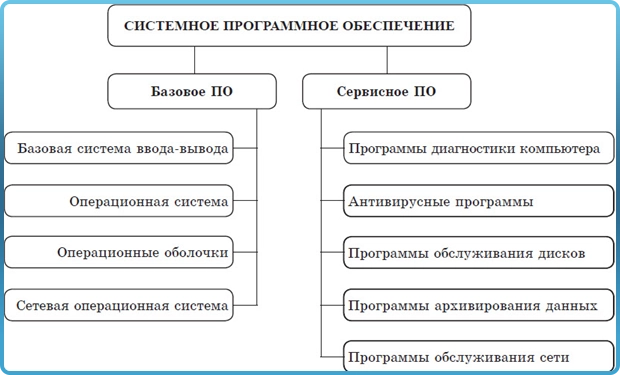
Базовое программное обеспечение содержит минимальный набор программ, обеспечивающих работу компьютера. Сервисное программное обеспечение включает программы и программные комплексы, которые расширяют возможности базового ПО и организуют более удобную среду работы пользователя. В базовое ПО входят: BIOS, операционная система и операционные оболочки (текстовые и графические). BIOS отвечает за взаимодействие с основными аппаратными средствами и хранится в специальных микросхемах (ПЗУ). Операционная система (ОС) — комплекс программ, предназначенный для управления выполнением пользовательских программ, планирования и управления вычислительными ресурсами. Операционная система загружается при включении компьютера и организует диалог с пользователем. Сетевые операционные системы — комплекс программ, обеспечивающий обработку, передачу и хранение данных в сети. Операционные оболочки — специальные программы для облегчения общения пользователя с командами операционной системы. Операционные оболочки могут иметь текстовый и графический варианты интерфейса. Основное назначение сервисных, или служебных, программ (утилит) — проверка и настройка компьютерной системы. Обычно утилиты дополнительно устанавливаются на ПК и служат для расширения ее функций: -диагностирование работоспособности компьютера; -антивирусная защита; -обслуживание дисков; -архивирование данных; -обслуживание сети; -установка драйверов — программ, отвечающих за взаимодействие с конкретными устройствами. Операционная система (ОС) — главная составляющая системного программного обеспечения. Это комплекс программ, которые загружаются при включении компьютера и осуществляют управление компьютером, диалог с пользователем, запускают другие программы на выполнение. ОС состоят из следующих категорий программ: -ядро — основа ОС, выполняющая главные функции (загрузку компонентов ОС и поддержку выполнения компьютерных программ); -программа управления файлами и папками (файловая система), служащая для классификации и просмотра информации; -драйверы, которые позволяют ОС работать с аппаратурой: периферийными устройствами (монитор, клавиатура, мышь, принтеры и т. д.) и устройствами, входящими в состав системного блока (видеокарта, жесткий диск и т. д.). Без драйверов невозможно функционирование никаких компьютерных устройств. Программы, предназначенные для работы под управлением данной операционной системы, принято называть приложениями. ОС обеспечивает интерфейсы (связь) между пользователем, приложениями и аппаратурой. ОС осуществляет следующие операции: -контролирует работоспособность аппаратного обеспечения ПК; -выполняет процедуру начальной загрузки; -управляет работой устройств ПК; -управляет файловой системой; -обеспечивает взаимодействие пользователя с ПК; -загружает и выполняет прикладные программы; -распределяет ресурсы ПК (оперативную память, процессорное время, периферийные устройства между прикладными программами и др.). Сейчас на IBM–совместимые компьютеры устанавливаются ОС Windows и Linux, на персональные компьютеры Macintosh — Mac OS. Программное обеспечение прикладного уровня представляет собой прикладные программы (или их пакет), с помощью которых пользователь выполняет конкретные задания — от производственных до творческих, обучающих и развлекательных. Эти программные средства наиболее многочисленны. Программы общего назначенияЭтот класс содержит широкий перечень программ для пользователей. Среди них — текстовые и графические редакторы, электронные таблицы, системы управления базами данных и пр. Основные функции текстовых редакторов и процессоров: ввод и редактирование текстов в различных форматах, подготовка печатных документов — статей, справок, отчетов, ведомостей и т. п. Текстовые редакторы позволяют вводить и редактировать тексты и могут содержать некоторые ограниченные возможности их форматирования (оформления). Примеры текстовых редакторов: Блокнот (Notepad), WordPad. Текстовые процессоры содержат большой перечень возможностей форматирования документов, а также средства объединения текста, графики, таблиц, формул и других объектов в итоговый документ. Часто текстовые процессоры включают различные средства автоматизации, составления оглавлений и указателей, проверки орфографии, подготовки шаблонов документов и др. Примеры текстовых процессоров: Microsoft Word, WordPerfect, OpenOffice.org Writer, AbiWord. Издательские системы, например Adobe InDesign, служат для подготовки и тиражирования газет, журналов, рекламных буклетов, проспектов, книг.
Табличные процессоры, или электронные таблицы предоставляют среду для обработки информации, представленной в виде таблиц, с использованием встроенных функций. Эти программы широко применяются в бухгалтерском учете, при анализе данных, всюду, где необходимо автоматизировать регулярно повторяющиеся вычисления достаточно больших объемов числовых данных. Кроме этого, такие программы помогают строить двух– или трехмерные графики, диаграммы. Примерами таких программ являются: Microsoft Excel, OpenOffice.org Calc, Lotus Symphony Spreadsheets и др. Графические редакторы и процессоры предназначены для просмотра, обработки, редактирования, упорядочения и публикации цифровых фотографий, создания графических файлов, преобразования их из одного формата в другой и (или) обработки графических изображений — рисунков, чертежей, графиков, диаграмм, иллюстраций, в том числе и трехмерных. Пользователь может изменять палитру, масштаб, работать с многослойными изображениями, получать изображения со сканера и другой цифровой техники и т. д. Любой графический редактор включает в себя текстовый редактор и позволяет набирать тексты.Системы управления базами данных (СУБД) обеспечивают организацию и хранение баз данных. Базами данных называют большие массивы данных о группе объектов с одинаковым набором свойств. СУБД обеспечивают ввод данных, поиск, сортировку записей, создание отчетов. Примерами СУБД являются Microsoft Access, Microsoft SQL Server, MySQL, Oracle, Sybase, Firebird, Interbase.К средствам презентационной графики относятся специализированные программы для создания изображений и их показа на экране, подготовки слайд–фильмов, мультфильмов, видеофильмов, их редактирования. Презентация может включать показ диаграмм и графиков. Существуют программные средства, объединяющие возможности текстовых, графических редакторов, электронных таблиц, систем управления базами данных. Такие средства называются интегрированными системами, или пакетами. Они могут включать также органайзер, средства поддержки электронной почты, программу для создания презентаций и др. Эти средства предусматривают единые правила работы с программами (унифицированный интерфейс). Компоненты интегрированных пакетов могут работать отдельно друг от друга, но основные достоинства этих пакетов проявляются при их разумном сочетании друг с другом. Примерами интегрированных пакетов являются Microsoft Office, OpenOffice.org, Lotus SmartSuite, StarOffice, Corel WordPerfect Office. К прикладному программному обеспечению относятся также: -офисные пакеты; -средства специализированного назначения; -коммуникационные средства; -программы мультимедиа; -развлекательные и образовательные программы; -системы искусственного интеллекта; -игровые программы. Офисные пакеты могут включать программы планирования (органайзеры), системы автоматического перевода, средства проверки орфографии и распознавания текста. К специализированным (проблемно–ориентированным) средствам относятся математические пакеты, системы деловой и научной графики, системы автоматизированного проектирования, бухгалтерские системы и т. д. Коммуникационные средства предназначены для взаимодействия пользователей в компьютерных сетях и включают браузеры (программы для просмотра содержимого веб–страниц), почтовые программы, средства скачивания файлов из сетей, программы для видео-общения и обмена текстовыми, голосовыми сообщениями, средства прослушивания онлайн–радио и просмотра онлайн–телевидения и др. Основное назначение мультимедийных программ — создание, обработка и проигрывание аудио– и видеоинформации. Современные обучающие программы обычно являются мультимедийными, включают не только звук и работу с микрофоном, но и отрывки из видеофильмов. Системы искусственного интеллекта реализуют отдельные функции интеллекта человека; к ним относятся экспертные системы для принятия решений в предметной области (медицина, математика, статистика и т. д.), системы анализа и распознавания речи и др. Игровые программы используются не только для отдыха и соревнований, но и для тренажерной тренировки навыков и умений, тренировки логического мышления, а также обучения. Инструментальные системы, или системы программирования предназначены для создания новых программ. Они различаются в первую очередь по языкам программирования, которые они поддерживают. В настоящее время широко распространены системы визуального программирования, которые позволяют создавать программы с использованием графического интерфейса. Прикладная программа или приложение— программа, предназначенная для выполнения определённых задач и рассчитанная на непосредственное взаимодействие с пользователем. В большинстве операционных систем прикладные программы не могут обращаться к ресурсам компьютера напрямую, а взаимодействуют с оборудованием и другими программами посредством операционной системы. Прикладное ПО общего назначения- совокупность программ для решения общих универсальных задач. Эти программы используются большинством пользователей компьютера. Прикладное ПО специального (профессионального) назначения - совокупность программ для решения более узких задач и профессиональных задач различных предметных областей (архитектуры, строительства, музыкальной и киноиндустрии)( Настольные издательские системы, Серверные СУБД (клиент-серверные), Редакторы трехмерной (3D) графики, интегрированные системы делопроизводства, бухгалтерские системы) Сложные или «большие» программы, называемые также программными системами, программными комплексами, программными продуктами, отличаются от «небольших» не столько по размерам (хотя обычно они значительно больше), сколько по наличию дополнительных факторов, связанных с их востребованностью и готовностью пользователей платить деньги как за приобретение самой программы, так и за ее сопровождение и даже за специальное обучение работе с ней. Обычно сложная программа обладает следующими свойствами. -Она решает одну или несколько связанных задач, зачастую сначала не имеющих четкой постановки, настолько важных для каких-либо лиц или организаций, что те приобретают значимые выгоды от ее использования. -Существенно, чтобы она была удобной в использовании. В частности, она должна включать достаточно полную и понятную пользователям документацию, возможно, также специальную документацию для администраторов, а также набор документов для обучения работе с программой. -Ее низкая производительность на реальных данных приводит к значимым потерям для пользователей. -Ее неправильная работа наносит ощутимый ущерб пользователям и другим организациям и лицам, даже если сбои происходят не слишком часто. -Для выполнения своих задач она должна взаимодействовать с другими программами и программно-аппаратными системами, работать на разных платформах. -Пользователи, работающие с ней, приобретают дополнительные выгоды от того, что программа развивается, в нее вносятся новые функции и устраняются ошибки. Необходимо наличие проектной документации, позволяющей развивать ее, возможно, вовсе не тем разработчикам, которые ее создавали, без больших затрат на обратную разработку (реинжиниринг). -В ее разработку вовлечено значительное количество людей (более 5-ти человек). «Большую» программу практически невозможно написать с первой попытки, с небольшими усилиями и в одиночку. -Намного больше количество ее возможных пользователей, и еще больше тех лиц, деятельность которых будет так или иначе затронута ее работой и результатами. Примером «большой» программы может служить стандартная библиотека классов Java, входящая в Java Development Kit [1]. Строго говоря, ни одно из указанных свойств не является обязательным для того, чтобы программу можно было считать «большой», но при наличии двух-трех из них достаточно уверенно можно утверждать, что она «большая». На основании некоторых из перечисленных свойств можно сделать вывод, что «большая» программа или программная система чаще всего представляет собой не просто код или исполняемый файл, а включает еще и набор проектной и пользовательской документации. Для разработки программных систем требуются особые методы — как уже говорилось, их нельзя написать «нахрапом». Изучением организационных, инженерных и технических аспектов создания ПО, включая методы разработки, занимается дисциплина, называемая программной инженерией. Большая часть трудностей при разработке программных систем связана с организацией экономически эффективной совместной работы многих людей, приводящей к практически полезному результату. Это требует рассмотрения следующих аспектов. -Над программой обычно работает много людей, иногда географически удаленных друг от друга и из различных организаций. Их работа должна быть организована так, чтобы затраты на разработку были бы покрыты доходами от продаж и предоставления услуг, связанных с полученной программой. В затраты входят зарплаты разработчиков, затраты на закупленное оборудование и программные инструменты разработки, на приобретение лицензий и патентование собственных решений, часто еще и затраты на исследование потребностей клиентов, проведение рекламы и другой маркетинговой деятельности. -Значимые доходы могут быть получены, только если программа будет предоставлять пользователям в реальных условиях их работы такие возможности, что они готовы будут заплатить за это деньги (которым, заметим, без труда можно найти другие полезные применения). Для этого нужно учесть множество аспектов. Доходы от продаж значительно снизятся, если многие из пользователей не смогут воспользоваться программой только потому, что в их компьютерах процессоры слишком медленные или мало оперативной памяти, или потому что данные к системе часто поступают в искаженном виде и она не может их обработать, или потому что они привыкли работать с графическим интерфейсом, а система требует ввода из командной строки, и т.п. Важно отметить, что практически полезная сложная программная система не обязательно является «правильной». Большинство опытных разработчиков и исследователей считают, что практически значимые программные системы всегда содержат ошибки. При переходе от «небольших» программ к «большим» понятие «правильной» программы становится практически бессмысленным.
Глоссарий
Информационная система — это совокупность функциональных и информационных процессов конкретной предметной области, средств и методов сбора, хранения, анализа, обработки и передачи информации, зависящих от специфики области применения, методов управления процессами решения функциональных задач, а также информационными, материальными и денежными потоками в предметной области. Программное обеспечение – полный набор или часть программ, процедур, правил и связанной с ними документации системы обработки информации. Проект ПО – совокупность спецификаций ПО, обеспечивающих создание ПО в конкретной программно-технической среде. Проектирование ПО – процесс создания спецификаций ПО на основе исходных требований к нему.
Жизненный цикл программного обеспечения (ЖЦ ПО). Понятия и основные этапы жизненного цикла программного обеспечения
Понятие жизненного цикла ПО (ЖЦ ПО) является одним из базовых понятий программной инженерии. ЖЦПО определяется как период времени, который начинается с момента принятия решения о необходимости создания ПО и заканчивается в момент его полного изъятия из эксплуатации. Основным нормативным документом, регламентирующим состав процессов ЖЦ ПО, является международный стандарт ISO/IEC 12207:2008 «Information Technology - Software Life Cycle Processes». Он определяет структуру ЖЦ, содержащую процессы, действия и задачи, которые должны быть выпол-нены во время создания ПО. В Республике Беларусь c 2004 г. действует национальный стандарт СТБ ИСО/МЭК 12207–2003 – Информационная технология – Процессы жизненного цикла программных средств [9, 15], являющийся аутентичным аналогом предыдущей редакции международного стандарта ISO/IEC 12207:1995 [3]. В соответствии со стандартом СТБ ИСО/МЭК 12207–2003 под жизненным циклом программного средства или системы подразумевается совокупность процессов, работ и задач, включающая в себя разработку, эксплуатацию и сопровождение программного средства или системы и охватывающая их жизнь от формулирования концепции до прекращения использования. В данном стандарте процесс определяется как совокупность взаимосвязанных действий, преобразующих некоторые входные данные в выходные. Каждый процесс характеризуется определенными задачами и методами их решения, исходными данными, полученными от других процессов, и результатами. Каждый процесс разделен на набор действий, каждое действие — на набор задач. Каждый процесс, действие или задача инициируется и выполняется другим процессом по мере необходимости, причем не существует заранее определенных последовательностей выполнения (естественно, при сохранении связей по входным данным). В соответствии со стандартом ГОСТ Р ИСО/МЭК 12207-99 все процессы ЖЦ ПО разделены на три группы: -пять основных процессов (заказ (приобретение), поставка, разработка, эксплуатация, сопровождение); -восемь вспомогательных процессов (документирование, управление кон-фигурацией, обеспечение качества, верификация, аттестация, совместная оценка, аудит, разрешение проблем); -четыре организационных процесса (управление, инфраструктура, усо-вершенствование, обучение).
Основные процессы жизненного цикла – это процессы, которые реализуются под управлением основных сторон, участвующих в жизненном цикле программных средств. Основными сторонами являются заказчик, поставщик, разработчик, оператор и персонал сопровождения программных продуктов. К основным процессам относится пять процессов: заказ, поставка, разработка, эксплуатация, сопровождение. Процесс заказа определяет работы и задачи заказчика и состоит из определения потребностей заказчика в системе или программном продукте, подготовки и выпуска заявки на подряд, выбора поставщика и управления процессом заказа до завершения приемки системы или программного продукта. Процесс поставки определяет работы и задачи поставщика. Данный процесс начинается с решения о подготовке предложения в ответ на заявку на подряд, присланную заказчиком, или с подписания договора с заказчиком на поставку системы или программного продукта. Затем определяются процедуры и ресурсы, необходимые для управления и обеспечения проекта, включая разработку проектных планов и их выполнение. Процесс разработки состоит из работ и задач, выполняемых разработчиком. Данный процесс содержит тринадцать работ: 1. подготовка процесса разработки; 2. анализ требований к системе; 3. проектирование системной архитектуры; 4. анализ требований к программным средствам; 5. проектирование программной архитектуры; 6. техническое проектирование программных средств; 7. программирование и тестирование программных средств; 8. сборка программных средств; 9. квалификационные испытания программных средств; 10. сборка системы; 11. квалификационные испытания системы; 12. ввод в действие программных средств; 13. обеспечение приемки программных средств. Процесс эксплуатации определяет работы и задачи оператора. Данный процесс включает эксплуатацию программного продукта и поддержку пользователей в процессе эксплуатации. Процесс сопровождения определяет работы и задачи персонала сопровождения и реализуется при модификациях программного продукта. Назначением процесса является изменение существующего программного продукта при сохранении его целостности. Процесс охватывает вопросы переносимости и снятия программного продукта с эксплуатации.
Вспомогательные процессы жизненного цикла – это процессы, являющиеся целенаправленными составными частями других процессов и предназначенные для обеспечения успешной реализации и качества выполнения программного проекта. К вспомогательным процессам относится восемь процессов: документирование, управление конфигурацией, обеспечение качества, верификация, аттестация, совместный анализ, аудит, решение проблем. Вспомогательные процессы вызываются другими процессами ЖЦ. Процесс документирования предназначен для формализованного описания информации, созданной в процессе или работе жизненного цикла. Он включает планирование, проектирование, разработку, выпуск, редактирование, аспространение и сопровождение документов по программному продукту. Процесс управления конфигурацией предназначен для определения состояния (базовой линии) программных объектов в системе, управления их изменениями и выпуском. Процесс обеспечения качества предназначен для обеспечения гарантий того, что программные продукты и процессы в жизненном цикле проекта соответствуют требованиям и планам. Процесс верификации предназначен для определения соответствия функционирования программных продуктов требованиям и условиям, реализованным в предшествующих работах. В процессе разработки верификация связана с экспертизой результатов конкретной работы с целью определения их соответствия установленным на входе данной работы требованиям. Процесс аттестации предназначен для определения полноты соответствия установленных требований, созданной системы или программного продукта их функциональному назначению. В процессе разработки аттестация связана с экспертизой промежуточного или конечного продукта в целях определения его соответствия потребностям пользователя (то есть исходным требованиям к проекту). Процесс совместного анализа предназначен для оценки состояния и результатов работ по проекту. Данный процесс может выполняться двумя сторонами, участвующими в договоре, когда одна сторона (анализирующая) проверяет другую (анализируемую). Процесс аудита предназначен для определения соответствия требованиям, планам и условиям договора. Данный процесс может выполняться двумя сторонами, участвующими в договоре, когда одна сторона (ревизующая) проверяет другую сторону (ревизуемую). Процесс решения проблем предназначен для анализа и решения проблем (включая найденные несоответствия), которые обнаружены в ходе выполнения разработки, эксплуатации, сопровождения или других процессов.
Организационные процессы жизненного цикла – это процессы, предназначенные для создания в некоторой организации и совершенствования организационных структур, охватывающих процессы жизненного цикла и соответствующий персонал. К организационным процессам относится четыре процесса:управление, cоздание инфраструктуры, усовершенствование, обучение. Процесс управления состоит из общих работ и задач, которые могут быть использованы стороной, управляющей соответствующим процессом. В данном процессе разрабатываются планы выполнения процессов ЖЦ ПС, осуществляется управление и текущий надзор за ходом процессов ЖЦ, обеспечивается управление оценкой планов, программных продуктов, работ и задач. Процесс создания инфраструктуры предназначен для создания и сопровождения инфраструктуры, необходимой для любого другого процесса. Инфраструктура содержит технические и программные средства, инструментальные средства, методики, стандарты и условия для разработки, эксплуатации или сопровождения. Процесс усовершенствования предназначен для создания, оценки, измерения, контроля и улучшения любого процесса жизненного цикла программных средств. Процесс обучения является процессом обеспечения обучения персонала работам по заказу, поставке, разработке, эксплуатации или сопровождению программного проекта. С понятием ЖЦ ПС и систем тесно связано понятие модели ЖЦ. Модель жизненного цикла – это совокупность процессов, работ и задач жизненного цикла, отражающая их взаимосвязь и последовательность выполнения. Очевидно, что существуют тесные взаимосвязи между моделью ЖЦ, выбранной при реализации процесса разработки ПС, используемыми стратегиями и технологиями разработки ПС и уровнем качества разработанного программного продукта.
Глоссарий
Жизненный цикл программного обеспечения — период времени от решения о создании ПО до его полного изъятия из эксплуатации. Это базовое понятие всей программной инженерии. Процесс — cовокупность взаимосвязанных действий, преобразующих входные данные в выходные. Процессы делятся на действия и задачи. Это «кирпичики», из которых строится ЖЦ. Модель жизненного цикла — cовокупность процессов, работ и задач, отражающая их взаимосвязь и последовательность выполнения. Это «чертеж» того, в каком порядке будут выполняться работы (например, каскадная или итеративная модель). Стандарт ISO/IEC 12207 (СТБ ИСО/МЭК 12207–2003) — oсновной нормативный документ, регламентирующий состав процессов ЖЦ ПО. Он делит все процессы на три группы (основные, вспомогательные, организационные) и задает правила их выполнения.
Жизненный цикл программного обеспечения (ЖЦ ПО). Модели жизненного цикла программного обеспечения
Под моделью жизненного цикла ПО понимается структура, определяющая последовательность выполнения и взаимосвязи процессов, действий и задач на протяжении ЖЦ. Модель ЖЦ зависит от специфики, масштаба и сложности проекта и специфики условий, в которых система создается и функционирует. Стандарт ГОСТ Р ИСО/МЭК 12207-2008 не предлагает конкретную модель ЖЦ ПО. Его положения являются общими для любых моделей ЖЦ, методов и технологий создания ПО. Он описывает структуру процессов ЖЦ ПО, не конкретизируя в деталях, как реализовать или выполнить действия и задачи, включенные в эти процессы. Модель ЖЦ ПО включает в себя: 1) стадии; 2) результаты выполнения работ на каждой стадии; 3) ключевые события — точки завершения работ и принятия решений. Модель ЖЦ любого конкретного ПО определяет характер процесса его создания, который представляет собой совокупность упорядоченных во времени, взаимосвязанных и объединенных в стадии работ, выполнение которых необходимо и достаточно для создания ПО, соответствующего заданным требованиям. Под стадией понимается часть процесса создания ПО, ограниченная определенными временными рамками и заканчивающаяся выпуском конкретного продукта (моделей, программных компонентов, документации), определяемого заданными для данной стадии требованиями. Стадии процесса создания ПО выделяются по соображениям рационального планирования и организации работ, заканчивающихся заданными результатами. Конкретный состав стадий ЖЦ ПО определяется используемой технологией создания ПО и соответствующими технологическими стандартами. На каждой стадии могут выполняться несколько процессов, определенных в стандарте ГОСТ Р ИСО/МЭК12207-99, и наоборот может выполняться на различных стадиях. Соотношение между процессами и стадиями также определяется используемой моделью ЖЦ ПО. В мировой практике не существует международного стандарта, регламентирующего различные модели ЖЦ, однако существует ряд различных подходов к их классификации. На начальном этапе развития вычислительной техники ПС разрабатывались по принципу «кодирование – устранение ошибок». Недостатками данной модели являются: • неструктурированность процесса разработки ПС; • ориентация на индивидуальные знания и умения программиста; • сложность управления и планирования проекта; • большая длительность и стоимость разработки; • низкое качество программных продуктов; • высокий уровень рисков проекта. Для устранения или сокращения вышеназванных недостатков к настоящему времени созданы и широко используются три базовые стратегии разработки ПО: • каскадная; • инкрементная; • эволюционная. Некоторые характеристики каскадной, инкрементной и эволюционной стратегий разработки ПС и предъявляемые к ним требования приведены в стандарте ГОСТ Р ИСО/МЭК ТО 15271–2002. Выбор той или иной стратегии определяется характеристиками: • проекта; • требований к продукту; • команды разработчиков; • команды пользователей. Каждая из стратегий разработки имеет как достоинства, так и недостатки, определяемые правильностью выбора данной стратегии для реализации конкретного проекта. Одни и те же свойства стратегии могут проявлять себя как достоинства при правильном выборе стратегии и как ее недостатки, если стратегия выбрана неверно. Три базовые стратегии могут быть реализованы с помощью различных моделей ЖЦ.
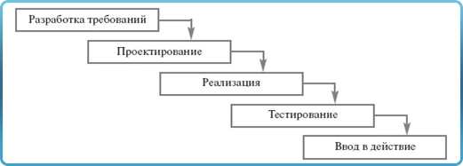
1. Каскадная стратегия разработки программных средств и систем (водопад) (1975-1985) В 1970 г. эксперт в области ПО Уинстон Ройс опубликовал статью, в которой излагал свое мнение о методике, которая позднее получила название «модель водопада» (waterfall model), или «каскадная модель». Каскадная стратегия представляет собой однократный проход этапов разработки. Данная стратегия основана на полном определении всех требований к разрабатываемому программному средству или системе в начале процесса разработки. Каждый этап разработки начинается после завершения предыдущего этапа. Возврат к уже выполненным этапам не предусматривается. Промежуточные продукты разработки в качестве версии программного средства (системы) не распространяются. Представителями моделей, реализующих каскадную стратегию, являются каскадная и V-образная модели. Основные достоинства каскадной стратегии: 1) стабильность требований в течение ЖЦ разработки; 2) необходимость только одного прохода этапов разработки, что обеспечивает простоту применения стратегии; 3) простота планирования, контроля и управления проектом; 4) доступность для понимания заказчиками. Основные недостатки каскадной стратегии: 1) сложность полного формулирования требований в начале процесса разработки и невозможность их динамического изменения на протяжении ЖЦ; 2) линейность структуры процесса разработки; разрабатываемые ПС или системы обычно слишком велики и сложны, чтобы все работы по их созданию выполнять однократно; возврат к предыдущим шагам для решения возникающих проблем приводит к увеличению финансовых затрат и нарушению графика работ; 3) непригодность промежуточных продуктов для использования; 4) недостаточное участие пользователя в процессе разработки ПС – только в самом начале (при разработке требований) и в конце (во время приемочных испытаний). Области применения каскадной стратегии: 1) при разработке проектов с четкими, неизменяемыми в течение ЖЦ требованиями и понятной реализацией; 2) при разработке проектов невысокой сложности: создание ПС такого же типа, как уже разрабатывались; создание новой версии уже существующего ПС; перенос уже существующего продукта на новую платформу; 3) при выполнении больших проектов в качестве составной части моделей ЖЦ, реализующих другие стратегии разработки.
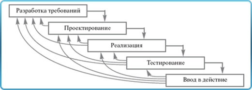
2. Инкрементная стратегия разработки программных средств и систем (водоворот, поэтапная модель с промежуточным контролем) Эта модель появилась после каскадной модели и была доработана Уинстоном Ройсом с учетом взаимозависимости этапов и необходимости возврата на предыдущие ступени. Инкрементная стратегия представляет собой многократный проход этапов разработки с запланированным улучшением результата. Данная стратегия основана на полном определении всех требований к разрабатываемому программному средству (системе) в начале процесса разработки. Однако полный набор требований реализуется постепенно в соответствии с планом в последовательных циклах разработки. Результат каждого цикла называется инкрементом. Первый инкремент реализует базовые функции программного средства. В последующих инкрементах функции постепенно расширяются, пока не будет реализован весь набор требований. Различия между инкрементами соседних циклов постепенно уменьшаются. Результат каждого цикла разработки может распространяться в качестве очередной поставляемой версии. Особенность инкрементной стратегии — большое количество циклов разработки при незначительной продолжительности цикла и небольших различиях между инкрементами соседних циклов. Инкрементная стратегия основана на объединении элементов каскадной модели и прототипирования. Под прототипом понимается легко поддающаяся модификации и расширению рабочая модель разрабатываемого программного средства. Современной реализацией инкрементной стратегии является экстремальное программирование. Основные достоинства инкрементной стратегии: 1) возможность получения функционального продукта после реализации каждого инкремента; 2) короткая продолжительность создания инкремента; 3) предотвращение реализации громоздких спецификаций требований; стабильность требований во время создания определенного инкремента; возможность учета изменившихся требований; 4) снижение рисков по сравнению с каскадной стратегией; 5) включение в процесс пользователей, что позволяет оценить функциональные возможности продукта на более ранних этапах. Основные недостатки инкрементной стратегии: 1) необходимость полного функционального определения системы или ПС в начале ЖЦ; 2) возможность текущего изменения требований, которые уже реализованы в предыдущих инкрементах; 3) сложность планирования и распределения работ; 4) проявление человеческого фактора: тенденция к оттягиванию решения трудных проблем на поздние инкременты. Области применения инкрементной стратегии: 1) проекты, в которых большинство требований можно сформулировать заранее, но часть могут быть уточнены через определенный период времени; 2) сложные проекты с заранее сформулированными требованиями, когда разработка за один цикл связана с большими трудностями; 3) необходимость быстро поставить на рынок продукт с базовыми функциональными свойствами; 4) проекты с низкой или средней степенью рисков; 5) проекты с применением новых технологий.
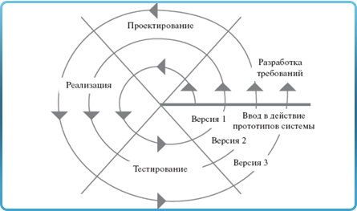
3. Спиральная стратегия разработки программных средств (эволюционная) (1986-2000) Эволюционная стратегия представляет собой многократный проход этапов разработки. Данная стратегия основана на частичном определении требований к разрабатываемому программному средству или системе в начале процесса разработки. Требования постепенно уточняются в последовательных циклах разработки. Результат каждого цикла разработки обычно представляет собой очередную поставляемую версию программного средства или системы. Спиральная модель была сформулирована Барри Боэмом в 1988 году. Отличительная особенность — специальное внимание рискам, влияющим на организацию жизненного цикла. Основные принципы спиральной модели: • разработка вариантов продукта, соответствующих различным вариантам требований с возможностью вернуться к более ранним вариантам; • создание прототипов ПО как средства общения с заказчиком для уточнения и выявления требований; • планирование следующих вариантов с оценкой альтернатив и анализом рисков; • переход к разработке следующего варианта до завершения предыдущего в случае, когда риск завершения очередного варианта становится неоправданно высок; • использование каскадной модели как схемы разработки очередного варианта; • активное привлечение заказчика к работе над проектом. Прототип — действующий программный продукт, реализующий отдельные функции и внешние интерфейсы разрабатываемой ПС. Спиральная модель избавляет пользователей и разработчиков от необходимости полного и точного формулирования требований на начальной стадии. Основная проблема спирального цикла — определение момента перехода на следующий этап. Главная задача — как можно быстрее показать пользователям работоспособный продукт, активизируя процесс уточнения и дополнения требований. Основные достоинства эволюционной стратегии: 1) возможность уточнения и внесения новых требований в процессе разработки; 2) пригодность промежуточного продукта для использования; 3) возможность управления рисками; 4) широкое участие пользователя в проекте начиная с ранних этапов; 5) реализация преимуществ каскадной и инкрементной стратегий. Недостатки эволюционной стратегии: 1) неизвестность точного количества необходимых итераций и сложность определения критериев для продолжения разработки; 2) сложность планирования и управления проектом; 3) необходимость активного участия пользователей в проекте, что реально не всегда осуществимо; 4) необходимость в мощных инструментальных средствах и методах прототипирования; 5) возможность отодвигания решения трудных проблем на последующие циклы. Области применения эволюционной стратегии: 1) проекты, для которых требования слишком сложны, неизвестны заранее, непостоянны или требуют уточнения; 2) сложные проекты: большие долгосрочные проекты; проекты по созданию новых, не имеющих аналогов ПС; проекты со средней и высокой степенью рисков; проекты, для которых нужна проверка концепции или демонстрация технической осуществимости; 3) проекты, использующие новые технологии.
Глоссарий
Модель жизненного цикла ПО — структура, определяющая последовательность выполнения и взаимосвязи процессов, действий и задач на протяжении ЖЦ. Модель ЖЦ зависит от специфики, масштаба и сложности проекта и специфики условий, в которых система создается и функционирует. Стандарт ГОСТ Р ИСО/МЭК 12207-2008 не предлагает конкретную модель ЖЦ ПО, его положения являются общими для любых моделей ЖЦ, методов и технологий создания ПО. Стадия ЖЦ ПО — часть процесса создания ПО, ограниченная определенными временными рамками и заканчивающаяся выпуском конкретного продукта (моделей, программных компонентов, документации), определяемого заданными для данной стадии требованиями. Стадии выделяются по соображениям рационального планирования и организации работ, заканчивающихся заданными результатами. Каскадная стратегия (водопад) — однократный проход этапов разработки, основанный на полном определении всех требований к разрабатываемому ПО в начале процесса разработки. Каждый этап начинается после завершения предыдущего. Возврат к уже выполненным этапам не предусматривается. Промежуточные продукты в качестве версии не распространяются. Инкрементная стратегия — многократный проход этапов разработки с запланированным улучшением результата. Основана на полном определении всех требований в начале процесса, однако полный набор требований реализуется постепенно в последовательных циклах разработки. Результат каждого цикла называется инкрементом. Эволюционная (спиральная) стратегия — многократный проход этапов разработки, основанный на частичном определении требований в начале процесса. Требования постепенно уточняются в последовательных циклах разработки. Результат каждого цикла — очередная поставляемая версия ПО. Прототип — легко поддающаяся модификации и расширению рабочая модель разрабатываемого ПО, позволяющая пользователю получить представление о его ключевых свойствах до полной реализации. Также прототип определяется как действующий программный продукт, реализующий отдельные функции и внешние интерфейсы разрабатываемой ПС. Риск (по Боэму) — фактор, влияющий на организацию жизненного цикла. К наиболее распространенным рискам относятся: дефицит специалистов, нереалистичные сроки и бюджет, реализация несоответствующей функциональности, непрекращающийся поток изменений, недостаточная производительность получаемой системы.
Методология RAD
Одним из возможных подходов к разработке ПО в рамках спиральной модели ЖЦ является получившая в последнее время широкое распространение методология быстрой разработки приложений RAD (Rapid Application Development). Под этим термином обычно понимается процесс разработки ПО, содержащий 3 базовых составляющих: - небольшую команду программистов (от 2 до 10 человек); - короткий, но тщательно проработанный производственный график (от 2 до 6 мес.); - повторяющийся цикл, при котором разработчики, по мере того, как приложение начинает обретать форму, запрашивают и реализуют в продукте требования, полученные в результате взаимодействия с заказчиком. Команда разработчиков должна представлять из себя группу профессионалов, имеющих опыт в анализе, проектировании, генерации кода и тестировании ПО с использованием CASE-средств. Члены коллектива должны также уметь трансформировать в рабочие прототипы предложения конечных пользователей.
Жизненный цикл ПО в соответствии с подходом RAD включает четыре стадии: - анализ и планирование требований; - проектирование; - реализация; - внедрение. На стадии анализа и планирования требований пользователи системы определяют функции, которые она должна выполнять, выделяют наиболее приоритетные из них, требующие проработки в первую очередь, описывают информационные потребности. Формулирование требований к системе выполняется в основном силами пользователей под руководством специалистов-разработчиков. Ограничивается масштаб проекта, устанавливаются временные рамки для каждой из последующих стадий. Кроме того, определяется сама возможность реализации данного проекта в установленных рамках финансирования, на данных аппаратных средствах и т.п. Результатом данной стадии должны быть список и приоритетность функций разрабатываемой системы, предварительные ее функциональные и информационные модели.
На стадии проектирования часть пользователей принимает участие в техническом проектировании системы под руководством специалистов-разработчиков. Для быстрого получения работающих прототипов приложений используются CASE-средства. Пользователи, непосредственно взаимодействуя с разработчиками, уточняют и дополняют требования к системе, которые не были выявлены на предыдущей стадии. Более детально рассматриваются процессы системы. При необходимости для каждого элементарного процесса создается частичный прототип: экранная форма, диалог, отчет, устраняющий неясности или неоднозначности. Устанавливаются требования разграничения доступа к данным, определяется состав необходимой документации. После детального определения состава процессов оценивается количество так называемых функциональных точек разрабатываемой системы и принимается решение о разделении всей системы на подсистемы, поддающиеся реализации одной командой разработчиков за приемлемое для RAD-проектов время — порядка 60 — 90 дней. Под функциональными точками понимаются такие элементы разрабатываемой системы как входной или выходной документ, экранная форма, логический файл, интерфейс приложения и др. Далее проект распределяется между различными командами разработчиков. Результатом данной стадии должны быть: - общая информационная модель системы; - функциональные модели системы в целом и подсистем, реализуемых отдельными командами разработчиков; - точно определенные интерфейсы между автономно разрабатываемыми подсистемами; - построенные прототипы экранов, отчетов, диалогов.
На стадии реализации выполняется непосредственно сама быстрая разработка приложения. На данной стадии разработчики производят итеративное построение реальной системы на основе полученных на предыдущей стадии моделей, а также требований нефункционального характера (требований к надежности, производительности и т.п.). Конечные пользователи на этой стадии оценивают получаемые результаты и вносят коррективы, если в процессе разработки система перестает удовлетворять определенным ранее требованиям. Тестирование системы осуществляется непосредственно в процессе разработки. После окончания работ каждой отдельной команды разработчиков производится постепенная интеграция данной части системы с остальными, формируется полный программный код, выполняется тестирование совместной работы данной части приложения с остальными, а затем тестирование системы в целом. Реализация системы завершается выполнением следующих работ: - осуществляется анализ использования данных и определяется необходимость их распределения; - производится анализ использования данных; - производится физическое проектирование базы данных; - формулируются требования к аппаратным ресурсам; - устанавливаются способы увеличения производительности; - завершается разработка документации проекта. Результатом фазы является готовая система, удовлетворяющая всем согласованным требованиям.
На стадии внедрения производится обучение пользователей, организационные изменения и параллельно с внедрением новой системы продолжается эксплуатация существующей системы (до полного внедрения новой). Так как стадия реализации достаточно непродолжительна, планирование и подготовка к внедрению должны начинаться заранее, как правило, на стадии проектирования системы. Приведенная схема разработки крупной системы не является абсолютной. Возможны различные варианты, зависящие от начальных условий, в которых ведется разработка. Например, разрабатывается совершенно новая система; уже было проведено обследование предприятия и существует модель его деятельности; на предприятии уже существует некоторая система, которая может быть использована в качестве начального прототипа или должна быть интегрирована с разрабатываемой. Методология RAD неприменима для построения сложных расчетных программ, требующих написания большого объема (сотни тысяч строк) уникального кода. Не подходят для разработки по методологии RAD приложения, в которых отсутствует ярко выраженная интерфейсная часть, наглядно определяющая логику работы системы (например, приложения реального времени) и приложения, от которых зависит безопасность людей, так как итеративный подход предполагает, что первые несколько версий наверняка не будут полностью работоспособны, что в данном случае исключается. Оценка размера приложений производится на основе так называемых функциональных элементов (экраны, сообщения, отчеты, файлы и т.п.). Подобная метрика не зависит от языка программирования, на котором ведется разработка.
Таким образом, основными принципами методологии RAD являются: - разработка приложений итерациями; - необязательность полного завершения работ на каждом из этапов жизненного цикла; - обязательное вовлечение пользователей в процесс разработки системы; - целесообразность применения CASE-средств, обеспечивающих целостность проекта и генерацию кода приложений; - целесообразность применения средств управления конфигурацией, облегчающих внесение изменений в проект и сопровождение готовой системы; - использование прототипирования, позволяющее полнее выяснить и удовлетворить потребности конечного пользователя. Итерационное прототипирование. Разработка системы и предъявление ее заказчику осуществляется в виде последовательности развиваемых прототипов. Любой из прототипов реализует определенную часть функциональности, требуемой от конечного продукта. При этом каждый последующий прототип включает всю функциональность, реализованную в предыдущем прототипе, с добавлением новой. Число прототипов определяется на основе учета разных параметров – размера проекта, анализа рисков, пожеланий заказчика и т. д. Традиционно для проектов ПО средней сложности разрабатываются три прототипа. Первый содержит весь пользовательский интерфейс с нулевой функциональностью. Он дает возможность собрать замечания заказчика и после их устранения утвердить у него экранные и отчетные формы. Второй прототип содержит реализованную на 70-80% функциональность системы, третий – полностью реализованную функциональность. Основаниями для очередной итерации являются: 1. Замечания заказчика. Привлечение заказчика и конечного пользователя к оценке выходных результатов прототипа с эффективной обратной связью с командой разработчиков является гарантией того, что созданная система будет делать то, что требуется заказчику. Если замечания носят характер исправлений, они учитываются в следующем прототипе, если же изменяются требования, то выполняется переоценка проекта и корректируются сроки и стоимость проекта. 2. Детализация. Выполняется программирование нереализованной части системы в соответствии с составленным планом. 3. Анализ результатов программирования. Исправляются ошибки, повышается эффективность программного кода и т. д. - тестирование и развитие проекта, осуществляемые одновременно с разработкой; - грамотное руководство разработкой системы, четкое планирование и контроль выполнения работ. - Работа ведется группами. Типичный состав группы - руководитель, аналитик, два программиста, технический писатель. Если проект сложный, то для него может быть выделено несколько RAD-групп. Разработка проекта выполняется в условиях тесного взаимодействия между разработчиками и Заказчиком. - Разработка базируется на моделях. Моделирование позволяет оценить проект и выполнить его декомпозицию на составные части, каждая из которых может разрабатываться отдельной RAD-группой. - RAD группа всегда работает только над одним прототипом. Это обеспечивает единство целей, лучшую наблюдаемость и управляемость процессом разработки, что в итоге повышает качество конечного продукта. Соответственно используемые инструментальные средства должны обеспечивать групповую разработку и конфигурационное управление проектом. - Если проект сложный, то для него может быть выделено несколько RAD групп. Большие системы разбиваются на подсистемы. Каждая подсистема разрабатывается независимой группой. Ключ успеха – правильное разбиение системы на подсистемы. Команды должны использовать общие стандарты. Обязательно финальное тестирование полной системы. - Обязательное использование инструментальных средств, автоматизирующих процесс разработки, и методик их использования, следствием чего является сокращение сроков разработки и повышение качества конечного продукта. Принципы RAD применяются не только при реализации, но и распространяются на все этапы жизненного цикла, в частности на этап обследования организации, построения требований, анализ и дизайн. Что обеспечивает RAD технология Технология RAD обеспечивает: - быстроту продвижения программного продукта на рынок; - интерфейс, устраивающий пользователя; - легкую адаптируемость проекта к изменяющимся требованиям; - простоту развития функциональности системы.
Когда применяется RAD Применение технологии RAD целесообразно, когда: - требуется выполнение проекта в сжатые сроки (90 дней). Быстрое выполнение проекта позволяет создать систему, отвечающую требованиям сегодняшнего дня. Если система проектируется долго, то весьма высока вероятность, что за это время существенно изменятся фундаментальные положения, регламентирующие деятельность организации, то есть, система морально устареет еще до завершения ее проектирования. - нечетко определены требования к ПО. В большинстве случаев заказчик весьма приблизительно представляет себе работу будущего программного продукта и не может четко сформулировать все требования к ПО. Требования могут быть вообще не определены к началу проекта либо могут изменяться по ходу его выполнения. - проект выполняется в условиях ограниченности бюджета. Разработка ведется небольшими RAD группами в короткие сроки, что обеспечивает минимум трудозатрат и позволяет вписаться в бюджетные ограничения. - интерфейс пользователя (GUI) есть главный фактор. Нет смысла заставлять пользователя рисовать картинки. RAD технология дает возможность продемонстрировать интерфейс в прототипе, причем достаточно скоро после начала проекта. - проект большой, но поддается разделению на более мелкие функциональные компоненты. Если предполагаемая система велика, необходимо, чтобы ее можно было разбить на мелкие части, каждая из которых обладает четкой функциональностью. Они могут выпускаться последовательно или параллельно (в последнем случае привлекается несколько RAD групп). - ПО не обладает большой вычислительной сложностью. RAD-технология не является универсальной, то есть ее применение целесообразно не всегда. Например, в проектах, где требования к программному продукту четко определены и не должны меняться, вовлечение заказчика в процесс разработки не требуется и более эффективной может быть иерархическая разработка (каскадный метод). То же касается проектов, ПО, сложность которых определяется необходимостью реализации сложных алгоритмов, а роль и объем пользовательского интерфейса невелик.
При использовании RAD-модели в соответствующем ей проекте проявляются следующие ее основные достоинства: 1) сокращение продолжительности цикла разработки и всего проекта в целом, сокращение количества разработчиков, а следовательно, и стоимости проекта за счет использования мощных инструментальных средств; 2) сокращение риска несоблюдения графика за счет использования принципа временного блока и связанное с этим упрощение планирования; 3) сокращение риска, связанного с неудовлетворенностью заказчика (пользователя) разработанным программным продуктом, за счет его привлечения на постоянной основе к циклу разработки; возрастание уверенности, что продукт будет соответствовать требованиям; 4) возможность повторного использования существующих компонентов; это достоинство проявляется при использовании RAD-модели в составе инкрементной или эволюционной модели; в этом случае наращивание функциональных возможностей осуществляется на базе разработанных ранее компонентов.
Основными недостатками RAD-модели при использовании в неподходящем для нее проекте являются: 1) необходимость в постоянном участии пользователя в процессе разработки, что часто невыполнимо и в итоге сказывается на качестве конечного продукта; 2) необходимость в высококвалифицированных разработчиках, умеющих работать с инструментальными средствами разработки; 3) возможность применения только для систем или ПС, для которых отсутствует требование высокой производительности; 4) жесткость временных ограничений на разработку прототипа; 5) сложность ограничения затрат и определения сроков завершения работы над проектом в случаях, когда не удается разработать продукт за временной интервал; 6) неприменимость в условиях высоких технических рисков, при использовании новых технологий.
Области применения RAD-модели определяются ее достоинствами и ограничены ее недостатками. RAD-модель может эффективно применяться в следующих случаях: 1) при разработке систем и продуктов, для которых характерно хотя бы одно из следующих свойств: - поддаются моделированию; - предназначены для концептуальной проверки; - являются некритическими; - имеют небольшой размер; - имеют низкую производительность; - относятся к известной разработчикам предметной области; - являются информационными системами; - требования для них хорошо известны; - имеются пригодные к повторному использованию в них компоненты; 2) если пользователь может принимать постоянное участие в процессе разработки; 3) если в проекте заняты разработчики, обладающие достаточными навыками в использовании инструментальных средств разработки; 4) при выполнении проектов в сокращенные сроки (как правило, не более чем за 60 дней); 5) при разработке ПС, для которых требуется быстрое наращивание функциональных возможностей на последовательной основе; 6) при невысокой степени технических рисков; 7) в составе других моделей жизненного цикла. Резюме Использование RAD-модели сокращает количество разработчиков, продолжительность и стоимость разработки ПС и систем, сокращает риски. В тоже время ее применение требует высокой квалификации разработчиков и постоянного участия пользователей в процессе разработки ПС и систем.
Глоссарий
RAD (Rapid Application Development) — методология быстрой разработки приложений, содержащая три базовые составляющие: небольшую команду программистов (от 2 до 10 человек); короткий производственный график (от 2 до 6 месяцев); повторяющийся цикл разработки с активным взаимодействием с заказчиком. Функциональные точки — элементы разрабатываемой системы, такие как входной или выходной документ, экранная форма, логический файл, интерфейс приложения и др. На основе функциональных точек оценивается размер приложения, и эта метрика не зависит от языка программирования. Итерационное прототипирование — разработка системы в виде последовательности развиваемых прототипов, где каждый последующий прототип включает всю функциональность предыдущего с добавлением новой. Традиционно для проектов средней сложности разрабатываются три прототипа. CASE-средства — инструментальные средства, используемые для быстрого получения работающих прототипов приложений, обеспечивающие целостность проекта и генерацию кода приложений. Основные принципы RAD — разработка приложений итерациями; необязательность полного завершения работ на каждом этапе ЖЦ; обязательное вовлечение пользователей в процесс разработки; использование CASE-средств и средств управления конфигурацией; прототипирование; тестирование и развитие проекта одновременно с разработкой; работа группами; моделирование; использование инструментальных средств, автоматизирующих процесс разработки. Достоинства RAD — сокращение продолжительности цикла разработки и стоимости проекта; сокращение риска несоблюдения графика; сокращение риска неудовлетворенности заказчика; возможность повторного использования существующих компонентов. Недостатки RAD — необходимость постоянного участия пользователя; необходимость в высококвалифицированных разработчиках; возможность применения только для систем без требования высокой производительности; жесткость временных ограничений; сложность ограничения затрат; неприменимость при высоких технических рисках и использовании новых технологий. Области применения RAD — системы, поддающиеся моделированию; предназначенные для концептуальной проверки; некритические; небольшого размера; с низкой производительностью; информационные системы; при возможности постоянного участия пользователя; при наличии квалифицированных разработчиков; при выполнении проектов в сжатые сроки (не более 60 дней); при невысокой степени технических рисков.
Жизненный цикл программного обеспечения (ЖЦ ПО). Управление требованиями к системе
Одна из первых работ при проектировании ПО — сбор и упорядочение требований к нему. В основе любой программной системы, а также процесса ее разработки лежат требования к программному обеспечению. Требование – описание того, какие функции и с соблюдением каких условий программная система должна выполнять в процессе решения полезной для пользователя задачи. Требования должны быть: полные (достаточные); однозначные (недвусмысленные); необходимые; осуществимые; приоритизированные; проверяемые; модифицируемые; корректные. Требования могут быть представлены и задокументированы как предложение (система должна); структурированный набор текста; таблица; диаграмма; прототип; график…
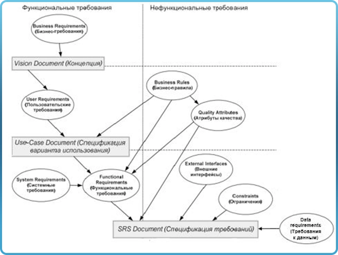
Выделяют группы функциональных и нефункциональных требований. Функциональные и нефункциональные требования определяют функциональность продукту и его дополнительные нефункциональные аспекты, которые должны реализовать разработчики, чтобы пользователи/заинтересованные лица могли выполнять требуемые задачи. К группе функциональных требований относят: бизнес-требования, пользовательские требования, системные требования, функциональные требования.
Примеры бизнес-требований: - Программное средство должно обеспечивать возможность поиска кандидатов по должности, специальности и географическому региону. - Нужен инструмент, в реальном времени отображающий наиболее выгодный курс покупки и продажи валюты. - Увеличить среднее эффективное рабочее время каждого сотрудника на 15 минут в день в течение 6 месяцев после первого выпуска системы. Результатом выявления бизнес-требований является общее видение – документ, который называют Документом о концепции и границах (vision and scope document). Концепция описывает, что продукт представляет собой сейчас и каким он станет впоследствии. В положении о границах определена черта между тем, что входит в проект и тем, что остается вовне.
Примеры пользовательских требований: - Администратор должен иметь возможность просматривать список всех пользователей, работающих в данный момент в системе. - Пользователь может зарегистрироваться в системе и просмотреть каталог товаров. - Диспетчер имеет возможность регистрировать новый заказ в системе. Пользовательские требования оформляются в виде вариантов использования, пользовательских историй, пользовательских сценариев.
Примеры системных требований: - Приложение является консольным. - Для работы приложение использует интерпретатор PHP. - Приложение является кроссплатформенным.
Примеры функциональных требований: - Система должна автоматически выполнять резервное копирование данных ежедневно в указанный момент времени. - Электронный адрес пользователя, вводимый при регистрации, должен быть проверен на соответствие требованиям RFC822. В контексте проектирования функциональные требования в основном влияют на дизайн системы. К группе нефункциональных требований относят: бизнес-правила, атрибуты качества, ограничения, внешние интерфейсы, требования к данным. В контексте проектирования нефункциональные требования в основном влияют на архитектуру системы.
Бизнес-правила описывают особенности принятых в предметной области и/или непосредственно у заказчика процессов, ограничений и иных правил. Примеры бизнес-правил: - Никакой документ, просмотренный посетителями сайта хотя бы один раз, не может быть отредактирован или удалён. - Подключение к системе извне офиса запрещено в нерабочее время. - Интернет-магазин обрабатывает заказы покупателей только до 19:00.
Примеры атрибутов качества: - 95% новых пользователей должны суметь успешно ввести заказ без ошибок с первой попытки. - Внесённые в текст статьи изменения не должны быть утеряны при нарушении соединения между клиентом и сервером. - Система должна выводить пользователю сообщение о подтверждении в среднем за 3 секунды.
Ограничения – условия или требования к реализации системы, факторы, ограничивающие выбор способов и средств реализации продукта. Примеры ограничений: - Система должна быть реализована на платформе .NET Framework 4.0. - Не допускается использование Flash при реализации клиентской части приложения. - Система должна использовать текущую версию СУБД Oracle.
Примеры внешних интерфейсов: - Обмен данными между клиентской и серверной частями приложения должен быть реализован в формате JSON. - Интернет-магазин должен иметь интеграцию с PayPal для оплаты товаров пользователями. Виды интерфейсов: интерфейс пользователя, программные интерфейсы, интерфейсы оборудования, коммуникационные интерфейсы.
Примеры требований к данным: - Все данные системы, за исключением пользовательских документов, должны храниться в БД под управлением СУБД MySQL; пользовательские документы — в БД под управлением СУБД MongoDB. - Информация о кассовых транзакциях за текущий месяц должна храниться в операционной таблице, а по завершении месяца переноситься в архивную.
Спецификация требований к ПО является основным документом, который играет определяющую роль по отношению к другим элементам плана разработки ПО. Функциональные требования определяют действия, которые должна выполнять система, без учета ограничений, связанных с ее реализацией. Нефункциональные требования не определяют поведение системы, но описывают ее атрибуты или атрибуты системного окружения.
Выделяют критерии качества требований: корректность; недвусмысленность; полнота; непротиворечивость; упорядоченность по важности и стабильности; проверяемость; модифицируемость; трассируемость. Корректные требования — каждое требование представляет нечто, требуемое от создаваемой системы. Недвусмысленные требования — требование можно однозначно интерпретировать. Полнота — набор требований описывает все важные требования. Непротиворечивость — ни одно подмножество требований не противоречит другому. Проверяемые требования — каждое требование можно протестировать. Модифицируемый набор требований — любое изменение можно произвести просто, полно и согласованно. Трассируемые требования — ясно происхождение каждого требования и существует механизм обращения к нему.
Управление требованиями (requirements management) представляет собой: - систематический подход к выявлению, организации и документированию требований к системе; - процесс, устанавливающий соглашение между заказчиками и разработчиками относительно изменения требований к системе. Трассировка требований — установка связей требований с другими требованиями или проектными решениями. Цель трассировки: убедиться, что все требования выполнены; убедиться, что ПО делает только то, что предполагалось; облегчить внесение изменений.
Расстановка приоритетов требований учитывает два измерения: важность и срочность. Требования с высоким приоритетом — важные и срочные. Требования со средним приоритетом — важные, но не срочные. Требования с низким приоритетом — не важные и не срочные. Дополнительные факторы ранжирования: существенное влияние на архитектуру; рискованные, сложные функции; применение новой технологии; значимость в экономических процессах. Управление требованиями способно ощутимо повысить качество создаваемой системы.
Глоссарий
Требования к ПО — основа любой программной системы и процесса ее разработки. Должны быть: полными, однозначными, необходимыми, осуществимыми, приоритизированными, проверяемыми, модифицируемыми, корректными. Функциональные требования — определяют действия системы без учета ограничений реализации. Влияют на дизайн системы. Нефункциональные требования — описывают атрибуты системы или системного окружения. Влияют на архитектуру системы. Включают: бизнес-правила, атрибуты качества, ограничения, внешние интерфейсы, требования к данным. Документ о концепции и границах (vision and scope) — документ, собирающий бизнес-требования и подготавливающий основу для разработки продукта. Управление требованиями — систематический подход к выявлению, организации и документированию требований; процесс установления соглашения между заказчиками и разработчиками об изменении требований. Трассировка требований — установка связей требований с другими требованиями или проектными решениями для контроля выполнения и облегчения изменений.
Методы проектирования и программирования ПО. Методологические основы Case-технологий.
Очевидно, что большие размеры и высокая сложность разрабатываемых ПС при ограничениях на бюджетные и временные затраты проекта могут привести к низкому качеству конечных программных продуктов и системы в целом. В этой связи в последнее время все большее внимание уделяется современным технологиям и инструментальным средствам, обеспечивающим автоматизацию процессов ЖЦ ПС (CASE-средствам). Использование таких инструментальных средств позволяет существенно сократить длительность и стоимость разработки систем и ПС при одновременном повышении качества процесса разработки и, как следствие, качества разработанных ПС.
В истории развития CASE-средств обычно выделяется шесть периодов. Данные периоды различаются применяемой техникой и методами разработки ПС. Период 1. Ассемблеры, анализаторы. Период 2. Компиляторы, интерпретаторы, трассировщики. Период 3. Символические отладчики, пакеты программ. Период 4. Системы анализа и управления исходными текстами. Период 5. Первое поколение CASE (CASE-I). Это CASE-средства, позволяющие выполнять поддержку начальных работ процесса разработки ПС и систем (анализ требований к системе, проектирование архитектуры системы, анализ требований к программным средствам, проектирование программной архитектуры, логическое проектирование баз данных). Адресованы непосредственно системным аналитикам, проектировщикам, специалистам в предметной области. Поддерживают графические модели, экранные редакторы, словари данных. Не предназначены для поддержки полного ЖЦ ПС. Период 6. Второе поколение CASE (CASE-II). Представляют собой, как правило, набор (линейку) инструментальных средств, каждое из которых предназначено для поддержки отдельных этапов процесса разработки или других процессов ЖЦ ПС. В совокупности обычно поддерживают практически полный ЖЦ ПС. Используют средства моделирования предметной области, графического представления требований, поддержки автоматической кодогенерации ПС. Содержат средства контроля и управления разработкой, интеграции системной информации, оценки качества результатов разработки. Поддерживают моделирование и прототипирование системы, тестирование, верификацию, анализ сгенерированных программ, генерацию документации по проекту. Ко второму поколению CASE-средств относятся, например, линейки Telelogic и AllFusion. CASE-технологии предлагают новый, основанный на автоматизации подход к концепции ЖЦ ПС.
Наибольшие изменения в ЖЦ ПС при использовании CASE-технологий касаются первых этапов ЖЦ, связанных с анализом требований и проектированием. CASE-средства позволяют использовать визуальные среды разработки, средства моделирования и быстрого прототипирования разрабатываемой системы или ПС. Это позволяет на ранних этапах разработки оценить, насколько будущая система или программное средство устраивает заказчика и насколько она дружественна будущему пользователю. При традиционной разработке ПС основные усилия направлены на кодирование и тестирование, а при использовании CASE-технологий – на анализ и проектирование, поскольку CASE предполагают автоматическую кодогенерацию, автоматизированное тестирование и автоматический контроль проекта. Сопровождение кодов ПС заменяется сопровождением спецификаций проектирования. В результате данных факторов цена ошибок, вносимых в проект при разработке и сопровождении ПС и систем, существенно снижается.
Базовые принципы построения CASE-средств Большинство CASE-средств основано на парадигме метод – нотация – средство. Парадигма – это система изменяющихся форм некоторого понятия. В данном случае метод реализуется с помощью нотаций. Метод и нотации поддерживаются инструментальными средствами. Метод – это систематическая процедура или техника генерации описаний компонент ПС. Примерами являются метод JSP Джексона, методология SADT. Нотация – это система обозначений, предназначенная для описания структуры системы, элементов данных, этапов обработки; может включать графы, диаграммы, таблицы, схемы алгоритмов, формальные и естественные языки. Например, метод JSP реализуется с помощью нотации, базирующейся на применении четырех базовых конструкций данных. Современной нотацией методологии SADT является IDEF0. Средства – это инструментарий для поддержки методов, помогающий пользователям при создании и редактировании графического проекта в интерактивном режиме, способствующий организации проекта в виде иерархии уровней абстракции, выполняющий проверки соответствия компонентов. Например, IDEF0 поддерживается средством BPwin. Фактически CASE-средство – это совокупность графически ориентированных инструментальных средств, поддерживающих процессы или отдельные этапы процессов ЖЦ ПС и систем.
К CASE-средствам может быть отнесено любое программное средство, обеспечивающее автоматическую помощь при разработке ПС, их сопровождении или управлении проектом, базирующееся на следующих основополагающих принципах: 1. Графическая ориентация. В CASE-средствах используется мощная графика для описания и документирования систем или ПС и для улучшения интерфейса с пользователем. 2. Интеграция. CASE-средство обеспечивает легкость передачи данных между своими компонентами и другими средствами, входящими в состав линейки CASE-средств. Это позволяет поддерживать совокупность процессов ЖЦ ПС. 3. Локализация всей проектной информации в репозитории (компьютерном хранилище данных). Исполнителям проекта доступны соответствующие разделы репозитория в соответствии с их уровнем доступа. Это обеспечивает поддержку принципа коллективной работы. Информация из репозитория может использоваться для работ над текущим проектом, в том числе для автоматической кодогенерации ПС или систем, разработки следующих проектов, сбора статистики по выполненным ранее проектам организации.
Помимо данных принципов в основе концептуального построения CASE-средств лежат следующие положения: 1. Человеческий фактор. Его учет позволяет привести процессы ЖЦ ПС и систем к легкой, удобной и экономичной форме. 2. Использование базовых программных средств, применяющихся в других приложениях (СУБД, компиляторы с различных языков программирования, отладчики, языки четвертого поколения 4GL и др.). 3. Автоматизированная или автоматическая кодогенерация. При автоматизированной кодогенерации выполняется частичная генерация кодов программного средства, остальные участки программируются вручную. При автоматической кодогенерации выполняется полная генерация кодов программного средства. Возможны различные виды генерации (генерация проектной документации, базы данных по информационной модели, кодов из разработанных спецификаций программного средства; автоматическая сборка модулей, хранящихся в репозитории). 4. Ограничение сложности. Такое ограничение позволяет поддерживать сложность компонентов разрабатываемого программного средства или системы на уровне, доступном для понимания, использования и модификации. 5. Доступность для различных категорий пользователей, в том числе заказчиков, специалистов в предметной области, системных аналитиков, проектировщиков, программистов, тестировщиков, инженеров по качеству, менеджеров проектов. CASE-средства содержат инструменты различного функционального назначения, поддерживающие различные этапы основных, вспомогательных и организационных процессов ЖЦ ПС и систем. 6. Рентабельность, обеспечивающая быструю окупаемость денежных средств, вложенных в приобретение CASE-средства, за счет сокращения сроков и стоимости проектов. 7. Сопровождаемость. CASE-средства обладают способностью адаптации к изменяющимся требованиям и целям проекта.
Основные функциональные возможности CASE-средств В состав CASE-средств входят четыре основных компонента: 1. Средства централизованного хранения всей информации о проекте (репозиторий). Предназначены для хранения информации о разрабатываемом программном средстве или системе в течение всего ЖЦ разработки. 2. Средства ввода. Служат для ввода данных в репозиторий, организации взаимодействия участников проекта с CASE-средством. Должны поддерживать различные методологии анализа, проектирования, тестирования, контроля. Предназначены для использования в течение ЖЦ программного средства или системы различными категориями участников проекта. 3. Средства анализа и разработки. Предназначены для анализа различных видов графических и текстовых описаний и их преобразований в процессе разработки. 4. Средства вывода. Служат для кодогенерации, создания различного вида документов, управления проектом.
Все компоненты CASE-средств в совокупности обладают следующими функциональными возможностями: - поддержка графических моделей; - контроль ошибок; - поддержка репозитория; - поддержка основных, вспомогательных и организационных процессов ЖЦ ПС. Поддержка графических моделей. В CASE-средствах разрабатываемые ПС представляются схематически. На разных уровнях проектирования могут использоваться различные виды и нотации графического представления ПС. Обычно применяются диаграммы различных типов, в том числе иерархии требований, диаграммы функционального моделирования (например IDEF0, DFD), диаграммы информационного моделирования (например IDEF1X) UML-диаграммы и т.п. Разработка диаграмм осуществляется с помощью специальных графических редакторов, основными функциями которых являются создание и редактирование иерархически связанных диаграмм, их объектов и связей между объектами, а также автоматический контроль ошибок.
Контроль ошибок. В CASE-средствах, как правило, реализуются следующие типы контроля: 1. Контроль синтаксиса диаграмм и типов их элементов. 2. Контроль полноты и корректности диаграмм. 3. Контроль декомпозиции функций. 4. Сквозной контроль диаграмм одного или различных типов на предмет их взаимной корректности.
Поддержка репозитория. Основными функциями репозитория являются хранение, обновление, анализ, визуализация всей информации по проекту и организация доступа к ней. Репозиторий обычно хранит более 100 типов объектов (диаграммы, определения экранов и меню, проекты отчетов, описания данных, модели данных, модели обработки, исходные коды, элементы данных). Каждый информационный объект, хранящийся в репозитории, описывается совокупностью своих свойств: идентификатор, тип, текстовое описание, компоненты, область значений, связи с другими объектами, времена создания и последнего обновления объекта, автор и т.п. Репозиторий является базой для автоматической генерации документации по проекту. Основными типами отчетов являются: отчеты по содержимому; отчеты по перекрестным ссылкам; отчеты по результатам анализа; отчеты по декомпозиции объектов.
Поддержка процессов жизненного цикла программных средств и систем. Основой поддержки процесса разработки являются следующие свойства современных CASE-средств: 1. Покрытие всего жизненного цикла систем или программных средств. Современные CASE-средства поддерживают практически полный ЖЦ ПС. Однако первоочередное внимание уделяется начальным работам процесса разработки – анализу требований к системе, проектированию системной архитектуры, анализу требований к программным средствам и проектированию программной архитектуры. 2. Поддержка прототипирования. Большинство моделей ЖЦ, предназначенных для разработки сложных или критичных продуктов, базируются на применении прототипирования. 3. Поддержка современных методологий разработки систем или программных средств. Современные линейки CASE-средств поддерживают, как правило, различные методологии, предназначенные для использования на различных этапах процесса разработки. 4. Автоматическая кодогенерация. Кодогенерация позволяет построить автоматически до 90 % исходных кодов на языках высокого уровня. Различными CASE-средствами поддерживаются практически все известные языки программирования.
Классификация CASE-средств по типам Данная классификация отражает функциональное назначение CASE-средства в ЖЦ ПС и систем. 1. Анализ и проектирование. Средства этого типа используются для поддержки начальных этапов процесса разработки: анализа предметной области, разработки требований к системе, проектирования системной архитектуры, разработки требований к программным средствам, проектирования программной архитектуры, технического проектирования программных средств. 2. Проектирование баз данных и файлов. Средства этого типа обеспечивают логическое моделирование данных, автоматическое преобразование моделей данных в третью нормальную форму, автоматическую генерацию схем баз данных и описаний форматов файлов на уровне программного кода. 3. Программирование и тестирование. Средства этого типа поддерживают автоматическую кодогенерацию ПС на основе спецификаций или моделей. Содержат графические редакторы, средства поддержки работы с репозиторием, генераторы и анализаторы кодов, генераторы тестов, анализаторы покрытия тестами, отладчики. 4. Сопровождение и реинженерия. Общей целью средств этого типа является поддержка корректировки, изменения, преобразования, реинженерия существующей системы, поддержка документации по проекту. Средства реинженерии включают статические анализаторы, динамические анализаторы, документаторы, редакторы кодов, средства доступа к спецификациям, средства реверсной инженерии. 5. Окружение. К средствам данного типа относятся средства поддержки интеграции CASE-средств и данных. 6. Управление проектом. К средствам данного типа относятся средства поддержки процесса управления ЖЦ ПС и систем. Их функциями являются планирование, контроль, руководство, организация взаимодействия и т.п.
Классификация CASE-средств по категориям Данная классификация отражает уровень интегрированности CASE-средств по выполняемым функциям. 1. Категория Tool (рабочий инструмент). Включает средства самого низкого уровня интегрированности. Инструментальные средства, решающие небольшую автономную задачу при разработке программного средства или системы. 2. Категория ToolKit (набор инструментов, пакет разработчика). Включает CASE-средства среднего уровня интегрированности. Средства данной категории используют репозиторий для всей информации о проекте и ориентированы обычно на поддержку одного этапа или одной работы процесса разработки. 3. Категория Workbench (рабочее место). CASE-средства данной категории обладают самой высокой степенью интеграции. Представляют собой интегрированную совокупность инструментальных средств, поддерживающих практически весь процесс разработки и ряд вспомогательных и организационных процессов ЖЦ ПС и систем.
Классификация CASE-средств по уровням Данная классификация связана с областью действия CASE-средств в ЖЦ ПС, систем и организаций. 1. Верхние (Upper) CASE-средства. Средства данного уровня называют средствами компьютерного планирования. Их основной целью является помощь руководителям организаций, предприятий и конкретных проектов в определении политики организации и создании планов проекта. Поддерживают процесс заказа и первую работу процесса разработки (подготовка процесса разработки). 2. Средние (Middle) CASE-средства. Поддерживают начальные этапы процесса разработки (анализ предметной области, разработка требований к системе, проектирование системной архитектуры, разработка требований к программным средствам, проектирование программной архитектуры). Поддерживают работы 2-6 процесса разработки. 3. Нижние (Lower) CASE-средства. Поддерживают вторую половину работ процесса разработки ПС. Содержат графические средства, исключающие необходимость разработки физических мини-спецификаций для программных модулей. Автоматически генерируется до 90% кодов. Поддерживают также прототипирование, тестирование, управление конфигурацией, генерацию документации. Линейки CASE-средств, предназначенные для поддержки всего ЖЦ ПС и систем, включают в свой состав средства всех трех уровней.
Глоссарий
CASE-средства — совокупность графически ориентированных инструментальных средств, поддерживающих процессы или отдельные этапы процессов ЖЦ ПС и систем, обеспечивающих автоматизацию процессов ЖЦ. Репозиторий — компьютерное хранилище данных, средство централизованного хранения всей информации о проекте в течение всего ЖЦ разработки. Хранит более 100 типов объектов: диаграммы, определения экранов и меню, проекты отчетов, описания данных, модели, исходные коды и др. Парадигма метод – нотация – средство — основа построения большинства CASE-средств, где метод реализуется с помощью нотаций, а метод и нотации поддерживаются инструментальными средствами. Метод — систематическая процедура или техника генерации описаний компонент ПС (например, метод JSP, методология SADT). Нотация — система обозначений для описания структуры системы, элементов данных, этапов обработки (графы, диаграммы, таблицы, формальные и естественные языки). Кодогенерация — автоматическое построение до 90% исходных кодов на языках высокого уровня. Бывает автоматизированной (частичная генерация) и автоматической (полная генерация кодов). Принципы построения CASE-средств — графическая ориентация, интеграция, локализация всей проектной информации в репозитории, учет человеческого фактора, использование базовых ПС, автоматическая кодогенерация, ограничение сложности, доступность для разных категорий пользователей, рентабельность, сопровождаемость. Типы CASE-средств (по назначению) — анализ и проектирование; проектирование баз данных и файлов; программирование и тестирование; сопровождение и реинженерия; окружение; управление проектом. Категории CASE-средств (по уровню интегрированности) — Tool (рабочий инструмент, низкий уровень); ToolKit (набор инструментов, средний уровень); Workbench (рабочее место, высокая степень интеграции). Уровни CASE-средств (по области действия) — Upper (верхние, компьютерное планирование); Middle (средние, начальные этапы разработки); Lower (нижние, кодогенерация и реализация).
Методы проектирования и программирования ПО. Принципы структурного подхода к разработке программного обеспечения
Понятие структурного программирования Структурное программирование — методология разработки программного обеспечения, в основе которой лежит представление программы в виде иерархической структуры блоков. В 70-х гг. ХХ в. возник новый подход к разработке алгоритмов и программ, который получил название структурного программирования. Одним из первых инициаторов структурного программирования был профессор Э. Дейкстра. В 1965 г. он высказал предположение, что оператор GoTo (оператор безусловного перехода) вообще может быть исключён из языков программирования. По мнению Дейкстры, «квалификация программиста обратно пропорциональна числу операторов GoTo в его программах». Теорема предложена в 70-х годах XX в. Э. Дейкстрой, разработана и дополнена Н. Виртом.
Цель структурного программирования — повысить производительность труда программистов, в том числе при разработке больших и сложных программных комплексов, сократить число ошибок, упростить отладку, модификацию и сопровождение программного обеспечения. Такая цель была поставлена в связи с ростом сложности программ и неспособностью разработчиков и руководителей крупных программных проектов справиться с проблемами, возникшими в 1960-1970 годы в связи с развитием программных средств.
Теорема о структурном программировании Теорему сформулировали и доказали итальянские математики Коррадо Бём и Джузеппе Якопини. Они опубликовали ее в 1965 году на итальянском языке и в 1966 году на английском. Теорема Бёма-Якопини написана сложным языком и в непривычных обозначениях. Если использовать современную терминологию и обозначения, она примет вид: Любая программа, заданная в виде блок-схемы, может быть представлена с помощью трех управляющих структур: - последовательность — обозначается: f THEN g, - ветвление — обозначается: IF p THEN f ELSE g, - цикл — обозначается: WHILE p DO f, где f, g — блок-схемы с одним входом и одним выходом, р — условие.
Достоинства структурного программирования по сравнению с интуитивным неструктурным программированием: 1. уменьшение трудностей тестирования программ; 2. повышение производительности труда программистов; 3. повышение ясности и читабельности программ, что упрощает их сопровождение; 4. повышение эффективности объектного кода программ как с точки зрения времени их выполнения, так и с точки зрения необходимых затрат памяти. Типичными методами структурного программирования являются: - нисходящее проектирование (проектирование сверху вниз); - модульное (процедурное) программирование; - структурное кодирование.
Основные положения структурного программирования К концепциям структурного программирования относятся: 1. отказ от использования оператора безусловного перехода (GoTo); 2. применение фиксированного набора управляющих конструкций; 3. использование метода нисходящего проектирования. В основу структурного программирования положено требование, чтобы каждый модуль алгоритма (программы) проектировался с единственным входом и единственным выходом. Программа представляется в виде множества вложенных модулей, каждый из которых имеет один вход и один выход.
Базовые конструкции Основой реализации структурированных программ является принцип Бома и Джакопини, в соответствии с которым любая программа может быть разработана с использованием лишь трех базовых структур: 1. функционального блока; 2. конструкции принятия двоичного (дихотомического) решения; 3. конструкции обобщенного цикла.
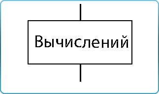
Функциональный блок – это отдельный вычислительный оператор или любая последовательность вычислений с единственным входом и единственным выходом.
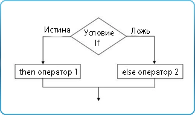
Конструкция принятия двоичного (дихотомического) решения называется также конструкцией If-Then-Else (если-то-иначе), разветвлением или ветвлением. Это структура, обеспечивающая выбор между двумя альтернативными путями вычислительного процесса в зависимости от выполнения некоторого условия.
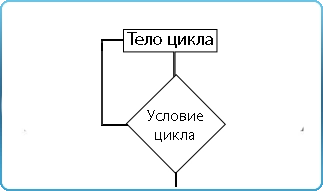
Конструкция обобщенного цикла – в качестве базовой конструкции структурного программирования используется цикл с предусловием, называемый циклом «Пока» (пока условие истинно, тело цикла выполняется).
Логические конструкции принятия двоичного решения и обобщенного цикла имеют только один вход и один выход. Поэтому они могут рассматриваться как функциональные блоки. C учётом этого вводится преобразование логических блоков в функциональный блок. Кроме того, всякая последовательность функциональных блоков, называемая конструкцией следования, также может быть приведена к одному функциональному блоку. Преобразования логических блоков и конструкции следования в один функциональный блок называются преобразованиями Бома–Джакопини. Их основу составляет принцип «чёрного ящика» (часть алгоритма или программы, реализующая некоторую функцию, с одним входом и одним выходом). Таким образом, всякая программа, состоящая из функциональных блоков, операторов цикла с предусловием и операторов If-Then-Else, поддаётся последовательному преобразованию к единственному функциональному блоку. Эта последовательность преобразований может быть использована как средство понимания программы, подход к доказательству ее правильности и структурированности. Обратная последовательность преобразований может быть использована в процессе проектирования алгоритма (программы) по методу нисходящего проектирования – алгоритм (программа) разрабатывается, исходя из единственного функционального блока, который постепенно детализируется в сложную структуру основных элементов.
Суть структурного подхода к разработке ПО Сущность структурного подхода к разработке ИС заключается в ее декомпозиции (разбиении) на автоматизируемые функции: система разбивается на функциональные подсистемы, которые в свою очередь делятся на подфункции, подразделяемые на задачи и так далее. Процесс разбиения продолжается вплоть до конкретных процедур. При этом автоматизируемая система сохраняет целостное представление, в котором все составляющие компоненты взаимоувязаны. При разработке системы "снизу-вверх" от отдельных задач ко всей системе целостность теряется, возникают проблемы при информационной стыковке отдельных компонентов. Все наиболее распространенные методологии структурного подхода базируются на ряде общих принципов.
Принципы структурного подхода Основные принципы структурного программирования: Абстракция — позволяет программисту вообразить требуемое решение проблемы без сиюминутного учета множества деталей. Программист может рассматривать программу по уровням: верхний уровень показывает большую абстракцию, упрощает взгляд на проект, в то время как нижний уровень показывает мелкие детали реализации. Формальность — использование при разработке программы строгого методического подхода, что является базой для превращения программирования из импровизации в инженерную дисциплину. Этот принцип дает основания для доказательства правильности программ, так как позволяет изучать программы (алгоритмы) как математические объекты. «Разделяй и властвуй» — разделение программы на отдельные фрагменты (модули), которые просты по управлению и допускают независимую отладку и тестирование. Иерархическое упорядочение — принцип организации составных частей проблемы в иерархические древовидные структуры с добавлением новых деталей на каждом уровне. Непротиворечивости — заключается в обоснованности и согласованности элементов. Принцип структурирования данных — данные должны быть структурированы и иерархически организованы.
Восходящее и нисходящее проектирование Метод «сверху вниз» Сначала пишется текст основной программы, в котором, вместо каждого связного логического фрагмента текста, вставляется вызов подпрограммы, которая будет выполнять этот фрагмент. Вместо настоящих, работающих подпрограмм, в программу вставляются фиктивные части — заглушки, которые, говоря упрощенно, ничего не делают. Метод нисходящего проектирования предполагает последовательное разложение общей функции обработки данных на простые функциональные элементы («сверху-вниз»). В результате строится иерархическая схема – функциональная структура алгоритма (ФСА), отражающая состав и взаимоподчиненность отдельных функций. Если говорить точнее, заглушка удовлетворяет требованиям интерфейса заменяемого фрагмента (модуля), но не выполняет его функций или выполняет их частично. Затем заглушки заменяются или дорабатываются до настоящих полнофункциональных фрагментов (модулей) в соответствии с планом программирования. На каждой стадии процесса реализации уже созданная программа должна правильно работать по отношению к более низкому уровню. Полученная программа проверяется и отлаживается. После того, как программист убедится, что подпрограммы вызываются в правильной последовательности (то есть общая структура программы верна), подпрограммы-заглушки последовательно заменяются на реально работающие, причём разработка каждой подпрограммы ведётся тем же методом, что и основной программы. Разработка заканчивается тогда, когда не останется ни одной заглушки. Такая последовательность гарантирует, что на каждом этапе разработки программист одновременно имеет дело с обозримым и понятным ему множеством фрагментов, и может быть уверен, что общая структура всех более высоких уровней программы верна. При сопровождении и внесении изменений в программу выясняется, в какие именно процедуры нужно внести изменения. Они вносятся, не затрагивая части программы, непосредственно не связанные с ними. Это позволяет гарантировать, что при внесении изменений и исправлении ошибок не выйдет из строя какая-то часть программы, находящаяся в данный момент вне зоны внимания программиста.
Восходящее проектирование Иногда основному проектированию сверху-вниз сопутствует разработка компонент проекта снизу-вверх. Разработка начинается от компонента нижнего уровня, далее переходят к разработке компонента следующего уровня иерархии и т.д. Достоинством этого принципа является то, что при переходе к разработке компонентов более высокого уровня иерархии компоненты проекта нижних уровней можно считать готовыми и подключать их к проектируемым компонентам верхнего уровня. Однако на практике при таком подходе отсутствие целостного взгляда на весь проект с позиций верхнего уровня, определяющего цели проекта, не позволяет в ряде случаев принимать верные решения, что приводит к повторной разработке или значительной корректировке компонент проекта. При разработке компонент нижнего уровня необходимо все время помнить об общих целях проекта. Разработка программного обеспечения полностью по принципу снизу-вверх возможна лишь для сравнительно небольших групп программ, ограниченных по количеству несколькими модулями, когда разработчики способны оценивать в любое время структуру комплекса программ в целом и структуру и функции отдельных модулей на всех уровнях иерархии. Поэтому при разработке больших программных изделий, содержащих сотни модулей, наиболее рациональным принципом является проектирование сверху-вниз. Часто оба метода применяются одновременно: сверху-вниз — при объединении в единое целое; снизу-вверх — при разработке общих хорошо отлаженных блоков.
В структурном анализе используются в основном две группы средств, иллюстрирующих функции, выполняемые системой и отношения между данными. Каждой группе средств соответствуют определенные виды моделей (диаграмм), наиболее распространенными среди которых являются следующие: - SADT (Structured Analysis and Design Technique) модели и соответствующие функциональные диаграммы; - DFD (Data Flow Diagrams) диаграммы потоков данных; - ERD (Entity-Relationship Diagrams) диаграммы "сущность-связь". На стадии проектирования ИС модели расширяются, уточняются и дополняются диаграммами, отражающими структуру программного обеспечения: архитектуру ПО, структурные схемы программ и диаграммы экранных форм. Перечисленные модели в совокупности дают полное описание ИС независимо от того, является ли она существующей или вновь разрабатываемой. Состав диаграмм в каждом конкретном случае зависит от необходимой полноты описания системы.
Глоссарий
Структурное программирование — методология разработки программного обеспечения, в основе которой лежит представление программы в виде иерархической структуры блоков. Цель — повысить производительность труда программистов, сократить число ошибок, упростить отладку, модификацию и сопровождение ПО. Теорема Бёма-Якопини — любая программа, заданная в виде блок-схемы, может быть представлена с помощью трех управляющих структур: последовательности, ветвления и цикла. Базовые структуры структурного программирования — функциональный блок (последовательность вычислений с одним входом и одним выходом); конструкция If-Then-Else (ветвление, выбор между двумя альтернативами); конструкция обобщенного цикла (цикл с предусловием «Пока»). Преобразования Бома–Джакопини — преобразования логических блоков и конструкции следования в один функциональный блок. Их основу составляет принцип «чёрного ящика» (часть алгоритма с одним входом и одним выходом). Принципы структурного подхода — абстракция, формальность, «разделяй и властвуй», иерархическое упорядочение, непротиворечивости, структурирование данных. Нисходящее проектирование (сверху-вниз) — метод, при котором сначала пишется текст основной программы с вызовами подпрограмм-заглушек, которые затем последовательно заменяются на реально работающие подпрограммы. Заглушка — фиктивная часть программы, удовлетворяющая требованиям интерфейса заменяемого модуля, но не выполняющая его функций или выполняющая их частично. Восходящее проектирование (снизу-вверх) — разработка начинается от компонента нижнего уровня, далее переходят к разработке компонента следующего уровня иерархии. Применяется при разработке общих хорошо отлаженных блоков. Модели структурного анализа — SADT (функциональные диаграммы), DFD (диаграммы потоков данных), ERD (диаграммы "сущность-связь").
Методы проектирования и программирования ПО. Восходящее и нисходящее проектирование
По мере развития вычислительной техники стала резко возрастать сложность программ. Они становились слишком велики для того, чтобы их можно было охватить и представить как единое целое. Общий принцип, используемый человеком при решении любых сложных задач, состоит в дроблении их на мелкие подзадачи, в установлении между ними связей и решении каждой из них независимо. Так и в программировании общее признание получил принцип построения программ из отдельных программных модулей, каждый из которых представляет завершенную программу, где решается часть общей задачи. Структурное программирование (СП) является одним из методов улучшения программы. Оно предназначено для организации проектирования программ и процесса кодирования, чтобы предотвратить большинство логических ошибок и обнаружить те, которые допущены. Модульное программирование – это процесс разделения программы на логические части, называемые модулями, и последовательное программирование каждой части. Когда большая единая задача делится на подзадачи, то значительно проще прочесть и понять программу. Если проведено программирование всей задачи сверху-вниз, то она естественно разбивается на подзадачи для возможных модулей. При этом преследуется две цели: добиться того, чтобы программный модуль был правильным и не зависел от контекста, в котором он будет использоваться; стремиться к тому, чтобы из модулей можно было формировать большие программы без каких-либо предварительных знаний о внутренней работе модуля.
Достоинства структурного программирования: 1. Структурное программирование позволяет значительно сократить число вариантов построения программы по одной и той же спецификации, что приводит к значительному снижению сложности программы. 2. В структурированных программах логически связанные операторы находятся визуально ближе, а слабо связанные — дальше, что позволяет обходиться без блок-схем и других графических форм изображения алгоритмов. 3. Сильно упрощается процесс тестирования и отладки структурированных программ. 4. Более высокая производительность работы за счет того, что действие каждой управляющей структуры хорошо известно и нет необходимости его обдумывать. 5. Ясность и читаемость программ. 6. Более высокая эффективность за счет глобальной оптимизации программы.
Принципы восходящего и нисходящего проектирования При проектировании модульного ПО используют два подхода.
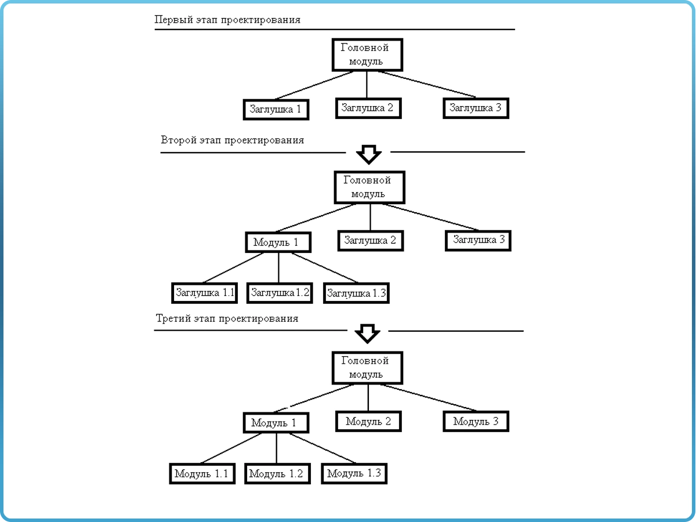
Метод нисходящего проектирования. Он подобен процессу постепенного получения более детального изображения предмета из его общего вида путем применения все более сильного увеличения. В данном методе сначала разрабатываются, кодируются, тестируются и отлаживаются программные модули самого верхнего уровня. При этом, чтобы как можно раньше начать проверку работоспособности системы, вместо модулей нижнего уровня, еще детально не разработанных, следует использовать программные заглушки. Заглушка – это простой по структуре программный модуль, в котором входные и выходные данные соответствуют замещаемому модулю, но алгоритм обработки данных значительно упрощен. Часто в программе-заглушке помимо описания входных и выходных данных присутствует один оператор печати, сообщающий о том, что в этом месте программы вызывается заглушка. Применение метода нисходящего проектирования основано на пошаговом уточнении решения задачи. Начиная с верхних, самых общих шагов, на каждом следующем происходит все большее уточнение функций, выполняемых программой, до полной их реализации. Основное преимущество метода пошагового уточнения состоит в том, что при его использовании особое внимание обращается на проектирование правильной программы соответствующего уровня, а не на детальное понимание сразу всех мелочей задачи. Если первый этап проектирования корректен, то каждый последующий является лишь уточнением предыдущего с небольшими изменениями.
Метод восходящего проектирования.
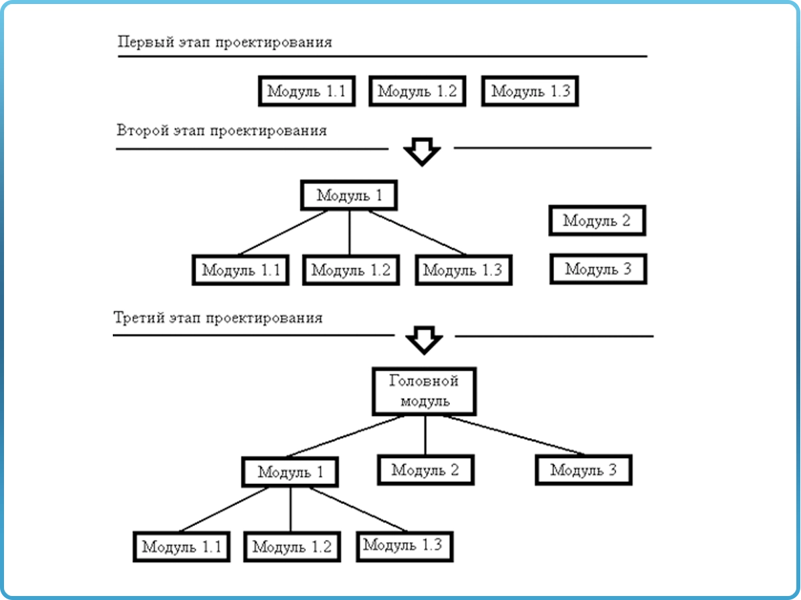
При его использовании в первую очередь разрабатываются модули самого нижнего уровня. Эти модули, работоспособность которых уже проверена, включаются в разрабатываемые модули более высокого уровня. При таком подходе не требуется писать лишних программ-заглушек, однако в этом случае работоспособность модуля верхнего уровня можно проверить только после разработки и отладки модулей нижнего уровня. Последней создается головная программа. Оба метода имеют как достоинства, так и недостатки. При использовании метода нисходящего проектирования практически до его завершения остаются неизвестными размер ПО и его эксплуатационные характеристики, так как они определяются в основном модулями нижнего уровня. Кроме того, на последних этапах проектирования ПО может возникнуть необходимость в структурных изменениях, требующих пересмотра уже разработанных модулей верхнего уровня. А в методе восходящего проектирования принципиальные ошибки в проекте общего программного обеспечения будут выявлены лишь на заключительной стадии работ. На практике наилучшие результаты дает сочетание обоих методов, при котором сначала создаются модули верхних уровней и самых критичных нижних с использованием заглушек для имитации менее существенных модулей.
Элементарные базовые конструкции для построения программы В соответствии с методологией структурного программирования любая программа представляет собой структуру, построенную из трёх типов базовых конструкций: - последовательное исполнение — однократное выполнение операций в том порядке, в котором они записаны в тексте программы; - ветвление — однократное выполнение одной из двух или более операций, в зависимости от выполнения некоторого заданного условия; - цикл — многократное исполнение одной и той же операции до тех пор, пока выполняется некоторое заданное условие (условие продолжения цикла). В программе базовые конструкции могут быть вложены друг в друга произвольным образом, но никаких других средств управления последовательностью выполнения операций не предусматривается. Повторяющиеся фрагменты программы (либо не повторяющиеся, но представляющие собой логически целостные вычислительные блоки) могут оформляться в виде подпрограмм (процедур или функций). В этом случае в тексте основной программы, вместо помещённого в подпрограмму фрагмента, вставляется инструкция вызова подпрограммы. Разработка программы ведётся пошагово, методом «сверху вниз». Сначала пишется текст основной программы, в котором вместо каждого связного логического фрагмента текста вставляется вызов подпрограммы. Вместо настоящих, работающих подпрограмм, в программу вставляются «заглушки», которые ничего не делают. Полученная программа проверяется и отлаживается. После того как программист убедится, что подпрограммы вызываются в правильной последовательности, подпрограммы-заглушки последовательно заменяются на реально работающие. Разработка заканчивается тогда, когда не останется ни одной «заглушки». Следование принципам структурного программирования сделало тексты программ, даже довольно крупных, нормально читаемыми. Серьёзно облегчилось понимание программ, появилась возможность разработки программ в нормальном промышленном режиме, когда программу может без особых затруднений понять не только её автор, но и другие программисты.
Понятие модуля. Основные принципы формирования модулей, свойства модуля, связь модулей с данными Модуль – это самостоятельная часть программы, имеющая определенное назначение и обеспечивающая заданные функции обработки автономно от других программных модулей. Разделение ПО на модули необходимо для упрощения их реализации, облегчения чтения программы и работы с данными, имеющими сложную структуру. Выделение модулей позволяет избежать чрезмерной детализации алгоритмов больших программ: перенести подробное рассмотрение реализации тех или иных действий на алгоритмы модулей. Кроме этого структуризация программных продуктов преследует цели: распределить работы по исполнителям, обеспечив приемлемую их загрузку и требуемые сроки разработки; построить календарные графики проектных работ и осуществлять их координацию; контролировать трудозатраты и стоимость проектных работ. Структурное «разбиение» программ на отдельные составляющие служит основой и для выбора инструментальных средств их создания.
К модулям предъявляются следующие требования: - отдельная компиляция; - один вход и один выход – на входе программный модуль получает определенный набор исходных данных, выполняет содержательную обработку и возвращает один набор результатных данных, т.е. реализуется стандартный принцип IPO (Input – Process – Output) – вход-процесс-выход; - выполнение минимального числа функций; - функциональная завершенность – модуль выполняет перечень регламентированных операций для реализации каждой отдельной функции в полном составе, достаточных для завершения начатой обработки; - логическая независимость – результат работы программного модуля зависит только от исходных данных, но не зависит от работы других модулей; - слабые информационные связи с другими программными модулями – обмен информацией между модулями должен быть по возможности минимизирован; - соответствие принципу вертикального управления; - возможность вызова других модулей; - обозримый по размеру и сложности программный элемент; - независимость от истории вызовов.
Следует стремиться к независимости между модулями или программами. Для достижения этого требуется, чтобы модуль не зависел от источника входных данных, места назначения выходных данных и от предыстории. Каждый модуль должен иметь свое назначение, отличающееся от назначения других модулей. Это должен быть замкнутый блок, вход и выход которого четко определены. Стремление к независимости хорошо тем, что изменения в одном модуле влияют на другую часть программы. Воздействие изменения в одном модуле на другую часть программы называется волновым эффектом. Этот эффект можно уменьшить, сведя к минимуму связь между модулями, т.е. сократить количество путей, вдоль которых изменения или ошибки могут проникнуть в другие части. Простой путь уменьшения волнового эффекта – избегать использования глобальных переменных и делать модуль небольшим. Практика показала, что чем выше степень независимости модулей, тем легче разобраться в отдельном модуле и всей программе и, соответственно, тестировать, отлаживать и модифицировать ее; меньше вероятность появления новых ошибок при исправлении старых или внесении изменений в программу, т.е. вероятность появления «волнового» эффекта; проще организовать разработку программного обеспечения группой программистов и легче его сопровождать.
Степень независимости модулей (как подпрограмм, так и библиотек) оценивают двумя критериями: сцеплением и связностью. Сцепление модулей. Сцепление является мерой взаимозависимости модулей, которая определяет, насколько хорошо модули отделены друг от друга. Модули независимы, если каждый из них не содержит о другом никакой информации. Чем больше информации о других модулях хранит модуль, тем больше он с ними сцеплен. Различают пять типов сцепления модулей: - по данным (модули обмениваются данными, представленными скалярными значениями); - по образцу (модули обмениваются данными, объединенными в структуры); - по управлению (один модуль посылает другому информационный объект (флаг), предназначенный для управления внутренней логикой модуля); - по общей области данных (модули работают с общей областью данных); - по содержимому (наихудший тип сцепления).
Связность модулей. Связность – мера прочности соединения функциональных и информационных объектов внутри одного модуля. Если сцепление характеризует качество отделения модулей, то связность характеризует степень взаимосвязи элементов, реализуемых одним модулем. Размещение сильно связанных элементов в одном модуле уменьшает межмодульные связи и, соответственно, взаимовлияние модулей. Различают следующие виды связности (в порядке убывания уровня): - функциональная (все объекты модуля предназначены для выполнения одной функции); - последовательная (выход одной функции служит исходными данными для другой функции); - информационная (коммуникативная) (функции, обрабатывающие одни и те же данные); - процедурная (функции или данные, которые являются частями одного процесса); - временная (функции выполняются параллельно или в течение некоторого периода времени); - логическая (объединение данных или функций в одну логическую группу); - случайная (связь между элементами мала или отсутствует).
Принципы формирования типовой структуры программного комплекса Программные продукты в большей степени не являются «монолитом» и имеют конструкцию (архитектуру) построения – состав и взаимосвязь программных модулей. Программный продукт обладает внутренней организацией, или внутренней структурой, образованной взаимосвязанными программными модулями. Это справедливо для сложных и многофункциональных программных продуктов, которые часто называются программными системами. При создании программных продуктов выделяются многократно используемые модули, проводится их типизация и унификация, за счет чего сокращаются сроки и трудозатраты на разработку программного продукта в целом. Некоторые программные продукты используют модули из готовых библиотек стандартных подпрограмм, процедур, функций, объектов, методов обработки данных.
Среди множества модулей различают: - головной модуль – управляет запуском программного продукта (существует в единственном числе); - управляющий модуль – обеспечивает вызов других модулей на обработку; - рабочие модули – выполняют функции обработки; - сервисные модули и библиотеки, утилиты – осуществляют обслуживающие функции. В работе программного продукта активизируются необходимые программные модули. Управляющие модули задают последовательность вызова на выполнение очередного модуля. Информационная связь модулей обеспечивается за счет использования общей базы данных либо межмодульной передачи данных через переменные обмена. Каждый модуль может оформляться как самостоятельно хранимый файл. Для функционирования программного продукта необходимо наличие программных модулей в полном составе.
Программы произвольных размеров и сложности могут быть написаны на основе ограниченного множества базисных структур. Этот принцип положен в основу проектирования схем, где любая логическая структура может быть создана из элементарных структур: 1. структура последовательности – это формализация того, что операторы программы выполняются в порядке их появления в программе, пока что-то не изменит их последовательность; 2. структура выбора – это выбор одного из двух действий исходя из выполненного некоторого условия; 3. структура повторения – используется для повторного выполнения группы команд до тех пор, пока не выполнится некоторое условие. Получение правильной программы путем замены операторов программы на управляющие логические структуры называется вложением структур. Простота исходных конструкций структурного программирования предотвращает появление сложных информационных связей и запутанных передач управления. Структурированными считаются программы, которые не имеют циклов с несколькими выходами, не имеют переходов внутрь циклов или условных операторов и не имеют выходов из внутренней части циклов или условных операторов.
Любое ПО можно представить в виде иерархии модулей. Модули верхнего уровня выполняют более общие функции и вызывают модули нижних уровней, в которых детализируется решение задачи. Модули нижних уровней или одного уровня иерархии могут вызываться для исполнения только модулями высших уровней, т.е. модули нижних уровней не могут вызывать модули высших уровней, а модули одного уровня – вызывать друг друга. Информация зон глобальных переменных доступна для использования любыми модулями, входящими в комплекс программ или группу программ, в соответствии с областью действия зоны глобальных переменных, т.е. глобальные переменные могут быть доступны не для всего комплекса программ, а лишь для указанной в описании группы модулей. Локальные переменные доступны лишь в пределах того модуля, в котором они определены. Для взаимодействия вызываемых и вызывающих модулей создаются зоны обменных переменных, информация из которых доступна лишь модулям, непосредственно связанным по управлению.
Глоссарий
Структурное программирование (СП) — метод организации проектирования программ и процесса кодирования, предназначенный для предотвращения большинства логических ошибок и обнаружения тех, которые допущены. Модульное программирование — процесс разделения программы на логические части, называемые модулями, и последовательное программирование каждой части. Модуль — самостоятельная часть программы, имеющая определенное назначение и обеспечивающая заданные функции обработки автономно от других программных модулей. Заглушка — простой по структуре программный модуль, в котором входные и выходные данные соответствуют замещаемому модулю, но алгоритм обработки данных значительно упрощен. Нисходящее проектирование (сверху-вниз) — метод, при котором сначала разрабатываются, кодируются, тестируются и отлаживаются программные модули самого верхнего уровня, а модули нижнего уровня замещаются заглушками. Восходящее проектирование (снизу-вверх) — метод, при котором в первую очередь разрабатываются модули самого нижнего уровня, которые затем включаются в разрабатываемые модули более высокого уровня. Базовые конструкции структурного программирования — последовательное исполнение, ветвление, цикл. Эти конструкции могут быть вложены друг в друга произвольным образом. Сцепление модулей — мера взаимозависимости модулей, определяющая, насколько хорошо модули отделены друг от друга. Типы сцепления: по данным, по образцу, по управлению, по общей области данных, по содержимому. Связность модулей — мера прочности соединения функциональных и информационных объектов внутри одного модуля. Виды связности: функциональная, последовательная, информационная, процедурная, временная, логическая, случайная. Волновой эффект — воздействие изменения в одном модуле на другую часть программы. Принцип IPO (Input – Process – Output) — стандартный принцип работы модуля: вход-процесс-выход, когда модуль получает набор исходных данных, выполняет обработку и возвращает набор результатных данных.
Методология функционального моделирования.
Метод функционального моделирования SADT Под словом "система" мы понимаем совокупность взаимодействующих компонент и взаимосвязей между ними. Мир, в котором мы живем, можно рассматривать как сложную взаимосвязанную совокупность естественных и искусственных систем. Это могут быть достаточно сложные системы (например, планеты в составе Солнечной системы), системы средней сложности (космический корабль) или сверхсложные системы (системы молекулярных взаимодействий в живых организмах). Существует огромное количество научных дисциплин, предназначенных для изучения и объяснения различных аспектов этого бесконечного спектра сложности. Искусственные системы по своей сложности, как правило, занимают среднее положение. С точки зрения общей теории систем такие системы обычно рассматриваются как системы средней сложности. Под термином "моделирование" мы понимаем процесс создания точного описания системы. Особенно трудным оказывается описание систем средней сложности, таких, как система коммутаций в телефонных сетях, управление аэровоздушными перевозками или движением подводной лодки, сборка автомобилей, челночные космические рейсы, функционирование перерабатывающих предприятий. С точки зрения человека, эти системы описать достаточно трудно, потому что они настолько велики, что практически невозможно перечислить все их компоненты со своими взаимосвязями, и в то же время недостаточно велики для применения общих упрощающих предположений (как это принято в физике). Наша неспособность дать простое описание, а следовательно, и обеспечить понимание таких систем делает их проектирование и создание трудоемким и дорогостоящим процессом и повышает степень их ненадежности.
Метод SADT разработан Дугласом Россом в 1973 г. Данный метод успешно использовался в военных, промышленных и коммерческих организациях США для решения широкого круга задач, таких, как долгосрочное и стратегическое планирование, автоматизированное производство и проектирование, разработка ПО для оборонных систем, управление финансами и материально-техническим снабжением и др. Методология SADT представляет собой совокупность методов, правил и процедур, предназначенных для построения функциональной модели объекта какой-либо предметной области. Функциональная модель SADT отображает функциональную структуру объекта, т.е. производимые им действия и связи между этими действиями. Эта методология возникла под сильным влиянием PLEX, концепции клеточной модели человек-ориентированных функций Хори, общей теории систем технологии программирования и даже кибернетики. С 1973 г. сфера ее использования существенно расширяется для решения задач, связанных с большими системами, такими, как проектирование телефонных коммуникаций реального времени, автоматизация производства (САМ), создание программного обеспечения для командных и управляющих систем, поддержка боеготовности. Причина такого успеха заключается в том, что SADT является полной методологией для создания описания систем, основанной на концепциях системного моделирования.
Основные элементы методологии SADT основываются на следующих концепциях: - графическое представление блочного моделирования. Графика блоков и дуг SADT-диаграммы отображает функцию в виде блока, а интерфейсы входа/выхода представляются дугами, соответственно входящими в блок и выходящими из него. Взаимодействие блоков друг с другом описываются посредством интерфейсных дуг, выражающих "ограничения", которые в свою очередь определяют, когда и каким образом функции выполняются и управляются; - строгость и точность. Выполнение правил SADT требует достаточной строгости и точности, не накладывая в то же время чрезмерных ограничений на действия аналитика. Правила SADT включают: ограничение количества блоков на каждом уровне декомпозиции (правило 3-6 блоков); связность диаграмм (номера блоков); уникальность меток и наименований (отсутствие повторяющихся имен); синтаксические правила для графики (блоков и дуг); разделение входов и управлений (правило определения роли данных); - отделение организации от функции, т.е. исключение влияния организационной структуры на функциональную модель.
SADT-модели Описание системы с помощью SADT называется моделью. В SADT-моделях используются как естественный, так и графический языки. Для передачи информации о конкретной системе источником естественного языка служат люди, описывающие систему, а источником графического языка — сама методология SADT. Графический язык SADT обеспечивает структуру и точную семантику естественному языку модели. Графический язык SADT организует естественный язык вполне определенным и однозначным образом, за счет чего SADT и позволяет описывать системы, которые до недавнего времени не поддавались адекватному представлению. С точки зрения SADT модель может быть сосредоточена либо на функциях системы, либо на ее объектах. SADT-модели, ориентированные на функции, принято называть функциональными моделями, а ориентированные на объекты системы — моделями данных. Функциональная модель представляет с требуемой степенью детализации систему функций, которые в свою очередь отражают свои взаимоотношения через объекты системы. Модели данных дуальны к функциональным моделям и представляют собой подробное описание объектов системы, связанных системными функциями. Полная методология SADT поддерживает создание множества моделей для более точного описания сложной системы.
Методологию IDEF0 можно считать следующим этапом развития хорошо известного графического языка описания функциональных систем SADT (Structured Analysis and Design Technique). Исторически IDEF0 как стандарт был разработан в 1981 году в рамках обширной программы автоматизации промышленных предприятий, которая носила обозначение ICAM (Integrated Computer Aided Manufacturing). Семейство стандартов IDEF унаследовало свое обозначение от названия этой программы (IDEF=Icam DEFINition), и последняя его редакция была выпущена в декабре 1993 года Национальным Институтом по Стандартам и Технологиям США (NIST). Целью методики является построение функциональной схемы исследуемой системы, описывающей все необходимые процессы с точностью, достаточной для однозначного моделирования деятельности системы. Методология SADT может использоваться для моделирования широкого круга систем и определения требований и функций, а затем для разработки системы, которая удовлетворяет этим требованиям и реализует эти функции. Для уже существующих систем SADT может быть использована для анализа функций, выполняемых системой, а также для указания механизмов, посредством которых они осуществляются.
Состав функциональной модели
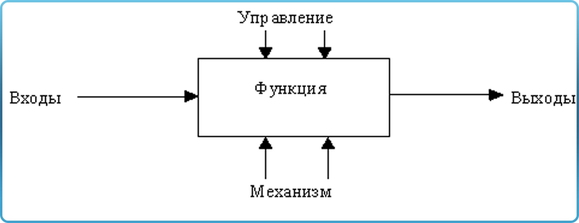
Результатом применения методологии SADT является модель, которая состоит из диаграмм, фрагментов текстов и глоссария, имеющих ссылки друг на друга. Диаграммы — главные компоненты модели, все функции ИС и интерфейсы на них представлены как блоки и дуги. Место соединения дуги с блоком определяет тип интерфейса. Управляющая информация входит в блок сверху, в то время как информация, которая подвергается обработке, показана с левой стороны блока, а результаты выхода показаны с правой стороны. Механизм (человек или автоматизированная система), который осуществляет операцию, представляется дугой, входящей в блок снизу. Под моделью IDEF0 подразумевается графическое и текстовое представление результатов анализа предметной области, разработанное с определенной целью и с выбранной точки зрения и идентифицирующее функции системы. Одной из наиболее важных особенностей методологии SADT является постепенное введение все больших уровней детализации по мере создания диаграмм, отображающих модель.
В основе методологии лежат четыре основных понятия: функциональный блок, интерфейсная дуга, декомпозиция, глоссарий. Функциональный блок (Activity Box) представляет собой некоторую конкретную функцию в рамках рассматриваемой системы. По требованиям стандарта название каждого функционального блока должно быть сформулировано в глагольном наклонении (например, «производить услуги»). На диаграмме функциональный блок изображается прямоугольником. Каждая из четырех сторон функционального блока имеет свое определенное значение (роль), при этом: - верхняя сторона имеет значение «Управление» (Control); - левая сторона имеет значение «Вход» (Input); - правая сторона имеет значение «Выход» (Output); - нижняя сторона имеет значение «Механизм» (Mechanism).
Интерфейсная дуга (Arrow) отображает элемент системы, который обрабатывается функциональным блоком или оказывает иное влияние на функцию, представленную данным функциональным блоком. Интерфейсные дуги часто называют потоками или стрелками. С помощью интерфейсных дуг отображают различные объекты, в той или иной степени определяющие процессы, происходящие в системе. Такими объектами могут быть элементы реального мира (детали, вагоны, сотрудники и т.д.) или потоки данных и информации (документы, данные, инструкции и т.д.). В зависимости от того, к какой из сторон функционального блока подходит данная интерфейсная дуга, она носит название «входящей», «исходящей» или «управляющей». Необходимо отметить, что любой функциональный блок по требованиям стандарта должен иметь, по крайней мере, одну управляющую интерфейсную дугу и одну исходящую. Это и понятно – каждый процесс должен происходить по каким-то правилам (отображаемым управляющей дугой) и должен выдавать некоторый результат (выходящая дуга), иначе его рассмотрение не имеет никакого смысла. Обязательное наличие управляющих интерфейсных дуг является одним из главных отличий стандарта IDEF0 от других методологий классов DFD (Data Flow Diagram) и WFD (Work Flow Diagram).
Декомпозиция (Decomposition) является основным понятием стандарта IDEF0. Принцип декомпозиции применяется при разбиении сложного процесса на составляющие его функции. При этом уровень детализации процесса определяется непосредственно разработчиком модели. Декомпозиция позволяет постепенно и структурированно представлять модель системы в виде иерархической структуры отдельных диаграмм, что делает ее менее перегруженной и легко усваиваемой. Последним из понятий IDEF0 является глоссарий (Glossary). Для каждого из элементов IDEF0 — диаграмм, функциональных блоков, интерфейсных дуг — существующий стандарт подразумевает создание и поддержание набора соответствующих определений, ключевых слов, повествовательных изложений и т.д., которые характеризуют объект, отображенный данным элементом. Этот набор называется глоссарием и является описанием сущности данного элемента. Глоссарий гармонично дополняет наглядный графический язык, снабжая диаграммы необходимой дополнительной информацией.
Модель IDEF0 всегда начинается с представления системы как единого целого – одного функционального блока с интерфейсными дугами, простирающимися за пределы рассматриваемой области. Такая диаграмма с одним функциональным блоком называется контекстной диаграммой. В пояснительном тексте к контекстной диаграмме должна быть указана цель (Purpose) построения диаграммы в виде краткого описания и зафиксирована точка зрения (Viewpoint). Определение и формализация цели разработки IDEF0-модели является крайне важным моментом. Фактически цель определяет соответствующие области в исследуемой системе, на которых необходимо фокусироваться в первую очередь. Точка зрения определяет основное направление развития модели и уровень необходимой детализации. Четкое фиксирование точки зрения позволяет разгрузить модель, отказавшись от детализации и исследования отдельных элементов, не являющихся необходимыми, исходя из выбранной точки зрения на систему. Правильный выбор точки зрения существенно сокращает временные затраты на построение конечной модели. Претенденты на точку зрения — это, например, сотрудники, администраторы, преподаватели, учащиеся. С учетом цели модели предпочтение следует отдать точке зрения тому претенденту, функции которого охватывают практически все функции системы.
Субъектом моделирования является сама система. В методологии IDEF0 подчеркивается необходимость точного определения границ системы, чтобы избежать включения в модель посторонних субъектов. IDEF0-модель должна иметь единственный субъект. Таким образом, субъект определяет, что включить в модель, а что исключить из нее. Точка зрения диктует автору модели выбор нужной информации о субъекте и форму ее подачи. Цель становится критерием окончания моделирования. Конечным результатом моделирования является набор тщательно взаимоувязанных описаний, начиная с описания самого верхнего уровня всей системы и заканчивая подробным описанием деталей или операций системы. Каждое из таких описаний называется диаграммой. IDEF0-модель – это древовидная структура диаграмм, где верхняя диаграмма является наиболее общей, а нижние наиболее детализированы.
Глоссарий
Метод SADT (Structured Analysis and Design Technique) — совокупность методов, правил и процедур, предназначенных для построения функциональной модели объекта какой-либо предметной области. Разработан Дугласом Россом в 1973 г. Функциональная модель SADT — модель, отображающая функциональную структуру объекта, т.е. производимые им действия и связи между этими действиями. IDEF0 — стандарт функционального моделирования, следующий этап развития SADT. Разработан в 1981 году в рамках программы ICAM (Integrated Computer Aided Manufacturing). Функциональный блок (Activity Box) — основное понятие SADT/IDEF0, представляет собой конкретную функцию в рамках рассматриваемой системы. Название блока должно быть сформулировано в глагольном наклонении. Имеет четыре стороны: Управление (сверху), Вход (слева), Выход (справа), Механизм (снизу). Интерфейсная дуга (Arrow) — элемент системы, который обрабатывается функциональным блоком или оказывает влияние на функцию. Отображает потоки (детали, документы, данные, инструкции и т.д.). Декомпозиция (Decomposition) — основное понятие IDEF0, принцип разбиения сложного процесса на составляющие его функции. Позволяет представить модель системы в виде иерархической структуры диаграмм. Глоссарий (Glossary) — набор определений, ключевых слов, повествовательных изложений для каждого элемента IDEF0 (диаграмм, блоков, дуг), дополняющий графический язык. Контекстная диаграмма — диаграмма с одним функциональным блоком, с которой всегда начинается модель IDEF0. Представляет систему как единое целое. Цель (Purpose) — определяет области в исследуемой системе, на которых необходимо фокусироваться в первую очередь. Становится критерием окончания моделирования. Точка зрения (Viewpoint) — определяет основное направление развития модели и уровень необходимой детализации. Позволяет разгрузить модель, отказавшись от несущественных деталей. Правила SADT — ограничение количества блоков на каждом уровне декомпозиции (правило 3-6 блоков); связность диаграмм; уникальность меток и наименований; синтаксические правила для графики; разделение входов и управлений.
Иерархия функциональных диаграмм
Выделение подпроцессов. В процессе декомпозиции функциональный блок, который в контекстной диаграмме отображает систему как единое целое, подвергается детализации на другой диаграмме. Получившаяся диаграмма второго уровня содержит функциональные блоки, отображающие главные подфункции функционального блока контекстной диаграммы, и называется дочерней (Child Diagram) по отношению к нему (каждый из функциональных блоков, принадлежащих дочерней диаграмме, соответственно называется дочерним блоком – Child Box). В свою очередь, функциональный блок-предок называется родительским блоком по отношению к дочерней диаграмме (Parent Box), а диаграмма, к которой он принадлежит – родительской диаграммой (Parent Diagram). Каждая из подфункций дочерней диаграммы может быть далее детализирована путем аналогичной декомпозиции соответствующего ей функционального блока. В каждом случае декомпозиции функционального блока все интерфейсные дуги, входящие в данный блок или исходящие из него, фиксируются на дочерней диаграмме. Этим достигается структурная целостность IDEF0-модели.
Иногда отдельные интерфейсные дуги высшего уровня не имеет смысла продолжать рассматривать на диаграммах нижнего уровня, или наоборот — отдельные дуги нижнего уровня отражать на диаграммах более высоких уровней – это будет только перегружать диаграммы и делать их сложными для восприятия. Для решения подобных задач в стандарте IDEF0 предусмотрено понятие туннелирования. Обозначение «туннеля» (Arrow Tunnel) в виде двух круглых скобок вокруг начала интерфейсной дуги обозначает, что эта дуга не была унаследована от функционального родительского блока и появилась (из «туннеля») только на этой диаграмме. В свою очередь, такое же обозначение вокруг конца (стрелки) интерфейсной дуги в непосредственной близости от блока-приемника означает тот факт, что в дочерней по отношению к этому блоку диаграмме эта дуга отображаться и рассматриваться не будет. Чаще всего бывает, что отдельные объекты и соответствующие им интерфейсные дуги не рассматриваются на некоторых промежуточных уровнях иерархии, – в таком случае они сначала «погружаются в туннель», а затем при необходимости «возвращаются из туннеля».
Обычно IDEF0-модели несут в себе сложную и концентрированную информацию, и для того, чтобы ограничить их перегруженность и сделать удобочитаемыми, в стандарте приняты соответствующие ограничения сложности. Рекомендуется представлять на диаграмме от трех до шести функциональных блоков, при этом количество подходящих к одному функциональному блоку (выходящих из одного функционального блока) интерфейсных дуг предполагается не более четырех. Модель SADT представляет собой серию диаграмм с сопроводительной документацией, разбивающих сложный объект на составные части, которые представлены в виде блоков. Детали каждого из основных блоков показаны в виде блоков на других диаграммах. Каждая детальная диаграмма является декомпозицией блока из более общей диаграммы. На каждом шаге декомпозиции более общая диаграмма называется родительской для более детальной диаграммы. Дуги, входящие в блок и выходящие из него на диаграмме верхнего уровня, являются точно теми же самыми, что и дуги, входящие в диаграмму нижнего уровня и выходящие из нее, потому что блок и диаграмма представляют одну и ту же часть системы.
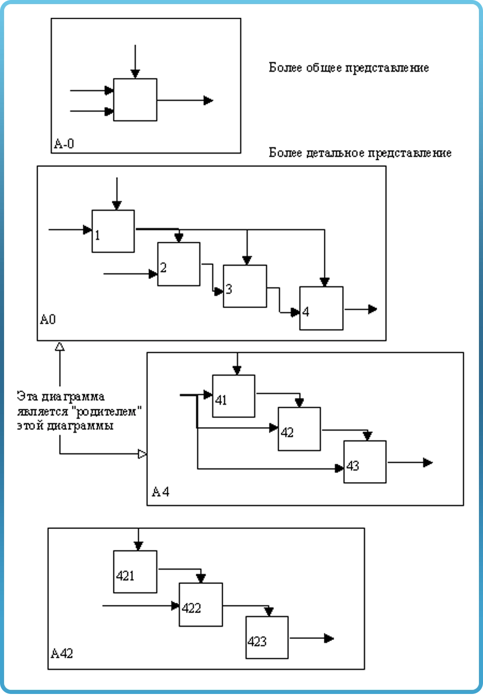
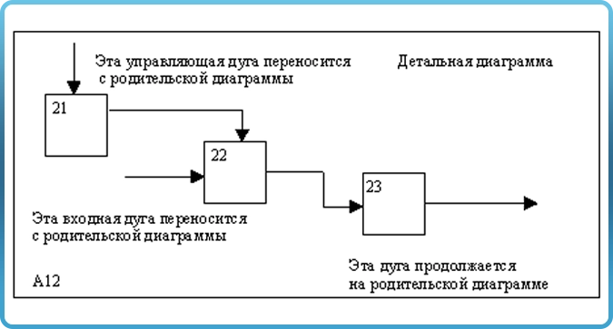
Некоторые дуги присоединены к блокам диаграммы обоими концами, у других же один конец остается неприсоединенным. Неприсоединенные дуги соответствуют входам, управлениям и выходам родительского блока. Источник или получатель этих пограничных дуг может быть обнаружен только на родительской диаграмме. Неприсоединенные концы должны соответствовать дугам на исходной диаграмме. Все граничные дуги должны продолжаться на родительской диаграмме, чтобы она была полной и непротиворечивой. На SADT-диаграммах не указаны явно ни последовательность, ни время. Обратные связи, итерации, продолжающиеся процессы и перекрывающиеся (по времени) функции могут быть изображены с помощью дуг. Обратные связи могут выступать в виде комментариев, замечаний, исправлений и т.д.
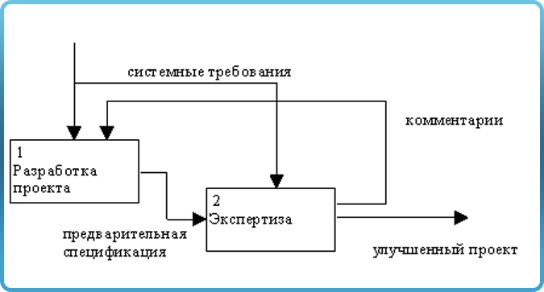
Механизмы (дуги с нижней стороны) показывают средства, с помощью которых осуществляется выполнение функций. Механизм может быть человеком, компьютером или любым другим устройством, которое помогает выполнять данную функцию.
Каждый блок на диаграмме имеет свой номер. Блок любой диаграммы может быть далее описан диаграммой нижнего уровня, которая, в свою очередь, может быть далее детализирована с помощью необходимого числа диаграмм. Таким образом, формируется иерархия диаграмм. Для того чтобы указать положение любой диаграммы или блока в иерархии, используются номера диаграмм. Например, А21 является диаграммой, которая детализирует блок 1 на диаграмме А2. Аналогично, А2 детализирует блок 2 на диаграмме А0, которая является самой верхней диаграммой модели.
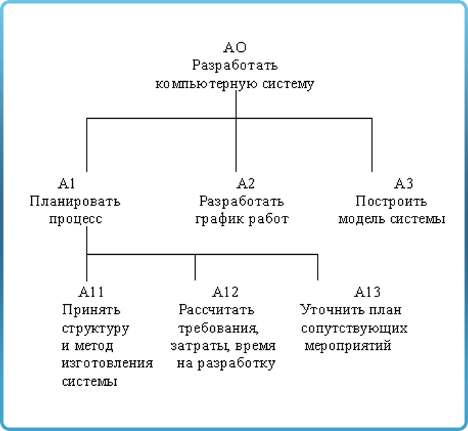
Стандарт IDEF0 содержит набор процедур, позволяющих разрабатывать и согласовывать модель большой группой людей, принадлежащих к разным областям деятельности моделируемой системы.
Основные правила построения функциональных диаграмм Обычно процесс разработки является итеративным и состоит из следующих условных этапов: - Создание модели группой специалистов, относящихся к различным сферам деятельности предприятия. Эта группа в терминах IDEF0 называется авторами (Authors). Построение первоначальной модели является динамическим процессом, в течение которого авторы опрашивают компетентных лиц о структуре различных процессов, создавая модели деятельности подразделений. При этом их интересуют ответы на следующие вопросы: что поступает в подразделение «на входе»? какие функции и в какой последовательности выполняются в рамках подразделения? кто является ответственным за выполнение каждой из функций? чем руководствуется исполнитель при выполнении каждой из функций? что является результатом работы подразделения (на выходе)? На основе имеющихся положений, документов и результатов опросов создается черновик (Model Draft) модели. - Распространение черновика для рассмотрения, согласований и комментариев. На этой стадии происходит обсуждение черновика модели с широким кругом компетентных лиц (в терминах IDEF0 — читателей) на предприятии. При этом каждая из диаграмм черновой модели письменно критикуется и комментируется, а затем передается автору. Автор, в свою очередь, также письменно соглашается с критикой или отвергает ее с изложением логики принятия решения и вновь возвращает откорректированный черновик для дальнейшего рассмотрения. Этот цикл продолжается до тех пор, пока авторы и читатели не придут к единому мнению. - Официальное утверждение модели. Утверждение согласованной модели происходит руководителем рабочей группы в том случае, если у авторов модели и читателей отсутствуют разногласия по поводу ее адекватности. Окончательная модель представляет собой согласованное представление о предприятии (системе) с заданной точки зрения и для заданной цели. Наглядность графического языка IDEF0 делает модель вполне читаемой и для лиц, которые не принимали участия в проекте ее создания, а также эффективной для проведения показов и презентаций. В дальнейшем на базе построенной модели могут быть организованы новые проекты, нацеленные на производство изменений в модели.
Глоссарий
SADT/IDEF0 — методология функционального моделирования, разработанная Дугласом Россом в 1973 г. IDEF0 является стандартом, следующим этапом развития SADT. Функциональный блок (Activity Box) — представляет конкретную функцию в рамках рассматриваемой системы. Имеет четыре стороны: Управление (сверху), Вход (слева), Выход (справа), Механизм (снизу). Интерфейсная дуга (Arrow) — отображает элемент системы (потоки данных, документы, детали, инструкции), обрабатываемый функциональным блоком или оказывающий влияние на функцию. Декомпозиция (Decomposition) — разбиение сложного процесса на составляющие функции. Позволяет представить модель системы в виде иерархической структуры диаграмм. Глоссарий (Glossary) — набор определений, ключевых слов и пояснений для каждого элемента IDEF0 (диаграмм, блоков, дуг). Контекстная диаграмма — диаграмма с одним функциональным блоком, представляющая систему как единое целое. С нее всегда начинается модель IDEF0. Дочерняя диаграмма (Child Diagram) — диаграмма, полученная в результате декомпозиции функционального блока. Содержит дочерние блоки, отображающие подфункции родительского блока. Родительский блок (Parent Box) — функциональный блок, который подвергается декомпозиции. Родительская диаграмма — диаграмма, содержащая родительский блок. Туннелирование (Arrow Tunnel) — механизм в IDEF0, позволяющий не отображать отдельные интерфейсные дуги на диаграммах определенных уровней. Обозначается двумя круглыми скобками вокруг начала или конца дуги. Авторы (Authors) — группа специалистов, создающих модель IDEF0. Читатели (Readers) — компетентные лица, которые обсуждают, критикуют и согласовывают черновик модели. Цель (Purpose) — определяет области системы, на которых необходимо фокусироваться. Критерий окончания моделирования. Точка зрения (Viewpoint) — определяет направление развития модели и уровень детализации. Позволяет разгрузить модель от несущественных деталей.
Моделирование бизнес- процессов.
Введение. Основные понятия Бизнес-процесс определяется как логически завершенная цепочка взаимосвязанных и повторяющихся видов деятельности, в результате которых ресурсы предприятия используются для переработки объекта (физически или виртуально) с целью достижения определенных измеримых результатов или создания продукции для удовлетворения внутренних или внешних потребителей. В качестве клиента бизнес-процесса может выступать другой бизнес-процесс. В цепочку обычно входят операции, которые выполняются по определенным бизнес-правилам. Под бизнес-правилами понимают способы реализации бизнес-функций в рамках бизнес-процесса, а также характеристики и условия выполнения бизнес-процесса. Составляющие бизнес-процесс действия могут выполняться людьми (вручную или с применением компьютерных средств или механизмов) или быть полностью автоматизированы. Порядок выполнения действий и эффективность работы того, кто выполняет действие, определяют общую эффективность бизнес-процесса. Задачей каждого предприятия, стремящегося к совершенствованию своей деятельности, является построение таких бизнес-процессов, которые были бы эффективны и включали только действительно необходимые действия.
Термин моделирование имеет два основных значения. Во-первых, под моделированием понимают процесс построения модели как некоего представления (образа) оригинала, отражающего наиболее важные его черты и свойства. Если же модель уже построена, то моделирование — это процесс исследования (анализа) функционирования системы, вернее, ее модели. Базовой целью моделирования бизнес-процессов является описание реального хода бизнес-процессов компании. При этом необходимо определить, что является результатом выполнения процесса, кем и какие действия выполняются, каков их порядок, каково движение документов в ходе выполнения процесса, а также насколько процесс надежен (вероятность неудачного выполнения) и как он может быть расширен/модифицирован в будущем. Обеспечить прозрачность хода бизнес-процессов важно потому, что только в этом случае владелец бизнес-процесса (сотрудник компании, управляющий ходом бизнес-процесса и несущий ответственность за его результаты и эффективность), бизнес-аналитик, руководство и другие заинтересованные стороны будут иметь ясное представление о том, как организована работа. Понимание хода существующих бизнес-процессов дает возможность судить об их эффективности и качестве и необходимо для разработки поддерживающей бизнес ИТ-инфраструктуры.
Моделью бизнес-процесса называется его формализованное (графическое, табличное, текстовое, символьное) описание, отражающее реально существующую или предполагаемую деятельность предприятия. Модель, как правило, содержит следующие сведения о бизнес-процессе: - набор составляющих процесс шагов — бизнес-функций; - порядок выполнения бизнес-функций; - механизмы контроля и управления в рамках бизнес-процесса; - исполнителей каждой бизнес-функции; - входящие документы/информацию, исходящие документы/информацию; - ресурсы, необходимые для выполнения каждой бизнес-функции; - документацию/условия, регламентирующие выполнение каждой бизнес-функции; - параметры, характеризующие выполнение бизнес-функций и процесса в целом.
Для моделирования бизнес-процессов можно использовать различные методы. Метод, или методология, моделирования включает в себя последовательность действий, которые необходимо выполнить для построения модели, т.е. процедуру моделирования, и применяемую нотацию (язык). Наиболее популярной методологией бизнес-моделирования является ARIS, но также известны Catalyst компании CSC, Business Genetics, SCOR (Supply Chain Operations Reference), POEM (Process Oriented Enterprise Modeling) и др. Язык моделирования имеет свой синтаксис (условные обозначения различных элементов и правила их сочетания) и семантику (правила толкования моделей и их элементов). В теории и на практике существуют различные подходы к построению и отображению моделей бизнес-процессов, основными из которых являются функциональный и объектно-ориентированный. В функциональном подходе главным структурообразующим элементом является функция (бизнес-функция, действие, операция), и система представляется в виде иерархии взаимосвязанных функций. При объектно-ориентированном подходе система разбивается на набор объектов, соответствующих объектам реального мира и взаимодействующих между собой посредством посылки сообщений.
Модели бизнес-процессов применяются предприятиями для различных целей, что определяет тип разрабатываемой модели. Графическая модель бизнес-процесса в виде наглядной, общепонятной диаграммы может служить для обучения новых сотрудников их должностным обязанностям, согласования действий между структурными единицами компании, подбора или разработки компонентов информационной системы и т.д. Описание с помощью моделей такого типа существующих и целевых бизнес-процессов используется для оптимизации и совершенствования деятельности компании путем устранения узких мест, дублирования функций и проч. Имитационные модели бизнес-процессов позволяют оценить их эффективность и посмотреть, как будет выполняться процесс с входными данными, не встречавшимися до сих пор в реальной работе предприятия. Исполняемые модели бизнес-процессов могут быть запущены на специальном программном обеспечении для автоматизации процесса непосредственно по модели.
Поскольку модели бизнес-процессов предназначены для широкого круга пользователей (бизнес-аналитиков, рядовых сотрудников и руководства компании), а их построением часто занимаются неспециалисты в области информационных технологий, наиболее широко используются модели графического типа, в которых в соответствии с определенной методологией бизнес-процесс представляется в виде наглядного графического изображения — диаграммы, состоящей в основном из прямоугольников и стрелок. Такое представление обладает высокой, многомерной информативностью, которая выражается в различных свойствах (цвет, фон, начертание и т.д.) и атрибутах (вес, размер, стоимость, время и т.д.) каждого объекта и связи. В последние годы разработчики программных средств моделирования бизнес-процессов уделяют большое внимание преобразованию графических моделей в модели других видов, в частности в исполняемые, назначением которых является обеспечение автоматизации бизнес-процесса и интеграция работы задействованных в его исполнении информационных систем.
Согласно еще одной классификации, пришедшей из моделирования сложных систем, выделяют следующие виды моделей бизнес-процессов: - функциональные, описывающие совокупность выполняемых системой функций и их входы и выходы; - поведенческие, показывающие, когда и/или при каких условиях выполняются бизнес-функции, с помощью таких категорий, как состояние системы, событие, переход из одного состояния в другое, условия перехода, последовательность событий; - структурные, характеризующие морфологию системы — состав подсистем, их взаимосвязи; - информационные, отражающие структуры данных — их состав и взаимосвязи. Автоматизация процессов производится посредством так называемых систем управления бизнес-процессами BPMS (Business Process Management System), которые дают возможность непосредственно реализовывать бизнес-процессы в соответствии с построенной формальной моделью и не требуют разработки дополнительного программного обеспечения.
Для разработки понятных машине «исполняемых» моделей требуются более точные методы моделирования. К таким методам относятся языки моделирования на базе XML: BPML, BPEL, XPDL. Однако построение моделей непосредственно на этих языках неудобно для бизнес-пользователей. В этой связи большое внимание разработчики программного обеспечения уделяют средствам конвертирования графических моделей бизнес-процессов в исполняемые. Это позволяет бизнес-аналитику или менеджеру строить модели бизнес-процессов с использованием графической нотации, а затем преобразовывать построенную модель (пока нередко с помощью технического специалиста) в исполняемый вид. Следует понимать, что графические модели, предназначенные для преобразования в исполняемые, должны быть гораздо более строгими и формальными по сравнению с моделями, создаваемыми в аналитических целях. В качестве языка, позволяющего построить наглядную, понятную неподготовленному пользователю модель, которую затем можно однозначно преобразовать в исполняемый язык, выступила нотация BPMN. Она поддерживает описание таких «программистских» функций, как обработка событий и ошибок, откат транзакций и т.п.
«Третья волна» принесла в моделирование бизнес-процессов стремление к стандартизации. Методологии построения исполняемых моделей разрабатываются и выпускаются организациями по стандартизации и международными консорциумами: - OASIS (Organization for the Advancement of Structured Information Standards) выпускает спецификации ebXML и BPEL, а также различные стандарты для электронного бизнеса на базе XML и веб-сервисов; - OMG (Object Management Group) выпускает стандарты BPMN и UML, а также MDA и CORBA; - W3C (World Wide Web Consortium) выпускает стандарты WS-CDL, WSCI, а также спецификации XML, технологии веб-сервисов и многие другие; - WfMC (Workflow Management Coalition) выпускает стандарты Wf-XML и XPDL. На современном этапе в круг задач моделирования и автоматизации бизнес-процессов все чаще включают автоматизацию взаимодействия предприятия с внешней средой. В модели бизнес-процесса отражают взаимодействие компании с различными внешними сущностями: клиентами, коммерческими партнерами, поставщиками, административными органами. При автоматизации процесса данные взаимодействия также стараются по возможности автоматизировать. Особенно активно развиваются технологии автоматизации межкорпоративного взаимодействия — бизнес-бизнес (Business-to-Business, B2B).
Основные принципы моделирования бизнес-процессов Моделирование бизнес-процессов в компании может быть направлено на решение большого числа различных задач: - точно определить результат бизнес-процесса и оценить его значение для бизнеса; - определить набор действий, составляющих бизнес-процесс; - определить порядок выполнения действий (последовательно или параллельно); - произвести разделение зон ответственности: определить, какой сотрудник или подразделение компании несет ответственность за выполнение того или иного действия или процесса в целом; - определить ресурсы, потребляемые бизнес-процессом; - понять суть взаимодействий между участвующими в процессе сотрудниками и подразделениями компании и оценить, а затем повысить эффективность коммуникации между ними; - увидеть движение документов в ходе процесса; - определить потенциальные узкие места и возможности для улучшения процесса, которые будут использованы позже для его оптимизации; - более эффективно внедрить стандарты качества, например ИСО 9000, и успешно пройти сертификацию; - использовать модели бизнес-процессов в качестве руководства для новых сотрудников; - эффективно произвести автоматизацию бизнес-процессов в целом или отдельных их шагов, включая автоматизацию взаимодействия с внешней средой — клиентами, поставщиками, партнерами; - разобравшись в совокупности бизнес-процессов компании, понять и описать деятельность предприятия в целом.
Основной задачей при моделировании бизнес-процессов компании является описание существующих в ней процессов с целью построения их моделей «как есть». Для этого необходимо собрать всю доступную информацию о процессе, которой в полной мере, как правило, владеют только сотрудники компании, непосредственно задействованные в выполнении процесса. Таким образом, мы приходим к необходимости подробного опроса (интервьюирования) всех задействованных в бизнес-процессе сотрудников. Следует подчеркнуть, что нельзя ограничиваться сведениями о процессе, предоставляемыми руководителем подразделения и менеджерами. Обычно только беседа с сотрудником, непосредственно осуществляющим действия в рамках описываемого бизнес-процесса, дает адекватное представление о том, как функционирует процесс в реальности.
Первый вопрос при построении модели «как есть» касается результата рассматриваемого бизнес-процесса. Случается, что получить четкую формулировку результата бизнес-процесса нелегко, несмотря на всю важность этого понятия для эффективности работы компании. После определения результата следует разобраться с последовательностью действий, составляющих процесс. Последовательность действий моделируется на разных уровнях абстракции. На самом верхнем уровне показывают только наиболее важные шаги процесса (обычно не более десяти). Затем производится декомпозиция каждого из высокоуровневых шагов (подпроцессов). Глубина декомпозиции определяется сложностью процесса и требуемой степенью детализации. Для того чтобы получить действительно полное представление о бизнес-процессе, надо произвести декомпозицию до атомарных бизнес-функций — хорошо понятных элементарных действий (отдельных операций в ПО или выполняемых человеком), которые нет смысла раскладывать на составляющие.
На основе собранной информации строится модель обычного, или оптимального, выполнения процесса и определяются возможные сценарии его выполнения со сбоями. Различные сбои (исключительные ситуации — исключения) могут нарушать оптимальный ход процесса, поэтому следует указать, каким образом исключения будут «обработаны», то есть какие действия предпринимаются в случае возникновения исключительной ситуации. Важной частью построения модели бизнес-процесса является исследование аспектов его эффективности. Сюда входят использование ресурсов, время выполнения работ сотрудниками, возможные задержки и простои. Необходимо разработать систему показателей, или метрик, для оценки эффективности процесса. Частично в качестве метрик могут быть взяты используемые в компании KPI (Key Performance Indicator), однако могут потребоваться и дополнительные характеризующие рассматриваемый процесс показатели.
При моделировании определяются бизнес-цели, в достижение которых вносит свой вклад моделируемый процесс. Следует различать понятия бизнес-цели и результата процесса. Каждый бизнес-процесс должен иметь как минимум один результат и быть направлен на достижение хотя бы одной бизнес-цели. Например, результат процесса «Исполнение заказа на подключение абонента» можно определить как «Получение подтверждения подключения от клиента», тогда как бизнес-цели, которые преследуются при выполнении данного процесса, могут включать «Обеспечение минимального времени исполнения заказа» и «Обеспечение минимального процента рекламаций». Для определения целей следует обратиться к бизнес-стратегии компании. Необходимо выявить события, которые могут прервать ход процесса. В случае прерывания может потребоваться корректно «откатить» (компенсировать) те шаги процесса, которые уже были выполнены. Для этого следует определить логику компенсирующих действий для каждого прерывающего события. Наконец, следует рассмотреть имеющиеся программные средства, осуществляющие поддержку бизнес-процесса. Это важно, так как программное обеспечение может скрывать некоторые особенности поведения процесса, не в полной мере известные исполняющим отдельные шаги сотрудникам. Собранная на этом этапе информация будет полезна при дальнейшей автоматизации процесса.
На этапе моделирования должны быть получены следующие результаты: - Процессная карта, показывающая связь между различными бизнес-процессами и их взаимодействия. На процессной карте, как правило, каждый бизнес-процесс компании изображен в виде прямоугольника, стрелками показаны связи между ними, а также представлены различные документы, которые передаются из процесса в процесс или регламентируют их ход (стандарты, инструкции и т.п.). - Диаграмма ролей, показывающая роли при выполнении процесса и связи между ними. Диаграмма ролей не является иерархической. Она представляет такие связи, как участие в группе, руководство, коммуникацию, замещение одной роли другой и т.д. - Модель «как есть» каждого рассмотренного бизнес-процесса, детально описывающая процесс и отражающая ход процесса, действия, роли, движение документов, а также точки возможной оптимизации. Такая модель включает в себя: диаграмму окружения процесса, высокоуровневую диаграмму процесса, подробные диаграммы для каждого шага высокоуровневой модели, диаграмму обработки исключений.
На практике хорошо зарекомендовал себя следующий состав группы, осуществляющей моделирование бизнес-процесса: - владелец бизнес-процесса и один-два сотрудника того же подразделения компании, помогающих ему; - специалист по управлению качеством; - бизнес-аналитик(и); - представитель ИТ-подразделения; - внешний консультант (не обязательно).
Операции, процессы и правила построения модели BPMN BPMN (Business Process Modeling and Notation) — система условных обозначений для описания бизнес-процессов. Важно понимать: BPMN не является языком описания IT-систем. Эта нотация предназначена для описания предметной области реального бизнеса. И здесь могут быть задействованы как программные системы, так и люди (сотрудники компании, заказчики, поставщики). Это самое главное отличие этой нотации от графических инструментов для описания программ. Основной целью разработки BPMN было получение нотации, легко понимаемой всеми пользователями: от бизнес-аналитика, создающего первые наброски описаний процессов, до технических специалистов, отвечающих за реализацию этих процессов в системе, и, наконец, до людей, которые управляют этими процессами и контролируют их работу.
История создания BPMN Первая версия BPMN 1.0 была выпущена в мае 2004 года компанией Business Process Management Initiative. Следующая версия BPMN 1.1 выходит в январе 2008, и здесь разработкой и поддержкой занималась уже Object Management Group. Еще один релиз — версия BPMN 1.2 выходит в свет в январе 2009. В январе 2011 года компания OMG выпускает версию BPMN 2.0, а в декабре 2013 выходит последний на данный момент релиз – BPMN 2.0.2. Именно эта версия предлагается всем пользователям и сегодня, так как система получилась стабильной, возможности моделирования в ней очень широкие, а язык моделирования (набор обозначений) по большей части понятен всем бизнес-пользователям – как бизнесменам, бизнес-консультантам, так и техническим специалистам.
Основные элементы BPMN Нотация опирается на следующие базовые графические элементы: 1. Пул и Дорожки 2. Действия 3. Шлюзы или Развилки 4. События 5. Потоки 6. Артефакты
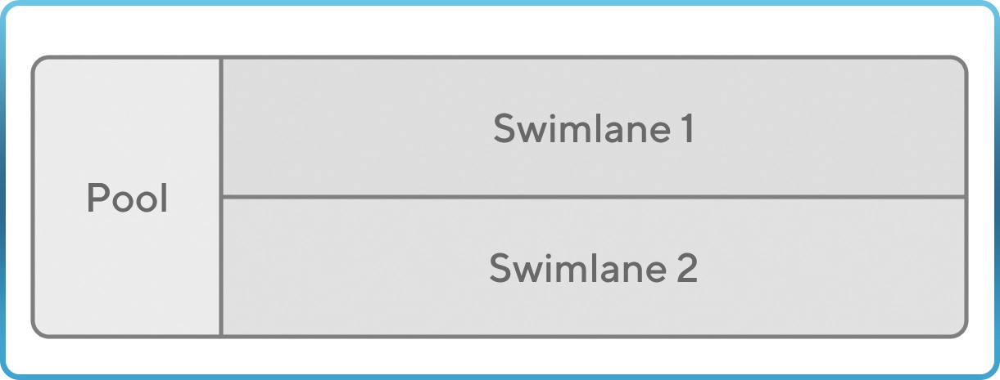
Пул – это объект, описывающий какой-то один процесс на диаграмме. Он может быть не изображен на диаграмме, но он всегда есть. На одной диаграмме может быть несколько Пулов. Пул можно развернуть для просмотра деталей. Пул может также содержать, так называемые, «дорожки». Они нужны для того, чтобы указать участников процессов, которые скрыты в пуле.
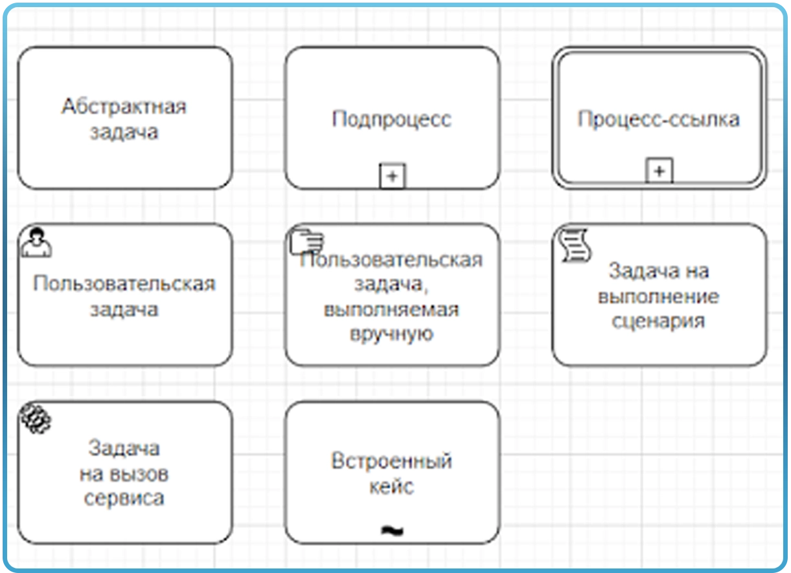
Под «действием» понимается единица работы, выполняемой в ходе исполнения бизнес-процесса. Обычно действия делят следующим образом: процесс – крупное действие, которое требует дальнейшей детализации при моделировании; задача – элементарное действие, которое уже не может быть дальше детализировано. Шлюз или развилка — это контрольный узел, который появляется в случае условного ветвления бизнес-процесса. Графически изображается в виде ромба. BPMN описывает 7 типов развилок. В качестве основных выделяют 2 типа: шлюз исключающего «или» (используется для создания альтернативных потоков процесса или сходящихся потоков управления) и параллельный шлюз (используется для создания параллельных путей без оценки какого бы то ни было условия).
Событие является одним из главных элементов BPMN и служит для описания того, что должно случиться (в отличие от задачи, когда что-то должно быть сделано). Событием может быть, например, подписание договора, или разговор с клиентом.
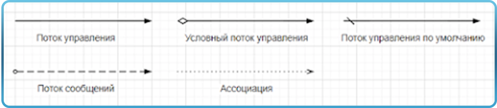
Поток Flow – это последовательность действий, обозначается как стрелка, и показывает, какое действие после какого необходимо совершить. Message Flows – это пунктирные стрелки в бизнес-модели, которые показывают сообщения, которыми обмениваются участники бизнес-процесса. Association – еще один вид линий, отображаемый в виде последовательности точек, необходим для того, чтобы показывать артефакты. Под артефактами в BPMN понимают объекты, не являющиеся действиями и не связанные с действиями напрямую. Это могут быть любые документы, данные, информация, которая не влияет напрямую на исполнение процесса. Выделяют виды артефактов: группа объектов, текстовая аннотация, объект данных.
Виды бизнес-процессов в BPMN В сквозной BPMN-модели можно выделить три типа подмоделей: - Частные (внутренние) бизнес-процессы описывают внутреннюю деятельность организации. Они представляют бизнес-процессы в общепринятом понимании (business processes или workflows). При использовании ролей частный бизнес-процесс помещается в отдельный пул. Поток управления находится внутри одного пула и не может пересекать его границ. - Абстрактные (открытые) бизнес-процессы служат для отображения взаимодействия между двумя частными бизнес-процессами (то есть между двумя участниками взаимодействия). В открытом бизнес-процессе показываются только те действия, которые участвуют в коммуникации с другими процессами. - Процессы взаимодействия (глобальные) отображают взаимодействия между двумя и более сущностями. Эти взаимодействия определяются последовательностью действий, обрабатывающих сообщения между участниками.
Методология IDEF3 Моделирование бизнес-процессов стандартом IDEF0 не учитывает временную последовательность и алгоритм планируемых работ. Для этих целей был усовершенствован стандарт IDEF0 и выпущен IDEF3. Последний применяется для разбивки работ на отдельные этапы. То есть при планировании бизнес-процессов появляется возможность раскладывать производственный процесс на множество подзадач. Такой подход позволяет рассматривать альтернативные варианты. В этой модели особое внимание уделяется нумерации каждого подпроцесса. IDEF3 — методология моделирования, использующая графическое описание информационных потоков, взаимоотношений между процессами обработки информации и объектов, являющихся частью этих процессов. IDEF3 дает возможность аналитикам описать ситуацию, когда процессы выполняются в определенной последовательности, а также описать объекты, участвующие совместно в одном процессе.
Любая IDEF3-диаграмма может содержать работы, связи, перекрестки и объекты ссылок.
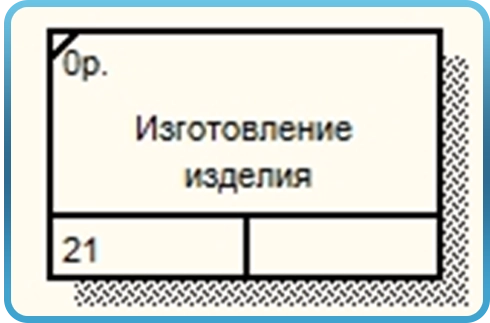
Работа (Unit of Work, activity) изображается прямоугольником с прямыми углами и имеет имя, выраженное отглагольным существительным, обозначающим процесс действия, и номер (идентификатор). Все стороны работы равнозначны. В каждую работу может входить и выходить ровно по одной стрелке. Связи показывают взаимоотношения работ. Все связи в IDEF3 однонаправлены. В IDEF3 возможны три вида связей: старшая стрелка (сплошная линия, показывает, что работа-источник должна закончиться прежде, чем работа-цель начнется); поток объектов (стрелка с двумя наконечниками, применяется для описания того факта, что объект используется в двух или более единицах работы); стрелка отношения (пунктирная линия, использующаяся для изображения связей между единицами работ, а также между единицами работ и объектами ссылок).
Перекрестки (Junction) используются для отображения логики взаимодействия стрелок при слиянии и разветвлении или для отображения множества событий, которые могут или должны быть завершены перед началом следующей работы. Различают перекрестки для слияния (Fan-in Junction) и разветвления (Fan-out Junction) стрелок. Перекресток не может использоваться одновременно для слияния и для разветвления. Типы перекрестков: Асинхронное «И» (Asynchronous AND): для слияния — все предшествующие процессы должны быть завершены; для разветвления — все следующие процессы должны быть запущены. Синхронное «И» (Synchronous AND): для слияния — все предшествующие процессы завершены одновременно; для разветвления — все следующие процессы запускаются одновременно.
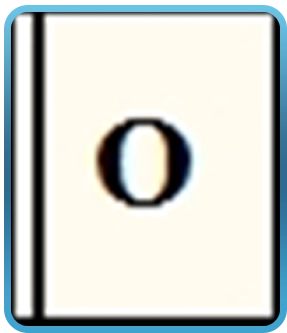
Асинхронное «ИЛИ» (Asynchronous OR): для слияния — один или несколько предшествующих процессов должны быть завершены; для разветвления — один или несколько следующих процессов должны быть запущены.
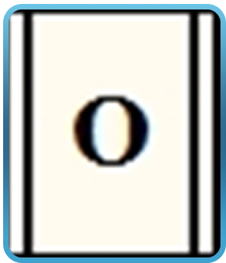
Синхронное «ИЛИ» (Synchronous OR): для слияния — один или несколько предшествующих процессов завершены одновременно; для разветвления — один или несколько следующих процессов запускаются одновременно. Исключающее «ИЛИ» XOR (Exclusive OR): для слияния — только один предшествующий процесс завершен; для разветвления — только один следующий процесс запускается.
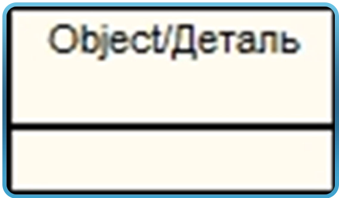
Объект ссылки в IDEF3 выражает некую идею, концепцию или данные, которые нельзя связать со стрелкой, перекрестком или работой. Они используются в модели для привлечения внимания читателя к каким-либо важным аспектам модели. При внесении объектов ссылок помимо имени следует указывать тип объекта ссылки. При декомпозиции работы IDEF0 в диаграмму IDEF3 стрелки не мигрируют на нижний уровень. Если необходимо показать на дочерней диаграмме IDEF3 те же объекты, что и на родительских диаграммах IDEF0, необходимо использовать объекты ссылки.
Глоссарий
Бизнес-процесс — логически завершенная цепочка взаимосвязанных и повторяющихся видов деятельности, в результате которых ресурсы предприятия используются для переработки объекта с целью достижения определенных измеримых результатов или создания продукции для удовлетворения потребителей. Бизнес-правила — способы реализации бизнес-функций в рамках бизнес-процесса, а также характеристики и условия выполнения бизнес-процесса. Моделирование бизнес-процессов — процесс построения модели как некоего представления оригинала, отражающего наиболее важные его черты и свойства, а также процесс исследования (анализа) функционирования модели. Модель бизнес-процесса — формализованное (графическое, табличное, текстовое, символьное) описание, отражающее реально существующую или предполагаемую деятельность предприятия. BPMN (Business Process Modeling and Notation) — система условных обозначений для описания бизнес-процессов. Не является языком описания IT-систем, предназначена для описания предметной области реального бизнеса. Пул (BPMN) — объект, описывающий какой-то один процесс на диаграмме. Может содержать «дорожки» для указания участников процессов. Шлюз (развилка) BPMN — контрольный узел в случае условного ветвления бизнес-процесса. Основные типы: шлюз исключающего «или» (альтернативные потоки) и параллельный шлюз (параллельные пути). IDEF3 — методология моделирования, использующая графическое описание информационных потоков, взаимоотношений между процессами обработки информации и объектов. Применяется для разбивки работ на отдельные этапы с учетом временной последовательности. Работа (IDEF3) — единица деятельности, изображаемая прямоугольником с именем, выраженным отглагольным существительным, и номером (идентификатором). Перекресток (Junction) IDEF3 — элемент для отображения логики взаимодействия стрелок при слиянии и разветвлении. Типы: асинхронное «И», синхронное «И», асинхронное «ИЛИ», синхронное «ИЛИ», исключающее «ИЛИ» (XOR). Объект ссылки (IDEF3) — элемент, выражающий идею, концепцию или данные, которые нельзя связать со стрелкой, перекрестком или работой. BPMS (Business Process Management System) — система управления бизнес-процессами, позволяющая непосредственно реализовывать бизнес-процессы в соответствии с построенной формальной моделью. Модель «как есть» (As-Is) — модель, описывающая существующий бизнес-процесс компании для последующего анализа и оптимизации.
Принципы построения распределенных информационных систем.
Что такое распределенная информационная система Впервые задача об исследовании основ и принципов создания и функционирования распределенных информационных систем была поставлена известным специалистом в области баз данных К. Дейтом в рамках проекта System R, что в конце 70-х — начале 80-х годов вылилось в отдельный проект создания первой распределенной системы (проект System R*). Большую роль в исследовании принципов создания и функционирования распределенных баз данных внесли также и разработчики системы Ingres. Собственно в основе распределенных АИС лежат две основные идеи: - много организационно и физически распределенных пользователей, одновременно работающих с общими данными — общей базой данных (пользователи с разными именами, в том числе располагающимися на различных вычислительных установках, с различными полномочиями и задачами); - логически и физически распределенные данные, составляющие и образующие тем не менее единое согласованное целое — общую базу данных (отдельные таблицы, записи и даже поля могут располагаться на различных вычислительных установках или входить в различные локальные базы данных).
Информационная система будет пониматься как совокупность упорядоченных информационных ресурсов, программного обеспечения, обеспечивающего доступ к этим ресурсам, и набора пользовательских интерфейсов, управляющих доступом к этим ресурсам. Распределенная информационная система — это информационная система, ресурсы которой могут находиться на физически различных связанных коммуникационными линиями (сетью) серверах, но которая сохраняет логическую целостность информации и обеспечивает единообразный доступ к ней (единые пользовательские интерфейсы) через любую, возможно единственную, точку входа. Согласно такому определению, в распределенных информационных системах (РИС) не требуется исполнение распределенных приложений, а, следовательно, класс актуальных для них задач, решаемых при помощи широко обсуждаемых сегодня технологий распределенных систем (.NET, J2EE, CORBA и др.), может быть существенно сужен.
По характеру работы с информационными ресурсами задачи, которые решаются при работе с РИС, можно разделить на пользовательские и административные. К пользовательским задачам относятся задачи поиска, извлечения и просмотра информации. Все остальные задачи, такие как пополнение информации, модификация, удаление информации, сбор статистики работы системы, управление ограничением доступа, мониторинг внутренней целостности и т.д., являются административными. В зависимости от структуры и организации РИС список административных задач может быть существенно расширен. Однако с точки зрения пользователя различные РИС отличаются только внешними интерфейсами пользовательских задач. Поэтому организация этих интерфейсов и их универсальность являются наиболее важным критерием оценки эффективности РИС.
Характеристики РИС Исходя из задач, которые должны решаться распределенной информационной системой, можно сформулировать минимальный список требований, которым она должна удовлетворять: - Работа с распределенными данными — информационная система должна допускать возможность работы с данными, расположенными на разных физических серверах, различных аппаратно-программных платформах и хранящихся в различных внутренних форматах. - Логическая группировка данных — система должна позволять обрабатывать все запросы на логических группах баз данных, полностью скрывая тем самым физическое расположение последних. - Абстрактная модель данных — информационная система строится на основе абстрактной схемы данных, на которую должны быть отображены конкретные базы данных. - Абстрактная система запросов — система должна оперировать не конкретным синтаксисом запросов, а его логической сутью на основе абстрактных атрибутов. - Метаинформация — система должна предоставлять полную и достоверную информацию о себе и о всех своих ресурсах. - Разграничение доступа — система должна быть способна предоставлять различные уровни привилегий для пользователей по доступу к информации. - Учет и контроль — система должна уметь собирать статистику по запросам пользователей и вести их бюджеты. - Открытость — система должна легко расширяться и быть основана на открытых стандартах и протоколах. - Связь с другими системами — возможность интегрировать свои ресурсы с ресурсами других информационных систем. - Легкость в общении — для пользователей система должна предоставлять различные, в том числе и простые, интерфейсы доступа к информации. Необходимым элементом системы сегодня является наличие WEB-шлюза.
Распределенные базы данных — Distributed DataBase (DDB) Распределённая система — система, для которой отношения местоположений элементов (или групп элементов) играют существенную роль с точки зрения функционирования системы, а, следовательно, и с точки зрения анализа и синтеза системы. Для распределённых систем характерно распределение функций, ресурсов между множеством элементов (узлов) и отсутствие единого управляющего центра, поэтому выход из строя одного из узлов не приводит к полной остановке всей системы. Типичной распределённой системой является Интернет. Распределенная база данных — база данных, составные части которой размещаются в различных узлах компьютерной сети в соответствии с каким-либо критерием. Распределенная/параллельная база данных — это именно база данных индивидуально хранимых на разных узлах сети. Распределенные данные представляют собой DDB, только если они связаны в соответствии с некоторым структурным формализмом (таким как реляционная модель), а для доступа к ним имеется единый высокоуровневый интерфейс.
Как основу описания взаимодействия двух сущностей рассмотрим общую модель взаимодействия клиент-сервер, в которой одна из сторон (клиент) инициирует обмен данными, посылая запрос другой стороне (серверу). Сервер обрабатывает запрос и при необходимости посылает ответ клиенту. Взаимодействие в рамках модели клиент-сервер может быть как синхронным, когда клиент ожидает завершения обработки своего запроса сервером, так и асинхронным, при котором клиент посылает серверу запрос и продолжает свое выполнение без ожидания ответа сервера. Модель клиента и сервера может использоваться как основа описания различных взаимодействий. Для данного курса важно взаимодействие составных частей программного обеспечения, образующего распределенную систему.
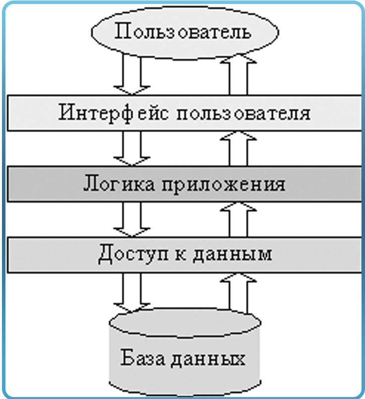
Рассмотрим некое типичное приложение, которое в соответствии с современными представлениями может быть разделено на следующие логические уровни: пользовательский интерфейс (ИП), логика приложения (ЛП) и доступ к данным (ДД), работающий с базой данных (БД). Пользователь системы взаимодействует с ней через интерфейс пользователя, база данных хранит данные, описывающие предметную область приложения, а уровень логики приложения реализует все алгоритмы, относящиеся к предметной области. Поскольку на практике разных пользователей системы обычно интересует доступ к одним и тем же данным, наиболее простым разнесением функций такой системы между несколькими компьютерами будет разделение логических уровней приложения между одной серверной частью приложения, отвечающей за доступ к данным, и находящимися на нескольких компьютерах клиентскими частями, реализующими интерфейс пользователя. Логика приложения может быть отнесена к серверу, клиентам или разделена между ними.
Архитектуру построенных по такому принципу приложений называют клиент-серверной или двухзвенной. На практике подобные системы часто не относят к классу распределенных, но формально они могут считаться простейшими представителями распределенных систем. Развитием архитектуры клиент-сервер является трехзвенная архитектура, в которой интерфейс пользователя, логика приложения и доступ к данным выделены в самостоятельные составляющие системы, которые могут работать на независимых компьютерах. Запрос пользователя в подобных системах последовательно обрабатывается клиентской частью системы, сервером логики приложения и сервером баз данных. Однако обычно под распределенной системой понимают системы с более сложной архитектурой, чем трехзвенная. Применительно к приложениям автоматизации деятельности предприятия, распределенными обычно называют системы с логикой приложения, распределенной между несколькими компонентами системы, каждая из которых может выполняться на отдельном компьютере.
Программная компонента — это единица программного обеспечения, исполняемая на одном компьютере в пределах одного процесса, и предоставляющая некоторый набор сервисов, которые используются через ее внешний интерфейс другими компонентами, как выполняющимися на этом же компьютере, так и на удаленных компьютерах. Ряд компонент пользовательского интерфейса предоставляют свой сервис конечному пользователю.
Свойства DDB Чтобы достигнуть цели своего существования — улучшения выполнения запросов пользователя — распределенная система должна удовлетворять некоторым необходимым требованиям. Можно сформулировать следующий набор требований, которым в наилучшем случае должна удовлетворять распределенная вычислительная система: - Открытость. Все протоколы взаимодействия компонент внутри распределенной системы в идеальном случае должны быть основаны на общедоступных стандартах. - Масштабируемость. Возможность добавления в распределенную систему новых компьютеров для увеличения производительности системы, что связано с понятием балансировки нагрузки (load balancing) на серверы системы. - Поддержание логической целостности данных. Запрос пользователя в распределенной системе должен либо корректно выполняться целиком, либо не выполняться вообще. - Устойчивость. Под устойчивостью понимается возможность дублирования несколькими компьютерами одних и тех же функций или же возможность автоматического распределения функций внутри системы в случае выхода из строя одного из компьютеров. - Безопасность. Каждый компонент, образующий распределенную систему, должен быть уверен, что его функции используются авторизированными на это компонентами или пользователями. - Эффективность. Минимизация накладных расходов, связанных с распределенным характером системы.
Устойчивость распределенной системы связана с понятием масштабируемости, но не эквивалентна ему. Допустим, система использует набор обрабатывающих запросы серверов и один диспетчер запросов, который распределяет запросы пользователей между серверами. Такая система может считаться достаточно хорошо масштабируемой, однако диспетчер является уязвимой точкой такой системы. С другой стороны, система с единственным сервером может быть устойчива, если существует механизм его автоматической замены в случае выхода его из строя, однако она вряд ли относится к классу хорошо масштабируемых систем. На практике достаточно часто встречаются распределенные системы, не удовлетворяющие данным требованиям: например, любая система с уникальным сервером БД, реализованным в виде единственного компьютера, имеет уникальную точку сбоя.
Основные принципы создания и функционирования распределенных баз данных К. Дейт сформулировал несколько основных принципов создания и функционирования распределенных баз данных. К их числу относятся: - прозрачность расположения данных для пользователя (для пользователя распределенная база данных должна представляться и выглядеть точно так же, как и нераспределенная); - изолированность пользователей друг от друга (пользователь должен «не чувствовать», «не видеть» работу других пользователей в тот момент, когда он изменяет, обновляет, удаляет данные); - синхронизация и согласованность (непротиворечивость) состояния данных в любой момент времени.
Из основных вытекает ряд дополнительных принципов: - локальная автономия (ни одна вычислительная машина для своего успешного функционирования не должна зависеть от любой другой машины); - отсутствие центральной установки (следствие предыдущего пункта); - независимость от местоположения (пользователю все равно, где физически находятся данные, он работает так, как будто они находятся на его локальной машине); - непрерывность функционирования (отсутствие плановых отключений системы в целом, например для подключения новой установки или обновления версии СУБД); - независимость от фрагментации данных (как от горизонтальной фрагментации, когда различные группы записей одной таблицы размещены на различных машинах или в различных локальных базах, так и от вертикальной фрагментации, когда различные поля-столбцы одной таблицы размещены на разных машинах); - независимость от дублирования данных (когда какая-либо таблица базы данных или ее часть физически может быть представлена несколькими копиями, расположенными на различных машинах, причем «прозрачно» для пользователя); - распределенная обработка запросов (оптимизация запросов должна носить распределенный характер — сначала глобальная оптимизация, а далее локальная оптимизация на каждой из задействованных машин); - распределенное управление транзакциями (в распределенной системе отдельная транзакция может требовать выполнения действий на разных машинах, транзакция считается завершенной, если она успешно завершена на всех вовлеченных машинах); - независимость от аппаратуры (желательно, чтобы система могла функционировать на машинах, включающих компьютеры разных типов); - независимость от типа операционной системы (система должна функционировать вне зависимости от возможного различия ОС на различных вычислительных машинах); - независимость от коммуникационной сети (возможность функционирования в разных коммуникационных средах); - независимость от СУБД (на разных машинах могут функционировать СУБД различного типа, на практике ограничиваемые кругом СУБД, поддерживающих SQL).
Важнейшую роль в технологии создания и функционирования распределенных баз данных играет техника «представлений» (View). Представлением называется сохраняемый в базе данных авторизованный глобальный запрос на выборку данных. Авторизованность означает возможность запуска такого запроса только конкретно поименованным в системе пользователем. Глобальность заключается в том, что выборка данных может осуществляться со всей базы данных, в том числе из данных, расположенных на других вычислительных машинах. Результатом запроса на выборку является набор данных, представляющий временную на сеанс открытого запроса таблицу, с которой в дальнейшем можно работать как с обычными реляционными таблицами данных. В результате таких глобальных авторизованных запросов для конкретного пользователя создается некая виртуальная база данных со своим перечнем таблиц, связей, т.е. со «своей» схемой и со «своими» данными.
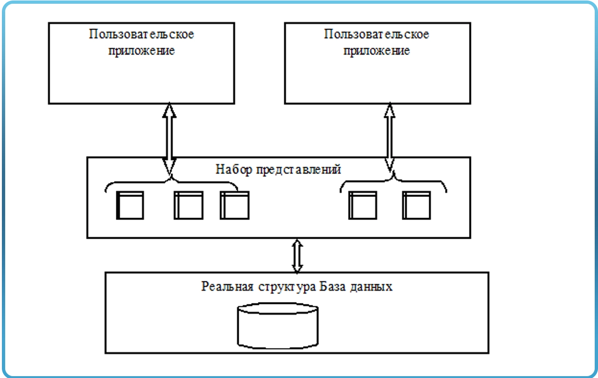
При входе пользователя в распределенную систему ядро СУБД, идентифицируя пользователя, запускает запросы его ранее определенного и хранимого в базе данных представления и формирует ему «свое» видение базы данных, воспринимаемое пользователем как обычная (локальная) база данных. Так как представление базы данных виртуально, то «настоящие» данные физически находятся там, где они находились до формирования представления. При осуществлении пользователем манипуляций с данными ядро распределенной СУБД по системному каталогу базы данных само определяет, где находятся данные, вырабатывает стратегию действий, т.е. определяет, где, на каких машинах целесообразнее производить операции, куда для этого и какие данные необходимо переместить из других установок или локальных баз данных, проверяет выполнение ограничений целостности данных. При этом большая часть таких операций прозрачна (т.е. невидима) для пользователя, и он воспринимает работу в распределенной базе данных как в обычной локальной базе.
Технологии построения распределенных систем Для разработки распределенных информационных систем сегодня используются различные технологии. Большая часть этих технологий по своей сути ориентирована не на работу с базами данных, а на сетевое взаимодействие программ и распределенные вычисления в гетерогенных средах. Даже беглый обзор используемых или обсуждаемых технологий может составить предмет отдельного увесистого тома. Поэтому ниже упомянуты лишь некоторые технологии. Системы на основе технологий «Клиент-сервер» исторически выросли из первых централизованных многопользовательских автоматизированных информационных систем, интенсивно развивавшихся в 70-х годах, и получили, вероятно, наиболее широкое распространение в сфере информационного обеспечения крупных предприятий и корпораций.
В технологиях «Клиент-сервер» отступают от одного из главных принципов создания и функционирования распределенных систем — отсутствия центральной установки. Поэтому можно выделить две основные идеи, лежащие в основе клиент-серверных технологий: - хранение общих для всех пользователей данных на одном или нескольких серверах; - много пользователей (клиентов) на различных вычислительных машинах совместно (параллельно и одновременно) обрабатывают общие данные. Иначе говоря, системы, основанные на технологиях «Клиент-сервер», распределены только в отношении пользователей, поэтому часто их не относят к «настоящим» распределенным системам, а считают отдельным, уже упоминавшимся классом многопользовательских систем.
Важное значение в технологиях «Клиент-сервер» имеют понятия сервера и клиента. Под сервером в широком смысле понимается любая система, процесс, компьютер, владеющие каким-либо вычислительным ресурсом (памятью, временем, производительностью процессора и т.д.). Клиентом называется также любая система, процесс, компьютер, пользователь, запрашивающие у сервера какой-либо ресурс, пользующиеся каким-либо ресурсом или обслуживаемые сервером иным способом.
В своем развитии системы «Клиент-сервер» прошли несколько этапов, в ходе которых сформировались различные модели систем «Клиент-сервер». Их реализация и, следовательно, правильное понимание основаны на разделении структуры СУБД на три компонента: 1. компонент представления, реализующий функции ввода и отображения данных, называемый иногда еще просто как интерфейс пользователя; 2. прикладной компонент, включающий набор запросов событий, правил, процедур и других вычислительных функций, реализующий предназначение автоматизированной информационной системы в конкретной предметной области; 3. компонент доступа к данным, реализующий функции хранения, извлечения, физического обновления и изменения данных (машина данных). Таким образом, распределенная система представляет собой объединенные в единую систему автономные компьютеры, работающие совместно.
Основные модели представления данных: реляционная, древовидная, сетевая В теории БД известны три классические модели данных: иерархическая, сетевая и реляционная (табличная).
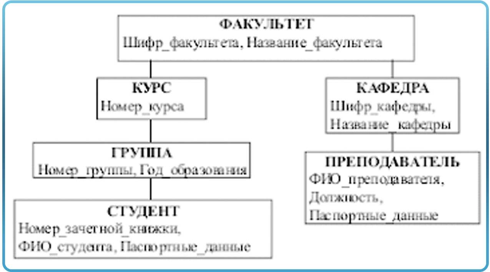
Иерархическая модель данных — это модель данных, где используется представление базы данных в виде древовидной (иерархической) структуры, состоящей из объектов (данных) различных уровней. Между объектами существуют связи, каждый объект может включать в себя несколько объектов более низкого уровня. Такие объекты находятся в отношении предка (объект более близкий к корню) к потомку (объект более низкого уровня), при этом возможна ситуация, когда объект-предок не имеет потомков или имеет их несколько, тогда как у объекта-потомка обязательно только один предок. Объекты, имеющие общего предка, называются близнецами (в программировании применительно к структуре данных дерево устоялось название братья).
Основными информационными единицами в иерархической модели данных являются сегмент и поле. Поле данных определяется как наименьшая неделимая единица данных, доступная пользователю. Для сегмента определяются тип сегмента и экземпляр сегмента. Экземпляр сегмента образуется из конкретных значений полей данных. Тип сегмента — это поименованная совокупность входящих в него типов полей данных. Иерархическая модель представляет собой связный неориентированный граф древовидной структуры, объединяющий сегменты. Иерархическая БД состоит из упорядоченного набора деревьев.
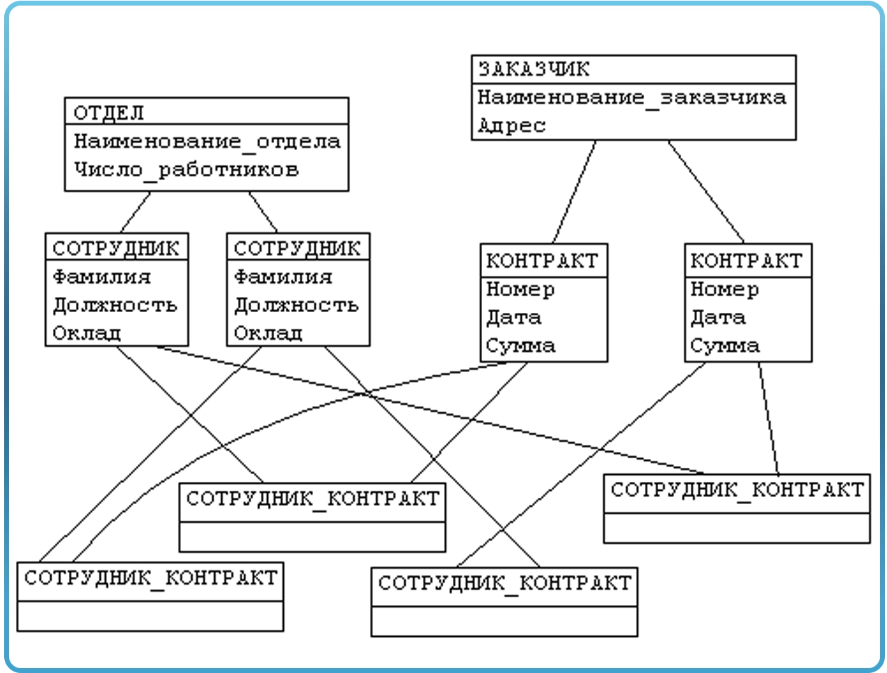
Сетевая модель данных — логическая модель данных, являющаяся расширением иерархического подхода, строгая математическая теория, описывающая структурный аспект, аспект целостности и аспект обработки данных в сетевых базах данных. Разница между иерархической моделью данных и сетевой состоит в том, что в иерархических структурах запись-потомок должна иметь в точности одного предка, а в сетевой структуре данных у потомка может иметься любое число предков. Сетевая БД состоит из набора экземпляров определенного типа записи и набора экземпляров определенного типа связей между этими записями.
Реляционная модель данных (РМД) — логическая модель данных, прикладная теория построения баз данных, которая является приложением к задачам обработки данных таких разделов математики, как теория множеств и логика первого порядка. На реляционной модели данных строятся реляционные базы данных. Реляционная база данных — это набор данных с предопределенными связями между ними. Эти данные организованы в виде набора таблиц, состоящих из столбцов и строк. В таблицах хранится информация об объектах, представленных в базе данных. В каждом столбце таблицы хранится определенный тип данных, в каждой ячейке — значение атрибута. Каждая строка таблицы представляет собой набор связанных значений, относящихся к одному объекту или сущности. Каждая строка в таблице может быть помечена уникальным идентификатором, называемым первичным ключом, а строки из нескольких таблиц могут быть связаны с помощью внешних ключей. К этим данным можно получить доступ многими способами, и при этом реорганизовывать таблицы БД не требуется.
Глоссарий
Распределенная информационная система (РИС) — информационная система, ресурсы которой могут находиться на физически различных связанных коммуникационными линиями (сетью) серверах, но которая сохраняет логическую целостность информации и обеспечивает единообразный доступ к ней через любую точку входа. Распределенная база данных (DDB) — база данных, составные части которой размещаются в различных узлах компьютерной сети в соответствии с каким-либо критерием. Распределенные данные представляют собой DDB, только если они связаны в соответствии с некоторым структурным формализмом (например, реляционной моделью), а для доступа к ним имеется единый высокоуровневый интерфейс. Модель клиент-сервер — модель взаимодействия, в которой одна из сторон (клиент) инициирует обмен данными, посылая запрос другой стороне (серверу). Сервер обрабатывает запрос и при необходимости посылает ответ клиенту. Взаимодействие может быть синхронным или асинхронным. Двухзвенная архитектура — архитектура приложения, при которой разделение логических уровней происходит между серверной частью (доступ к данным) и клиентскими частями (интерфейс пользователя). Логика приложения может быть отнесена к серверу, клиентам или разделена между ними. Трехзвенная архитектура — архитектура, в которой интерфейс пользователя, логика приложения и доступ к данным выделены в самостоятельные составляющие системы, которые могут работать на независимых компьютерах. Программная компонента — единица программного обеспечения, исполняемая на одном компьютере в пределах одного процесса и предоставляющая набор сервисов через внешний интерфейс другим компонентам. Представление (View) — сохраняемый в базе данных авторизованный глобальный запрос на выборку данных, формирующий для конкретного пользователя виртуальную базу данных. Иерархическая модель данных — модель данных с представлением базы данных в виде древовидной (иерархической) структуры, где каждый объект-потомок имеет только одного предка. Сетевая модель данных — расширение иерархического подхода, в котором у потомка может иметься любое число предков. Реляционная модель данных (РМД) — логическая модель данных, строящаяся на теории множеств и логике первого порядка. Данные организованы в виде набора таблиц (столбцы и строки), где каждая строка помечена первичным ключом, а строки из разных таблиц связаны внешними ключами.
Проектирование структуры базы данных
Моделирование данных — это сложный процесс создания логического представления структуры базы данных. Правильно сконструированная модель данных должна быть адекватна предметной области, т.е. соответствовать всем пользовательским представлениям данных. Если база данных будет неверно отражать пользовательское представление данных, то пользователи найдут ее приложения неудобными, неполными и непригодными для работы. Поэтому моделирование данных является первым и основным этапом в разработке системы баз данных, основой для всей последующей работы при разработке баз данных и их приложений. Основным классификатором подходов моделирования является способ автоматизации: ручной, неавтоматизированный способ относят к структурному (процедурному) подходу; использование средств автоматизации проектирования предполагает автоматизированный подход моделирования – с применением САПР базы данных, с применением CASE-технологий (проектирование с помощью компьютера) на протяжении всего жизненного цикла базы данных, применение объектно-ориентированных языков программирования.
Модель «сущность—связь» Модель «сущность—связь» (entity-relationship model) введена Питером Ченом (Peter Chen) в 1976 году. Чен заложил основу модели, которая с тех пор расширялась и модифицировалась самим Ченом и многими другими учеными. Модель «сущность—связь» вошла в состав множества CASE-инструментов, которые также внесли свой вклад в ее эволюцию. Модель «сущность—связь» (методология моделирования IDEF1X), являясь расширением стандарта IDEF1, предназначена для описания данных (информации). В ее основе лежит язык семантического моделирования, основанный на концепции "сущность — связь", позволяющей определять данные и связи между ними. Методология используется для создания информационной модели предметной области с помощью идентификации ее сущностей и связей между ними. Чаще всего такая методология используется для описания данных в целях последующей автоматизации их обработки с помощью систем управления базами данных. Таким образом, можно говорить о том, что модели данных в нотации IDEF1X используются для создания баз данных.
Как правило, в зависимости от глубины описания, выделяют три класса логических моделей данных: - диаграмма "Сущность — связь" (Entity Relationship Diagram — ERD) — используется для описания данных на верхнем уровне в целях визуализации данных для руководителей и экспертов, не обладающих специальными знаниями в области моделирования. Она показывает основные сущности и связи между ними. - модель данных, основанная на ключах (Key Based Model — KBM) — предназначена для более детального описания данных. В ней показываются ключевые атрибуты, по которым идентифицируются сущности и связываются друг с другом. - полная атрибутивная модель (Fully Attributed Model — FAM) — дает детальное представление структуры данных. Она позволяет представить данные в третьей нормальной форме и включает все сущности, их атрибуты и связи.
Основными элементами модели IDEF1X являются: сущности, атрибуты и отношения. Сущность — это множество реальных или абстрактных объектов, обладающих общими характеристиками, например, персонал, явления, предметы. Каждый такой объект может быть представлен только одной уникальной сущностью. Сущность (Entity) — реальный либо воображаемый объект, имеющий существенное значение для рассматриваемой предметной области, информация о котором подлежит хранению. Сущность имеет уникальное имя. Как правило, ее название обозначается существительным в единственном числе, изображается в виде прямоугольника. Основной (неформальный) способ идентификации сущностей – это поиск абстракций, описывающих физические или материальные объекты, процессы и события, роли людей, организации и другие понятия. Единственным формальным способом идентификации сущностей является анализ текстовых описаний предметной области, выделение из описаний имен существительных и выбор их в качестве «кандидатов» на роль абстракций.
Сущность имеет один или несколько экземпляров, например, если сущность — сотрудник, то ее экземплярами являются конкретные сотрудники, т.е. "Иванов Иван Иванович с табельным номером 343". Все экземпляры сущности уникальны, т.е. имеют различные характеристики, например, все сотрудники имеют свой уникальный номер трудового договора или табельный номер либо номер личного дела. Таким образом, сущность имеет один или несколько атрибутов, которые ей принадлежат или наследуются в результате отношений с другими сущностями. Сущности бывают зависимые, которые представляют типы данных, зависящие от других данных. Такие сущности всегда имеют отношения с другими сущностями. Различают несколько типов зависимых связей: характеристическая (зависимая дочерняя сущность, которая связана только с одной родительской и по смыслу хранит информацию о характеристиках родительской сущности); ассоциативная (сущность, связанная с несколькими родительскими сущностями); категориальная (дочерняя сущность в иерархии наследования); иерархия наследования (тип объединения сущностей, разделяющих общие характеристики). Сущности бывают независимые, которые представляют типы данных, не зависящие от других данных, и существуют в информационной системе самостоятельно. Поэтому они могут иметь или не иметь отношения с другими сущностями.
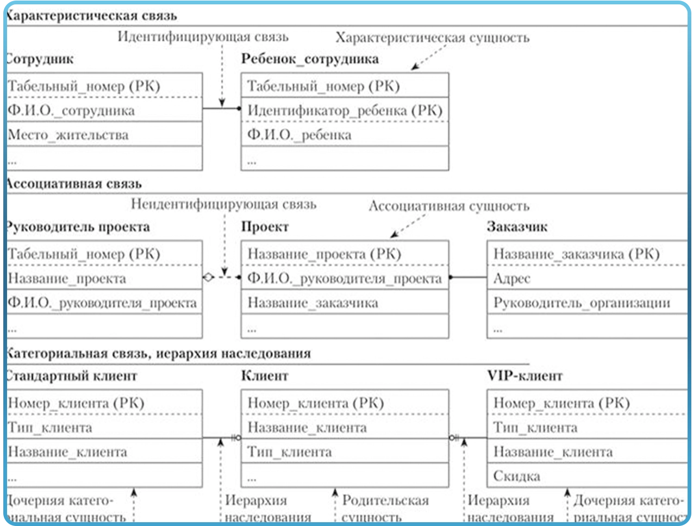
Экземпляр сущности – это конкретный представитель данной сущности. Экземпляры сущностей должны быть различимы, т.е. сущности должны иметь некоторые свойства, уникальные для каждого экземпляра этой сущности. Каждый экземпляр сущности должен однозначно идентифицироваться и отличаться от всех других экземпляров данного типа сущности. Каждая сущность должна обладать некоторыми свойствами: - каждая сущность должна иметь уникальное имя, и к одному и тому же имени должна всегда применяться одна и та же интерпретация; - сущность обладает одним или несколькими атрибутами, которые либо принадлежат сущности, либо наследуются через связь; - сущность обладает одним или несколькими атрибутами, которые однозначно идентифицируют каждый экземпляр сущности; - каждая сущность может обладать любым количеством связей с другими сущностями модели.
Атрибут — характеристика сущности. Каждый атрибут имеет один или несколько экземпляров атрибутов, т.е. конкретных значений. Таким образом, каждый конкретный экземпляр сущности будет иметь конкретный экземпляр атрибутов. Атрибут — любая характеристика сущности, значимая для рассматриваемой предметной области и предназначенная для квалификации, идентификации, классификации, количественной характеристики или выражения состояния сущности. Атрибут представляет тип характеристик или свойств, ассоциированных со множеством реальных или абстрактных объектов (людей, мест, событий, состояний, идей, пар предметов и т.д.). Экземпляр атрибута — это определенная характеристика отдельного элемента множества. Экземпляр атрибута определяется типом характеристики и ее значением, называемым значением атрибута. В ER-модели атрибуты ассоциируются с конкретными сущностями. Таким образом, экземпляр сущности должен обладать единственным определенным значением для ассоциированного атрибута.
Атрибут может быть либо обязательным, либо необязательным. Обязательность означает, что атрибут не может принимать неопределенных значений (null values). Атрибут может быть либо описательным (т.е. обычным дескриптором сущности), либо входить в состав уникального идентификатора (первичного ключа). Виды атрибутов: - простой — состоит из одного элемента данных; - составной — состоит из нескольких элементов данных; - однозначный — содержит одно значение для одной сущности; - многозначный — содержит несколько значений для одной сущности; - необязательный — может иметь пустое (неопределенное) значение; - производный — представляет значение, производное от значения, связанного с ним атрибута. Атрибуты бывают собственные — уникальные в рамках модели и наследуемые — передающиеся от сущности-родителя при определении идентифицирующей связи.
Поскольку все сущности неповторимы, то они должны иметь свой уникальный идентификатор. В качестве такого идентификатора выступают один или совокупность нескольких атрибутов, которые называются первичным ключом. Атрибут, идентифицирующий экземпляр сущности, называется простым ключом. Идентификатор, который состоит из нескольких атрибутов, называется составным ключом. Первичный ключ, который наследуется от родительской сущности, называется внешним ключом. Также есть ключи, по которым связываются сущности друг с другом. Он называется внешним ключом.
Отношения — это связи между двумя и более сущностями. Связь — это ассоциация между сущностями, при которой каждый экземпляр одной сущности ассоциирован с произвольным (в том числе нулевым) количеством экземпляров второй сущности, и наоборот. Сущность, обладающая некоторыми атрибутами, является типом информации, которая хранится в базе данных. Связь этих типов информации друг с другом показывается в виде отношений между сущностями. В рамках методологии IDEF1X существуют следующие типы отношений: - идентифицирующие отношения (сущность однозначно определяет другую сущность); - неидентифицирующие отношения; - отношения "многие ко многим"; - отношения категоризации.
В идентифицирующих отношениях дочерняя сущность всегда является зависимой сущностью от идентифицирующей. Следовательно, сущность "А" всегда определяет сущность "Б", первичный ключ сущности "А" наследуется в качестве первичного ключа сущностью "Б", где у сущности "Б" он становится внешним ключом. Неидентифицирующие отношения используются в случаях, когда одна сущность связана с другой, но однозначно ее не определяет. При данной связи первичный ключ одной сущности наследуется другой, но уже является не ключевым атрибутом. Связь типа "многие ко многим" позволяет показать, что любой экземпляр сущности "А" может иметь связь с несколькими экземплярами другой сущности "В", и наоборот. Данная связь отражается линией, на концах которой есть шарики. Отношения категоризации подразумевают связь, при которой каждый экземпляр одной сущности связан с одним экземпляром категориальной сущности. А атрибуты первичного ключа категориальной сущности должны совпадать с атрибутами первичного ключа общей сущности.
Для обозначения количества экземпляров родительской сущности к количеству экземпляров дочерней используется такая характеристика связей, как мощность. В данной методологии принято различать четыре вида мощности: 1) одному экземпляру родительской сущности соответствует 0, 1 или много экземпляров дочерней сущности, на диаграмме связь не помечается каким-либо символом; 2) одному экземпляру родительской сущности соответствует 1 или много экземпляров дочерней сущности, на диаграмме связь помечается символом "Р"; 3) одному экземпляру родительской сущности соответствует 0 или 1 экземпляр дочерней сущности, на диаграмме связь помечается символом "Z"; 4) одному экземпляру родительской сущности соответствует заранее заданное количество экземпляров дочерней сущности, на диаграмме связь помечается цифрой, соответствующей количеству экземпляров дочерней сущности.
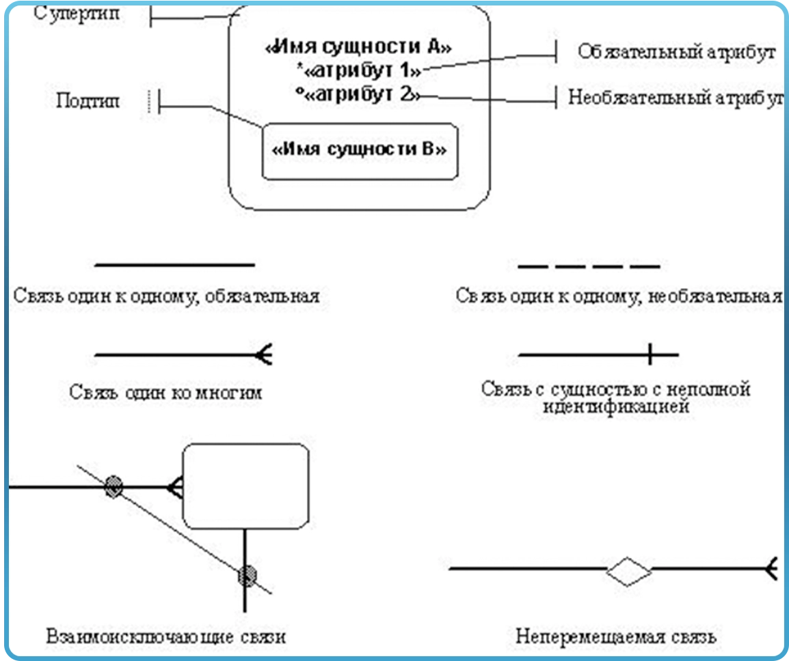
Нотация Баркера Дальнейшее развитие диаграммы «сущность-связь» получили в работах Баркера, предложившего оригинальную нотацию, которая позволила интегрировать средства описания моделей Чена. В нотации Баркера используется только один тип диаграмм: собственно ERD-диаграммы. Сущность на ERD-диаграмме представляется прямоугольником любого размера, содержащим внутри себя имя сущности, список имен атрибутов (возможно, неполный) и указатели ключевых атрибутов (знак «#» перед именем атрибута). Понятия категории и общей сущности Чена заменяются Баркером на эквивалентные понятия подтипа и супертипа соответственно. Атрибуты сущностей могут быть обязательными и необязательными. Кроме того, атрибуты могут быть описательными (дескрипторами сущности) или входить в состав первичного ключа (уникального идентификатора сущности). Сущность, как правило, может быть полностью идентифицирована своим первичным ключом. Однако могут быть случаи, когда в идентификации данной сущности участвуют также атрибуты другой сущности-родителя. Кроме первичных ключей могут использоваться альтернативные (возможные) ключи.
Все связи являются бинарными и представляются линиями, соединяющими родительскую сущность с одной или несколькими сущностями-потомками. Для связей должно быть определено имя (выражаемое грамматическим оборотом глагола), степень множественности (один или много объектов участвуют в связи) и степень обязательности (т.е. обязательная или необязательная связь между сущностями). Для множественной связи линия присоединяется к прямоугольнику сущности в трех точках, а для одиночной связи – в одной точке. При обязательной связи рисуется непрерывная линия до середины связи, при необязательной – пунктирная линия. Могут иметь место ситуации, при которых связи данной сущности рассматриваются как взаимоисключающие. Кроме того, связь может быть рекурсивной, а также неперемещаемой, если экземпляр сущности не может быть перенесен из одной связи в другую.
Основные правила построения модели Можно выделить основные правила построения отношений между сущностями, а именно: - сущность может быть связана с любым количеством других сущностей; - отношения между сущностями типа "родительская сущность — дочерняя сущность" имеют следующие ограничения: один экземпляр дочерней сущности может быть связан только с одним экземпляром родительской сущности; экземпляр родительской сущности может быть связан с несколькими экземплярами дочерней сущности. Диаграмму IDEF1X можно построить, если в качестве родительской взять модель процесса в нотации IDEF0. Это позволяет рассмотреть процесс с точки зрения данных, которые используются, обрабатываются и создаются в рамках процесса, и их взаимодействия между собой.
Для построения IDEF1X-диаграммы в данном случае нужно произвести некоторую конвертацию сведений, представленных на диаграмме IDEF0, а именно: - все входящие и исходящие ресурсы, а также ресурсы управления и механизмы, описанные в диаграмме IDEF0, становятся сущностями в модели IDEF1X; - все функциональные блоки в IDEF0 становятся отношениями (связями) в модели IDEF1X. Однако атрибуты сущностей определяются на основании дополнительного анализа реализации описываемой деятельности, поскольку стандарт IDEF0 не предполагает такого детального описания бизнес-процессов. Стоит также учитывать, что если сущностей в модели больше 20-25 штук, то для каждого функционального блока лучше строить отдельную модель IDEF1X, иначе схема будет слишком перегружена для восприятия читающего.
Глоссарий
Моделирование данных — процесс создания логического представления структуры базы данных, адекватного предметной области. Является первым и основным этапом в разработке системы баз данных. Модель «сущность—связь» (ER-модель) — модель, введенная Питером Ченом в 1976 году, предназначенная для описания данных и связей между ними. Лежит в основе методологии IDEF1X. Сущность (Entity) — множество реальных или абстрактных объектов, обладающих общими характеристиками, информация о которых подлежит хранению. Обозначается существительным в единственном числе, изображается в виде прямоугольника. Экземпляр сущности — конкретный представитель данной сущности (например, «Иванов Иван Иванович с табельным номером 343»). Все экземпляры сущности уникальны. Атрибут — характеристика сущности, значимая для предметной области. Виды атрибутов: простой, составной, однозначный, многозначный, необязательный, производный, собственный, наследуемый. Первичный ключ — один или совокупность нескольких атрибутов, уникально идентифицирующих каждый экземпляр сущности. Простой ключ состоит из одного атрибута, составной — из нескольких. Внешний ключ — первичный ключ, наследуемый от родительской сущности. Используется для связывания сущностей друг с другом. Отношение (связь) — ассоциация между двумя и более сущностями. Типы отношений в IDEF1X: идентифицирующие, неидентифицирующие, «многие ко многим», категоризации. Мощность связи — характеристика, обозначающая количество экземпляров родительской сущности по отношению к количеству экземпляров дочерней. Виды: 0,1 или много (без символа); 1 или много (символ «Р»); 0 или 1 (символ «Z»); заданное число (цифра). Нотация Баркера — развитие ER-диаграмм, использующее прямоугольники для сущностей со списком атрибутов, где ключевые атрибуты отмечаются знаком «#». Понятия категории и общей сущности заменены на подтип и супертип. Классы логических моделей данных — ERD (диаграмма «сущность-связь» для верхнего уровня); KBM (модель на основе ключей); FAM (полная атрибутивная модель, третья нормальная форма).
Моделирование потоков данных
Методология DFD является одной из методологий функционального моделирования предметной области, поэтому она имеет много общего с методологией IDEF0. DFD-методология выделяет функции (действия, события, работы) системы. Функции соединяются между собой с помощью потоков данных (объектов). Функции на диаграммах представляются функциональными блоками, потоки данных – дугами. Аналогично IDEF0-методологии DFD-модель должна иметь единственные цель, точку зрения, субъект и точно определенные границы. Однако если в IDEF0 дуги имеют различные типы и определяют отношения между блоками, то в DFD дуги отражают реальное перемещение объектов от одной функции к другой. Помимо блоков, представляющих собой функции, на DFD-диаграммах используются два типа блоков – хранилища данных и внешние сущности. Данные блоки отражают взаимодействие с частями предметной области, выходящими за границы моделирования.
Синтаксис DFD-диаграмм Диаграммы являются основными рабочими элементами DFD-модели. Диаграммы отражают перемещение данных, их обработку и хранение. Каждая DFD-диаграмма содержит функциональные блоки и дуги (линии со стрелками). DFD-диаграмма может содержать хранилища данных и внешние сущности.
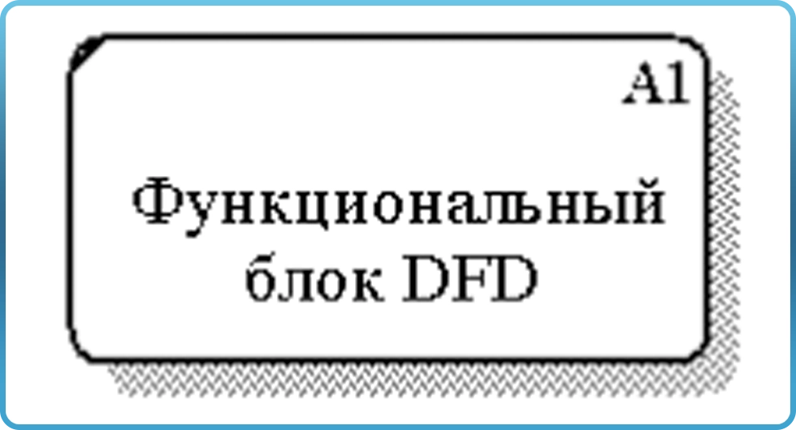
Функциональный блок отражает некоторую функцию моделируемой системы, преобразующую некоторые входные данные (сырье, материалы, информацию и т.п.) в выходные результаты. Функциональный блок изображается прямоугольником с закругленными углами. Все стороны функционального блока в отличие от IDEF0 равнозначны. Функциональные блоки на диаграмме нумеруются. Номер функционального блока отмечается в его правом верхнем углу с возможным использованием префикса А (Activity – работа) перед ним. Как и в IDEF0-методологии, название функционального блока основывается на использовании отглагольного существительного, обозначающего действие (вычисление того-то, определение того-то, обработка того-то и т.д.) или на использовании глагола в неопределенной форме (вычислить то-то, определить то-то, обработать то-то).
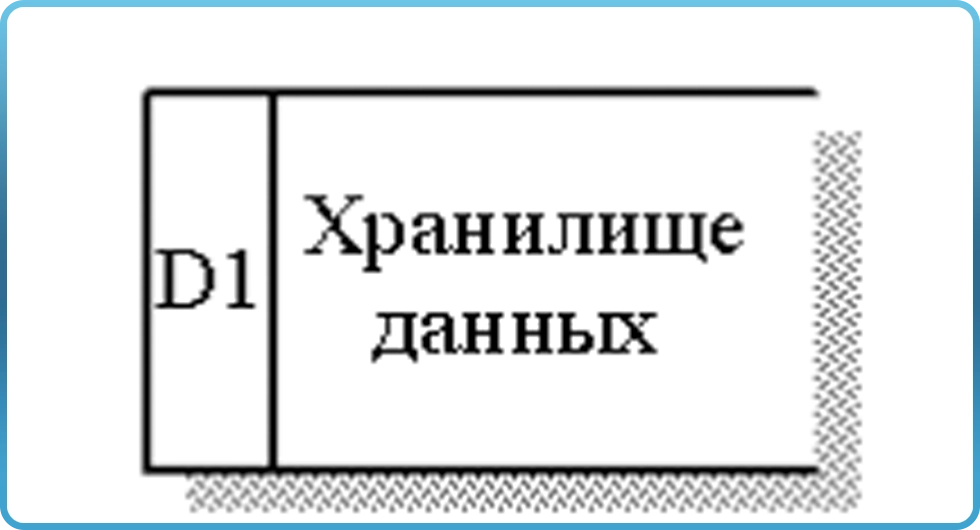
Хранилище данных отражает временное хранение промежуточных результатов обработки. Название хранилища базируется на использовании существительного. Хранилища данных на диаграмме нумеруются. Номер хранилища данных записывается слева с возможным префиксом D (Data store) перед ним.
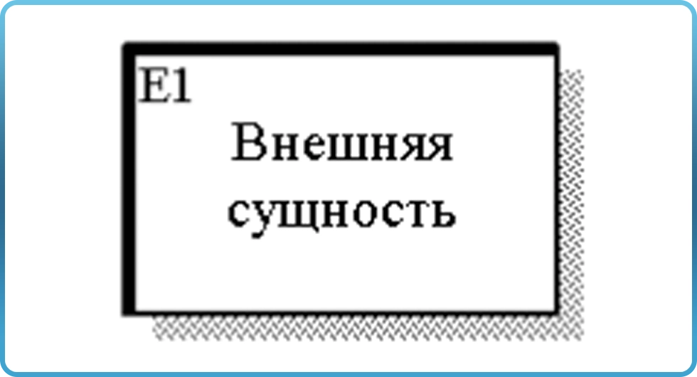
Внешние сущности являются источниками данных для входов модели и приемниками данных для ее выходов. Внешняя сущность может быть одновременно источником и приемником данных. Внешние сущности изображаются в виде прямоугольников и размещаются, как правило, по краям диаграмм. Название внешней сущности базируется на использовании существительного. Номер внешней сущности записывается в левом верхнем углу с возможным префиксом E (External) перед ним. Одна и та же внешняя сущность (с одним и тем же номером) может быть размещена в нескольких местах диаграммы. Это позволяет в ряде случаев существенно снизить загроможденность диаграмм длинными дугами.
Дуги обозначают передвижение данных в моделируемой системе. С учетом равнозначности сторон блоков диаграммы дуги могут начинаться и заканчиваться на любой их стороне. В общем случае дуга представляет множество объектов (планы, машины, информация и т.п.). Основу названия дуги на DFD-диаграммах составляют существительные. Названия дуг называются метками. Дуги на DFD-диаграмме изображаются линиями со стрелками. На DFD-диаграммах могут использоваться следующие типы дуг: - однонаправленные сплошные – отражают направление потоков объектов (данных); - двунаправленные сплошные – обозначают обмен данными между блоками; - однонаправленные штриховые – обозначают управляющие потоки между блоками. Как и в IDEF0-методологии, дуги могут разветвляться и соединяться. Синтаксис и семантика разветвления и слияния дуг соответствуют описанным для методологии IDEF0.
Синтаксис DFD-моделей По аналогии с IDEF0-моделью DFD-модель представляет собой иерархически организованную совокупность диаграмм. Каждый из функциональных блоков диаграммы может быть декомпозирован на другой диаграмме. Функциональный блок и касающиеся его дуги определяют границу диаграммы, представляющей декомпозицию этого блока. Эта диаграмма называется диаграммой-потомком. Декомпозируемый блок называется родительским блоком, а содержащая его диаграмма – родительской диаграммой. Название диаграммы-потомка совпадает с функцией родительского блока. Один функциональный блок и несколько дуг на самом верхнем уровне модели используются для определения границы всей системы. Этот блок описывает общую функцию, выполняемую системой. Диаграмма, определяющая границу системы и состоящая из одного функционального блока, его дуг и внешних сущностей, называется контекстной диаграммой DFD-модели. Все, что лежит внутри функционального блока, является частью описываемой системы. Внешние сущности определяют среду системы, то есть внешние источники и приемники объектов (данных) системы.
Общая функция DFD-модели записывается на контекстной диаграмме в виде названия функционального блока и совпадает с именем данной диаграммы. С контекстной диаграммой связывается цель модели и точка зрения. Как и в IDEF0-методологии, дуги в DFD-моделях могут «входить в тоннель» между диаграммами. Синтаксис и семантика тоннелирования дуг соответствуют описанному для методологии IDEF0. Разработанная DFD-модель со всеми уровнями структурной декомпозиции может быть представлена в виде диаграммы дерева узлов. На данном виде диаграмм представляется иерархия функций в модели без указания потоков данных между ними. Формат дерева узлов может быть различным. DFD-моделирование поддерживается рядом CASE-средств, например, CASE-средством AllFusion Process Modeler (BPwin). Процесс функционального DFD-моделирования в среде BPwin описан в литературе.
Глоссарий
DFD (Data Flow Diagrams) — методология функционального моделирования предметной области, выделяющая функции системы и соединяющая их с помощью потоков данных (объектов). Аналогична IDEF0, но дуги отражают реальное перемещение объектов. Функциональный блок DFD — элемент диаграммы, отражающий функцию моделируемой системы, преобразующую входные данные в выходные результаты. Изображается прямоугольником с закругленными углами. Все стороны равнозначны. Хранилище данных (Data store) — элемент DFD-диаграммы, отражающий временное хранение промежуточных результатов обработки. Обозначается символом с номером и префиксом D. Внешняя сущность (External entity) — элемент DFD-диаграммы, являющийся источником данных для входов модели и приемником данных для ее выходов. Может быть одновременно источником и приемником. Обозначается прямоугольником с номером и префиксом E. Дуга (поток данных) — линия со стрелкой, обозначающая передвижение данных в моделируемой системе. Типы дуг: однонаправленные сплошные (потоки данных), двунаправленные сплошные (обмен данными), однонаправленные штриховые (управляющие потоки). Контекстная диаграмма DFD — диаграмма верхнего уровня, определяющая границу системы. Состоит из одного функционального блока, его дуг и внешних сущностей. Внешние сущности определяют среду системы. Диаграмма-потомок (дочерняя диаграмма) — диаграмма, полученная в результате декомпозиции функционального блока. Название диаграммы-потомка совпадает с функцией родительского блока. Диаграмма дерева узлов — представление DFD-модели, показывающее иерархию функций без указания потоков данных между ними.
Методологии объектно-ориентированного подхода к разработке программного обеспечения
Объектная декомпозиция Декомпозиция — это метод решения сложных задач путём разбиения их на более простые, независимые подзадачи. Объектная декомпозиция — представление системы в виде совокупности взаимодействующих объектов, каждый из которых обладает: - состоянием (данные, атрибуты); - поведением (методы, операции); - идентичностью (уникальность).
Преимущества объектной декомпозиции: ✅ Близость к предметной области (легче понимать); ✅ Повторное использование кода; ✅ Упрощение сопровождения и модификации; ✅ Лучшая масштабируемость системы.
Сложная система с точки зрения объектного подхода Признаки сложной системы: - большое количество компонентов; - много связей и взаимодействий; - иерархическая структура; - динамическое поведение; - эмерджентность (свойства целого не равны сумме свойств частей).
Основные положения объектного подхода Четыре столпа ООП: 🔹 1. Абстракция — выделение существенных характеристик объекта, определяющих его роль в системе. Пример: Для объекта «Студент» в системе учёбы важны: ФИО, группа, средний балл. Не важны: цвет волос, хобби. 🔹 2. Инкапсуляция — объединение данных и методов в одной единице (классе) + сокрытие внутренней реализации. 🔹 3. Наследование — возможность создания нового класса на основе существующего с сохранением его свойств и поведения. Преимущества: повторное использование кода, расширение функциональности. 🔹 4. Полиморфизм — способность объектов с одинаковым интерфейсом выполнять разные действия.
Основные этапы создания программы с использованием объектного подхода Этап 1: Объектно-ориентированный анализ (ООА) Цель: понять предметную область и выделить ключевые объекты. Что делаем: - изучаем требования заказчика; - выявляем сущности предметной области; - определяем связи между объектами; - строим модель использования (Use Case Diagram). Результат: спецификация требований + концептуальная модель (диаграммы классов «на бумаге»).
Этап 2: Объектно-ориентированное проектирование (ООП / OOD) Цель: разработать архитектуру системы и детализировать объекты. Что делаем: - уточняем атрибуты и методы классов; - проектируем интерфейсы взаимодействия; - выбираем паттерны проектирования при необходимости; - строим диаграммы: классов, последовательностей, состояний. Результат: технический проект системы, готовый к реализации.
Этап 3: Объектно-ориентированное программирование (ООП / OOP) Цель: реализовать проект в коде. Что делаем: - пишем классы на выбранном языке (Python, Java, C++ и др.); - реализуем инкапсуляцию, наследование, полиморфизм; - применяем принципы чистого кода и рефакторинг; - пишем модульные тесты. Результат: работоспособная программа.
Глоссарий
Декомпозиция — метод решения сложных задач путём разбиения их на более простые, независимые подзадачи. Объектная декомпозиция — представление системы в виде совокупности взаимодействующих объектов, каждый из которых обладает состоянием (данные, атрибуты), поведением (методы, операции) и идентичностью (уникальность). Абстракция — выделение существенных характеристик объекта, определяющих его роль в системе. Один из четырех столпов ООП. Инкапсуляция — объединение данных и методов в одной единице (классе) + сокрытие внутренней реализации. Один из четырех столпов ООП. Наследование — возможность создания нового класса на основе существующего с сохранением его свойств и поведения. Обеспечивает повторное использование кода и расширение функциональности. Один из четырех столпов ООП. Полиморфизм — способность объектов с одинаковым интерфейсом выполнять разные действия. Один из четырех столпов ООП. Объектно-ориентированный анализ (ООА) — этап создания программы, целью которого является понимание предметной области и выделение ключевых объектов. Результат: спецификация требований и концептуальная модель. Объектно-ориентированное проектирование (OOD) — этап разработки архитектуры системы и детализации объектов. Результат: технический проект системы. Объектно-ориентированное программирование (OOP) — этап реализации проекта в коде (написание классов, реализация инкапсуляции, наследования, полиморфизма). Эмерджентность — свойство сложной системы, при котором свойства целого не равны сумме свойств частей.
Составляющие объектного подхода
Принципы ООП Концептуальной основой объектно-ориентированного подхода является объектная модель. Основными принципами ее построения являются: - абстрагирование (abstraction); - инкапсуляция (encapsulation); - модульность (modularity); - иерархия (hierarchy). Абстрагирование — это выделение наиболее важных, существенных характеристик некоторого объекта, которые отличают его от всех других видов объектов и, таким образом, четко определяют его концептуальные границы с точки зрения дальнейшего рассмотрения и анализа, и игнорирование менее важных или незначительных деталей. Абстрагирование позволяет управлять сложностью системы, концентрируясь на существенных свойствах объекта. Абстрагирование концентрирует внимание на внешних особенностях объекта и позволяет отделить самые существенные особенности его поведения от деталей их реализации. Выбор правильного набора абстракций для заданной предметной области представляет собой главную задачу объектно-ориентированного проектирования. Абстракция зависит от предметной области и точки зрения — то, что важно в одном контексте, может быть не важно в другом. Объекты и классы — основные абстракции предметной области.
Инкапсуляция — физическая локализация свойств и поведения в рамках единственной абстракции (рассматриваемой как «черный ящик»), скрывающая их реализацию за общедоступным интерфейсом. Инкапсуляция — это процесс отделения друг от друга отдельных элементов объекта, определяющих его устройство и поведение. Инкапсуляция служит для того, чтобы изолировать интерфейс объекта, отражающий его внешнее поведение, от внутренней реализации объекта. Объектный подход предполагает, что собственные ресурсы, которыми могут манипулировать только операции самого объекта, скрыты от внешней среды. Абстрагирование и инкапсуляция являются взаимодополняющими: абстрагирование фокусирует внимание на внешних особенностях объекта, а инкапсуляция (или иначе ограничение доступа) не позволяет объектам-пользователям различать внутреннее устройство объекта.
По-другому инкапсуляцию можно описать, сказав, что приложение разделяется на небольшие фрагменты связанной функциональности. Допустим, в банковской системе имеется информация, касающаяся банковского счета, такая как номер счета, баланс, имя и адрес его владельца, тип счета, начисляемые на него проценты и дата открытия. Со счетом также связаны определенные действия: открыть, закрыть его, положить или снять некоторую сумму денег, а также изменить тип, владельца или адрес. Вся эта информация и действия (поведение) совместно инкапсулируются в объект «счет». В результате все изменения банковской системы, связанные со счетами, могут быть реализованы в одном только объекте «счет». Еще одним преимуществом инкапсуляции является ограничение последствий изменений, вносимых в систему. Инкапсуляция подобна понятию сокрытия информации (information hiding). Это возможность скрывать многочисленные детали объекта от внешнего мира. Внешний мир объекта — это все, что находится вне его, включая остальную часть системы. Сокрытие информации предоставляет то же преимущество, что и инкапсуляция, — гибкость.
Модульность — это свойство системы, связанное с возможностью ее декомпозиции на ряд внутренне сильно сцепленных, но слабо связанных между собой подсистем (модулей). Модульность снижает сложность системы, позволяя выполнять независимую разработку отдельных модулей. Инкапсуляция и модульность создают барьеры между абстракциями. Иерархия — это ранжированная или упорядоченная система абстракций, расположение их по уровням. Основными видами иерархических структур применительно к сложным системам являются структура классов (иерархия по номенклатуре) и структура объектов (иерархия по составу). Примерами иерархии классов являются простое и множественное наследование (один класс использует структурную или функциональную часть соответственно одного или нескольких других классов), а иерархии объектов — агрегация.
Кроме основных имеются еще дополнительные элементы, не являющихся в отличие от основных строго обязательными: - типизация (typing) — ограничение, накладываемое на класс объектов и препятствующее взаимозаменяемости различных классов (или сильно сужающее ее возможность). Типизация позволяет защититься от использования объектов одного класса вместо другого или по крайней мере управлять таким использованием; - параллелизм (concurrency) — свойство объектов находиться в активном или пассивном состоянии и различать активные и пассивные объекты между собой; - устойчивость (persistence) — свойство объекта существовать во времени (вне зависимости от процесса, породившего данный объект) и/или в пространстве (при перемещении объекта из адресного пространства, в котором он был создан); - индивидуальность — свойство объекта, отличающее его от всех других объектов; - полиморфизм — способность класса принадлежать более чем одному типу; - наследование — построение новых классов на основе существующих с возможностью добавления или переопределения данных и методов. Наследование применяется для: исключения из программы повторяющихся фрагментов кода; упрощения модификации программы; упрощения создания новых программ на основе существующих; - многомодельность — при моделировании предметной области необходимо разрабатывать различные модели проектируемой сложной системы, отражающие различные аспекты ее поведения или структуры.
Достоинства ООП - использование при программировании понятий, близких к предметной области; - возможность успешно управлять большими объемами исходного кода благодаря инкапсуляции, то есть скрытию деталей реализации объектов и упрощению структуры программы; - возможность многократного использования кода за счет наследования; - сравнительно простая возможность модификации программ; - возможность создания и использования библиотек объектов.
Недостатки ООП - некоторое снижение быстродействия программы, связанное с использованием виртуальных методов; - идеи ООП не просты для понимания и в особенности для практического использования; - для эффективного использования существующих объектно-ориентированных систем требуется большой объем первоначальных знаний; - неграмотное применение ООП может привести к значительному ухудшению характеристик разрабатываемой программы.
Глоссарий
Абстрагирование (abstraction) — выделение наиболее важных, существенных характеристик некоторого объекта, отличающих его от всех других видов объектов, и игнорирование менее важных деталей. Позволяет управлять сложностью системы. Инкапсуляция (encapsulation) — физическая локализация свойств и поведения в рамках единственной абстракции («черный ящик»), скрывающая их реализацию за общедоступным интерфейсом. Ограничивает последствия изменений в системе. Модульность (modularity) — свойство системы, связанное с возможностью ее декомпозиции на ряд внутренне сильно сцепленных, но слабо связанных между собой подсистем (модулей). Снижает сложность системы. Иерархия (hierarchy) — ранжированная или упорядоченная система абстракций, расположение их по уровням. Основные виды: структура классов (иерархия по номенклатуре) и структура объектов (иерархия по составу). Типизация (typing) — ограничение, накладываемое на класс объектов, препятствующее взаимозаменяемости различных классов. Позволяет защититься от использования объектов одного класса вместо другого. Параллелизм (concurrency) — свойство объектов находиться в активном или пассивном состоянии, позволяющее различать активные и пассивные объекты. Устойчивость (persistence) — свойство объекта существовать во времени (вне зависимости от процесса, породившего объект) и/или в пространстве (при перемещении из адресного пространства создания). Индивидуальность — свойство объекта, отличающее его от всех других объектов. Полиморфизм — способность класса принадлежать более чем одному типу. Наследование — построение новых классов на основе существующих с возможностью добавления или переопределения данных и методов. Применяется для исключения повторяющихся фрагментов кода, упрощения модификации и создания новых программ. Многомодельность — принцип, согласно которому при моделировании предметной области необходимо разрабатывать различные модели сложной системы, отражающие разные аспекты ее поведения или структуры. Сокрытие информации (information hiding) — возможность скрывать многочисленные детали объекта от внешнего мира, обеспечивающая гибкость системы.
Классы и объекты
Основные понятия объектно-ориентированного подхода К основным понятиям объектно-ориентированного подхода (элементам объектной модели) относятся: объект; класс; атрибут; операция; полиморфизм (интерфейс); компонент; связи. Объект определяется как осязаемая сущность (tangible entity) — предмет или явление (процесс), имеющие четко определяемое поведение. Объект может представлять собой абстракцию некоторой сущности предметной области (объект реального мира) или программной системы (архитектурный объект). Любой объект обладает состоянием (state), поведением (behavior) и индивидуальностью (identity). Состояние объекта — одно из возможных условий, в которых он может существовать, оно изменяется со временем. Состояние объекта характеризуется перечнем всех возможных (статических) свойств данного объекта и текущими значениями (динамическими) каждого из этих свойств. Состояние объекта определяется значениями его свойств (атрибутов) и связями с другими объектами. Поведение определяет действия объекта и его реакцию на запросы от других объектов. Поведение характеризует воздействие объекта на другие объекты, изменяющее их состояние. Иначе говоря, поведение объекта полностью определяется его действиями. Поведение представляется с помощью набора сообщений, воспринимаемых объектом (операций, которые может выполнять объект). Каждый объект обладает уникальной индивидуальностью. Индивидуальность — это свойства объекта, отличающие его от всех других объектов. Структура и поведение схожих объектов определяют общий для них класс. Термины «экземпляр класса» и «объект» являются эквивалентными.
Класс — это множество объектов, связанных общностью свойств, поведения, связей и семантики. Класс инкапсулирует (объединяет) в себе данные (атрибуты) и поведение (операции). Класс является абстрактным определением объекта и служит в качестве шаблона для создания объектов. Класс изображается в виде прямоугольника, разделенного на три части. В первой содержится имя класса, во второй — его атрибуты. В последней части содержатся операции класса, отражающие его поведение (действия, выполняемые классом). Любой объект является экземпляром (instance) класса. Определение классов и объектов — одна из самых сложных задач объектно-ориентированного проектирования.
Атрибут — поименованное свойство класса, определяющее диапазон допустимых значений, которые могут принимать экземпляры данного свойства. Атрибут — это элемент информации, связанный с классом. Например, у класса Company (Компания) могут быть атрибуты Name (Название), Address (Адрес) и NumberOfEmployees (Число служащих). Так как атрибуты содержатся внутри класса, они скрыты от других классов. В связи с этим может понадобиться указать, какие классы имеют право читать и изменять атрибуты. Это свойство называется видимостью атрибута (attribute visibility). У атрибута можно определить три возможных значения этого параметра: - Public (общий, открытый) — атрибут будет виден всеми остальными классами. Обозначается знаком «+». - Private (закрытый, секретный) — атрибут не виден никаким другим классом. Обозначается знаком «-». - Protected (защищенный) — атрибут доступен только самому классу и его потомкам в иерархии наследования. Обозначается знаком «#». В общем случае атрибуты рекомендуется делать закрытыми или защищенными. При этом удается избежать ситуации, когда значение атрибута изменяется всеми классами системы.
Определенное воздействие одного объекта на другой с целью вызвать соответствующую реакцию называется операцией. Операция — это реализация услуги, которую можно запросить у любого объекта данного класса. Операции отражают поведение объекта. Операция-запрос не изменяет состояния объекта. Операция-команда может изменить состояние объекта. Результат операции зависит от текущего состояния объекта. Как правило, в объектных и объектно-ориентированных языках программирования операции, выполняемые над данным объектом, называются методами и являются составной частью определения класса. Операции реализуют связанное с классом поведение (иначе говоря, реализуют обязанности класса — responsibilities). В широком смысле обязанности класса делятся на две категории: знание (определяется атрибутами класса) и действие (определяется операциями класса). Операция включает три части — имя, параметры и тип возвращаемого значения. Параметры — это аргументы, получаемые операцией «на входе». Тип возвращаемого значения относится к результату действия операции.
Существуют четыре различных типа операций: - Операции реализации (implementor operations) реализуют некоторые функции (процедуры). - Операции управления (manager operations) управляют созданием и уничтожением объектов. В эту категорию попадают конструкторы и деструкторы классов. - Операции доступа (access operations) — для просмотра или изменения значений атрибутов другими классами. - Вспомогательные операции (helper operations) — операции класса, которые необходимы ему для выполнения его обязанностей, но о которых другие классы не должны ничего знать. Это закрытые и защищенные операции класса.
Понятие полиморфизма может быть интерпретировано как способность класса принадлежать более чем одному типу. Полиморфизм — это способность скрывать множество различных реализаций под единственным общим интерфейсом. Интерфейс — совокупность операций, определяющих набор услуг класса или компонента. Интерфейс не определяет внутреннюю структуру, все его операции имеют открытую видимость. Полиморфизм тесно связан с наследованием. Наследование означает построение новых классов на основе существующих с возможностью добавления или переопределения свойств (атрибутов) и поведения (операций). Объектно-ориентированная система изначально строится с учетом ее эволюции. Наследование и полиморфизм обеспечивают возможность определения новой функциональности классов с помощью создания производных классов — потомков базовых классов. Потомки наследуют характеристики родительских классов без изменения их первоначального описания и добавляют при необходимости собственные структуры данных и методы.
Компонент — относительно независимая и замещаемая часть системы, выполняющая четко определенную функцию в контексте заданной архитектуры. Компонент представляет собой физическую реализацию проектной абстракции и может быть: компонентом исходного кода; компонентом времени выполнения (run time); исполняемым компонентом. Компонент обеспечивает физическую реализацию набора интерфейсов.
Виды связей Между элементами объектной модели существуют различные виды связей. К основным типам связей относятся связи ассоциации, зависимости и обобщения. Ассоциация (association) — это семантическая связь между классами. Ее изображают на диаграмме классов в виде обыкновенной линии. Ассоциация отражает структурные связи между объектами различных классов. Агрегация (aggregation) представляет собой форму ассоциации — более сильный тип связи между целым (составным) объектом и его частями (компонентными объектами). Существуют четыре возможных семантики для агрегации: 1) агрегация типа «Безраздельно обладает» — между компонентными объектами и их составными объектами установлено отношение зависимости по существованию (удаление составного объекта распространяется вниз по иерархии); 2) агрегация типа «Обладает» — поддерживает зависимость по существованию, транзитивность и асимметричность; 3) агрегация типа «Включает» — слабее, поддерживает транзитивность и асимметричность; 4) агрегация типа «Участник» — целенаправленное группирование независимых объектов, компонентный объект может одновременно принадлежать более чем одному составному объекту.
Язык UML обеспечивает ограниченную поддержку агрегации. Сильная форма агрегации является в UML композицией. В композиции составной объект может физически содержать компонентные объекты. Компонентный объект может принадлежать только одному составному объекту. Композиция языка UML в большей или меньшей степени соответствует агрегациям типа «Безраздельно обладает» и «Обладает». Слабая форма агрегации в UML называется просто агрегацией. При этом составной объект физически не содержит компонентный объект. Один компонентный объект может обладать несколькими связями ассоциации или агрегации. Агрегация в языке UML соответствует агрегациям типа «Включает» и «Участник». Агрегация изображается линией между классами с ромбом на стороне целого объекта. Сплошной ромб представляет композицию.
Хотя связи ассоциации и агрегации двунаправленные по умолчанию, часто накладываются ограничения на направление навигации (только в одном направлении). Если введено ограничение по направлению, то добавляется стрелка на конце связи. Ассоциации могут быть рефлексивными. Рефлексивная ассоциация предполагает, что один экземпляр класса взаимодействует с другими экземплярами этого же класса. Связи можно уточнить с помощью имен связей или ролевых имен. Имя связи — это обычно глагол или глагольная фраза, описывающая, зачем она нужна. Для уточнения роли, которую играет каждый класс в связях ассоциации или агрегации, применяют ролевые имена (обычно имена существительные или основанные на них фразы).
Мощность (multiplicity) показывает, как много объектов участвует в связи. Мощность — это число объектов одного класса, связанных с одним объектом другого класса. Понятие мощности связи в объектной модели аналогично понятиям мощности и класса принадлежности связи в модели «сущность-связь». Для каждой связи можно обозначить два показателя мощности — по одному на каждом конце связи. В языке UML приняты следующие нотации для обозначения мощности: - * — много; - 0 — нуль; - 1 — один; - 0..* — нуль или больше; - 1..* — один или больше; - 0..1 — нуль или один; - 1..1 — ровно один.
Частным случаем ассоциации является ассоциация-класс (Association class), которая обладает как свойствами класса, так и свойствами ассоциации. Ассоциация-класс — это место, где хранятся относящиеся к ассоциации атрибуты и операции. Экземплярами ассоциации-класса являются связи, у которых есть не только ссылки на объекты, но и значения атрибутов. Ассоциация-класс подобна связи с атрибутами в модели «сущность-связь». Ассоциация-класс определяет дополнительное ограничение, согласно которому двум участвующим в ассоциации объектам может соответствовать только один экземпляр ассоциации-класса.
Зависимость (dependency) — связь между двумя элементами модели, при которой изменения в спецификации одного элемента могут повлечь за собой изменения в другом элементе. Зависимость — слабая форма связи между клиентом и сервером (клиент зависит от сервера и не имеет знаний о сервере). Зависимость изображается пунктирной линией, направленной от клиента к серверу. Зависимость между двумя элементами имеет место в том случае, если изменения в определении одного элемента могут повлечь за собой изменения в другом. Причины для зависимостей могут быть самыми разными: один класс посылает сообщение другому; один класс включает часть данных другого класса; один класс использует другой в качестве параметра операции.
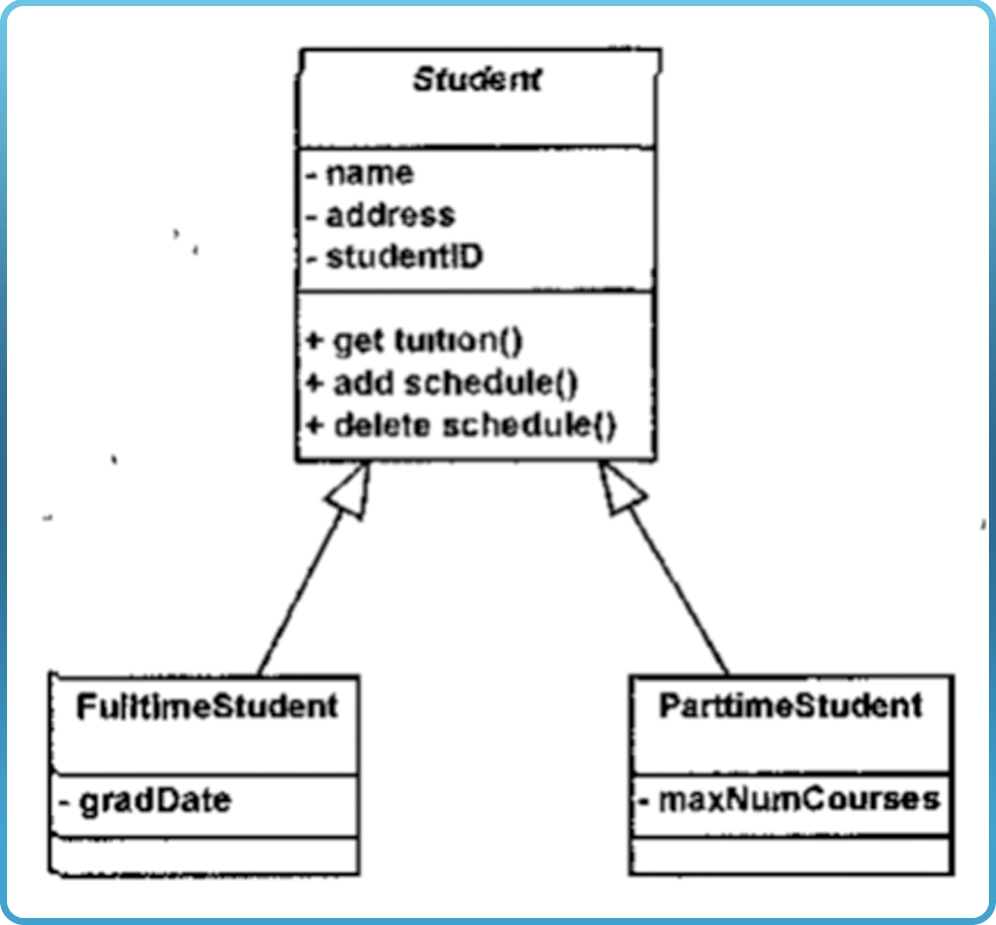
Обобщение (generalization) — связь «тип-подтип» реализует механизм наследования (inheritance). Большинство объектно-ориентированных языков непосредственно поддерживают концепцию наследования. Она позволяет одному классу наследовать все атрибуты, операции и связи другого. В языке UML связи наследования называют обобщениями и изображают в виде стрелок от класса-потомка к классу-предку. Общие атрибуты, операции и/или связи отображаются на верхнем уровне иерархии. Помимо наследуемых, каждый подкласс имеет свои собственные уникальные атрибуты, операции и связи.
Глоссарий
Объект — осязаемая сущность (предмет или явление), имеющая четко определяемое поведение. Обладает состоянием (state), поведением (behavior) и индивидуальностью (identity). Класс — множество объектов, связанных общностью свойств, поведения, связей и семантики. Инкапсулирует данные (атрибуты) и поведение (операции). Служит шаблоном для создания объектов. Атрибут — поименованное свойство класса, определяющее диапазон допустимых значений. Видимость атрибута: Public (+), Private (-), Protected (#). Операция — реализация услуги, которую можно запросить у любого объекта данного класса. Включает имя, параметры и тип возвращаемого значения. Типы операций: реализации, управления, доступа, вспомогательные. Полиморфизм — способность класса принадлежать более чем одному типу; способность скрывать множество различных реализаций под единственным общим интерфейсом. Интерфейс — совокупность операций, определяющих набор услуг класса или компонента. Не определяет внутреннюю структуру. Компонент — относительно независимая и замещаемая часть системы, выполняющая четко определенную функцию. Физическая реализация проектной абстракции (исходный код, компонент времени выполнения, исполняемый компонент). Ассоциация (association) — семантическая связь между классами, отражающая структурные связи между объектами различных классов. Агрегация (aggregation) — форма ассоциации, более сильный тип связи между целым и его частями. Типы: «Безраздельно обладает», «Обладает», «Включает», «Участник». Композиция (composition) — сильная форма агрегации в UML, где составной объект физически содержит компонентные объекты, и компонент может принадлежать только одному составному объекту. Мощность (multiplicity) — число объектов одного класса, связанных с одним объектом другого класса. Нотации: *, 0, 1, 0..*, 1..*, 0..1, 1..1. Ассоциация-класс (Association class) — элемент, обладающий как свойствами класса, так и свойствами ассоциации. Хранит атрибуты и операции, относящиеся к связи. Зависимость (dependency) — связь, при которой изменения в спецификации одного элемента могут повлечь изменения в другом. Изображается пунктирной линией. Обобщение (generalization) — связь «тип-подтип», реализующая механизм наследования. Позволяет классу-потомку наследовать все атрибуты, операции и связи класса-предка.
Планирование процесса разработки программного обеспечения при объектном подходе
Базовыми составляющими объектно-ориентированного подхода являются: - Унифицированный процесс; - Унифицированный язык моделирования; - Шаблоны проектирования. Унифицированный процесс – это процесс разработки программного обеспечения (ПО), который обеспечивает упорядоченный подход к распределению задач и обязанностей в организации-разработчике. Унифицированный процесс охватывает весь жизненный цикл ПО, начиная с определения требований и заканчивая сопровождением, и представляет собой обобщенный каркас (шаблон, скелет), который может быть применен (специализирован) для разработки и сопровождения широкого круга систем. Неотъемлемой частью Унифицированного процесса является UML – язык (система обозначений) для определения, визуализации и конструирования моделей системы в виде диаграмм и документов на основе объектно-ориентированного подхода. Следует отметить, что Унифицированный процесс и UML разрабатывались совместно.
На стадиях анализа и проектирования часто используются так называемые шаблоны (паттерны) проектирования. Шаблон – это именованная пара «проблема/решение», содержащая готовое обобщенное решение типичной проблемы. Как правило, шаблон помимо текстового описания содержит также одну или несколько диаграмм UML (например, диаграммы классов, кооперации и/или последовательности), графически иллюстрирующих состав и структуру классов, а также особенности их взаимодействия при решении поставленной проблемы. Шаблоны разрабатываются опытными профессионалами и являются проверенными, эффективными (порой оптимальными) решениями. Применение шаблонов может резко сократить затраты и повысить качество разработки ПО.
Преимущества объектно-ориентированного подхода В отличие от структурного подхода объектно-ориентированный имеет ряд преимуществ: - описание системы в виде объектов больше соответствует содержательному смыслу предметной области. Например, при использовании структурного подхода БД должна удовлетворять требованиям нормализации, в соответствии с которыми данные по одному и тому же объекту (сущности из реального мира) могут храниться в нескольких таблицах; - сущности реального мира, как правило, обладают поведением, что в объектно-ориентированном проектировании отражается с помощью определения методов класса. В структурном подходе данные (атрибуты) и алгоритмы (методы) существуют отдельно друг от друга; - объединение атрибутов и методов в объекте (классе), а также инкапсуляция позволяют добиться большей внутренней и меньшей внешней связности между компонентами системы. Это облегчает решение проблем: адаптации системы к изменению существующих или появлению новых требований; сопровождения системы на разных стадиях жизненного цикла; повторного использования компонентов; - объектно-ориентированный подход позволяет легче организовать параллельные вычисления, так как каждый объект обладает собственными значениями характеристик (атрибутов) и поведением, за счет чего можно добиться его автономной работы; - CASE-средства, поддерживающие объектно-ориентированный подход, на основе информации об объектах позволяют достичь большей степени автоматизации кодогенерации.
Объектно-ориентированное программирование определяется как технология создания сложного программного обеспечения, основанная на представлении программы в виде совокупности объектов, каждый из которых является экземпляром определенного типа (класса), а классы образуют иерархию с наследованием свойств. Взаимодействие программных объектов в такой системе осуществляется путем передачи сообщений. Основным достоинством объектно-ориентированного программирования по сравнению с модульным программированием является «более естественная» декомпозиция программного обеспечения, которая существенно облегчает его разработку. Это приводит к более полной локализации данных и интегрированию их с подпрограммами обработки, что позволяет вести практически независимую разработку отдельных частей (объектов) программы. Кроме этого, объектный подход предлагает новые способы организации программ, основанные на механизмах наследования, полиморфизма, композиции, наполнения. Эти механизмы позволяют конструировать сложные объекты из сравнительно простых. В результате существенно увеличивается показатель повторного использования кодов и появляется возможность создания библиотек классов для различных применений.
Этапы разработки программных систем с использованием объектно-ориентированного программирования 1) Анализ и уточнение спецификаций. Формулируется цель, максимально точное описание задачи. На этом этапе выполняют анализ предметной области задачи. Определяют важнейшие особенности объектов. По результатам анализа разрабатывают диаграмму объектов ПП, на которой показывают основные абстракции. 2) Проектирование. Логическое, при котором принимаемые решения не зависят от условий эксплуатации программы (ОС, оборудование). Физическое, при котором приходится принимать во внимание указанные факторы. 3) Реализация. При этом начинают с создания основной программы, затем реализуют и подключают классы, так чтобы создать грубый и работающий прототип системы. 4) Модификация. Процесс добавления новых функциональных возможностей или изменения существующих.
Глоссарий
Унифицированный процесс — процесс разработки ПО, обеспечивающий упорядоченный подход к распределению задач и обязанностей в организации-разработчике. Охватывает весь жизненный цикл ПО от определения требований до сопровождения. UML (Unified Modeling Language) — унифицированный язык моделирования, система обозначений для определения, визуализации и конструирования моделей системы в виде диаграмм и документов на основе объектно-ориентированного подхода. Шаблон (паттерн) проектирования — именованная пара «проблема/решение», содержащая готовое обобщенное решение типичной проблемы. Разрабатывается опытными профессионалами, является проверенным эффективным решением. Объектно-ориентированное программирование (ООП) — технология создания сложного ПО, основанная на представлении программы в виде совокупности объектов, каждый из которых является экземпляром определенного класса, а классы образуют иерархию с наследованием свойств. Взаимодействие объектов осуществляется путем передачи сообщений. Логическое проектирование — этап проектирования, при котором принимаемые решения не зависят от условий эксплуатации программы (ОС, оборудование). Физическое проектирование — этап проектирования, при котором учитываются факторы эксплуатации программы (ОС, оборудование).
Унифицированный язык моделирования
Понятие аббревиатуры UML UML — это язык. Главным словом в этом сочетании является слово "язык". Язык — это знаковая система для хранения и передачи информации. Различаются языки формальные, правила употребления которых строго и явно определены, и неформальные, употребление которых основано на сложившейся практике. Различаются также языки естественные, появляющиеся как бы сами собой в результате усилий массы людей, и языки искусственные, являющиеся плодом усилий определенных лиц. UML можно охарактеризовать как формальный искусственный язык, хотя не в такой степени, как многие распространенные языки программирования. Признаком искусственности служит наличие трех общепризнанных авторов: Грейди Буч, Джеймс Рамбо, Ивар Якобсон. Считается, что формальный искусственный язык описан должным образом, если это описание содержит по меньшей мере следующие части: - синтаксис — определение правил конструирования выражений языка; - семантика — определение правил приписывания смысла выражениям языка; - прагматика — определение правил использования выражений языка для достижения определенных целей. Как формальный искусственный язык UML имеет синтаксис, семантику и прагматику, хотя эти части названы в некоторых случаях иначе и описаны по-другому, нежели это принято в языках программирования.
UML — это язык моделирования Слово "моделирование", входящее в название UML, имеет множество смысловых оттенков. Понятно, что когда мы моделируем, мы что-то такое делаем с моделями. Приложение за время жизни претерпевает многочисленные изменения своей формы, зависящие от состояния процесса разработки и эксплуатации приложения. Совокупность и последовательность этих изменений называется жизненным циклом. С понятием жизненного цикла приложения тесно связано понятие процесса разработки приложения — определенной последовательности сменяющих друг друга видов деятельности. В каждой организации, которая специализируется на разработке программного обеспечения, и даже у продвинутых программистов-одиночек существуют свои собственные модели жизненного цикла и процесса разработки. В процессе проектирования что-то делается и в результате нечто получается. Результат проектирования (и анализа), оформленный средствами определенного языка, принято называть моделью. Деятельность по составлению моделей естественно назвать моделированием. Именно в этом смысле UML является языком моделирования.
UML — это унифицированный язык моделирования Описывая историю создания UML, его авторы характеризуют эпоху до UML как период "войны методов". К моменту его появления насчитывались десятки других языков моделирования, различающихся системой обозначений, степенью универсальности, способами применения. Толчком к изменению ситуации послужило массовое распространение объектно-ориентированного подхода к программированию (ООП), в результате чего возникла потребность в соответствующих средствах. Три крупнейших специалиста в этой области, авторы наиболее популярных методов, решились объединить усилия именно с целью унификации своих разработок. UML — это унифицированный язык моделирования, но никак не единый и не универсальный (мы видели такие ошибочные толкования первой буквы U в некоторых источниках).
Назначение UML Сами авторы UML определяют его как графический язык моделирования общего назначения, предназначенный для спецификации, визуализации, проектирования и документирования всех артефактов, создаваемых при разработке приложений. Спецификация. В типичных случаях разработки приложений участвуют по меньшей мере два действующих лица: заказчик и разработчик. Одним из ключевых этапов является определение того, что должно делать разрабатываемое приложение. В результате этого этапа появляется документ (артефакт), который называют по-разному: постановка задачи, пользовательские требования, техническое задание, внешние спецификации. Аналогичные артефакты появляются и на других этапах разработки. Мы будем все такие артефакты называть спецификациями. Спецификация — это декларативное описание того, как нечто устроено или работает. Основное назначение UML — предоставить, с одной стороны, достаточно формальное, с другой стороны, достаточно удобное, и, с третьей стороны, достаточно универсальное средство, позволяющее до некоторой степени снизить риск расхождений в толковании спецификаций.
Визуализация. Известная поговорка гласит, что лучше один раз увидеть, чем сто раз услышать. Особенности человеческого восприятия таковы, что текст с картинками воспринимается легче, чем голый текст. Модели UML допускают представление в форме картинок, причем эти картинки наглядны, интуитивно понятны, практически однозначно интерпретируются и легко составляются. Второе по важности назначение UML состоит в том, чтобы служить адекватным средством коммуникации между людьми. Проектирование. Речь идет о том, что UML предназначен не только для описания абстрактных моделей приложений, но и для непосредственного манипулирования артефактами, входящими в состав этих приложений, в том числе такими, как программный код. Одним из назначений UML является создание таких моделей, для которых возможна автоматическая генерация программного кода соответствующих приложений. Более того, природа моделей UML такова, что возможен и обратный процесс: автоматическое построение модели по коду готового приложения.
Чем НЕ является UML Во-первых, UML не является языком программирования. Дело не в том, что UML — язык графический, а подавляющее большинство языков программирования являются линейными текстовыми языками. Гораздо важнее то, что для моделей UML не определена операционная семантика, то есть не определен способ выполнения моделей на компьютере. Во-вторых, UML не является спецификацией инструмента (хотя инструменты подразумеваются и имеются, например, Together, Rational Rose, Visual Paradigm, Microsoft Visio и др.). В-третьих, UML не является моделью процесса разработки приложений (хотя модель процесса необходима и имеется множество различных).
Способы использования UML - Рисование картинок. Графические средства UML можно и нужно использовать безотносительно ко всему остальному. Даже рисование диаграмм карандашом на бумаге позволяет упорядочить мысли и зафиксировать для себя существенную информацию. - Обмен информацией. Сообщество людей, применяющих и понимающих UML, стремительно растет. Если вы будете использовать UML, то вас будут понимать другие и вы будете понимать других с полувзгляда. - Спецификация систем. Это важнейший способ использования UML. - Повторное использование архитектурных решений. Повторное использование ранее разработанных решений — ключ к повышению эффективности. - Генерация кода. Генерировать код нужно и можно, но возможности имеющихся инструментов не стоит переоценивать. - Имитационное моделирование. Возможности построения моделей UML, из которых путем вычислительных экспериментов можно было бы извлекать информацию о моделируемом объекте, пока что уступают возможностям специализированных систем. - Верификация моделей. Было бы замечательно, если бы по модели можно было бы делать формальные заключения об ее свойствах: модель непротиворечива, согласована, эффективна и т.п. Кое-что UML позволяет проверить, но, конечно, очень мало.
Определение UML Искусственный язык должен быть как-то описан. Искусственный язык, претендующий на массовое использование, должен быть описан так, чтобы притягивать, а не отпугивать потенциальных пользователей. От определения искусственного языка требуется, чтобы оно было: точным, понятным, кратким, полным. Между тем, эти требования зачастую исключают друг друга.
Модель и ее элементы Модель UML — это конечное множество сущностей и отношений между ними. Сущности и отношения модели — это экземпляры метаклассов метамодели. Таким образом, рассматривая модель UML с наиболее общих позиций, можно сказать, что это граф (точнее, нагруженный мульти-псевдо-гипер-орграф), в котором вершины и ребра нагружены дополнительной информацией и могут иметь сложную внутреннюю структуру. Вершины этого графа называются сущностями, а ребра — отношениями.
Сущности в UML подразделяются на четыре группы: структурные, поведенческие, группирующие, аннотационные. Структурные сущности предназначены для описания структуры: - Класс — описание множества объектов с общими атрибутами и операциями. - Интерфейс — множество операций, которое определяет набор услуг (службу), предоставляемых классом или компонентом. - Действующее лицо — сущность, находящаяся вне моделируемой системы и непосредственно взаимодействующая с ней. - Вариант использования — описание последовательности производимых системой действий, доставляющей значимый для некоторого действующего лица результат. - Компонент — физически заменяемый артефакт, реализующий некоторый набор интерфейсов. - Узел — физический вычислительный ресурс.
Поведенческие сущности предназначены для описания поведения: - Состояние — период в жизненном цикле объекта, в котором объект удовлетворяет некоторому условию, выполняет деятельность или ожидает события. - Деятельность — состояние, в котором выполняется работа, а не просто пассивно ожидается наступление события. - Действие — атомарный неделимый элемент работы. Группирующая сущность в UML одна — пакет — группа элементов модели (в том числе пакетов). Аннотационная сущность тоже одна — примечание — зато в нее можно поместить все что угодно, так как содержание примечания UML не ограничивает.
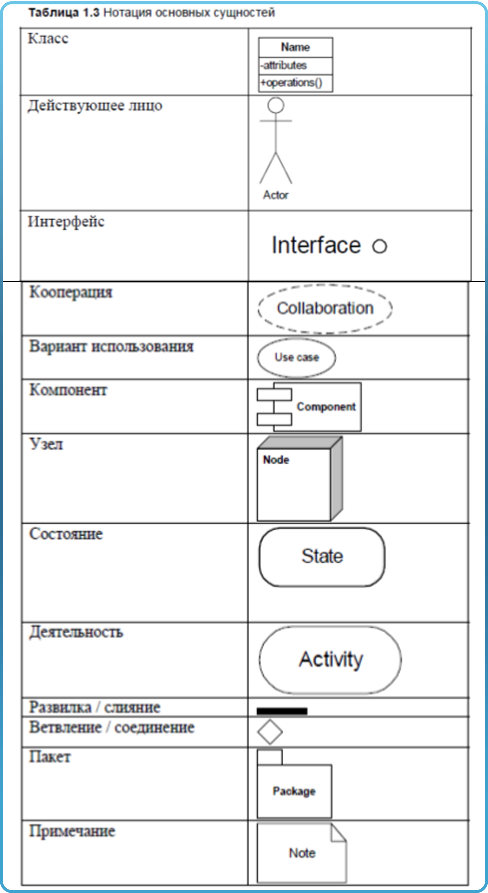
Отношения в UML. Используются четыре основных типа отношений: - Зависимость — наиболее общий тип отношения между двумя сущностями, указывает на то, что изменение независимой сущности каким-то образом влияет на зависимую сущность. Графически изображается в виде пунктирной стрелки, направленной от независимой сущности к зависимой. - Ассоциация — наиболее часто используемый тип отношения между сущностями. Имеет место, если одна сущность непосредственно связана с другой. Графически изображается в виде сплошной линии. Отношение часть-целое является частным случаем ассоциации и называется отношением агрегации. - Обобщение — отношение между двумя сущностями, одна из которых является частным (специализированным) случаем другой. Подразумевает выполнение принципа подстановочности. Графически изображается в виде сплошной стрелки с треугольником на конце, направленной от частного к общему. - Реализация — указывает, что одна сущность является реализацией другой. Например, класс является реализацией интерфейса. Графически изображается в виде пунктирной стрелки с треугольником на конце, направленной от реализующей сущности к реализуемой.
Набор диаграмм, входящих в стандарт UML. Классификация диаграмм Диаграмма — это графическое представление некоторой части графа модели. Авторы UML определили набор рекомендуемых к использованию типов диаграмм, которые получили название канонических типов диаграмм. В UML 1.x всего определено 9 канонических типов диаграмм: - Диаграмма использования - Диаграмма классов - Диаграмма объектов - Диаграмма состояний - Диаграмма деятельности - Диаграмма последовательности - Диаграмма кооперации - Диаграмма компонентов - Диаграмма размещения Канонические диаграммы отнюдь не образуют полного ортогонального набора: они пересекаются как по включенным в них средствам, так и по области применения. Более того, некоторые из них являются частными случаями других, есть просто семантически эквивалентные пары. Классификация диаграмм включает структурные диаграммы (Structure Diagram) и диаграммы поведения (Behavior Diagram).
Глоссарий
UML (Unified Modeling Language) — унифицированный язык моделирования, формальный искусственный язык, предназначенный для спецификации, визуализации, проектирования и документирования всех артефактов, создаваемых при разработке приложений. Синтаксис UML — определение правил конструирования выражений языка. Семантика UML — определение правил приписывания смысла выражениям языка. Прагматика UML — определение правил использования выражений языка для достижения определенных целей. Спецификация — декларативное описание того, как нечто устроено или работает (постановка задачи, пользовательские требования, техническое задание). Модель UML — конечное множество сущностей и отношений между ними. Представляет собой граф, где вершины — сущности, а ребра — отношения. Класс (в UML) — описание множества объектов с общими атрибутами и операциями. Интерфейс (в UML) — множество операций, определяющее набор услуг, предоставляемых классом или компонентом. Действующее лицо (Actor) — сущность, находящаяся вне моделируемой системы и непосредственно взаимодействующая с ней. Вариант использования (Use Case) — описание последовательности производимых системой действий, доставляющей значимый для некоторого действующего лица результат. Компонент (в UML) — физически заменяемый артефакт, реализующий некоторый набор интерфейсов. Узел (Node) — физический вычислительный ресурс. Состояние (State) — период в жизненном цикле объекта, в котором объект удовлетворяет некоторому условию, выполняет деятельность или ожидает события. Деятельность (Activity) — состояние, в котором выполняется работа, а не просто пассивно ожидается наступление события. Действие (Action) — атомарный неделимый элемент работы. Пакет (Package) — группирующая сущность, группа элементов модели (в том числе пакетов). Примечание (Note) — аннотационная сущность для помещения любой дополнительной информации. Зависимость (Dependency) — отношение, при котором изменение независимой сущности влияет на зависимую. Изображается пунктирной стрелкой. Ассоциация (Association) — отношение непосредственной связи между сущностями. Изображается сплошной линией. Агрегация — частный случай ассоциации (отношение часть-целое). Обобщение (Generalization) — отношение, при котором одна сущность является частным случаем другой. Подразумевает принцип подстановочности. Изображается сплошной стрелкой с треугольником. Реализация (Realization) — отношение, указывающее, что одна сущность является реализацией другой (например, класс реализует интерфейс). Изображается пунктирной стрелкой с треугольником. Диаграмма UML — графическое представление некоторой части графа модели. Канонические типы диаграмм: использования, классов, объектов, состояний, деятельности, последовательности, кооперации, компонентов, размещения.
Диаграмма вариантов использования
Представление использования. Представление использования призвано отвечать на вопрос, что делает система полезного. Определяющим признаком для отнесения элементов модели к представлению использования является явное сосредоточение внимания на наличии у системы внешних границ, то есть выделение внешних действующих лиц, взаимодействующих с системой, и внутренних вариантов использования, описывающих различные сценарии такого взаимодействия. Единственным выразительным средством представления использования оказываются диаграммы использования.
Диаграммы использования. Диаграмма вариантов использования описывает назначение системы (что будет система в процессе функционирования). Является исходным концептуальным представлением или концептуальной моделью системы в процессе ее проектирования. Суть данной диаграммы состоит в следующем: проектируемая система представляется в виде множества сущностей или актеров, взаимодействующих с системой с помощью так называемых вариантов использования. Диаграмму вариантов использования в качестве модели системы можно ассоциировать с моделью "черного ящика". Вариант использования — обозначение последовательности действий, которые система или другая сущность могут выполнять в процессе взаимодействия с актерами. Графическое обозначение: эллипс, внутри которого содержится краткое название или имя в форме существительного или глагола с пояснительными словами. Цель определения варианта использования — фиксация некоторого аспекта или фрагмента поведения проектируемой системы без указания особенностей реализации. Актер — согласованное множество ролей, которые играют внешние сущности по отношению к вариантам использования при взаимодействии с ними. Внешняя по отношению к системе сущность, которая взаимодействует с системой и использует ее функциональные возможности для решения частных задач. Графическое обозначение: фигурка "человечка", под которой записывается конкретное имя актера. В некоторых случаях актер может обозначаться в виде прямоугольника класса с ключевым словом (стереотипом) «актер» и обычными составляющими элементами класса. В качестве актеров могут выступать другие системы, в том числе и подсистемы проектируемой системы или ее отдельные классы. Внутренняя структура актера не определяется, имеет значение только внешнее представление. Взаимодействует с системой посредством передачи сообщений: запрос сервиса от системы и получение этого сервиса.
Отношения на диаграмме вариантов использования. Ассоциация — служит для обозначения специфической роли актера при взаимодействии с отдельным вариантом использования. Ассоциация специфицирует семантические особенности взаимодействия актеров и вариантов использования. Обозначается сплошной линией между актером и вариантом использования. Отношение может иметь собственное имя, а концевые точки — кратность. Могут быть направленными. Включение устанавливается только между двумя вариантами использования и указывает на тот факт, что некоторое заданное поведение для одного варианта использования включается в качестве составного фрагмента в последовательность поведения другого. Направленное бинарное отношение со стереотипом «include». Базовый вариант зависит от результатов выполнения включаемого варианта использования, но не от его структуры. Обобщение: некоторый вариант использования А является специальным случаем варианта использования Б. В этом случае А — специализация Б. Б — предок, А — потомок. Потомок наследует все свойства поведения своего родителя, а также может обладать дополнительными особенностями поведения. Графически — сплошной линией со стрелкой в форме незакрашенного треугольника, которая указывает на родительский вариант использования. Стрелка-обобщение. Также обобщение возможно между актерами. Расширение определяет взаимосвязь базового варианта использования с некоторым другим вариантом использования, функциональное поведение которого задействуется базовым не всегда, а только при выполнении некоторых дополнительных условий. Является зависимостью, направленной к базовому варианту использования и соединенной с ним в так называемой точке расширения. Графическое обозначение — пунктирная стрелка, направленная от того варианта использования, который является расширением для базового. Стереотип «extend». Данное отношение предполагает проверку некоторого условия и ссылку на точку расширения в базовом варианте использования.
Реализация вариантов использования. Переход от моделирования использования к другим видам моделирования состоит в уточнении, детализации и конкретизации вариантов использования. Необходимо определить, как исполняет свои функции система. Это называется реализацией вариантов использования. Реализация варианта использования — это описание всех или некоторых сценариев, составляющих вариант использования. 1. Текстовые описания. Существует большое количество шаблонов для написания сценариев. Важно, чтобы сценарий лишь дополнял и уточнял диаграмму, а не заменял ее. Преимущества: понятность, простота, легкость и быстрота в составлении. Недостатки: могут быть неточны. 2. Реализация на псевдокоде. Недостатки: реализация на псевдокоде плохо согласуется с современной парадигмой ООП; при использовании псевдокода теряются все преимущества использования UML (наглядная визуализация, поддержка CASE-средствами); решения на псевдокоде почти невозможно использовать повторно. 3. Реализация диаграммами деятельности. 4. Реализация диаграммами взаимодействия. Создать одну или несколько диаграмм взаимодействия в форме диаграмм коммуникации или диаграмм последовательности, которые описывают один или несколько сценариев данного варианта использования. Этот способ наиболее трудоемок и сложен, но лучше всего согласован с объектно-ориентированным подходом.
Глоссарий
Диаграмма вариантов использования (Use Case Diagram) — диаграмма, описывающая назначение системы, являющаяся исходным концептуальным представлением системы в процессе проектирования. Система представляется в виде множества актеров, взаимодействующих с системой с помощью вариантов использования. Ассоциируется с моделью "черного ящика". Вариант использования (Use Case) — обозначение последовательности действий, которые система или другая сущность могут выполнять в процессе взаимодействия с актерами. Цель — фиксация аспекта поведения системы без указания особенностей реализации. Графическое обозначение: эллипс. Актер (Actor) — согласованное множество ролей, которые играют внешние сущности по отношению к вариантам использования при взаимодействии с ними. Внешняя сущность, взаимодействующая с системой и использующая ее функциональные возможности. Графическое обозначение: фигурка "человечка". В качестве актеров могут выступать другие системы, подсистемы или классы. Ассоциация (Association) — отношение между актером и вариантом использования, обозначающее специфическую роль актера. Обозначается сплошной линией. Может иметь имя, кратность, может быть направленной. Включение (Include) — направленное бинарное отношение между двумя вариантами использования, указывающее, что заданное поведение одного варианта использования включается в качестве составного фрагмента в последовательность поведения другого. Стереотип «include». Обобщение (Generalization) — отношение, при котором один вариант использования (потомок) является специализацией другого (предка). Потомок наследует все свойства поведения родителя. Графически — сплошная линия со стрелкой в форме незакрашенного треугольника от потомка к предку. Возможно также между актерами. Расширение (Extend) — отношение, определяющее взаимосвязь базового варианта использования с другим вариантом, функциональное поведение которого задействуется базовым не всегда, а только при выполнении дополнительных условий. Стереотип «extend». Предполагает проверку условия и ссылку на точку расширения в базовом варианте использования. Реализация варианта использования — описание всех или некоторых сценариев, составляющих вариант использования. Способы реализации: текстовые описания, псевдокод, диаграммы деятельности, диаграммы взаимодействия (коммуникации или последовательности).
Диаграмма деятельности
При моделировании поведения проектируемой или анализируемой программной системы возникает необходимость не только представить процесс изменения ее состояний, но и детализировать особенности алгоритмической и процедурной реализации выполняемых системой операций. Для этой цели, как правило, используются блок-схемы или структурные схемы алгоритмов. Каждая такая схема акцентирует внимание на последовательности выполнения определенных процедур или элементарных операций, которые в совокупности приводят к получению желаемого результата. С увеличением сложности системы строгое соблюдение определенной последовательности выполняемых действий приобретает большое значение. Для моделирования процесса выполнения операций в языке UML используются диаграммы деятельности (активности). Каждое состояние на диаграмме деятельности соответствует выполнению некой операции, а переход в следующее состояние происходит только после завершения выполнения этой операции. Диаграмма деятельности представляется в форме графа деятельности, вершинами которого являются состояния действия или деятельности, а дугами — переходы от одного состояния действия к другому. Диаграммы деятельности — частный случай диаграмм состояний. Они позволяют реализовать в языке UML особенности процедурного и синхронного управления, обусловленного завершением внутренних действий и деятельности. Основным направлением использования диаграмм деятельности является визуализация особенностей реализации операций классов, когда необходимо представить алгоритмы их выполнения. При этом каждое состояние может являться выполнением операции определенного класса либо ее части, позволяя использовать диаграммы деятельности для описания реакций на внутренние события системы. На диаграмме деятельности отображается логика или последовательность перехода от одной деятельности к другой, при этом внимание фиксируется на результате деятельности. Сам же результат может привести к изменению состояния системы или возвращению некоторого значения. Диаграмма деятельности предназначена для моделирования поведения систем, хотя время в явном виде отсутствует на этой диаграмме.
Состояния деятельности и действия. Состояние деятельности (activity state) — состояние в графе деятельности, которое служит для представления процедурной последовательности действий, требующих определенного времени. Переход из состояния деятельности происходит после выполнения специфицированной в нем деятельности, при этом ключевое слово do в имени деятельности не указывается. Состояние деятельности не может иметь внутренних переходов, поскольку оно является элементарным. Деятельность, описанная в состоянии деятельности, не может быть прервана никакими внешними событиями. Обычное использование состояния деятельности заключается в моделировании подпроцесса выполнения отдельных алгоритмов или процедур. Состояние действия (action state) — специальный случай состояния с некоторым входным действием и, по крайней мере, одним выходящим из состояния переходом. Переход из состояния действия происходит после завершения входного действия. Состояние действия не может иметь внутренних переходов, поскольку оно является элементарным. Обычное использование состояния действия заключается в моделировании шага выполнения алгоритма или процедуры в рамках одного потока управления. Графически состояния деятельности и действия изображаются одинаковой фигурой, напоминающей прямоугольник, боковые стороны которого заменены выпуклыми дугами. Внутри этой фигуры записывается имя состояния деятельности или действия в форме выражения, которое должно быть уникальным в пределах одной диаграммы деятельности. Действие может быть записано на естественном языке, псевдокоде или языке программирования. Никаких дополнительных или неявных ограничений при записи действий не накладывается. Рекомендуется в качестве имени простого действия использовать глагол с пояснительными словами. Если же действие может быть представлено в формальном виде, то целесообразно записать его на том языке программирования, на котором предполагается реализовывать разрабатываемый проект. Каждая диаграмма деятельности должна иметь единственное начальное и конечное состояния. При этом каждая деятельность начинается в начальном состоянии и заканчивается в конечном состоянии. Саму диаграмму деятельности принято располагать таким образом, чтобы действия следовали сверху вниз или слева направо. В этом случае начальное состояние будет изображаться в верхней или левой части диаграммы, а конечное — в ее нижней или правой части. В интересах удобства визуального представления на диаграмме деятельности допускается изображать несколько конечных состояний. В этом случае все их принято считать эквивалентными друг другу.
Переходы на диаграмме деятельности. При построении диаграммы деятельности используются только нетриггерные переходы, т.е. такие, которые происходят сразу после завершения деятельности или выполнения соответствующего действия. Такой переход передает управление в последующее состояние сразу, как только закончится действие или деятельность в предыдущем состоянии. На диаграмме такой переход изображается сплошной линией со стрелкой. Если из состояния действия выходит единственный переход, то его можно никак не помечать. Если же таких переходов несколько, то при моделировании последовательной деятельности запускается только один из них. При этом для всех выходящих из некоторого состояния деятельности переходов должно выполняться требование истинности только одного из них. Подобный случай встречается тогда, когда последовательно выполняемая деятельность должна разделиться на альтернативные ветви в зависимости от значения промежуточного результата. Такая ситуация получила название ветвления, а для ее обозначения применяется специальный символ решения. Графически ветвление на диаграмме деятельности обозначается символом решения (decision), изображаемым в форме небольшого ромба, внутри которого нет никакого текста. В этот ромб может входить только одна стрелка от того состояния действия, после выполнения которого поток управления должен быть продолжен по одной из взаимно исключающих ветвей. Принято входящую стрелку присоединять к верхней или левой вершине символа решения. Выходящих стрелок может быть две или более, но для каждой из них явно указывается соответствующее сторожевое условие в форме булевского выражения. Для графического объединения альтернативных ветвей на диаграмме деятельности рекомендуется также использовать аналогичный символ в форме ромба, который в этом случае называют соединением (merge). Наличие этого символа, внутри которого также не записывается никакого текста, упрощает визуальный контроль логики выполнения процедурных действий на диаграмме деятельности. Входящих стрелок у символа соединения может быть несколько, они исходят от состояний действия, принадлежащих к одной из взаимно исключающих ветвей. Выходить из ромба соединения может только одна стрелка, при этом ни входящие, ни выходящая стрелки не должны содержать сторожевых условий. Исключением является ситуация, когда с целью сокращения диаграммы объединяют символ решения с символом соединения. Нарушение этих правил делает диаграмму деятельности несостоятельной.
Один из наиболее значимых недостатков обычных блок-схем или структурных схем алгоритмов связан с проблемой изображения параллельных ветвей отдельных вычислений. Поскольку распараллеливание вычислений существенно повышает общее быстродействие программных систем, необходимы графические примитивы для представления параллельных процессов. В диаграммах деятельности с этой целью используется специальный символ для разделения и слияния параллельных вычислений или потоков управления. Это прямая черточка, аналогичная обозначению параллельных переходов для диаграмм состояний. На диаграммах деятельности такая черточка изображается отрезком горизонтальной, реже — вертикальной, линии, толщина которой несколько шире линий простых переходов диаграммы деятельности. При этом разделение (fork) имеет один входящий переход и несколько выходящих, которые изображаются отрезками вертикальных, реже — горизонтальных, линий. Слияние (join), наоборот, имеет несколько входящих переходов и один выходящий. Параллельные переходы на диаграмме деятельности можно изображать в удлиненной форме, а входящие и выходящие переходы — вертикальными стрелками.
Дорожки. Диаграммы деятельности могут быть использованы не только для спецификации алгоритмов вычислений или потоков управления в программных системах. Не менее важная область их применения связана с моделированием бизнес-процессов. В этом контексте деятельность любой компании или фирмы представляет собой не что иное, как совокупность отдельных действий, работ, операций, направленных на достижение требуемого результата. Однако применительно к бизнес-процессам желательно выполнение каждого действия ассоциировать с конкретным подразделением компании. В этом случае подразделение будет нести ответственность за реализацию определенных действий, а сам бизнес-процесс представляется в виде переходов действий из одного подразделения к другому. Для моделирования этих особенностей в языке UML предложена специальная конструкция, получившая название дорожки. Дорожка (swimlane) — графическая область диаграммы деятельности, содержащая элементы модели, ответственность за выполнение которых принадлежит отдельным подсистемам. В качестве примера можно рассмотреть фрагмент диаграммы деятельности работы веб-приложения, которое решает некую задачу в удаленной базе данных. Благодаря дорожкам, каждая из которых соответствует поведению одного из трех объектов — клиента, веб-сервера и сервера баз данных, легко определить, каким из объектов выполняется каждая из активностей, что упрощает восприятие. На диаграмме деятельности с дорожками расположение объекта может иметь дополнительный смысл. А именно, если объект расположен на границе двух дорожек, то это может означать, что переход к следующему состоянию действия в соседней дорожке ассоциирован с нахождением документа в некотором состоянии. Если же объект расположен внутри дорожки, то и состояние этого объекта целиком определяется действиями данной дорожки.
Любой элемент модели, имеющий динамическое поведение, может быть дополнен диаграммой деятельности — именно для уточнения этой самой динамики. Можно построить несколько диаграмм деятельности для одной и той же системы, причем каждая из них будет фокусироваться на разных аспектах системы, показывать различные действия, выполняющиеся внутри нее. Говоря более формально, диаграммы активности, в общем-то, не имеют монополии на описание поведенческих особенностей динамических частей системы. Для этой же цели могут использоваться еще диаграммы прецедентов, последовательности, кооперации и состояний. На диаграмме деятельности представлены переходы потока управления от одной деятельности к другой. Это, по сути, разновидность диаграммы состояний, где все или большая часть состояний являются некоторыми деятельностями, а все или большая часть переходов срабатывают при завершении определенной деятельности и позволяют перейти к выполнению следующей. Диаграмма деятельности может быть присоединена к любому элементу модели, имеющему динамическое поведение. Кстати, исходя из вышесказанного, логичнее говорить не "диаграмма деятельности", а "диаграмма деятельностей" — во множественном числе. Диаграммы деятельности позволяют моделировать сложный жизненный цикл объекта, с переходами из одного состояния (деятельности) в другое. Но этот вид диаграмм может быть использован и для описания динамики совокупности объектов. На диаграмме деятельностей можно не только показать параллельно выполняемые действия, но и указать состояния объектов; также есть возможность показывать распределение ролей и т.д. На практике диаграммы деятельности применяются в основном двумя способами: для моделирования процессов; для моделирования операций.
Рекомендации по построению диаграмм активностей. Процесс построения диаграммы активностей можно описать в виде последовательности таких действий: 1. Составление перечня деятельностей в системе. Как исходные данные для этой операции хорошо подходит список прецедентов или список операций. Дополняться диаграммой активности может каждый сценарий использования. Можно также попытаться описать связь между ними. 2. Принятие решения о необходимости построения диаграммы деятельностей. 3. Определение зависимостей между деятельностями. Для каждой активности нужно найти активности, непосредственно предшествующие (и следующие за ней), то есть активности, без выполнения которых поток управления не может перейти к данной деятельности. 4. Выделение параллельных потоков деятельностей. Выделите активности, имеющие общих предшественников. 5. Определение условий переходов. Сформулируйте выражения, которые могут принимать только два значения — "истинно" или "ложно", соответствующие альтернативным потокам управления. 6. Уточните сложные деятельности. Создавая диаграммы деятельности, не нужно забывать, что они лишь моделируют срез некоторых динамических аспектов поведения системы. С помощью единственной диаграммы деятельности никогда не удастся охватить все динамические аспекты системы. Вместо этого следует использовать разные диаграммы деятельности для моделирования динамики рабочих процессов или отдельных операций.
Глоссарий
Диаграмма деятельности (Activity Diagram) — диаграмма UML для моделирования процесса выполнения операций. Представляется в форме графа деятельности, вершинами которого являются состояния действия или деятельности, а дугами — переходы от одного состояния действия к другому. Является частным случаем диаграммы состояний. Состояние деятельности (activity state) — состояние в графе деятельности, служащее для представления процедурной последовательности действий, требующих определенного времени. Переход происходит после выполнения специфицированной деятельности. Деятельность не может быть прервана внешними событиями. Состояние действия (action state) — специальный случай состояния с входным действием и хотя бы одним выходящим переходом. Переход происходит после завершения входного действия. Используется для моделирования шага выполнения алгоритма в рамках одного потока управления. Ветвление (decision) — ситуация, когда последовательно выполняемая деятельность разделяется на альтернативные ветви в зависимости от значения промежуточного результата. Графически обозначается символом решения в форме ромба. Соединение (merge) — символ в форме ромба для графического объединения альтернативных ветвей на диаграмме деятельности. Разделение (fork) — символ (горизонтальная или вертикальная черточка) для разделения потока управления на параллельные потоки. Имеет один входящий переход и несколько выходящих. Слияние (join) — символ для объединения параллельных потоков управления в один. Имеет несколько входящих переходов и один выходящий. Дорожка (swimlane) — графическая область диаграммы деятельности, содержащая элементы модели, ответственность за выполнение которых принадлежит отдельным подсистемам (подразделениям, объектам). Нетриггерный переход — переход на диаграмме деятельности, который происходит сразу после завершения деятельности или выполнения соответствующего действия, без ожидания внешнего события.
Моделирование использования
Представление использования. Призвано отвечать на вопрос, что делает система полезного. Определяющим признаком для отнесения элементов модели к представлению использования является явное сосредоточение внимания на наличии у системы внешних границ, то есть выделение внешних действующих лиц, взаимодействующих с системой, и внутренних вариантов использования, описывающих различные сценарии такого взаимодействия. Единственным выразительным средством представления использования оказываются диаграммы использования.
Диаграммы использования. Диаграмма вариантов использования описывает назначение системы (что будет система в процессе функционирования). Является исходным концептуальным представлением или концептуальной моделью системы в процессе ее проектирования. Суть данной диаграммы состоит в следующем: проектируемая система представляется в виде множества сущностей или актеров, взаимодействующих с системой с помощью так называемых вариантов использования. Диаграмму вариантов использования в качестве модели системы можно ассоциировать с моделью "черного ящика". Вариант использования — обозначение последовательности действий, которые система или другая сущность могут выполнять в процессе взаимодействия с актерами. Графическое обозначение: эллипс, внутри которого содержится краткое название или имя в форме существительного или глагола с пояснительными словами. Цель определения варианта использования — фиксация некоторого аспекта или фрагмента поведения проектируемой системы без указания особенностей реализации. Актер — согласованное множество ролей, которые играют внешние сущности по отношению к вариантам использования при взаимодействии с ними. Внешняя по отношению к системе сущность, которая взаимодействует с системой и использует ее функциональные возможности для решения частных задач. Графическое обозначение: фигурка "человечка", под которой записывается конкретное имя актера. В некоторых случаях актер может обозначаться в виде прямоугольника класса с ключевым словом (стереотипом) «актер». В качестве актеров могут выступать другие системы, в том числе и подсистемы проектируемой системы или ее отдельные классы. Внутренняя структура актера не определяется, имеет значение только внешнее представление. Взаимодействует с системой посредством передачи сообщений: запрос сервиса от системы и получение этого сервиса.
Отношения на диаграмме использования. Ассоциация — служит для обозначения специфической роли актера при взаимодействии с отдельным вариантом использования. Ассоциация специфицирует семантические особенности взаимодействия актеров и вариантов использования. Обозначается сплошной линией между актером и вариантом использования. Отношение может иметь собственное имя, а концевые точки — кратность. Могут быть направленными. Включение устанавливается только между двумя вариантами использования и указывает на тот факт, что некоторое заданное поведение для одного варианта использования включается в качестве составного фрагмента в последовательность поведения другого. Направленное бинарное отношение со стереотипом «include». Базовый вариант зависит от результатов выполнения включаемого варианта использования, но не от его структуры. Обобщение: некоторый вариант использования А является специальным случаем варианта использования Б. В этом случае А — специализация Б. Б — предок, А — потомок. Потомок наследует все свойства поведения своего родителя, а также может обладать дополнительными особенностями поведения. Графически — сплошной линией со стрелкой в форме незакрашенного треугольника, которая указывает на родительский вариант использования. Стрелка-обобщение. Также обобщение возможно между актерами. Расширение определяет взаимосвязь базового варианта использования с некоторым другим вариантом использования, функциональное поведение которого задействуется базовым не всегда, а только при выполнении некоторых дополнительных условий. Является зависимостью, направленной к базовому варианту использования и соединенной с ним в так называемой точке расширения. Графическое обозначение — пунктирная стрелка, направленная от того варианта использования, который является расширением для базового. Стереотип «extend». Данное отношение предполагает проверку некоторого условия и ссылку на точку расширения в базовом варианте использования.
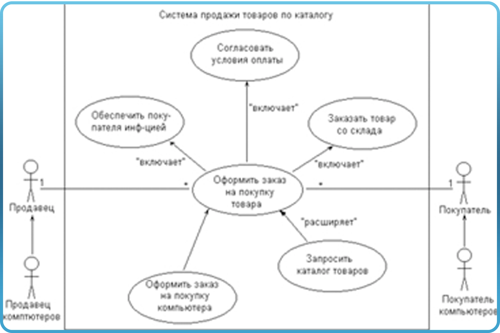
Реализация вариантов использования. Переход от моделирования использования к другим видам моделирования состоит в уточнении, детализации и конкретизации вариантов использования. Необходимо определить, как исполняет свои функции система. Это называется реализацией вариантов использования. Реализация варианта использования — это описание всех или некоторых сценариев, составляющих вариант использования. Существуют различные способы реализации: - Текстовые описания. Преимущества: понятность, простота, легкость и быстрота в составлении. Недостатки: могут быть неточны. - Реализация на псевдокоде. Недостатки: плохо согласуется с ООП; теряются преимущества UML; решения почти невозможно использовать повторно. - Реализация диаграммами деятельности. - Реализация диаграммами взаимодействия (диаграммы коммуникации или последовательности). Этот способ наиболее трудоемок и сложен, но лучше всего согласован с объектно-ориентированным подходом.
Моделирование структуры на UML. Структурой системы понимают устойчивую во времени совокупность взаимосвязей между ее элементами или компонентами. Структурные (structural) модели: - диаграммы классов (class diagrams) — для моделирования статической структуры классов системы и связей между ними; - диаграммы компонентов (component diagrams) — для моделирования иерархии компонентов (подсистем) системы; - диаграммы размещения (deployment diagrams) — для моделирования физической архитектуры системы. Представление структуры призвано отвечать на вопрос: из чего состоит система. Определяющим признаком является явное выделение структурных элементов — составных частей системы — и описание взаимосвязей между ними. Принципиальным является чисто статический характер описания, то есть отсутствие понятия времени. Представление структуры описывается, прежде всего, диаграммами классов, а также компонентов, размещения, внутренней структуры.
Диаграмма классов определяет типы классов системы и различного рода статические связи, которые существуют между ними. На диаграммах классов изображаются также атрибуты классов, операции классов и ограничения, которые накладываются на связи между классами. Вид и интерпретация диаграммы классов существенно зависит от точки зрения (уровня абстракции): классы могут представлять сущности предметной области (в процессе анализа) или элементы программной системы (в процессах проектирования и реализации). Диаграммы компонентов моделируют физический уровень системы. На них изображаются компоненты ПО и связи между ними. На такой диаграмме обычно выделяют два типа компонентов: исполняемые компоненты и библиотеки кода. Каждый класс модели (или подсистема) преобразуется в компонент исходного кода. Между отдельными компонентами изображают зависимости, соответствующие зависимостям на этапе компиляции или выполнения программы. Диаграмма размещения отражает физические взаимосвязи между программными и аппаратными компонентами системы. Она является хорошим средством для того, чтобы показать размещение объектов и компонентов в распределенной системе. Диаграмма размещения показывает физическое расположение сети и местонахождение в ней различных компонентов. Ее основными элементами являются узел (вычислительный ресурс) и соединение — канал взаимодействия узлов (сеть).
Диаграмма классов. Классы. Класс является абстрактным описанием или представлением свойств множества объектов, которые обладают одинаковой структурой, поведением и отношениями с объектами из других классов. Графически изображается в виде прямоугольника, дополнительно разделенного горизонтальными линиями на разделы или секции. В них указываются имя класса, атрибуты (переменные), операции (методы). Имя класса должно быть уникальным в пределах пакета, который может содержать несколько диаграмм классов. Указывается в верхней секции прямоугольника — секции класса. Класс может не иметь экземпляров или объектов — абстрактный класс. Обозначение: имя курсивом. Атрибуты класса служат для представления отдельного свойства или признака, который является общим для всех объектов данного класса. Записываются во второй сверху секции — секции атрибутов. Каждому атрибуту соответствует отдельная строка текста, которая состоит из квантора видимости, типа значений атрибута и исходного значения. Квантор видимости: «+» (public), «#» (protected), «-» (private).
Операции классов — это некоторый сервис, который предоставляет каждый экземпляр или объект класса по требованию своих клиентов (других объектов, в том числе и экземпляров данного класса). Записываются в третьей секции — секции операций. Совокупность операций характеризует функциональный аспект поведения всех экземпляров данного класса. Для повышения производительности системы одни операции могут выполняться параллельно или одновременно, а другие — только последовательно. В этом случае для указания параллельности выполнения операции используется строка-свойство вида «{concurrency = имя}», где имя может принимать значения: sequential (последовательная), concurrent (параллельная), guarded (охраняемая).
Диаграмма классов. Сущности. На диаграмме классов применяется один основной тип сущностей: классы (включая многочисленные частные случаи классов: интерфейсы, примитивные типы, классы-ассоциации и многие другие), между которыми устанавливаются основные типы отношений. В качестве расширения предложены следующие виды классов: класс-сущность (entity) содержит информацию, которая должна храниться постоянно; сотрудник (worker) — класс для представления в бизнес-системе любого сотрудника; сотрудник для связи с окружением (caseworker) — класс, который непосредственно взаимодействует с актерами; бизнес-сущность (business entity) — специальный случай класса-сущности для сохранения информации о результатах выполнения бизнес-процессов.
Диаграммы классов. Отношения. Базовыми отношениями — семантическими связями между классами, которые могут отображаться на диаграмме классов, являются: ассоциация (association); обобщение (generalization); агрегация (aggregation); композиция (composition); зависимость (dependency). Ассоциация соответствует наличию произвольного отношения или взаимосвязи между классами. Обозначение: сплошная линия со стрелкой или без. Виды ассоциации: бинарная ассоциация (связывает два различных класса), ненаправленная бинарная ассоциация (линия без стрелки), направленная бинарная ассоциация (сплошная линия с простой стрелкой на одной из концевых точек), исключающая ассоциация (XOR), N-арная ассоциация, ассоциация-класс. Обобщение — отношение классификации между общим элементом-предком и более частным элементом-потомком. Для иерархического представления взаимосвязей между сущностями. Наследование. Ограничения: {complete}, {incomplete}, {disjoint}, {overlapping}. Агрегация — отношение между двумя классами, когда один из классов представляет собой некоторую сущность, которая включает в себя в качестве составных частей другие сущности. Применяется для представления системных взаимосвязей типа «часть-целое». Графически: сплошная линия, конец — незакрашенный ромб. Композиция — частный случай отношения агрегации для спецификации более сильной формы отношения «часть-целое», при которой составляющие части тесно взаимосвязаны с целым. С уничтожением целого уничтожаются все составные части. Графически: сплошная линия с закрашенным ромбом на конце. Зависимость — указывает на некоторое смысловое отношение между двумя элементами, которое не является отношением ассоциации, обобщения или реализации. Изменение одного элемента может потребовать изменения другого. Графически: пунктир со стрелкой от класса-клиента.
Диаграмма классов. Интерфейсы и абстрактные классы. Интерфейс (interface) является специальным случаем класса, у которого имеются только операции и отсутствуют атрибуты. Для обозначения используется специальный графический символ — окружность или стандартный способ — прямоугольник класса со стереотипом «interface». Служат для спецификации таких элементов модели, которые видимы извне, но их внутренняя структура остается скрытой от клиентов. Интерфейс определяет совокупность операций, которые обеспечивают необходимый набор сервисов или функциональности для актеров. Не могут содержать ни атрибутов, ни состояний, ни направленных ассоциаций. Абстрактный класс — класс, который не имеет экземпляров или объектов. Для обозначения имени абстрактного класса используется наклонный шрифт (курсив). Для указания принадлежности к пакету используется двойное двоеточие (::).
Компоненты и интерфейсы. Диаграмма компонентов описывает особенности физического представления системы. Отражает общие зависимости между компонентами, рассматривая последние в качестве классификаторов. Компонент предназначен для представления физической организации связанных с ним элементов модели. Может иметь текстовый стереотип и помеченные значения. Графическое представление: прямоугольник со вставленными слева двумя прямоугольниками меньшего размера. Виды компонентов (с помощью стереотипов): компоненты развертывания (Deployment components); компоненты — рабочие продукты (Work product components); компоненты исполнения (Execution components). Текстовые стереотипы: executable (исполнимый), library (библиотека), table (таблица), file (файл), document (документ). Интерфейс — это набор операций, который описывает услуги, предоставляемые классом или компонентом. Интерфейс, реализуемый компонентом, называется экспортируемым интерфейсом (Export interface). Интерфейс, которым компонент пользуется, называется импортируемым (Import interface).
Диаграммы реализации. Существует два уровня представления модели: логический уровень и физический уровень. Для создания конкретной физической системы необходимо некоторым образом реализовать все элементы логического представления в конкретные материальные сущности. В языке UML для физического представления моделей систем используются диаграммы реализации (implementation diagrams). Существует два вида диаграмм реализации: диаграмма компонентов (component diagram) и диаграмма развертывания (deployment diagram).
Моделирование поведения на UML. Модель поведения — описание алгоритма работы системы. Выбор средства моделирования диктуется типом поведения, которое нужно описать. В UML выделяют 4 группы: описание поведения с явным выделением состояний (диаграмма автомата); описание поведения с явным выделением потоков данных и управления (диаграммы деятельности); описание поведения как упорядоченной последовательности сообщений (диаграммы взаимодействия в четырех формах); описание параллельного поведения (задается специальными средствами на каждой из диаграмм, описывающих поведение).
Диаграмма состояний. Диаграммы автомата являются реализацией основной идеи использования конечных автоматов как средства описания алгоритмов и моделирования поведения. Назначение — описать возможные последовательности состояний и переходов, которые в совокупности характеризуют поведение моделируемой системы в течение всего ее жизненного цикла. Диаграмма состояний по существу является графом специального вида, который служит для представления некоторого конечного автомата. Вершины графа — состояния и некоторые другие типы элементов модели (псевдосостояния). На диаграмме состояний представлен один тип сущностей — состояние, и один тип отношений между ними — переходы. Под состоянием понимается абстрактный метакласс, используемый для моделирования отдельной ситуации, в течение которой выполняются некоторые условия. Состояние может быть задано в виде набора конкретных значений атрибутов класса или объекта.
Состояние на диаграмме изображается прямоугольником со скругленными вершинами. Список внутренних действий содержит перечень действий или деятельностей, которые выполняются во время нахождения моделируемого элемента в данном состоянии. Формат: <метка-действия '/' выражение-действия>. Метки действия: entry (входное действие); exit (выходное действие); do (выполняющаяся деятельность); include (обращение к подавтомату). Начальное состояние — псевдосостояние, в котором находится объект по умолчанию в начальный момент времени. Конечное состояние — также псевдосостояние. Простой переход (simple transition) представляет собой отношение между двумя последовательными состояниями, которое указывает на факт смены одного состояния объекта другим. На диаграмме состояний переход изображается сплошной линией со стрелкой, которая направлена в целевое состояние. Каждый переход может быть помечен строкой текста формата: <сигнатура события>'['<сторожевое условие>']' <выражение действия>. Событие (event) — спецификация некоторого факта, имеющего место в пространстве и во времени. Сторожевое условие (guard condition) — булевское выражение в прямых скобках после события-триггера. Выражение действия (action expression) — атомарная операция, выполняемая сразу после срабатывания перехода.
Составное состояние и подсостояние. Составное состояние (composite state) — это сложное состояние, состоящее из других вложенных в него состояний. Вложенные состояния выступают по отношению к сложному состоянию как подсостояния (substate). Составное состояние может содержать два или более параллельных подавтомата или несколько последовательных подсостояний. Последовательные подсостояния (sequential substates) используются для моделирования такого поведения объекта, во время которого в каждый момент времени объект может находиться в одном и только одном подсостоянии. Параллельные подсостояния (concurrent substates) позволяют специфицировать два и более подавтомата, которые могут выполняться параллельно внутри составного состояния. Историческое состояние (history state) применяется в контексте составного состояния для запоминания того из последовательных подсостояний, которое было текущим в момент выхода из составного состояния.
Сложные переходы. Для адекватного представления процесса изменения состояний в языке UML специфицированы дополнительные обозначения и свойства, которыми могут обладать отдельные переходы на диаграмме состояний. Переходы между параллельными состояниями — переход может иметь несколько состояний-источников и несколько целевых состояний (параллельный переход). Графически такой переход изображается вертикальной черточкой. Если параллельный переход имеет две и более входящие дуги, его называют соединением (join). Если он имеет две или более исходящие дуги, его называют ветвлением (fork).
Диаграмма деятельности. Для моделирования процесса выполнения операций используются диаграммы деятельности. Основная сущность — частный случай простого состояния (состояние деятельности), а основное отношение — простой переход (переход по завершению). Для описания состояния используются два термина: действие (атомарное, безусловное, непрерываемое извне) и деятельность (совокупность отдельных вычислений, выполняемых автоматом). На диаграмме отображается логика или последовательность перехода от одной деятельности к другой. Состояние действия — специальный случай состояния с некоторым входным действием и минимум одним выходящим из состояния переходом. Каждая диаграмма деятельности должна иметь единственное начальное и конечное состояние. Для построения диаграммы деятельности используются переходы, которые срабатывают сразу после завершения деятельности. Ветвление — из одной деятельности несколько переходов, из которых срабатывает только один при срабатывании сторожевого условия. Обозначается символом решения (decision). Для объединения альтернативных решений используется соединение (merge). Для разделения и слияния параллельных вычислений используется разделение (fork) — имеет один входящий переход и несколько выходящих, и слияние (concurrent join) — имеет несколько входящих переходов и один выходящий. Дорожки (swimlane) — все состояния действия делятся на отдельные группы, которые отделяются друг от друга вертикальными линиями. Две соседних линии образуют дорожку, а группа состояний между ними выполняется отдельным организационным подразделением.
Диаграммы последовательности. С их помощью можно описать полный контекст взаимодействия как временной график "жизни" всей совокупности объектов, взаимодействующих между собой для реализации варианта использования программной системы. Для диаграммы последовательности ключевым является динамика взаимодействия объектов во времени. Объекты. В UML диаграмма последовательности имеет два измерения. Первое слева направо в виде вертикальных линий, каждая из которых изображает линию жизни отдельного объекта. Вторым измерением является вертикальная временная ось, направленная сверху вниз. Взаимодействия объектов реализуются посредством сообщений, которые изображаются в виде горизонтальных стрелок с именем сообщения. Линия жизни объекта (object lifeline) изображается пунктирной вертикальной линией и служит для обозначения периода времени, в течение которого объект существует в системе. Фокус управления (focus of control) изображается в форме вытянутого узкого прямоугольника и обозначает активность объекта. Сообщения изображаются горизонтальными стрелками, соединяющими линии жизни или фокусы управления двух объектов.
В языке UML различаются несколько разновидностей сообщений: для вызова процедур; для обозначения простого потока управления; асинхронное сообщение; для возврата из вызова процедуры. Для изображения ветвления потока управления рисуются две или более стрелки, выходящие из одной точки фокуса управления объекта. Стереотипы сообщений: «call» (вызвать), «return» (возвратить), «create» (создать), «destroy» (уничтожить), «send» (послать). Временные ограничения могут записываться рядом с началом стрелки соответствующего сообщения.
Диаграммы коммуникации — это способ описания поведения, семантически эквивалентный диаграмме последовательности. Применяется один тип сущностей — экземпляры взаимодействующих классификаторов, и один тип отношений — связи. Акцент делается на структуре связей между конкретными экземплярами. Коммуникационные диаграммы имеют свободный формат упорядочивания объектов и связей. Чтобы поддерживать порядок сообщений при таком свободном формате, их хронологически нумеруют. Диаграмма коммуникации нагляднее показывает, с какими элементами взаимодействует каждый элемент, а диаграмма последовательности яснее показывает, в каком порядке происходят взаимодействия.
Модели параллелизма. Параллельность — возможность одновременного выполнения двух и более видов деятельности в течение некоторого интервала времени. На диаграммах автомата параллельное выполнение моделируется с помощью ортогональных (параллельных) составных состояний. Переход в ортогональное составное состояние означает одновременный переход в начальные состояния всех областей данного состояния. Переход по событию и/или со сторожевым условием из ортогонального состояния означает завершение всех вложенных состояний. Для описания переходов, пересекающих границу ортогонального составного состояния, вводится специальное понятие — составной переход (разветвление, слияние, синхронизация). Параллелизм на диаграммах взаимодействия указывается текстуально, с помощью номеров сообщений. Сообщения, номера которых различаются в последней букве, считаются параллельными на данном уровне вызовов. Их относительный порядок не определен.
Специальные диаграммы — диаграмма объектов, диаграмма внутренней структуры. Диаграмма объектов является экземпляром диаграммы классов. На диаграмме объектов применяют один основной тип сущностей — объекты (экземпляры классов); между которыми указываются конкретные связи (чаще всего экземпляры ассоциаций). Диаграммы объектов имеют вспомогательный характер — это примеры, показывающие, какие именно имеются объекты и связи между ними в некоторый конкретный момент функционирования системы. Нотация — как в диаграмме классов. Диаграмма внутренней структуры используется для более подробного представления структурных классификаторов, прежде всего классов и компонентов. Структурный классификатор изображается в виде прямоугольника, в верхней части которого находится имя классификатора. Внутри находятся части, которые могут взаимодействовать друг с другом. Место на внешней границе части, к которому присоединяется соединитель, называется портом.
Специальные диаграммы — обзорная диаграмма взаимодействия, диаграмма синхронизации. Обзорная диаграмма взаимодействия является разновидностью диаграммы деятельности с расширенным синтаксисом: в качестве элементов могут быть ссылки на взаимодействия, определяемые диаграммами последовательности. Диаграмма предназначена для представления взаимодействия только в контексте потока управления в некоторой агрегированной форме. Диаграммы обзора взаимодействия заключаются во фрейм, аналогично другим видам диаграмм взаимодействия с тегом sd. Диаграмма синхронизации (Timing diagram) представляет собой особую форму диаграммы последовательности, на которой особое внимание уделяется изменению состояний различных экземпляров классификаторов и их временной синхронизации. Явным образом показывает изменения состояния на линии жизни с заданной шкалой времени. Может быть полезна в приложениях реального времени.
Паттерны проектирования и каркасы на UML. Паттерн — параметризованная кооперация вместе с описанием базовых принципов ее использования в форме параметров, которые ограничивают использование объектов в контексте ролей элементов рассматриваемого паттерна. Классификация паттернов по категориям применения: архитектурные паттерны (Architectural patterns) — для спецификации фундаментальных схем структуризации программных систем; паттерны проектирования (Design patterns) — для уточнения структуры подсистем или компонентов и отношений между ними; паттерны анализа (Analysis patterns) — для представления общей организации процесса моделирования; паттерны тестирования (Test patterns) — для представления общей организации процесса тестирования; паттерны реализации (Implementation patterns) — совокупность компонентов и других элементов реализации, используемых в структуре модели при написании программного кода. Паттерны проектирования в нотации языка UML представляют собой параметризованную кооперацию. При изображении паттерна используется обозначение параметризованной кооперации языка UML, которое обозначается пунктирным эллипсом. В правый верхний угол эллипса встроен пунктирный прямоугольник, в котором перечислены параметры кооперации. Паттерн Фасад предназначен для замены нескольких разнотипных интерфейсов доступа к определенной подсистеме некоторым унифицированным интерфейсом. Паттерн Наблюдатель предназначен для контроля изменений состояния объекта и передачи информации об этом изменении множеству клиентов. Каркас (Framework) — это архитектурный образец, предлагающий расширяемый шаблон для приложений в некоторой конкретной области. Каркас — это род микроархитектуры, включающий в себя множество механизмов, совместно работающих для разрешения типичной для данной предметной области проблемы. В UML каркас моделируется в виде стереотипного пакета.
Управление моделями. Пакет «Управление моделями» специфицирует базовые элементы языка, которые необходимы для формирования всех модельных представлений. Именно в нем определяется семантика модели, пакета и подсистемы. Эти элементы служат контейнерами для группировки других элементов модели. Пакет может содержать ограничения и зависимости между элементами модели в самом пакете. Каждый элемент пакета имеет видимость только внутри данного пакета. Модель является подклассом и предназначена для вполне определенной цели. Для одной и той же физической системы могут быть определены различные модели, каждая из которых специфицирует систему с различных точек зрения. Модели могут быть вложенными друг в друга. Пакет может включать в себя несколько различных моделей одной и той же системы.
Диаграмма пакетов. Пакет — некоторый общецелевой механизм для организации артефактов в множество, реализующий системный принцип декомпозиции модели сложной системы и допускающий вложенность пакетов друг в друга. Пакеты связываются друг с другом специальным отношением — зависимостью (dependence). Это направленное отношение от того пакета, который зависит, к пакету, который необходим зависимому. Зависимость не ограничивается только диаграммами пакетов, но может быть использована и для связи других UML-конструкций. Для графического описания пакетов применяется специальный графический символ — большой прямоугольник с небольшим прямоугольником, присоединенным к левой части верхней стороны первого. Одним из типов отношений между пакетами является отношение вложенности или включения пакетов друг в друга. Основные пакеты: «Основные элементы» (определяет абстрактные и конкретные компоненты для разработки объектных моделей, механизмы расширения, типы данных); «Элементы поведения» (определяет динамику поведения: общее поведение, кооперации, варианты использования, конечные автоматы, графы деятельности); «Управление моделями» (определяет семантику модели, пакета и подсистемы).
Влияние UML на процесс разработки. Стив Меллор и Мартин Фаулер определили три режима использования UML разработчиками: режим эскиза, режим проектирования и режим языка программирования. Режим эскизирования (эскизное моделирование) — в избирательности. При прямой разработке (forward-engineering) диаграммы рисуются до написания кода. При обратной разработке (reverse-engineering) диаграммы строятся на основании исходного кода. Инструментами эскизного моделирования служат облегченные средства рисования. Сила эскизов в избирательности передачи информации, а не в полноте описания. Режим проектирования — нацелен на полноту. При прямой разработке проект разрабатывается дизайнером, чья работа заключается в построении детальной модели для программиста. При обратной разработке цель моделей состоит в представлении подробной информации о программе. Требуется более сложный инструментарий (CASE-средства). Инструменты, позволяющие выполнять как прямую, так и обратную разработку, называются двухсторонними (round-trip). Режим языка программирования — UML становится исходным кодом, диаграммы компилируются прямо в исполняемый код. Требует особенно сложных инструментов. UML 2 предлагает три способа моделирования поведения: диаграммы взаимодействия, диаграммы состояний и диаграммы деятельности. Существует также концептуальная точка зрения, при которой UML представляет описание концепций предметной области для создания словаря для обсуждения конкретной предметной области.
Глоссарий
Диаграмма вариантов использования (Use Case Diagram) — описывает назначение системы, является исходным концептуальным представлением системы в процессе проектирования. Система представляется в виде множества актеров, взаимодействующих с системой с помощью вариантов использования. Вариант использования (Use Case) — обозначение последовательности
Моделирование поведения
Моделирование поведения на UML. Модель поведения — описание алгоритма работы системы. Выбор средства моделирования диктуется типом поведения, которое нужно описать. В UML выделяют 4 группы: 1. описание поведения с явным выделением состояний (диаграмма автомата); 2. описание поведения с явным выделением потоков данных и управления (диаграммы деятельности); 3. описание поведения как упорядоченной последовательности сообщений (диаграммы взаимодействия в 4 формах); 4. описание параллельного поведения (задается специальными средствами на каждой из диаграмм, описывающих поведение).
Диаграмма состояний. Диаграммы автомата являются реализацией основной идеи использования конечных автоматов как средства описания алгоритмов и моделирования поведения. Назначение — описать возможные последовательности состояний и переходов, которые в совокупности характеризуют поведение моделируемой системы в течение всего ее жизненного цикла. Диаграмма состояний по существу является графом специального вида, который служит для представления некоторого конечного автомата. Вершины графа — состояния и некоторые другие типы элементов модели (псевдосостояния). На диаграмме состояний представлен один тип сущностей — состояние, и один тип отношений между ними — переходы. Совокупность состояний и переходов между ними образует конечный автомат. Под состоянием понимается абстрактный метакласс, используемый для моделирования отдельной ситуации, в течение которой выполняются некоторые условия. Состояние может быть задано в виде набора конкретных значений атрибутов класса или объекта. Изменение отдельных значений атрибутов будет отражать изменение состояния моделируемого класса или объекта.
Состояние на диаграмме изображается прямоугольником со скругленными вершинами. Список внутренних действий содержит перечень действий или деятельностей, которые выполняются во время нахождения моделируемого элемента в данном состоянии. Формат: <метка-действия '/' выражение-действия>. Перечень меток действия имеет фиксированные значения: entry (входное действие); exit (выходное действие); do (выполняющаяся деятельность); include (обращение к подавтомату). Начальное состояние представляет собой частный случай состояния, которое не содержит никаких внутренних действий (псевдосостояние). В этом состоянии находится объект по умолчанию в начальный момент времени. Конечное состояние представляет собой частный случай состояния, которое также не содержит никаких внутренних действий (псевдосостояние).
Переход. Простой переход (simple transition) представляет собой отношение между двумя последовательными состояниями, которое указывает на факт смены одного состояния объекта другим. Если пребывание моделируемого объекта в первом состоянии сопровождается выполнение некоторых действий, то переход во второе состояние будет возможен только после завершения этих действий и, возможно, после выполнения некоторых дополнительных условий, называемых сторожевыми условиями. На диаграмме состояний переход изображается сплошной линией со стрелкой, которая направлена в целевое состояние. Каждый переход может быть помечен строкой текста формата: <сигнатура события>'['<сторожевое условие>']' <выражение действия>. Событие (event) представляет собой спецификацию некоторого факта, имеющего место в пространстве и во времени. Сторожевое условие (guard condition), если оно есть, всегда записывается в прямых скобках после события-триггера и представляет собой некоторое булевское выражение. Выражение действия (action expression) выполняется только при срабатывании перехода и представляет собой атомарную операцию, выполняемую сразу после срабатывания соответствующего перехода.
Составное состояние и подсостояние. Составное состояние (composite state) — это сложное состояние, состоящее из других вложенных в него состояний. Вложенные состояния выступают по отношению к сложному состоянию как подсостояния (substate). Графически все вершины диаграммы, которые соответствуют вложенным состояниям, изображаются внутри символа составного состояния. Составное состояние может содержать два или более параллельных подавтомата или несколько последовательных подсостояний. Последовательные подсостояния (sequential substates) используются для моделирования такого поведения объекта, во время которого в каждый момент времени объект может находиться в одном и только одном подсостоянии. Составное состояние может содержать в качестве вложенных подсостояний начальное и конечное состояния. Параллельные подсостояния (concurrent substates) позволяют специфицировать два и более подавтомата, которые могут выполняться параллельно внутри составного состояния. Каждый из подавтоматов занимает некоторую область или регион внутри составного состояния, которая отделяется от остальных горизонтальной пунктирной линией. Историческое состояние (history state) применяется в контексте составного состояния. Оно используется для запоминания того из последовательных подсостояний, которое было текущим в момент выхода из составного состояния. Существует две разновидности исторического состояния: недавнее и давнее.
Сложные переходы. Для адекватного представления процесса изменения состояний в языке UML специфицированы дополнительные обозначения и свойства, которыми могут обладать отдельные переходы на диаграмме состояний. Переходы между параллельными состояниями — переход может иметь несколько состояний-источников и несколько целевых состояний. Такой переход получил название параллельный переход. Графически такой переход изображается вертикальной черточкой. Если параллельный переход имеет две и более входящие дуги, его называют соединением (join). Если же он имеет две или более исходящие дуги, то его называют ветвлением (fork).
Диаграмма деятельности. Для моделирования процесса выполнения операций используются диаграммы деятельности. Основная сущность — частный случай простого состояния (состояние деятельности), а основное отношение — простой переход (переход по завершению). Для описания состояния используются два термина: действие и деятельность. Действие — атомарное, безусловное, непрерываемое извне. Деятельность представляет собой некоторую совокупность отдельных вычислений, выполняемых автоматом. Состояние действия — специальный случай состояния с некоторым входным действием и минимум одним выходящим из состояния переходом. Каждая диаграмма деятельности должна иметь единственное начальное и конечное состояние. При этом каждая деятельность начинается в начальном состоянии и заканчивается в конечном.
Для построения диаграммы деятельности используются переходы, которые срабатывают сразу после завершения деятельности или выполнения соответствующего действия состояния. Графически: сплошная линия со стрелкой. Ветвление — из одной деятельности несколько переходов, из которых срабатывает только один при срабатывании сторожевого условия. Обозначается символом решения (decision). Для объединения альтернативных решений используется соединение (merge). Для разделения и слияния параллельных вычислений или потоков управления используется специальный символ. Разделение (fork) — имеет один входящий переход и несколько выходящих. Слияние (concurrent join) — имеет несколько входящих переходов и один выходящий. Дорожки (swimlane) — все состояния действия делятся на отдельные группы, которые отделяются друг от друга вертикальными линиями. Две соседних линии образуют дорожку, а группа состояний между ними выполняется отдельным организационным подразделением. Объекты. Действия могут выполняться теми или иными объектами. Они могут инициировать выполнение действий либо определять некоторый результат этих действий. Графическим представлением объекта является прямоугольник класса. Отношение зависимости определяет состояние объекта после выполнения предшествующего действия.
Диаграммы последовательности. С их помощью можно описать полный контекст взаимодействия как временной график "жизни" всей совокупности объектов, взаимодействующих между собой для реализации варианта использования программной системы. Для диаграммы последовательности ключевым является динамика взаимодействия объектов во времени. В UML диаграмма последовательности имеет два измерения. Первое слева направо в виде вертикальных линий, каждая из которых изображает линию жизни отдельного объекта. Вторым измерением является вертикальная временная ось, направленная сверху вниз. Взаимодействия объектов реализуются посредством сообщений, которые изображаются в виде горизонтальных стрелок с именем сообщения. Линия жизни объекта (object lifeline) изображается пунктирной вертикальной линией и служит для обозначения периода времени, в течение которого объект существует в системе. Фокус управления (focus of control) изображается в форме вытянутого узкого прямоугольника и обозначает активность объекта.
Сообщения. В UML каждое взаимодействие описывается совокупностью сообщений, которыми участвующие в нем объекты обмениваются между собой. Сообщение (message) представляет собой законченный фрагмент информации, который отправляется одним объектом другому. Прием сообщения инициирует выполнение определенных действий. Сообщения изображаются горизонтальными стрелками, соединяющими линии жизни или фокусы управления двух объектов. В языке UML различаются несколько разновидностей сообщений: для вызова процедур; для обозначения простого потока управления; асинхронное сообщение; для возврата из вызова процедуры. Для изображения ветвления потока управления рисуются две или более стрелки, выходящие из одной точки фокуса управления объекта.
Стереотипы сообщений. В языке UML предусмотрены стандартные действия, выполняемые в ответ на получение соответствующего сообщения. Используются следующие стереотипы сообщений: - «call» (вызвать) — сообщение, требующее вызова операции или процедуры принимающего объекта; - «return» (возвратить) — сообщение, возвращающее значение выполненной операции или процедуры вызвавшему ее объекту; - «create» (создать) — сообщение, требующее создания другого объекта для выполнения определенных действий; - «destroy» (уничтожить) — сообщение с явным требованием уничтожить соответствующий объект; - «send» (послать) — обозначает посылку другому объекту некоторого сигнала, который асинхронно инициируется одним объектом и принимается другим. Временные ограничения могут записываться рядом с началом стрелки соответствующего сообщения. Комментарии или примечания могут включаться в диаграммы последовательности, ассоциируясь с отдельными объектами или сообщениями.
Диаграммы коммуникации — это способ описания поведения, семантически эквивалентный диаграмме последовательности. Применяется один тип сущностей — экземпляры взаимодействующих классификаторов, и один тип отношений — связи. Акцент делается на структуре связей между конкретными экземплярами. Коммуникационные диаграммы имеют свободный формат упорядочивания объектов и связей. Чтобы поддерживать порядок сообщений при таком свободном формате, их хронологически нумеруют. Диаграмма коммуникации нагляднее показывает, с какими элементами взаимодействует каждый элемент, а диаграмма последовательности яснее показывает, в каком порядке происходят взаимодействия.
Модели параллелизма. Параллельность — возможность одновременного выполнения двух и более видов деятельности в течение некоторого интервала времени. На диаграммах автомата параллельное выполнение моделируется с помощью ортогональных (параллельных) составных состояний. Переход в ортогональное составное состояние означает одновременный переход в начальные состояния всех областей данного состояния. Переход по событию и/или со сторожевым условием из ортогонального состояния означает завершение всех вложенных состояний. Для описания переходов, пересекающих границу ортогонального составного состояния, вводится специальное понятие — составной переход. Составной переход — это переход, который начинается и/или заканчивается в нескольких состояниях. Если переход имеет одно исходное или несколько целевых состояний, то это соответствует разветвлению потока управления на несколько параллельных потоков. Если переход имеет несколько исходных и одно целевое состояние, то это означает слияние нескольких потоков управления в один. Если переход имеет несколько исходных и несколько целевых состояний, то это соответствует синхронизации нескольких потоков управления.
Диаграммы деятельности. Основными средствами являются развилки и слияния. Развилка, слияние — составные переходы по завершении. Развилки и слияния должны быть сбалансированы. Диаграмма деятельности называется сбалансированной, если ее можно получить путем декомпозиции одной деятельности, причем на каждом шаге декомпозиции одна из деятельностей декомпозируется либо на некоторое число последовательных деятельностей, либо на число параллельных. Параллелизм на диаграммах взаимодействия указывается текстуально, с помощью номеров сообщений. Сообщения, номера которых различаются в последней букве, считаются параллельными на данном уровне вызовов. Их относительный порядок не определен. Они могут быть отправлены в любом порядке или даже физически одновременно, если это допускает реализация.
Влияние UML на процесс разработки. Стив Меллор и Мартин Фаулер определили три режима использования UML разработчиками: режим эскиза, режим проектирования и режим языка программирования. Режим эскизирования (эскизное моделирование) — в избирательности. При прямой разработке (forward-engineering) диаграммы рисуются до написания кода. При обратной разработке (reverse-engineering) диаграммы строятся на основании исходного кода. Инструментами эскизного моделирования служат облегченные средства рисования. Сила эскизов в избирательности передачи информации, а не в полноте описания. Режим проектирования — нацелен на полноту. При прямой разработке проект разрабатывается дизайнером, чья работа заключается в построении детальной модели для программиста. При обратной разработке цель моделей состоит в представлении подробной информации о программе. Требуется более сложный инструментарий (CASE-средства). Инструменты, позволяющие выполнять как прямую, так и обратную разработку, называются двухсторонними (round-trip). Режим языка программирования — UML становится исходным кодом, диаграммы компилируются прямо в исполняемый код. Требует особенно сложных инструментов. UML 2 предлагает три способа моделирования поведения: диаграммы взаимодействия, диаграммы состояний и диаграммы деятельности. Существует также концептуальная точка зрения, при которой UML представляет описание концепций предметной области для создания словаря для обсуждения конкретной предметной области.
Глоссарий
Модель поведения — описание алгоритма работы системы. В UML выделяют 4 группы: описание поведения с явным выделением состояний (диаграмма автомата); с выделением потоков данных и управления (диаграммы деятельности); как упорядоченной последовательности сообщений (диаграммы взаимодействия); описание параллельного поведения. Диаграмма состояний (State Machine Diagram) — граф специального вида для представления конечного автомата. Описывает возможные последовательности состояний и переходов, характеризующих поведение системы в течение жизненного цикла. Состояние (State) — абстрактный метакласс для моделирования отдельной ситуации, в течение которой выполняются некоторые условия. Изображается прямоугольником со скругленными вершинами. Переход (Transition) — отношение между двумя последовательными состояниями, указывающее на смену одного состояния другим. Изображается сплошной линией со стрелкой. Событие (Event) — спецификация некоторого факта, имеющего место в пространстве и во времени. Сторожевое условие (Guard Condition) — булевское выражение, записываемое в прямых скобках после события-триггера. Составное состояние (Composite State) — сложное состояние, состоящее из других вложенных состояний (подсостояний). Может содержать последовательные или параллельные подсостояния. Историческое состояние (History State) — применяется в контексте составного состояния для запоминания подсостояния, которое было текущим в момент выхода. Диаграмма деятельности (Activity Diagram) — диаграмма для моделирования процесса выполнения операций. Основная сущность — состояние деятельности, основное отношение — переход по завершению. Действие (Action) — атомарный, безусловный, непрерываемый извне элемент работы. Деятельность (Activity) — совокупность отдельных вычислений, выполняемых автоматом. Дорожка (Swimlane) — вертикальная линия, разделяющая состояния действия на группы, выполняемые отдельными организационными подразделениями. Диаграмма последовательности (Sequence Diagram) — диаграмма, описывающая взаимодействие объектов как временной график "жизни" объектов. Ключевым является динамика взаимодействия объектов во времени. Линия жизни (Lifeline) — пунктирная вертикальная линия, обозначающая период времени, в течение которого объект существует в системе. Фокус управления (Focus of Control) — вытянутый узкий прямоугольник, обозначающий активность объекта. Сообщение (Message) — законченный фрагмент информации, отправляемый одним объектом другому. Изображается горизонтальной стрелкой. Диаграмма коммуникации (Communication Diagram) — способ описания поведения, семантически эквивалентный диаграмме последовательности. Акцент делается на структуре связей между экземплярами. Сообщения хронологически нумеруются. Параллельность (Concurrency) — возможность одновременного выполнения двух и более видов деятельности. Моделируется с помощью ортогональных составных состояний, развилок и слияний на диаграммах деятельности, а также текстуально с помощью номеров сообщений. Режимы использования UML — режим эскиза (избирательность, обмен информацией), режим проектирования (полнота, прямая и обратная разработка), режим языка программирования (UML как исходный код, компиляция диаграмм в исполняемый код).
Моделирование структуры
Моделирование структуры на UML. Структурой системы понимают устойчивую во времени совокупность взаимосвязей между ее элементами или компонентами. Структурные (structural) модели: - диаграммы классов (class diagrams) — для моделирования статической структуры классов системы и связей между ними; - диаграммы компонентов (component diagrams) — для моделирования иерархии компонентов (подсистем) системы; - диаграммы размещения (deployment diagrams) — для моделирования физической архитектуры системы. Представление структуры призвано отвечать на вопрос: из чего состоит система. Определяющим признаком является явное выделение структурных элементов — составных частей системы — и описание взаимосвязей между ними. Принципиальным является чисто статический характер описания, то есть отсутствие понятия времени. Представление структуры описывается, прежде всего, диаграммами классов, а также компонентов, размещения, внутренней структуры, в редких случаях — диаграммами объектов.
Диаграмма классов определяет типы классов системы и различного рода статические связи, которые существуют между ними. На диаграммах классов изображаются также атрибуты классов, операции классов и ограничения, которые накладываются на связи между классами. Вид и интерпретация диаграммы классов существенно зависит от точки зрения (уровня абстракции): классы могут представлять сущности предметной области (в процессе анализа) или элементы программной системы (в процессах проектирования и реализации). Диаграммы компонентов моделируют физический уровень системы. На них изображаются компоненты ПО и связи между ними. На такой диаграмме обычно выделяют два типа компонентов: исполняемые компоненты и библиотеки кода. Каждый класс модели (или подсистема) преобразуется в компонент исходного кода. Между отдельными компонентами изображают зависимости, соответствующие зависимостям на этапе компиляции или выполнения программы. Диаграмма размещения отражает физические взаимосвязи между программными и аппаратными компонентами системы. Она является хорошим средством для того, чтобы показать размещение объектов и компонентов в распределенной системе. Ее основными элементами являются узел (вычислительный ресурс) и соединение — канал взаимодействия узлов (сеть).
Диаграмма классов. Классы. Класс является абстрактным описанием или представлением свойств множества объектов, которые обладают одинаковой структурой, поведением и отношениями с объектами из других классов. Графически изображается в виде прямоугольника, дополнительно разделенного горизонтальными линиями на разделы или секции. В них указываются имя класса, атрибуты (переменные), операции (методы). Имя класса должно быть уникальным в пределах пакета, который может содержать несколько диаграмм классов. Указывается в верхней секции прямоугольника — секции класса. Класс может не иметь экземпляров или объектов — абстрактный класс. Обозначение: имя курсивом. Атрибуты класса служат для представления отдельного свойства или признака, который является общим для всех объектов данного класса. Записываются во второй сверху секции — секции атрибутов. Квантор видимости: «+» (public), «#» (protected), «-» (private).
Операции классов — это некоторый сервис, который предоставляет каждый экземпляр или объект класса по требованию своих клиентов. Записываются в третьей секции — секции операций. Совокупность операций характеризует функциональный аспект поведения всех экземпляров данного класса. Для указания параллельности выполнения операции используется строка-свойство вида "{concurrency = имя}", где имя может принимать значения: sequential (последовательная), concurrent (параллельная), guarded (охраняемая).
Диаграмма классов. Сущности. На диаграмме классов применяется один основной тип сущностей: классы (включая многочисленные частные случаи: интерфейсы, примитивные типы, классы-ассоциации и многие другие), между которыми устанавливаются основные типы отношений. В качестве расширения предложены следующие виды классов: класс-сущность (entity) содержит информацию, которая должна храниться постоянно; сотрудник (worker) — класс для представления в бизнес-системе любого сотрудника; сотрудник для связи с окружением (caseworker) — класс, который непосредственно взаимодействует с актерами; бизнес-сущность (business entity) — специальный случай класса-сущности для сохранения информации о результатах выполнения бизнес-процессов.
Диаграммы классов. Отношения. Базовыми отношениями — семантическими связями между классами, которые могут отображаться на диаграмме классов, являются: ассоциация (association); обобщение (generalization); агрегация (aggregation); композиция (composition); зависимость (dependency). Ассоциация соответствует наличию произвольного отношения или взаимосвязи между классами. Обозначение: сплошная линия со стрелкой или без. Виды ассоциации: бинарная ассоциация, ненаправленная бинарная ассоциация, направленная бинарная ассоциация, исключающая ассоциация (XOR), N-арная ассоциация, ассоциация-класс. Обобщение — отношение классификации между общим элементом-предком и более частным элементом-потомком. Наследование. Ограничения: {complete}, {incomplete}, {disjoint}, {overlapping}. Агрегация — отношение между двумя классами, когда один из классов представляет собой сущность, которая включает в себя в качестве составных частей другие сущности (типа «часть-целое»). Графически: сплошная линия, конец — незакрашенный ромб. Композиция — частный случай агрегации для более сильной формы отношения «часть-целое». С уничтожением целого уничтожаются все составные части. Графически: сплошная линия с закрашенным ромбом на конце. Зависимость — указывает на смысловое отношение между двумя элементами, которое не является ассоциацией, обобщением или реализацией. Графически: пунктир со стрелкой от класса-клиента.
Диаграмма классов. Интерфейсы и абстрактные классы. Интерфейс (interface) является специальным случаем класса, у которого имеются только операции и отсутствуют атрибуты. Для обозначения используется специальный графический символ — окружность или прямоугольник класса со стереотипом «interface». Служат для спецификации элементов модели, которые видимы извне, но их внутренняя структура остается скрытой. Не могут содержать ни атрибутов, ни состояний, ни направленных ассоциаций. Абстрактный класс — класс, который не имеет экземпляров или объектов. Для обозначения имени абстрактного класса используется наклонный шрифт (курсив). Для указания принадлежности к пакету используется двойное двоеточие (::).
Компоненты и интерфейсы. Диаграмма компонентов описывает особенности физического представления системы. Компонент предназначен для представления физической организации связанных с ним элементов модели. Графическое представление: прямоугольник со вставленными слева двумя прямоугольниками меньшего размера. Виды компонентов (с помощью стереотипов): компоненты развертывания (Deployment components); компоненты — рабочие продукты (Work product components); компоненты исполнения (Execution components). Текстовые стереотипы: executable, library, table, file, document. Интерфейс — набор операций, описывающих услуги, предоставляемые классом или компонентом. Интерфейс, реализуемый компонентом, называется экспортируемым интерфейсом (Export interface). Интерфейс, которым компонент пользуется, называется импортируемым (Import interface).
Диаграммы реализации. Существует два уровня представления модели: логический уровень и физический уровень. Для описания физических сущностей предназначено физическое представление модели. В языке UML для физического представления моделей систем используются диаграммы реализации (implementation diagrams). Существует два вида: диаграмма компонентов (component diagram) и диаграмма развертывания (deployment diagram). Диаграмма компонентов описывает особенности физического представления системы, позволяет определить архитектуру, установив зависимости между программными компонентами. Диаграмма развертывания применяется для представления размещения программных компонентов по узлам распределенной вычислительной системы, показывает физические связи между узлами реализации системы на этапе ее исполнения.
Специальные диаграммы — диаграмма объектов, диаграмма внутренней структуры. Диаграмма объектов является экземпляром диаграммы классов. На диаграмме объектов применяют один основной тип сущностей — объекты (экземпляры классов); между которыми указываются конкретные связи (экземпляры ассоциаций). Диаграммы объектов имеют вспомогательный характер — это примеры, показывающие, какие объекты и связи между ними имеются в конкретный момент времени. Диаграмма внутренней структуры используется для более подробного представления структурных классификаторов, прежде всего классов и компонентов. Структурный классификатор изображается в виде прямоугольника, внутри находятся части, которые могут взаимодействовать друг с другом. Место на внешней границе части, к которому присоединяется соединитель, называется портом.
Паттерны проектирования и каркасы на UML. Паттерн — параметризованная кооперация вместе с описанием базовых принципов ее использования в форме параметров, которые ограничивают использование объектов в контексте ролей элементов рассматриваемого паттерна. Классификация паттернов по категориям применения: архитектурные паттерны (Architectural patterns) — для спецификации фундаментальных схем структуризации программных систем; паттерны проектирования (Design patterns) — для уточнения структуры подсистем или компонентов; паттерны анализа (Analysis patterns) — для представления общей организации процесса моделирования; паттерны тестирования (Test patterns) — для представления общей организации процесса тестирования; паттерны реализации (Implementation patterns) — совокупность компонентов и других элементов реализации, используемых при написании кода. Паттерны проектирования в нотации UML представляют собой параметризованную кооперацию, обозначаемую пунктирным эллипсом. Паттерн Фасад предназначен для замены нескольких разнотипных интерфейсов унифицированным интерфейсом. Паттерн Наблюдатель предназначен для контроля изменений состояния объекта и передачи информации об этом изменении множеству клиентов. Каркас (Framework) — архитектурный образец, предлагающий расширяемый шаблон для приложений в конкретной области. Каркас — это род микроархитектуры, включающий множество механизмов для разрешения типичной проблемы. В UML каркас моделируется в виде стереотипного пакета.
Управление моделями. Пакет «Управление моделями» специфицирует базовые элементы языка, необходимые для формирования всех модельных представлений. Пакет является метаклассом и предназначен для организации других элементов модели (других пакетов, классификаторов и ассоциаций). Каждый элемент пакета имеет видимость только внутри данного пакета. Модель предназначена для вполне определенной цели, которая предопределяет компоненты, включаемые в модель. Для одной и той же физической системы могут быть определены различные модели с разных точек зрения.
Диаграмма пакетов. Пакет — общецелевой механизм для организации артефактов в множество, реализующий принцип декомпозиции и допускающий вложенность пакетов друг в друга. Пакеты связываются отношением зависимости (dependence) — направленным отношением от зависимого пакета к пакету, который он импортирует. Для графического описания пакетов применяется большой прямоугольник с небольшим прямоугольником, присоединенным к левой части верхней стороны. Основные пакеты: «Основные элементы», «Элементы поведения», «Управление моделями».
Влияние UML на процесс разработки. Стив Меллор и Мартин Фаулер определили три режима использования UML: режим эскиза, режим проектирования и режим языка программирования. Режим эскизирования — в избирательности. При прямой разработке (forward-engineering) диаграммы рисуются до написания кода. При обратной разработке (reverse-engineering) диаграммы строятся на основании исходного кода. Инструменты — облегченные средства рисования. Сила эскизов в избирательности передачи информации, а не в полноте описания. Режим проектирования — нацелен на полноту. Проект разрабатывается дизайнером, строящим детальную модель для программиста. Требуется более сложный инструментарий (CASE-средства). Инструменты, позволяющие выполнять прямую и обратную разработку, называются двухсторонними (round-trip). Режим языка программирования — UML становится исходным кодом, диаграммы компилируются в исполняемый код. UML 2 предлагает три способа моделирования поведения: диаграммы взаимодействия, диаграммы состояний и диаграммы деятельности. Существует также концептуальная точка зрения, при которой UML представляет описание концепций предметной области для создания словаря для обсуждения предметной области.
Глоссарий
Структурные модели UML — модели для описания статической структуры системы: диаграммы классов (статическая структура классов и связи), диаграммы компонентов (иерархия компонентов), диаграммы размещения (физическая архитектура). Класс (в UML) — абстрактное описание свойств множества объектов с одинаковой структурой, поведением и отношениями. Графически — прямоугольник с секциями: имя, атрибуты, операции. Атрибут класса — свойство, общее для всех объектов класса. Кванторы видимости: «+» (public), «#» (protected), «-» (private). Операция класса — сервис, предоставляемый каждым экземпляром класса. Может иметь свойство concurrency: sequential, concurrent, guarded. Ассоциация (association) — отношение между классами, обозначающее произвольную взаимосвязь. Изображается сплошной линией. Агрегация (aggregation) — отношение «часть-целое», более сильная форма ассоциации. Графически — сплошная линия с незакрашенным ромбом на конце целого. Композиция (composition) — частный случай агрегации, более сильная форма «часть-целое». С уничтожением целого уничтожаются все части. Графически — сплошная линия с закрашенным ромбом. Обобщение (generalization) — отношение классификации «предок-потомок», реализующее наследование. Графически — стрелка с треугольником от потомка к предку. Зависимость (dependency) — отношение, при котором изменение одного элемента может потребовать изменения другого. Графически — пунктирная стрелка. Интерфейс (interface) — специальный случай класса, имеющий только операции (без атрибутов). Определяет набор сервисов, видимых извне. Обозначается окружностью или прямоугольником со стереотипом «interface». Абстрактный класс — класс, не имеющий экземпляров. Имя обозначается курсивом. Компонент (component) — физическая организация связанных с ним элементов модели. Графически — прямоугольник с двумя вставленными слева прямоугольниками. Типы: компоненты развертывания, рабочие продукты, компоненты исполнения. Экспортируемый интерфейс (Export interface) — интерфейс, реализуемый компонентом для предоставления услуг другим компонентам. Импортируемый интерфейс (Import interface) — интерфейс, которым компонент пользуется и от которого зависит. Диаграмма объектов (Object Diagram) — экземпляр диаграммы классов, показывающий объекты и связи между ними в конкретный момент времени. Имеет вспомогательный характер. Диаграмма внутренней структуры (Internal Structure Diagram) — диаграмма для подробного представления структурных классификаторов (классов и компонентов) с указанием частей, портов и соединений. Порт (Port) — место на внешней границе части или классификатора, к которому присоединяется соединитель. Паттерн (Pattern) — параметризованная кооперация с описанием базовых принципов использования. Классификация: архитектурные, проектирования, анализа, тестирования, реализации. Каркас (Framework) — архитектурный образец, предлагающий расширяемый шаблон для приложений в конкретной области. Род микроархитектуры, включающий множество механизмов. В UML моделируется в виде стереотипного пакета. Пакет (Package) — общецелевой механизм для организации артефактов в множество, реализующий декомпозицию модели и допускающий вложенность. Режимы использования UML — режим эскиза (избирательность), режим проектирования (полнота, двухсторонняя разработка round-trip), режим языка программирования (UML как исходный код).
Среды разработки программного обеспечения
Прежде чем приступить к рассмотрению средств разработки, которые могут быть применены для создания программ, необходимо определиться с основными понятиями, терминами. Средства разработки программного обеспечения – совокупность приемов, методов, методик, а также набор инструментальных программ (компиляторы, прикладные/системные библиотеки и т.д.), используемых разработчиком для создания программного кода Программы, отвечающего заданным требованиям. С учетом данного определения термин «Разработка программ» будет звучать следующим образом: Разработка программ – сложный процесс, основной целью которого является создание, сопровождение программного кода, обеспечивающего необходимый уровень надежности и качества. Для достижения основной цели разработки программ используются средства разработки программного обеспечения.
Основные средства, используемые на разных этапах разработки программ. В зависимости от предметной области и задач, поставленных перед разработчиками, разработка программ может представлять собой достаточно сложный, поэтапный процесс, в котором задействовано большое количество участников и разнообразных средств. Для того чтобы определить, когда и в каких случаях какие средства применяются, выделим основные этапы разработки программного обеспечения. Наибольший интерес для проблематики рассматриваемого вопроса представляют следующие этапы процесса разработки: 1. Проектирование приложения. 2. Реализация программного кода приложения. 3. Тестирование приложения. Здесь сознательно опущены этапы, связанные с написанием технического задания, планирования сроков, бюджета и т.д. Причина этого заключается в том, что на данных этапах, за редким исключением, практически не используются специфические средства разработки.
Средства проектирования приложений. На этапе проектирования приложения в зависимости от сложности разрабатываемого программного продукта, напрямую зависящего от предъявляемых требований, выполняются следующие задачи проектирования: 1. Анализ требований. 2. Разработка архитектуры будущего программного обеспечения. 3. Разработка устройств основных компонент программного обеспечения. 4. Разработка макетов пользовательских интерфейсов. Результатом проектирования обычно является «Эскизный проект» (Software Design Document) или «Технический проект» (Software Architecture Document). Задача «Анализ требований» обычно выполняется с использованием методов системологии (анализа и синтеза) с учетом экспертного опыта проектировщика. Результатом анализа обычно является содержательная или формализованная модель процесса функционирования программы.
В зависимости от сложности процесса для построения данных моделей могут быть применены различные методы и вспомогательные средства. В общем случае для описания моделей обычно применяются следующие нотации (в скобках приведены программные средства, которые могут быть использованы для получения моделей): - BPMN (Vision 2003 + BPMN, AcuaLogic BPMN, Eclipse, Sybase Power Designer); - блок-схемы (Vision 2003 и многие другие); - ER-диаграммы (Visio 2003, ERWin, Sybase Power Designer и многие другие); - UML-диаграммы (Sybase Power Designer, Rational Rose и многие другие); - макеты, математические модели и т.д. Результаты анализа позволяют сформировать обоснованные требования к той или иной функциональности разрабатываемой программы и просчитать реальную выгоду от внедрения разрабатываемого продукта.
Средства реализации программного кода. Правильный выбор языка программирования поможет создать компактное, простое в отладке, расширении, документировании и исправлении ошибок решение. При выборе языка программирования учитываются следующие факторы: - целевая платформа; - гибкость языка; - время исполнения проекта; - производительность; - поддержка и сообщество.
Целевая платформа. Самым важным фактором является платформа, на которой программа будет работать. Рассмотрим для примера Java и C. Если программа написана на C и должна работать на машинах с Windows и Linux, потребуются компиляторы для платформ и два разных исполняемых файла. Аналогичный аргумент применим и для web-сайтов. Они должны выглядеть и работать одинаково во всех браузерах. Использование тегов CSS3 и HTML5 без проверки совместимости с браузерами приведет к разному отображению и поведению сайта в разных браузерах.
Гибкость. Гибкость языка определяется тем, насколько легко можно добавлять к существующей программе новые функциональные возможности. Это может быть добавление нового набора функций или использование существующей библиотеки для добавления новой функциональности. Рассмотрите следующие вопросы, связанные с гибкостью: 1. Можно ли использовать новую функциональность без подключения новой библиотеки? 2. Если нет, доступна ли эта функциональность в библиотеке языка? 3. Если эта функциональность не встроена в язык и не доступна в библиотеке, какие усилия нужно приложить для ее создания с нуля?
Время исполнения проекта. Время исполнения – это время, необходимое для создания рабочей версии программы, т.е. версии, готовой для работы в производственных условиях и выполняющей предусмотренные функции. При расчете этого времени необходимо учитывать не только логику управления, но и логику представления. Время исполнения проекта очень зависит от размера кода. Теоретически, чем легче изучить язык и чем меньше объем кода, тем меньше это время. Например, сайт управления контентом на PHP-сценариях можно разработать за несколько дней, в то время как создание кода сервлетов может занять несколько месяцев, при условии, что вы начали изучать оба языка с нуля.
Производительность. Каждая программа и платформа имеет определенный предел производительности, и на эту производительность влияет используемый при разработке язык. Существует множество способов сравнения скорости работы в одинаковой среде программ, написанных на разных языках. Можно использовать различные эталонные тесты, хотя их результаты не являются конкретной оценкой производительности какого бы то ни было языка. Производительность языка нужно учитывать в случае, когда целевая среда не предлагает широкой масштабируемости, – например, при разработке для мобильных устройств.
Поддержка и сообщество. Язык программирования, как и хорошая программа, должен опираться на твердую поддержку сообщества. Язык с активным форумом скорее всего будет популярнее замечательного языка, помощь по которому трудно найти. Поддержка сообщества – это вики-сайты, форумы, учебные руководства и, самое важное, дополнительные библиотеки, развивающие язык. Прошли те дни, когда люди работали автономно. Никто не захочет перерывать горы документации, чтобы решить одну маленькую проблему. Если у языка много сторонников, это увеличивает шансы того, что ранее кто-нибудь сталкивался с вашей проблемой и уже написал об этом на вики-сайте или на форуме.
Выбор языка программирования. В большинстве случаев никакой проблемы выбора языка программирования реально не существует. Язык может быть определен: - организацией, ведущей разработку; например, если фирма владеет лицензионным вариантом C++ Builder, то она будет вести разработки преимущественно в данной среде; - программистом, который по возможности всегда будет использовать хорошо знакомый язык; - устоявшимся мнением («все разработки подобного рода должны выполняться на C++ или на Java или на ...») и т.п.
Если же все-таки выбор языка реально возможен, то нужно иметь в виду, что все существующие языки программирования можно разделить на следующие группы: - универсальные языки высокого уровня; - специализированные языки разработчика программного обеспечения; - специализированные языки пользователя; - языки низкого уровня. В группе универсальных языков высокого уровня безусловным лидером на сегодня является язык C (вместе с C++). Действительно, различные версии C и C++ имеют целый ряд очень существенных достоинств: многоплатформенность; наличие операторов, реализующих основные структурные алгоритмические конструкции; возможность программирования на низком (системном) уровне с использованием адресов оперативной памяти; огромные библиотеки подпрограмм и классов. Однако C и C++ имеют и серьезные недостатки: отсутствие полноценных встроенных структурных типов данных; наличие синтаксических неоднозначностей; ограниченный контроль параметров, передаваемых в подпрограмму.
Альтернативой C и C++ среди универсальных языков программирования, используемых для создания прикладного программного обеспечения, на сегодня является Pascal, компиляторы которого в силу четкого синтаксиса обнаруживают помимо синтаксических и большое количество семантических ошибок. Версия Object Pascal, использованная в среде Delphi, сопровождается профессиональными библиотеками классов, упрощающими ведение больших разработок, в том числе и требующих использования баз данных, что делает Delphi достаточно эффективной средой для создания приложений Windows. Кроме этих языков к группе универсальных принадлежат также Basic, Modula, Ada и некоторые другие.
Специализированные языки разработчика используют для создания конкретных типов программного обеспечения. К ним относят: языки баз данных; языки создания сетевых приложений; языки создания систем искусственного интеллекта и т.д. Специализированные языки пользователя обычно являются частью профессиональных сред пользователя, характеризуются узкой направленностью и разработчиками программного обеспечения не используются. Языки низкого уровня позволяют осуществлять программирование практически на уровне машинных команд. При этом получают самые оптимальные, как с точки зрения времени выполнения, так и с точки зрения объема необходимой памяти программы. Но эти языки совершенно не годятся для создания больших программ и, тем более, программных систем. Основная причина — низкий уровень абстракций, которыми должен оперировать разработчик, откуда недопустимо большое время разработки. В настоящее время языки типа Ассемблера обычно используют при написании сравнительно простых программ, взаимодействующих непосредственно с техническими средствами (например, драйверов), или в виде вставок в программы на языках высокого уровня.
Выбор среды программирования. Средой программирования называют программный комплекс, который включает специализированный текстовый редактор, встроенные компилятор, компоновщик, отладчик, справочную систему и другие программы, использование которых упрощает процесс написания и отладки программ. Последнее время широкое распространение получили среды визуального программирования, в которых программист получает возможность визуального подключения к программе некоторых кодов из специальных библиотек компонентов, что стало возможным с развитием объектно-ориентированного программирования. Наиболее часто используемыми являются визуальные среды Delphi, C++ Builder фирмы Borland (Inprise Corporation), Visual C++, Visual Basic фирмы Microsoft, Visual Ada фирмы IBM и др. Между основными визуальными средами этих фирм Delphi, C++ Builder и Visual C++ имеется существенное различие: визуальные среды фирмы Microsoft обеспечивают более низкий уровень программирования «под Windows». Это является их достоинством и недостатком. В общем случае, если речь идет о выборе между этими средами, то он в значительной степени должен определяться характером проекта.
Средства тестирования программ. Основными задачами тестирования является проверка соответствия функциональности разработанной программы первоначальным требованиям, а также выявление ошибок, которые в явном или неявном виде проявляются во время работы программы. Среди основных работ по тестированию можно выделить следующее: 1. Тестирование на отказ и восстановление. 2. Функциональное тестирование. 3. Тестирование безопасности. 4. Тестирование взаимодействия. 5. Тестирование процесса установки. 6. Тестирование удобства пользования. 7. Конфигурационное тестирование. 8. Нагрузочное тестирование. Среди основных видов средств, которые могут быть применены для выполнения поставленных работ, можно привести следующие: - средства анализа кода, профилирования (Code Wizard – ParaSoft, Purify – Rational Software, Test Coverage – Semantic и т.д.); - средства для тестирования функциональности (TEST – Parasoft, QACenter – Compuware, Borland SilkTest и т.д.); - средства для тестирования производительности (QACenter Performance – Compuware и т.д.).
Глоссарий
Средства разработки программного обеспечения — совокупность приемов, методов, методик, а также набор инструментальных программ (компиляторы, прикладные/системные библиотеки и т.д.), используемых разработчиком для создания программного кода, отвечающего заданным требованиям. Разработка программ — сложный процесс, основной целью которого является создание и сопровождение программного кода, обеспечивающего необходимый уровень надежности и качества. Основные этапы разработки ПО — проектирование приложения, реализация программного кода приложения, тестирование приложения. Результаты проектирования — «Эскизный проект» (Software Design Document) или «Технический проект» (Software Architecture Document). Нотации для описания моделей — BPMN, блок-схемы, ER-диаграммы, UML-диаграммы, макеты, математические модели. Факторы выбора языка программирования — целевая платформа, гибкость языка, время исполнения проекта, производительность, поддержка и сообщество. Гибкость языка — характеристика, определяющая, насколько легко можно добавлять к существующей программе новые функциональные возможности. Время исполнения проекта — время, необходимое для создания рабочей версии программы, готовой для работы в производственных условиях. Группы языков программирования — универсальные языки высокого уровня (C, C++, Pascal, Object Pascal, Basic, Modula, Ada); специализированные языки разработчика (языки баз данных, сетевых приложений, систем искусственного интеллекта); специализированные языки пользователя; языки низкого уровня (Ассемблер). Среда программирования — программный комплекс, включающий текстовый редактор, компилятор, компоновщик, отладчик, справочную систему и другие программы для упрощения написания и отладки программ. Примеры: Delphi, C++ Builder, Visual C++, Visual Basic, Visual Ada. Среды визуального программирования — среды, в которых программист получает возможность визуального подключения к программе кодов из специальных библиотек компонентов. Основные задачи тестирования — проверка соответствия функциональности программы первоначальным требованиям и выявление ошибок, проявляющихся во время работы. Виды тестирования — тестирование на отказ и восстановление, функциональное тестирование, тестирование безопасности, тестирование взаимодействия, тестирование процесса установки, тестирование удобства пользования, конфигурационное тестирование, нагрузочное тестирование. Средства тестирования — средства анализа кода и профилирования, средства для тестирования функциональности, средства для тестирования производительности.
Этапы и принципы разработки пользовательского интерфейса. Структура пользовательского интерфейса.
Пользовательский интерфейс – это совокупность правил взаимодействия пользователя с программой или вычислительной системой и средств, реализующих это взаимодействие. В информационных технологиях конечного пользователя важное значение имеет пользовательский интерфейс – совокупность элементов, позволяющих пользователю управлять работой программы или вычислительной системы и получать требуемые результаты. Фактически, пользовательский интерфейс — это канал, по которому осуществляется взаимодействие пользователя и программы. Пользовательский интерфейс реализует работу человека на персональном компьютере посредством элементов взаимодействия. Элемент взаимодействия — это элемент пользовательского интерфейса, с помощью которого пользователь непосредственно взаимодействует с программой или вычислительной системой.
Различают активные и пассивные элементы взаимодействия. Пассивный элемент взаимодействия — это элемент пользовательского интерфейса, через который пользователь не имеет прямого доступа к системным или программным ресурсам, т.е. не может управлять или изменять эти ресурсы напрямую и непосредственно. К пассивным элементам взаимодействия относятся информационные сообщения, подсказки и т.д. Активный элемент взаимодействия — это элемент пользовательского интерфейса, через который пользователь имеет прямой доступ к системным и программным ресурсам с возможностью непосредственного управления и изменения их. К активным элементам взаимодействия относятся команды управления системными настройками и программными ресурсами, средства конфигурации системы, команды работы с файловыми системами. Виртуализация – переход на более высокий уровень абстракции в управлении конкретными конфигурациями вычислительной системы.
Согласно общепринятой классификации, существующие на практике интерфейсы можно разделить на следующие виды: - командный интерфейс; - графический интерфейс; - SILK-интерфейс. Командный (командно-строчный) интерфейс получил наибольшее развитие во времена расцвета больших многопользовательских систем с алфавитно-цифровыми дисплеями. Он характеризуется тем, что пользователь осуществляет взаимодействие с ЭВМ посредством командной строки, в которую вводятся команды определенного формата, а затем передаются к исполнению. Командный интерфейс повышает эффективность работы профессиональных пользователей, и он до сих пор используется в некоторых приложениях (консольных приложениях).
Графический интерфейс пользователя является обязательным компонентом большинства современных программных продуктов, ориентированных на работу конечного пользователя. Основными достоинствами графического интерфейса являются наглядность и интуитивная понятность для пользователя, а также общность интерфейса программ, написанных специально для функционирования в графической среде. Пользователь, научившись работать с одной программой, легко может начать работать и со всеми остальными. Наиболее часто графический интерфейс реализуется в интерактивном режиме работы пользователя и строится в виде системы спускающихся меню с использованием в качестве средства манипуляции мыши и клавиатуры. Работа пользователя осуществляется с экранными формами, содержащими объекты управления, панели инструментов с пиктограммами режимов и команд обработки.
SILK-интерфейс (Speech, Image, Language, Knowledge — речь, образ, язык, знание). В настоящее время SILK-интерфейс существует лишь как «голосовой» (если не считать биометрических интерфейсов, применяющихся не для управления компьютером, а лишь для идентификации пользователя). Это очень перспективное направление по той причине, что вводить информацию с голоса — самый быстрый и удобный способ. Но его практические реализации пока не стали доминирующими, т.к. качество распознавания устной речи пока далеко от идеала.
Принципы проектирования пользовательского интерфейса. Создание качественного интерфейса требует значительно большего, чем просто соблюдение некоторых инструкций. Оно предполагает реализацию принципа «интересы пользователя превыше всего» и соответствующую методологию разработки всего программного продукта. Основное достоинство хорошего интерфейса пользователя заключается в том, что пользователь всегда чувствует, что он управляет программным обеспечением, а не программное обеспечение управляет им.
Естественность интерфейса. Естественный интерфейс — такой, который не вынуждает пользователя существенно изменять привычные для него способы решения задачи. Это, в частности, означает, что сообщения и результаты, выдаваемые приложением, не должны требовать дополнительных пояснений. Целесообразно также использование знакомых пользователю понятий и образов (метафор) обеспечивает интуитивно понятный интерфейс при выполнении его заданий. Согласованность интерфейса. Согласованность позволяет пользователям переносить имеющиеся знания на новые задания, осваивать новые аспекты быстрее, и благодаря этому фокусировать внимание на решаемой задаче, а не тратить время на уяснение различий в использовании тех или иных элементов управления, команд и т.д. Например, если в одном диалоговом окне команда Копировать означает немедленное выполнение соответствующих действий, то в другом окне она не должна требовать от пользователя дополнительно указать расположение копируемой информации.
Дружественность интерфейса. Принцип «прощения» пользователя: пользователи обычно изучают особенности работы с новым программным продуктом методом проб и ошибок. Эффективный интерфейс должен принимать во внимание такой подход. На каждом этапе работы он должен разрешать только соответствующий набор действий и предупреждать пользователей о тех ситуациях, где они могут повредить системе или данным; еще лучше, если у пользователя существует возможность отменить или исправить выполненные действия. Принцип «обратной связи»: всегда обеспечивайте обратную связь для действий пользователя. Каждое действие пользователя должно получать визуальное, а иногда и звуковое подтверждение того, что программное обеспечение восприняло введенную команду; при этом вид реакции, по возможности, должен учитывать природу выполненного действия.
Простота интерфейса. Интерфейс должен быть простым. При этом имеется в виду не упрощенчество, а обеспечение легкости в его изучении и в использовании. Кроме того, он должен предоставлять доступ ко всему перечню функциональных возможностей, предусмотренных данным приложением. Гибкость интерфейса — это его способность учитывать уровень подготовки и производительность труда пользователя. Свойство гибкости предполагает возможность изменения структуры диалога и/или входных данных. Эстетическая привлекательность. Корректное визуальное представление используемых объектов обеспечивает передачу весьма важной дополнительной информации о поведении и взаимодействии различных объектов. В то же время следует помнить, что каждый визуальный элемент, который появляется на экране, потенциально требует внимания пользователя, которое, как известно, не безгранично. Обеспечьте формирование на экране такой среды, которая не только содействовала бы пониманию пользователем представленной информации, но и позволяла бы сосредоточиться на наиболее важных ее аспектах.
Полноэкранные и многопанельные приложения. Интерфейс бывает двух видов – SDI (Single Document Interface — однодокументный интерфейс) и MDI (Multi Document Interface — многодокументный интерфейс). SDI-приложения работают одновременно с одним документом (напр. Блокнот). В SDI-приложениях окна могут быть двух видов — модальные и немодальные. Модальное окно блокирует программу, не даёт с ней работать, пока вы это окно не закроете. Немодальные окна позволяют переключаться между ними и программой и работать одновременно и там, и там. MDI-приложения могут содержать в себе несколько дочерних окон, каждое из которых может работать независимо от других. Классическим примером MDI-приложения является текстовый процессор Word фирмы Microsoft. Запустив это приложение в работу, пользователь имеет возможность одновременной работы с несколькими документами, каждый из которых представляется самостоятельным дочерним окном.
Принципы построения интерфейсов. Золотое сечение — это самая комфортная для глаза пропорция, форма, в основе построения которой лежит сочетание симметрии и золотого сечения, способствует наилучшему зрительному восприятию и появлению ощущения красоты и гармонии. Золотое сечение — это такое пропорциональное деление отрезка на неравные части, при котором весь отрезок так относится к большей части, как сама большая часть относится к меньшей. Прямоугольник с таким отношением сторон стали называть золотым прямоугольником. Принцип золотого сечения был открыт людьми еще в глубокой древности. С развитием дизайна и технической эстетики действие закона золотого сечения распространилось на конструирование машин, мебели и т.д. Проектирование компьютерных интерфейсов — не исключение.
Кошелек Миллера. Этот принцип назван так в честь ученого-психолога Г.А. Миллера, который исследовал кратковременную память. Оказалось, что емкость памяти ограничена семью цифрами, семью буквами или названиями семи предметов. Это "магическое число" семь, служащее своего рода меркой памяти. Память действительно в среднем не может хранить более семи элементов; в зависимости от сложности элементов это число может колебаться в пределах от пяти до девяти. Применяя принцип кошелька Миллера в дизайне интерфейсов, следует группировать элементы в программе (кнопки на панелях инструментов, пункты меню, закладки, опции на этих закладках и т.п.) с учетом этого правила — т.е. не более семи в группе, в крайнем случае — девяти.
Принцип группировки. Согласно этому правилу, экран программы должен быть разбит на ясно очерченные блоки элементов, может быть, даже с заголовком для каждого блока. При этом группировка, естественно, должна быть осмысленной: как расположение элементов в группах, так и расположение самих групп друг от друга должны быть продуманы. Бритва Оккама или KISS. Философский принцип, носящий название "Бритва Оккама", гласит: "Не множить сущности без надобности". Или, как говорят американцы, KISS ("Keep It Simple, Stupid" — "Не усложняй, болван"). На языке интерфейсов это означает, что любая задача должна решаться минимальным числом действий; логика этих действий должна быть очевидной для пользователя; движения курсора и даже глаз пользователя должны быть оптимизированы.
Видимость отражает полезность. Смысл этого принципа состоит в том, чтобы вынести самую важную информацию и элементы управления на первый план и сделать их легкодоступными пользователю, а менее важную — переместить, например, в меню. Отличие принципа "Видимость отражает полезность" как раз и состоит в том, что интерфейс программы должен быть построен вокруг объектов, с которыми манипулирует пользователь, и отражать состояние текущего объекта. Реализацию этого принципа вы видите каждый раз, когда пользуетесь компьютером: контекстные панели инструментов в программах пакета Microsoft Office, которые меняются в зависимости от того, с какой частью программы в данный момент работает пользователь. Умное заимствование. Заимствование широко распространенных приемов дизайна интерфейсов и удачных находок авторов конкурирующих программ позволяет резко сократить время обучения и повысить комфорт пользователя.
Проектирование пользовательского интерфейса представляет собой довольно сложный и многоэтапный процесс, каждый этап которого состоит в свою очередь из отдельных ступеней. В общем случае весь процесс можно представить в виде четырёх этапов, направленных на решение основной задачи — обеспечить оптимальное взаимодействие пользователя с системой. Начало работ над проектом. На этом этапе определяются объёмы работ, планируются затраты и т.п. Длительность этого этапа, как правило, не превышает 5-8% от общего времени разработки. Для адекватной оценки ресурсов (времени, денег, количества специалистов) требуемых для разработки интерфейса, необходимо хорошо представлять себе объём информации, с которой следует ознакомиться. К ней относится информация о предметной области и прототипах. Результатом этой работы является количественная оценка ресурсоёмкости проекта.
Постановка задачи. Сбор информации о разрабатываемом продукте. На этой стадии анализируют данные о пользователях, формализуется функциональность и определяются критерии оценки проекта. Залогом успешного проектирования пользовательского интерфейса является наличие наиболее полной информации об аудитории пользователей: их целях, задачах, предпочтениях, привычках и представлениях, и о заказчиках. Данные о пользователях и о проекте должны содержать следующие позиции: характеристики пользователей; цели и задачи пользователей; задачи проекта; технология разработки и платформа; среда, в которой будет создаваться и использоваться проект. На этом этапе разрабатываются пользовательские профили, модели пользователей.
Высокоуровневое проектирование. Основной задачей разработки является преобразование потребностей потенциальных пользователей и целей конечного продукта в конкретные требования к контенту и функциональности разрабатываемого продукта. Сценарий пользователя — краткое, простое описание того, как пользователь пытается удовлетворить потребности с помощью разрабатываемого продукта. Представив процедуру, через которую могли бы пройти потенциальные пользователи, можно более точно выработать требования к программному продукту. На основе выявленных сценариев работы осуществляется разработка структуры экранов, т.е. определяется количество экранов, функциональность каждого из них, навигационные связи между ними, формируется структура меню и других навигационных элементов.
Существует три основных вида связи между блоками: - логическая связь — определяет взаимодействие между фрагментами системы с точки зрения разработчика; - связь по представлению пользователей — пользователи имеют своё мнение о системе, и это мнение должно быть отражено в интерфейсе. Для выявления такой связи используется способ карточной сортировки; - процессуальная связь — описывает взаимодействие, не обязательно логичное, но естественное для процесса. Единственным источником информации является наблюдение за пользователем. На основе разработанной структуры экранов на этом этапе выбирается наиболее адекватная навигационная система и разрабатывается её детальный интерфейс. Навигационная система показывает механизм распределения функций и задач между окнами программы.
Низкоуровневое проектирование заключается в детальной проработке поставленных задач и в проверке качества разработанных решений. Этапы низкоуровневого проектирования: - проектирование основных экранов; - юзабилити-тестирование; - проектирование второстепенных экранов; - финальное юзабилити-тестирование. При проектировании основных экранов производится полное описание их интерфейса (без обработки исключительных ситуаций), организация информации на экранах. К отчёту прилагаются макеты экранов с описаниями функциональности каждого интерфейсного элемента. Разрабатывается презентационный или псевдореальный прототип ПИ. При юзабилити-тестировании на основе критериев оценки ПИ и сценариев действий пользователей разрабатываются тестовые задания, которые выполняются пользователями на прототипе с фиксацией всех значимых характеристик деятельности. На основании полученных данных интерфейс либо дорабатывается, либо считается разработанным. К второстепенным экранам относятся диалоговые окна и всевозможные сообщения. Финальное юзабилити-тестирование — итерационная процедура.
Глоссарий
Пользовательский интерфейс — совокупность правил взаимодействия пользователя с программой или вычислительной системой и средств, реализующих это взаимодействие. Это канал, по которому осуществляется взаимодействие пользователя и программы. Элемент взаимодействия — элемент пользовательского интерфейса, с помощью которого пользователь непосредственно взаимодействует с программой или вычислительной системой. Пассивный элемент взаимодействия — элемент пользовательского интерфейса, через который пользователь не имеет прямого доступа к системным или программным ресурсам (информационные сообщения, подсказки). Активный элемент взаимодействия — элемент пользовательского интерфейса, через который пользователь имеет прямой доступ к системным и программным ресурсам с возможностью непосредственного управления и изменения их (команды управления, средства конфигурации). Виртуализация — переход на более высокий уровень абстракции в управлении конкретными конфигурациями вычислительной системы. Командный интерфейс — интерфейс, при котором пользователь осуществляет взаимодействие с ЭВМ посредством командной строки, в которую вводятся команды определенного формата. Повышает эффективность работы профессиональных пользователей. Графический интерфейс пользователя (GUI) — интерфейс, реализуемый в интерактивном режиме в виде системы спускающихся меню с использованием мыши и клавиатуры. Достоинства: наглядность, интуитивная понятность, общность интерфейса программ. SILK-интерфейс — интерфейс, основанный на технологиях речи, образа, языка, знания (Speech, Image, Language, Knowledge). В настоящее время существует преимущественно как голосовой интерфейс. Принципы проектирования интерфейса — естественность, согласованность, дружественность (принцип «прощения» пользователя и принцип обратной связи), простота, гибкость, эстетическая привлекательность. SDI (Single Document Interface) — однодокументный интерфейс, при котором приложение работает одновременно с одним документом. Окна бывают модальными (блокируют программу) и немодальными (позволяют переключаться). MDI (Multi Document Interface) — многодокументный интерфейс, при котором приложение может содержать несколько дочерних окон, каждое из которых работает независимо. Золотое сечение — пропорциональное деление отрезка на неравные части, при котором весь отрезок так относится к большей части, как большая часть относится к меньшей (отношение 1,618). Применяется в дизайне интерфейсов для создания гармоничных форм. Кошелек Миллера — принцип, основанный на том, что емкость кратковременной памяти человека ограничена 7±2 элементами. В дизайне интерфейсов элементы следует группировать не более чем по 7-9 в группе. Принцип группировки — экран программы должен быть разбит на ясно очерченные осмысленные блоки элементов. Бритва Оккама (KISS) — принцип «Не усложняй, болван»: любая задача должна решаться минимальным числом действий, логика которых очевидна для пользователя. Видимость отражает полезность — принцип, согласно которому самая важная информация и элементы управления выносятся на первый план и делаются легкодоступными, а менее важные перемещаются в меню. Сценарий пользователя — краткое описание того, как пользователь пытается удовлетворить потребности с помощью разрабатываемого продукта. Связи между функциональными блоками — логическая связь (с точки зрения разработчика), связь по представлению пользователей (выявляется карточной сортировкой), процессуальная связь (естественная для процесса, выявляется наблюдением). Навигационная система — механизм распределения функций и задач между окнами программы. Юзабилити-тестирование — тестирование прототипа интерфейса пользователями с фиксацией характеристик деятельности (производительность, количество ошибок, скорость обучения, субъективная удовлетворенность).
Применение шаблонов проектирования при разработке ПО.
Паттерны проектирования (Design Patterns) называют решения часто встречающихся проблем в области разработки программного обеспечения. Паттерны проектирования не являются готовыми решениями, которые можно трансформировать непосредственно в код, а представляют общее описание решения проблемы, которое можно использовать в различных ситуациях. Шаблон проектирования или паттерн в разработке программного обеспечения — повторимая архитектурная конструкция, представляющая собой решение проблемы проектирования в рамках некоторого часто возникающего контекста. Обычно шаблон не является законченным образцом, который может быть прямо преобразован в код; это лишь пример решения задачи, который можно использовать в различных ситуациях. Объектно-ориентированные шаблоны показывают отношения и взаимодействия между классами или объектами, без определения того, какие конечные классы или объекты приложения будут использоваться.
Классификация паттернов. В настоящее время наиболее популярными паттернами являются паттерны проектирования. Одной из распространенных классификаций таких паттернов является классификация по степени детализации и уровню абстракции рассматриваемых систем. Паттерны проектирования программных систем делятся на следующие категории: - Архитектурные паттерны — являясь наиболее высокоуровневыми паттернами, описывают структурную схему программной системы в целом. В данной схеме указываются отдельные функциональные составляющие системы, называемые подсистемами, а также взаимоотношения между ними. Примером архитектурного паттерна является хорошо известная программная парадигма "модель-представление-контроллер" (model-view-controller — MVC). - Паттерны проектирования — описывают схемы детализации программных подсистем и отношений между ними, при этом они не влияют на структуру программной системы в целом и сохраняют независимость от реализации языка программирования. Паттерны GoF относятся именно к этой категории. Под паттернами проектирования объектно-ориентированных систем понимается описание взаимодействия объектов и классов, адаптированных для решения общей задачи проектирования в конкретном контексте. - Идиомы — являясь низкоуровневыми паттернами, имеют дело с вопросами реализации какой-либо проблемы с учетом особенностей данного языка программирования. При этом часто одни и те же идиомы для разных языков программирования выглядят по-разному или не имеют смысла вовсе. Обычно, для использования идиом нужно глубоко знать особенности применяемого языка программирования. Следует отметить, что в программной области существуют и другие виды паттернов, не относящиеся к проектированию вообще, например, паттерны анализа, тестирования, документирования и др.
Описание паттернов. Задача каждого паттерна — дать четкое описание проблемы и ее решения в соответствующей области. Для этого могут использоваться разные форматы описаний от художественно-описательного до строгого, академического. В общем случае описание паттерна всегда содержит следующие элементы: 1) Название паттерна. Представляет собой уникальное смысловое имя, однозначно определяющее данную задачу или проблему и ее решение. 2) Решаемая задача. Здесь дается понимание того, почему решаемая проблема действительно является таковой, четко описывается ее границы. 3) Решение. Здесь указывается, как именно данное решение связано с проблемой, приводятся пути ее решения. 4) Результаты использования паттерна. Обычно приводятся достоинства, недостатки и компромиссы.
Результаты применения паттернов. Один из соавторов GoF, Джон Влиссидес приводит следующие преимущества применения паттернов проектирования: - Они (паттерны) позволяют суммировать опыт экспертов и сделать его доступным рядовым разработчикам. - Имена паттернов образуют своего рода словарь, который позволяет разработчикам лучше понимать друг друга. - Если в документации системы указано, какие паттерны в ней используются, это позволяет читателю быстрее понять систему. - Паттерны упрощают реструктуризацию системы независимо от того, использовались ли паттерны при ее проектировании. Правильно выбранные паттерны проектирования позволяют сделать программную систему более гибкой, ее легче поддерживать и модифицировать, а код такой системы в большей степени соответствует концепции повторного использования.
Типы шаблонов проектирования. Существуют несколько типов паттернов проектирования, каждый из которых предназначен для решения своего круга задач: - Порождающие паттерны — предназначены для создания объектов, позволяя системе оставаться независимой как от самого процесса порождения, так и от типов порождаемых объектов. Пожалуй, создание новых объектов является наиболее распространенной задачей, встающей перед разработчиками программных систем. - Структурные паттерны — рассматривают вопросы о компоновке системы на основе классов и объектов. При этом могут использоваться следующие механизмы: наследование (структуры получаются статичными) и композиция (позволяет получать структуры, которые можно изменять во время выполнения). - Паттерны поведения — рассматривают вопросы о связях между объектами и распределением обязанностей между ними. Для этого могут использоваться механизмы, основанные как на наследовании, так и на композиции.
В общем случае описание каждого паттерна (шаблона) проектирования содержит следующие обязательные элементы: 1) Название паттерна (оригинальное и русскоязычное). Если паттерн имеет несколько имен, то они также приводятся. 2) Назначение паттерна. Здесь указывается решаемая паттерном задача. 3) Общее описание паттерна. 4) Структура паттерна в виде UML-диаграммы классов. 5) Реализация паттерна с примерами кода на C++. 6) Последствия применения паттерна.
Глоссарий
Паттерн проектирования (Design Pattern) — повторимая архитектурная конструкция, представляющая собой решение проблемы проектирования в рамках некоторого часто возникающего контекста. Не является готовым решением для прямого преобразования в код, а представляет общее описание решения. Архитектурные паттерны — наиболее высокоуровневые паттерны, описывающие структурную схему программной системы в целом, указывают подсистемы и взаимоотношения между ними. Пример: MVC (модель-представление-контроллер). Паттерны проектирования (в узком смысле) — описывают схемы детализации программных подсистем и отношений между ними, не влияют на структуру системы в целом и сохраняют независимость от языка программирования. Пример: паттерны GoF. Идиомы — низкоуровневые паттерны, имеющие дело с вопросами реализации проблемы с учетом особенностей конкретного языка программирования. Для использования идиом нужно глубоко знать особенности языка. Элементы описания паттерна — название паттерна, решаемая задача, решение, результаты использования паттерна (достоинства, недостатки, компромиссы). Преимущества применения паттернов — суммирование опыта экспертов и доступность его разработчикам; имена паттернов образуют словарь для понимания; указание паттернов в документации ускоряет понимание системы; упрощение реструктуризации системы. Порождающие паттерны — паттерны, предназначенные для создания объектов, позволяя системе оставаться независимой от процесса порождения и от типов порождаемых объектов. Структурные паттерны — паттерны, рассматривающие вопросы компоновки системы на основе классов и объектов. Используют механизмы наследования (статичные структуры) и композиции (изменяемые во время выполнения структуры). Паттерны поведения — паттерны, рассматривающие вопросы о связях между объектами и распределением обязанностей между ними. Используют механизмы наследования и композиции. Обязательные элементы описания паттерна — название паттерна (оригинальное и русскоязычное), назначение паттерна, общее описание паттерна, структура паттерна в виде UML-диаграммы классов, реализация паттерна с примерами кода, последствия применения паттерна.
Архитектурные шаблоны проектирования
Паттерн — параметризованная кооперация вместе с описанием базовых принципов ее использования в форме параметров, которые ограничивают использование объектов в контексте ролей элементов рассматриваемого паттерна. Паттерны ООАП различаются степенью детализации и уровнем абстракции. Предлагается следующая общая классификация паттернов по категориям их применения: - Архитектурные паттерны - Паттерны проектирования - Паттерны анализа - Паттерны тестирования - Паттерны реализации
Архитектурные паттерны (Architectural patterns) — множество предварительно определенных подсистем со спецификацией их ответственности, правил и базовых принципов установления отношений между ними. Архитектурные паттерны предназначены для спецификации фундаментальных схем структуризации программных систем. Наиболее известными паттернами этой категории являются паттерны GRASP (General Responsibility Assignment Software Pattern). Эти паттерны относятся к уровню системы и подсистем, но не к уровню классов. Как правило, формулируются в обобщенной форме, используют обычную терминологию и не зависят от области приложения. Паттерны проектирования (Design patterns) — специальные схемы для уточнения структуры подсистем или компонентов программной системы и отношений между ними. Паттерны проектирования описывают общую структуру взаимодействия элементов программной системы, которые реализуют исходную проблему проектирования в конкретном контексте. Наиболее известными паттернами этой категории являются паттерны GoF (Gang of Four).
Шаблон MVC (Model-View-Controller, «модель-представление-контроллер») — схема использования нескольких шаблонов проектирования, с помощью которых модель данных приложения, пользовательский интерфейс и взаимодействие с пользователем разделены на три отдельных компонента таким образом, чтобы модификация одного из компонентов оказывала минимальное воздействие на остальные. Данная схема проектирования часто используется для построения архитектурного каркаса, когда переходят от теории к реализации в конкретной предметной области. - Модель (Model) — бизнес-логика приложения; - Представление (View) — отображение модели; - Контроллер (Controller) — реакция на внешние воздействия, изменение моделей, выбор и передача модели в представление.
Шаблон MVP (Model-View-Presenter) — шаблон проектирования, производный от MVC, который используется в основном для построения пользовательского интерфейса. В MVP Presenter берет на себя функциональность посредника (играя роль, аналогичную контроллеру в MVC). Кроме того, Presenter отвечает за управление событиями пользовательского интерфейса (например, mouseDown, keyDown и т.д.), которое обычно было заботой представления. В итоге, модель становится строго моделью предметной области. - Модель (Model) — модель предметной области; - Вид (View) — отображение данных; - Presenter — реакция на внешние воздействия, изменение моделей, взаимодействие с Видом.
Шаблон MVVM (Model-View-ViewModel) — шаблон проектирования, в котором: - Модель (Model) — модель предметной области (фундаментальные данные, необходимые для работы приложения); - Представление (View) — графический интерфейс (окна, кнопки и т.п.). Представление является подписчиком на событие изменения значений свойств или команд, предоставляемых Моделью представления. В случае, если пользователь воздействует на какой-либо элемент интерфейса, Представление вызывает соответствующую команду, предоставленную Моделью представления; - Модель представления (ViewModel) — описывает способ отображения модели на представлении. Представляет собой обёртку над моделью. Используется для двунаправленного связывания. С одной стороны, является абстракцией Представления, а с другой, предоставляет обёртку данных из Модели, которые подлежат связыванию. Содержит Модель, которая преобразована к Представлению, а также содержит в себе команды, которыми может пользоваться Представление, чтобы влиять на Модель.
Глоссарий
Паттерн — параметризованная кооперация вместе с описанием базовых принципов ее использования в форме параметров, которые ограничивают использование объектов в контексте ролей элементов рассматриваемого паттерна. Архитектурные паттерны — множество предопределенных подсистем со спецификацией их ответственности, правил и базовых принципов установления отношений между ними. Предназначены для спецификации фундаментальных схем структуризации программных систем. Пример: паттерны GRASP. Паттерны проектирования (Design patterns) — специальные схемы для уточнения структуры подсистем или компонентов программной системы и отношений между ними. Описывают общую структуру взаимодействия элементов программной системы. Пример: паттерны GoF (Gang of Four). MVC (Model-View-Controller) — схема, разделяющая модель данных, пользовательский интерфейс и взаимодействие с пользователем на три компонента: Модель (бизнес-логика), Представление (отображение), Контроллер (реакция на воздействия). MVP (Model-View-Presenter) — шаблон, производный от MVC, используемый для построения пользовательского интерфейса. Presenter берет на себя функциональность посредника, отвечает за управление событиями пользовательского интерфейса. Модель становится строго моделью предметной области. MVVM (Model-View-ViewModel) — шаблон, в котором Модель представления (ViewModel) описывает способ отображения модели на представлении, является оберткой над моделью и используется для двунаправленного связывания. Представление подписывается на изменения свойств ViewModel и вызывает команды, предоставленные ViewModel.
Тестирование программного обеспечения
Тестирование – процесс, направленный на оценку корректности, полноты и качества разработанного программного обеспечения. Тестирование можно классифицировать по очень большому количеству признаков. Цель тестирования — проверка соответствия ПО предъявляемым требованиям, обеспечение уверенности в качестве ПО, поиск очевидных ошибок в программном обеспечении, которые должны быть выявлены до того, как их обнаружат пользователи программы. Отладка (debugging) не является разновидностью тестирования. Отладка направлена на установление точной природы известной ошибки, а затем – на исправление этой ошибки. Баг (bug, дефект) — это отклонение фактического результата (actual result) от ожидаемого результата (expected result). Отчет о дефекте (bug report, баг-репорт, отчет об ошибке) — это документ, содержащий отчет о любом недостатке в компоненте или системе, который может привести компонент или систему к невозможности выполнить требуемую функцию. Система отслеживания ошибок (bug tracking system) — это программа учета и/или контроля багов. Ее обычно называют баг-трекер или баг-трекинг. Билд — это продукт или часть продукта, который можно тестировать. Релиз или RTM (Release to Manufacturing — промышленное издание) — это издание продукта, готового к тиражированию. Тест-дизайн — это этап тестирования ПО, на котором проектируются и создаются тестовые случаи (тест-кейсы). Тест план (Test Plan) — это документ, который описывает весь объем работ по тестированию, начиная с описания объекта, стратегии, расписания, критериев начала и окончания тестирования, до необходимого в процессе работы оборудования, специальных знаний, а также оценки рисков. Чек-лист (check list) — это документ, который описывает, что должно быть протестировано. Чек-лист может быть абсолютно разного уровня детализации. Чаще всего чек-лист содержит только действия, без ожидаемого результата. Тестовый сценарий (test case) — это артефакт, описывающий совокупность шагов, конкретных условий и параметров, необходимых для проверки реализации тестируемой функции или её части. Верификация (verification) — это процесс оценки системы, чтобы понять, удовлетворяют ли результаты текущего этапа разработки условиям, которые были сформулированы в его начале. Валидация (validation) — это определение соответствия разрабатываемого ПО ожиданиям и потребностям пользователя, его требованиям к системе. Тестовое покрытие — это одна из метрик оценки качества тестирования, представляющая из себя плотность покрытия тестами требований либо исполняемого кода.
Типы тестов по покрытию (по глубине). Smoketest – тестирование системы для определения корректной работы базовых функций программы в целом, без углубления в детали. При проведении теста определяется пригодность сборки для дальнейшего тестирования. MinimalAcceptanceTest (MAT, Positive test) – тестирование системы или ее части только на валидных данных (валидные данные – это данные, которые необходимо использовать для корректной работы модуля/функции). При тестировании проверяется правильная работа всех функций и модулей с валидными данными. Для крупных и сложных приложений используется ограниченный набор сценариев и функций. AcceptanceTest (AT) – полное тестирование системы или ее части как на корректных, так и на некорректных данных/сценариях. Вид теста, направленный на подтверждение того, что приложение может использоваться по назначению при любых условиях. Тест на этом уровне покрывает все возможные сценарии тестирования.
Тестовые активности (типы тестов по покрытию (по ширине)). Defect Validation – проверка результата исправления дефектов. Включает в себя проверку на воспроизводимость дефектов, которые были исправлены в новой сборке продукта, а также проверку того, что исправление не повлияло на ранее работавшую функциональность. NewFeatureTest (NFT, AT of NF) – определение качества поставленной на тестирование новой функциональности, которая ранее не тестировалась. Данный тип тестирования включает в себя: проведение полного теста (AT) непосредственно новой функциональности; тестирование новой функциональности на соответствие документации; проверку всевозможных взаимодействий ранее реализованной функциональности с новыми модулями и функциями. Regression testing (регрессионное тестирование) – проводится с целью оценки качества ранее реализованной функциональности. Включает в себя проверку стабильности ранее реализованной функциональности после внесения изменений, например добавления новой функциональности, исправления дефектов, оптимизации кода, разворачивания приложения на новом окружении. Регрессионное тестирование может быть проведено на уровне Smoke, MAT или AT.
Типы тестов по знанию кода. Черный ящик – тестирование системы, функциональное или нефункциональное, без знания внутренней структуры и компонентов системы. У тестировщика нет доступа к внутренней структуре и коду приложения либо в процессе тестирования он не обращается к ним. Белый ящик – тестирование, основанное на анализе внутренней структуры компонентов или системы. У тестировщика есть доступ к внутренней структуре и коду приложения. Серый ящик – комбинация методов белого и черного ящика, состоящая в том, что к части кода архитектуры у тестировщика доступ есть, а к части кода – нет.
Типы тестов по степени автоматизации. Ручное – тестирование, в котором тест-кейсы выполняются тестировщиком вручную без использования средств автоматизации. Автоматизированное – набор техник, подходов и инструментальных средств, позволяющий исключить человека из выполнения некоторых задач в процессе тестирования. Тест-кейсы частично или полностью выполняет специальное инструментальное средство.
Типы тестов по изолированности компонентов. Unit/component (модульное) – тестирование отдельных компонентов (модулей) программного обеспечения. Integration (интеграционное) – тестируется взаимодействие между интегрированными компонентами или системами. System (системное) – тестируется работоспособность системы в целом с целью проверки того, что она соответствует установленным требованиям.
Типы тестов по подготовленности. Интуитивное тестирование выполняется без подготовки к тестам, без определения ожидаемых результатов, проектирования тестовых сценариев. Исследовательское тестирование – метод проектирования тестовых сценариев во время выполнения этих сценариев. Тестировщик совершает проверки, продумывает их, придумывает новые проверки, часто использует для этого полученную информацию. Тестирование по документации – тестирование по подготовленным тестовым сценариям, руководству по осуществлению тестов.
Типы тестов по месту и времени проведения. UserAcceptanceTesting (UAT) (приемочное тестирование) – формальное тестирование по отношению к потребностям, требованиям и бизнес-процессам пользователя, проводимое с целью определения соответствия системы критериям приёмки и дать возможность пользователям, заказчикам или иным авторизованным лицам определить, принимать систему. AlphaTesting (альфа-тестирование) – моделируемое или действительное функциональное тестирование, выполняется в организации, разрабатывающей продукт, но не проектной командой (это может быть независимая команда тестировщиков, потенциальные пользователи, заказчики). BetaTesting (бета-тестирование) – эксплуатационное тестирование потенциальными или существующими клиентами/заказчиками на внешней стороне (в среде, где продукт будет использоваться), никак не связанными с разработчиками, с целью определения, действительно ли компонент или система удовлетворяет требованиям клиента/заказчика и вписывается в бизнес-процессы.
Типы тестов по объекту тестирования. Functional testing (функциональное тестирование) – это тестирование, основанное на анализе спецификации, функциональности компонента или системы. Функциональным можно назвать любой вид тестирования, который согласно требованиям проверяет правильную работу. Safety testing (тестирование безопасности) – тестирование программного продукта с целью определить его безопасность (способность программного продукта при использовании оговоренным образом оставаться в рамках приемлемого риска причинения вреда здоровью, бизнесу, программам, собственности или окружающей среде). Security testing (тестирование защищенности) – это тестирование с целью оценить защищенность программного продукта. Тестирование защищенности проверяет фактическую реакцию защитных механизмов, встроенных в систему, на проникновение. Compatibility testing (тестирование совместимости) – процесс тестирования для определения возможности взаимодействия программного продукта, проверка работоспособности приложения в различных средах (браузеры и их версии, операционные системы, их типы, версии и разрядность). Виды тестов: кросс-браузерное тестирование, кросс-платформенное тестирование.
Нефункциональное тестирование – это проверка характеристик программы. Иначе говоря, когда проверяется не именно правильность работы, а какие-либо свойства (внешний вид и удобство пользования, скорость работы и т.п.). Тестирование пользовательского интерфейса (GUI) – тестирование, выполняемое путем взаимодействия с системой через графический интерфейс пользователя (навигация, цвета, графика, оформление, содержание выводимой информации, поведение курсора и горячие клавиши, отображение различного количества данных, изменение размеров окна или разрешения экрана). Тестирование удобства использования (Usability Testing) – тестирование с целью определения степени понятности, легкости в изучении и использовании, привлекательности программного продукта для пользователя при условии использования в заданных условиях эксплуатации (визуальное оформление, навигация, логичность). Тестирование доступности (Accessibility testing) – тестирование, которое определяет степень легкости, с которой пользователи с ограниченными способностями могут использовать систему или ее компоненты.
Тестирование интернационализации – тестирование способности продукта работать в локализованных средах (способность изменять элементы интерфейса в зависимости от длины и направления текста, менять сортировки/форматы под различные локали и т.д.). Интернационализация – это процесс, упрощающий дальнейшую адаптацию продукта к языковым и культурным особенностям региона, отличного от того, в котором разрабатывался продукт. Интернационализация производится на начальных этапах разработки, в то время как локализация — для каждого целевого языка. Тестирование локализации (Localization testing) – тестирование, проводимое с целью проверить качество перевода продукта с одного языка на другой.
Тестирование производительности или нагрузочное тестирование – процесс тестирования с целью определения производительности программного продукта. Виды тестов: нагрузочное тестирование (Performance and Load testing) – оценка поведения при возрастающей нагрузке; объемное тестирование (Volume testing) – оценка производительности при увеличении объемов данных в БД; тестирование стабильности и надежности (Stability / Reliability testing) – проверка работоспособности при длительном тестировании со средним уровнем нагрузки; стрессовое тестирование (Stress testing) – оценка системы на граничных значениях рабочих нагрузок или за их пределами, или в состоянии ограниченных ресурсов. Тестирование требований (Requirements testing) – проверка требований на соответствие основным характеристикам качества. Тестирование прототипа (Prototype testing) – метод выявления структурных, логических ошибок и ошибок проектирования на ранней стадии развития продукта до начала фактической разработки. Тестирование установки (Installability testing) и лицензирования – процесс тестирования устанавливаемости программного продукта. Виды тестов: формальный тест программы установки; функциональный тест программы установки; тестирование механизма лицензирования и функций защиты от пиратства; проверка стабильности приложения после установки. Тестирование на отказ и восстановление (Failover and Recovery Testing) – тестирование при помощи эмуляции отказов системы или реально вызываемых отказов в управляемом окружении.
Тестирование программного продукта включает следующие этапы: 1. Изучение и анализ предмета тестирования. Конечной целью этапа является получение ответов на два вопроса: какие функциональности предстоит протестировать и как эти функциональности работают. 2. Планирование тестирования. На стадии планирования перед тестировщиком стоит задача поиска компромисса между объемом тестирования, который возможен в теории, и объемом тестирования, который возможен на практике. Результатом планирования тестирования является тестовая документация. 3. Исполнение тестирования. Представляет собой практический поиск дефектов с использованием тестовой документации, составленной ранее.
Для первого билда рекомендуется проводить Smoke + AT готовой функциональности: поверхностное тестирование (Smoke Test) выполняется для определения пригодности сборки для дальнейшего тестирования; полное тестирование системы или ее части как на корректных, так и на некорректных данных/сценариях (Acceptance Test, AT) позволяет обнаружить дефекты и внести запись о них в баг-трэкинговую систему. Для последующих билдов композиции тестов могут быть следующими: - Если не была добавлена новая функциональность, то: DV + MAT (проверка исправления дефектов и проверка работоспособности остальной функциональности на позитивных сценариях). - Если была добавлена новая функциональность, то: Smoke + DV + NFT + Regression Test (поверхностное тестирование, проверка исправления дефектов, тестирование новых функциональностей, регрессионное тестирование). - Возможен также вариант: DV + NFT + Regression Test (без выполнения Smoke Test). В зависимости от типа и специфики приложения (web, desktop, mobile) выполняют специализированные тесты.
Классификация ошибок. Задача любого тестировщика заключается в нахождении наибольшего количества ошибок, поэтому он должен хорошо знать наиболее часто допускаемые ошибки и уметь находить их за минимально короткий период времени. Ошибка – это расхождение между вычисленным, наблюдаемым и истинным, заданным или теоретически правильным значением. По времени появления ошибки можно разделить на три вида: - структурные ошибки набора (возникают непосредственно при наборе программы: несоответствие числа открывающих скобок числу закрывающих, отсутствие парного оператора и т.п.); - ошибки компиляции (возникают из-за ошибок в тексте кода: ошибки в синтаксисе, неверное использование конструкции языка, использование несуществующих объектов или свойств и т.п.); - ошибки периода выполнения (возникают, когда программа выполняется и компилятор обнаруживает, что оператор делает попытку выполнить недопустимое или невозможное действие, например деление на ноль).
В теоретической информатике программные ошибки классифицируют по степени нарушения логики на: - синтаксические — нарушение правописания или пунктуации в записи выражений, операторов и т.п. (пропуск необходимого знака пунктуации, несогласованность скобок, неверное написание зарезервированных слов). Обнаруживаются компилятором. - семантические — нарушение порядка операторов, параметров функций и употреблении выражений. Также обнаруживаются компилятором. - прагматические (логические) — неправильная логика алгоритма, нарушение смысла вычислений и т.п. Являются самыми сложными и крайне трудно обнаруживаются. Компилятор может выявить только следствие прагматической ошибки. На этапе тестирования ищутся прагматические ошибки периода выполнения, так как остальные выявляются в процессе программирования.
Характерные группы ошибок: - Ошибка адресации – ошибка, состоящая в неправильной адресации данных (например, выход за пределы участка памяти). - Ошибка ввода-вывода – ошибка, возникающая в процессе обмена данными между устройствами памяти, внешними устройствами. - Ошибка вычисления – ошибка, возникающая при выполнении арифметических операций (например, разнотипные данные, деление на нуль и др.). - Ошибка интерфейса – программная ошибка, вызванная несовпадением характеристик фактических и формальных параметров. - Ошибка обращения к данным – ошибка, возникающая при обращении программы к данным (например, выход индекса за пределы массива, не инициализированные значения переменных и др.). - Ошибка описания данных – ошибка, допущенная в ходе описания данных.
Глоссарий
Тестирование — процесс, направленный на оценку корректности, полноты и качества разработанного программного обеспечения. Цель — проверка соответствия ПО требованиям, обеспечение уверенности в качестве, поиск ошибок до их обнаружения пользователями. Отладка (debugging) — процесс установления точной природы известной ошибки и ее исправление. Не является разновидностью тестирования. Баг (bug, дефект) — отклонение фактического результата от ожидаемого результата. Тест план (Test Plan) — документ, описывающий весь объем работ по тестированию (объект, стратегия, расписание, критерии, оборудование, риски). Тестовый сценарий (test case) — артефакт, описывающий совокупность шагов, условий и параметров для проверки реализации тестируемой функции. Верификация (verification) — процесс оценки системы на предмет удовлетворения результатов текущего этапа разработки условиям, сформулированным в его начале. Валидация (validation) — определение соответствия разрабатываемого ПО ожиданиям и потребностям пользователя. Smoke test — тестирование базовых функций программы для определения пригодности сборки для дальнейшего тестирования. Acceptance Test (AT) — полное тестирование системы как на корректных, так и на некорректных данных/сценариях. Регрессионное тестирование (Regression testing) — проверка стабильности ранее реализованной функциональности после внесения изменений. Черный ящик — тестирование без знания внутренней структуры и компонентов системы. Белый ящик — тестирование на основе анализа внутренней структуры компонентов или системы. Модульное тестирование (Unit testing) — тестирование отдельных компонентов (модулей) программного обеспечения. Интеграционное тестирование (Integration testing) — тестирование взаимодействия между интегрированными компонентами или системами. Системное тестирование (System testing) — тестирование работоспособности системы в целом на соответствие требованиям. Альфа-тестирование (Alpha testing) — тестирование, выполняемое в организации-разработчике (не проектной командой). Бета-тестирование (Beta testing) — эксплуатационное тестирование клиентами/заказчиками в среде, где продукт будет использоваться. Функциональное тестирование (Functional testing) — тестирование, основанное на анализе спецификации функциональности компонента или системы. Нефункциональное тестирование — проверка характеристик программы (внешний вид, удобство использования, скорость работы и т.п.). Тестирование производительности (нагрузочное тестирование) — процесс тестирования с целью определения производительности программного продукта. Виды: нагрузочное, объемное, стабильности и надежности, стрессовое. Интернационализация — процесс, упрощающий адаптацию продукта к языковым и культурным особенностям региона. Производится на начальных этапах разработки. Локализация — адаптация продукта для каждого целевого языка (проверка качества перевода). Ошибка (по времени появления) — структурные ошибки набора, ошибки компиляции, ошибки периода выполнения. Ошибка (по степени нарушения логики) — синтаксические (нарушение грамматических правил), семантические (нарушение порядка операторов), прагматические (логические — неправильная логика алгоритма). Характерные группы ошибок — ошибка адресации, ошибка ввода-вывода, ошибка вычисления, ошибка интерфейса, ошибка обращения к данным, ошибка описания данных.
Средства управления конфигурацией и документирования ПО
Документация на программное обеспечение — это документы, сопровождающие некоторое программное обеспечение (ПО) — программу или программный продукт. Эти документы описывают то, как работает программа и/или то, как её использовать. Документирование — это важная часть в разработке программного обеспечения, но часто ей уделяется недостаточно внимания.
Типы документации. Существует четыре основных типа документации на ПО: - архитектурная/проектная — обзор программного обеспечения, включающий описание рабочей среды и принципов, которые должны быть использованы при создании ПО; - техническая — документация на код, алгоритмы, интерфейсы, API; - пользовательская — руководства для конечных пользователей, администраторов системы и другого персонала; - маркетинговая.
Архитектурная/проектная документация обычно описывает продукт в общих чертах. Не описывая того, как что-либо будет использоваться, она скорее отвечает на вопрос «почему именно так?» Например, в проектном документе программист может описать обоснование того, почему структуры данных организованы именно таким образом. Описываются причины, почему какой-либо класс сконструирован определённым образом, выделяются паттерны, в некоторых случаях даже даются идеи, как можно будет выполнить улучшения в дальнейшем. Ничего из этого не входит в техническую или пользовательскую документацию, но всё это действительно важно для проекта.
Техническая документация — это именно то, что подразумевают под термином документация большинство программистов. При создании программы одного лишь кода, как правило, недостаточно. Должен быть предоставлен некоторый текст, описывающий различные аспекты того, что именно делает код. Такая документация часто включается непосредственно в исходный код или предоставляется вместе с ним. Подобная документация имеет сильно выраженный технический характер и в основном используется для определения и описания API, структур данных и алгоритмов. Часто при составлении технической документации используются автоматизированные средства — генераторы документации, такие как Doxygen, javadoc, NDoc и другие. Они получают информацию из специальным образом оформленных комментариев в исходном коде и создают справочные руководства в каком-либо формате, например, в виде текста или HTML. Использование генераторов документации и документирующих комментариев многими программистами признаётся удобным средством. При таком подходе документация является частью исходного кода, и одни и те же инструменты могут использоваться для сборки программы и одновременной сборки документации к ней. Это также упрощает поддержку документации в актуальном состоянии.
Пользовательская документация. В отличие от технической документации, сфокусированной на коде и том, как он работает, пользовательская документация описывает лишь то, как использовать программу. В случае если продуктом является программная библиотека, пользовательская документация и документация на код становятся очень близкими, почти эквивалентными понятиями. Но в общем случае это не так. Обычно пользовательская документация представляет собой руководство пользователя, которое описывает каждую функцию программы, а также шаги, которые нужно выполнить для использования этой функции. Хорошая пользовательская документация идёт ещё дальше и предоставляет инструкции о том, что делать в случае возникновения проблем. Очень важно, чтобы документация не вводила в заблуждение и была актуальной. Руководство должно иметь чёткую структуру; очень полезно, если имеется сквозной предметный указатель. Логическая связность и простота также имеют большое значение.
Существует три подхода к организации пользовательской документации. Вводное руководство (tutorial), наиболее полезное для новых пользователей, последовательно проводит по ряду шагов, служащих для выполнения каких-либо типичных задач. Тематический подход, при котором каждая глава руководства посвящена какой-то отдельной теме, больше подходит для совершенствующихся пользователей. В последнем, третьем подходе, команды или задачи организованы в виде алфавитного справочника — часто это хорошо воспринимается продвинутыми пользователями, хорошо знающими, что они ищут. Жалобы пользователей обычно относятся к тому, что документация охватывает только один из этих подходов, и поэтому хорошо подходит лишь для одного класса пользователей. Во многих случаях разработчики программного продукта ограничивают набор пользовательской документации лишь встроенной системой помощи (online help), содержащей справочную информацию о командах или пунктах меню. Работа по обучению новых пользователей и поддержке совершенствующихся пользователей перекладывается на частных издателей, часто оказывающих значительную помощь разработчикам.
Маркетинговая документация. Для многих приложений необходимо располагать рядом рекламных материалов, с тем чтобы заинтересовать людей, обратив их внимание на продукт. Такая форма документации имеет целью: - подогреть интерес к продукту у потенциальных пользователей; - информировать их о том, что именно делает продукт, с тем чтобы их ожидания совпадали с тем, что они получат; - объяснить положение продукта по сравнению с конкурирующими решениями. Одна из хороших маркетинговых практик — предоставление слогана — простой запоминающейся фразы, иллюстрирующей то, что мы хотим донести до пользователя, а также характеризующей ощущение, которое создаёт продукт. Часто бывает так, что коробка продукта и другие маркетинговые материалы дают более ясную картину о возможностях и способах использования программы, чем всё остальное.
Документирование программного обеспечения. Когда программист-разработчик получает в той или иной форме задание на программирование, перед ним, перед руководителем проекта и перед всей проектной группой встают вопросы: что должно быть сделано, кроме собственно программы? что и как должно быть оформлено в виде документации? что передавать пользователям, а что — службе сопровождения? как управлять всем этим процессом? Кроме упомянутых вопросов есть и другие, например, что должно входить в само задание на программирование? Прошло много лет, программирование происходит в среде совершенно новых технологий, многие программисты, работая в стиле drag-and-drop, могут годами не видеть текст своих программ. Это не значит, что исчезла необходимость в их документировании. Более того, вопросы о наличии хоть какой-то системы, регламентирующей эту сторону создания программных средств, продолжают задавать постоянно. Качество программного обеспечения, наряду с другими факторами, определяется полнотой и качеством пакета документов, сопровождающих ПО. К программным документам относятся документы, содержащие сведения, необходимые для разработки, изготовления, сопровождения программ и эксплуатации.
Техническое задание. Требование к содержанию и оформлению. Техническое задание (ТЗ) содержит совокупность требований к ПС и может использоваться как критерий проверки и приемки разработанной программы. Поэтому достаточно полно составленное (с учетом возможности внесения дополнительных разделов) и принятое заказчиком и разработчиком ТЗ является одним из основополагающих документов проекта программного средства. Техническое задание на разработку ПО должно включать следующие разделы: введение; основания для разработки; назначение разработки; требования к программе; требования к программной документации; технико-экономические показатели; стадии и этапы разработки; порядок контроля и приемки; приложения. В зависимости от особенностей разрабатываемого ПО стандарт допускает уточнение содержания разделов, введение новых разделов или их объединение.
Руководство пользователя. Под документацией пользователя понимается документация, которая обеспечивает конечного пользователя информацией по установке и эксплуатации программного пакета. Под информацией на упаковке понимают информацию, воспроизводимую на внешней упаковке программного пакета. Ее целью является предоставление потенциальным покупателям первичных сведений о программном пакете. Пользовательская документация программного средства объясняет пользователям, как они должны действовать, чтобы применить данную программу. Она необходима, если программа предполагает какое-либо взаимодействие с пользователями. К такой документации относятся документы, которыми руководствуется пользователь при установке программы с соответствующей настройкой на среду применения, при применении программы для решения своих задач и при управлении программой (например, когда данное программное средство взаимодействует с другими системами). Эти документы частично затрагивают вопросы сопровождения программного средства, но не касаются вопросов, связанных с модификацией программ.
В связи с этим следует различать две категории пользователей: ординарных пользователей программы и администраторов. Ординарный пользователь программы (end-user) использует программу для решения своих задач (в своей предметной области). Это может быть инженер, проектирующий техническое устройство, или кассир, продающий железнодорожные билеты с помощью данной программы. Он может и не знать многих деталей работы компьютера или принципов программирования. Администратор программы (system administrator) управляет использованием программы ординарными пользователями и осуществляет сопровождение программного средства, не связанное с модификацией программ. Например, он может регулировать права доступа к программе между ординарными пользователями, поддерживать связь с поставщиками программы или выполнять определенные действия, чтобы поддерживать программу в рабочем состоянии, если оно включено как часть в другую систему.
Состав пользовательской документации зависит от аудиторий пользователей, на которые оно ориентировано, и от режима использования документов. Под аудиторией здесь понимается контингент пользователей, у которого есть необходимость в определенной пользовательской документации. Удачный пользовательский документ существенно зависит от точного определения аудитории, для которой он предназначен. Пользовательская документация должна содержать информацию, необходимую для каждой аудитории. Под режимом использования документа понимается способ, определяющий, каким образом используется этот документ. Обычно пользователю достаточно больших программных систем требуются либо документы для изучения программного средства (использование в виде инструкции), либо для уточнения некоторой информации (использование в виде справочника).
Можно считать типичным следующий состав пользовательской документации для достаточно больших программных средств: 1. Общее функциональное описание программного средства. Дает краткую характеристику функциональных возможностей программного средства. Предназначено для пользователей, которые должны решить, насколько необходимо им данное программное средство. 2. Руководство по инсталляции программного средства. Предназначено для системных администраторов. Он должен детально предписывать, как устанавливать системы в конкретной среде. Он должен содержать описание машинно-считываемого носителя, на котором поставляется программное средство, файлы, представляющие программное средство, и требования к минимальной конфигурации аппаратуры. 3. Инструкция по применению программного средства. Предназначена для ординарных пользователей. Содержит необходимую информацию по применению программного средства, организованную в форме удобной для ее изучения. 4. Справочник по применению программного средства. Предназначен для ординарных пользователей. Содержит необходимую информацию по применению программного средства, организованную в форме удобной для избирательного поиска отдельных деталей. 5. Руководство по управлению программным средством. Предназначено для системных администраторов. Оно должно описывать сообщения, генерируемые, когда программное средство взаимодействует с другими системами, и как реагировать на эти сообщения. Кроме того, если программное средство использует системную аппаратуру, этот документ может объяснять, как сопровождать эту аппаратуру.
Разработка пользовательской документации начинается сразу после создания внешнего описания. Качество этой документации может существенно определять успех программы. Она должна быть достаточно проста и удобна для пользователя (в противном случае это программное средство, вообще, не стоило создавать). Поэтому, хотя черновые варианты (наброски) пользовательских документов создаются основными разработчиками программного средства, к созданию их окончательных вариантов часто привлекаются профессиональные технические писатели. Кроме того, для обеспечения качества пользовательской документации разработан ряд стандартов, в которых предписывается порядок разработки этой документации, формулируются требования к каждому виду пользовательских документов и определяются их структура и содержание.
Руководство программиста. Документация по сопровождению программного средства (system documentation) описывает программное средство с точки зрения ее разработки. Эта документация необходима, если программное средство предполагает изучение того, как оно устроено (сконструировано), и модернизацию его программ. Как уже отмечалось, сопровождение — это продолжающаяся разработка. Поэтому в случае необходимости модернизации программного средства к этой работе привлекается специальная команда разработчиков-сопроводителей. Этой команде придется иметь дело с такой же документацией, которая определяла деятельность команды первоначальных (основных) разработчиков программного средства, — с той лишь разницей, что эта документация для команды разработчиков-сопроводителей будет, как правило, чужой (она создавалась другой командой). Команда разработчиков-сопроводителей должна будет изучать эту документацию, чтобы понять строение и процесс разработки модернизируемого программного средства, и внести в эту документацию необходимые изменения, повторяя в значительной степени технологические процессы, с помощью которых создавалось первоначальное программное средство.
Документация по сопровождению программного средства может быть разбита на две группы: 1. документация, определяющая строение программ и структур данных ПС и технологию их разработки. Содержит итоговые документы каждого технологического этапа разработки программного средства: внешнее описание программного средства, описание архитектуры программного средства, описание модульной структуры каждой программы, спецификации и описание строения каждого модуля, тексты модулей, документы установления достоверности программного средства (документацию по тестированию, результаты других видов проверки). 2. документация, помогающая вносить изменения в программное средство. Содержит руководство по сопровождению программного средства, которое описывает известные проблемы, описывает аппаратно- и программно-зависимые части системы, и как развитие программного средства принято в расчет в его строении.
Процесс управления конфигурацией. Процесс управления конфигурацией является процессом применения административных и технических процедур на всем протяжении ЖЦ ПС для определения состояния (базовой линии) программных объектов в системе, управления их изменениями и выпуском. Данный процесс состоит из шести работ: 1. Подготовка процесса управления конфигурацией — разработка плана управления конфигурацией. Тип выходного результата задачи — план. 2. Определение конфигурации — определение схемы обозначения программных объектов и их версий (объектов программной конфигурации) и документации, в которой фиксируется состояние их конфигурации. Тип выходного результата задачи — описание. 3. Контроль конфигурации — регистрация заявок на внесение изменений; анализ и оценка изменений; принятие или непринятие заявки; реализация, верификация и выпуск измененного программного объекта; обеспечение аудиторских проверок изменений. 4. Учет состояний конфигурации — подготовка протоколов управления конфигурацией и отчетов о состоянии контролируемых программных объектов. Тип выходного результата задачи — протокол, отчет. 5. Оценка конфигурации — определение и обеспечение функциональной законченности и физической завершенности программных объектов. Тип выходного результата задачи — протокол, отчет. 6. Управление выпуском и поставка — контроль выпуска и поставки программных продуктов и документации.
Глоссарий
Документация на ПО — документы, сопровождающие программное обеспечение, описывающие то, как работает программа и/или как её использовать. Архитектурная/проектная документация — обзор ПО, включающий описание рабочей среды и принципов создания ПО. Отвечает на вопрос «почему именно так?». Техническая документация — документация на код, алгоритмы, интерфейсы, API. Часто включается непосредственно в исходный код. Для её создания используются генераторы документации (Doxygen, javadoc, NDoc). Пользовательская документация — руководства для конечных пользователей и администраторов, описывающие, как использовать программу. Три подхода к организации: вводное руководство (tutorial), тематический подход, алфавитный справочник. Маркетинговые материалы — рекламные материалы для привлечения внимания к продукту, информирования о его возможностях и объяснения положения на рынке. Техническое задание (ТЗ) — документ, содержащий совокупность требований к ПС, используемый как критерий проверки и приемки разработанной программы. Ординарный пользователь (end-user) — пользователь, использующий программу для решения своих задач в предметной области. Администратор программы (system administrator) — пользователь, управляющий использованием программы ординарными пользователями и осуществляющий сопровождение, не связанное с модификацией программ. Документация по сопровождению (system documentation) — документация, описывающая программное средство с точки зрения ее разработки. Необходима для модернизации ПО. Включает документацию о строении программ и структур данных и документацию, помогающую вносить изменения. Управление конфигурацией — процесс применения административных и технических процедур для определения состояния программных объектов, управления их изменениями и выпуском. Состоит из шести работ: подготовка, определение конфигурации, контроль конфигурации, учет состояний конфигурации, оценка конфигурации, управление выпуском и поставка.
Процесс верификации и сопровождения ПО
Верификация и валидация ПО. Верификация и валидация являются видами деятельности, направленными на контроль качества программного обеспечения и обнаружение ошибок в нем. Верификация проверяет соответствие одних создаваемых в ходе разработки и сопровождения ПО артефактов другим, ранее созданным или используемым в качестве исходных данных, а также соответствие этих артефактов и процессов их разработки правилам и стандартам. Артефактами жизненного цикла ПО называются различные информационные сущности, документы и модели, создаваемые или используемые в ходе разработки и сопровождения ПО. В частности, верификация проверяет соответствие между нормами стандартов, описанием требований (техническим заданием) к ПО, проектными решениями, исходным кодом, пользовательской документацией и функционированием самого ПО. Валидация проверяет соответствие любых создаваемых или используемых в ходе разработки и сопровождения ПО артефактов нуждам и потребностям пользователей и заказчиков этого ПО, с учетом законов предметной области и ограничений контекста использования ПО. Эти нужды и потребности чаще всего не зафиксированы документально – при фиксации они превращаются в описание требований. Поэтому валидация является менее формализованной деятельностью, чем верификация. Она всегда проводится с участием представителей заказчиков, пользователей, или экспертов в предметной области.
Задачи верификации в рамках жизненного цикла ПО. Все используемые на практике модели жизненного цикла по схеме организации работ являются разновидностями либо каскадной модели, поэтому независимо от процесса разработки ПО верификация играет в нем ключевую роль, решая следующие задачи: 1) выявление дефектов (ошибок, недоработок, неполноты и пр.) различных артефактов разработки ПО (требований, проектных решений, документации или кода), что позволяет устранять их и поставлять пользователям и заказчикам более правильное и надежное ПО; 2) выявление наиболее критичных и наиболее подверженных ошибкам частей создаваемой или сопровождаемой системы; 3) контроль и оценка качества ПО во всех его аспектах; 4) предоставление всем заинтересованным лицам (руководителям, заказчикам, пользователям и пр.) информации о текущем состоянии проекта и характеристиках его результатов; 5) предоставление руководству проекта и разработчикам информации для планирования дальнейших работ, а также для принятия решений о продолжении проекта, его прекращении или передаче результатов заказчику.
Процесс сопровождения ПО. В соответствии с требованиями стандарта ISO 12207 по развитию и модификации программного продукта в жизненном цикле должен быть организован процесс его сопровождения. Работы, обеспечивающие сопровождение ПС, включают: - подготовку процесса; - анализ проблем и изменений; - внесение изменений; - проверку и приемку при сопровождении; - перенос; - снятие с эксплуатации. При подготовке процесса сопроводитель должен создать планы и определить процедуры, выполняемые при реализации сопровождения. Исходными данными для работ по подготовке процесса являются: базовая версия программного продукта; системные документы; предложения о модификациях и отчеты о дефектах. Для обеспечения эффективной реализации процесса сопровождения сопроводителю следует проработать и документально оформить стратегию проведения сопровождения.
Стратегия сопровождения должна быть ориентирована на людские и материальные ресурсы, необходимые и доступные для обеспечения развития и модификаций программного продукта. Общий план сопровождения должен определять: - причины необходимости сопровождения; - состав исполнителей работ по сопровождению; - как должны быть выполнены основные процессы и работы; - какие имеются и необходимы ресурсы для сопровождения; - перечень всех проектных результатов и продуктов, подлежащих поставке заказчику; - критерии завершения соответствующей деятельности, работ и задач; - состав отчетных материалов по этапам, затратам и графикам проведения работ; - периодичность и способы выдачи отчетных материалов; - состав отчетных материалов по проблемам и устраненным дефектам; - время начала и длительность сопровождения.
Оценка целесообразности проведения модификации ПО в процессе его сопровождения. Программные средства являются одним из наиболее гибких видов промышленных изделий и эпизодически подвергаются изменениям в течение всего времени их использования. Для сохранения и повышения качества программного обеспечения необходимо регламентировать процесс модификации и поддерживать его соответствующим тестированием и контролем качества. В результате программное изделие со временем обычно улучшается как по функциональным возможностям, так и по качеству решения отдельных задач. В процессе сопровождения в программное обеспечение могут вноситься следующие изменения: - исправление ошибок – корректировка программ, выдающих неправильные результаты в условиях, ограниченных техническим заданием и документацией; - регламентированная документами адаптация программного обеспечения к условиям конкретного использования, с учетом конфигурации аппаратуры, на которой предстоит функционировать программам; - модернизация – расширение функциональных возможностей или улучшение характеристик решения отдельных задач в соответствии с новым или дополнительным техническим заданием на программное изделие. Со временем, сопровождение программного обеспечения прекращается. Это может быть обусловлено: разработкой более совершенных программных средств; прекращением использования сопровождаемого программного продукта; нерентабельным возрастанием затрат на его сопровождение.
Возможности модернизации ПО. Активное использование созданных ПС проводится на процессе сопровождения. При этом возникают разного рода ошибки, которые требуют внесения изменений после того, как ошибка обнаружена или возникла необходимость в улучшении некоторых характеристик системы. В отличие от технического обеспечения, которое с течением времени требует ремонта, программное обеспечение не "снашивается" и поэтому процесс сопровождения нацелен более всего на эволюцию системы, то есть не только на исправление ошибок, а и на замену ее отдельных функций и возможностей. Типичными причинами внесения изменений являются: - выявление дефектов в системе во время эксплуатации, которые не были обнаружены на этапе тестирования; - выяснение несоответствия или невыполнения некоторых требований заказчика, благодаря чему система не выполняет отдельные функции; - изменение условий заказчиком, которые предполагают корректировку ранее поставленных им требований. Как утверждают эксперты, процесс внесения изменений в эксплуатируемую систему достаточно дорогой, оценки его стоимости достигают от 60% до 80% от общей стоимости разработки системы.
К видам сопровождения относятся: - корректировка – внесение изменений в ПС для устранения ошибок, которые были найдены после передачи системы в эксплуатацию; - адаптация продукта к измененным условиям (аппаратуре нового типа) использования системы после ее передачи в эксплуатацию; - предупредительное сопровождение – деятельность, ориентированная на обеспечение адаптации системы к новым техническим возможностям. Одна из проблем, влияющая на процесс внесения изменений, – это степень подготовки персонала, способного вносить необходимые изменения при возникновении определенных условий. В связи с тем, что почти каждые 8-10 лет происходит смена архитектур компьютеров, ЯП и операционных сред, возникают проблемы сопровождения готовых ПС и их компонентов в новой среде или архитектуре, решение которых приводит к изменению либо обновлению отдельных элементов системы или системы полностью.
Процесс изменения ПС проводятся путем: - анализа исходного кода для внесения в него изменений; - настройки компонентов и системы на новые платформы; - кодирования и декодирования данных при переходе с одной платформы на другую; - изменения функций системы или добавления новых; - расширения возможностей (сервиса, мобильности и др.) компонентов; - преобразования структуры системы или отдельных ее компонентов. Сущность всех видов изменений в один компонент и совокупности компонентов ПС направлена на придание старой ПС нового назначения и определения условий применения. Методы изменения ПС служат способом продления жизни наследуемых и стареющих программ.
Процесс обновления компонента включает в себя: - реинженерию, целью которой является перепрограммирование отдельных компонентов с учетом новых ЯП и условий новых платформ и сред, а также расширение возможностей ПС; - рефакторинг, в задачу которого входит изменение существующего компонента или его адаптация к новым условиям вместе с изменением его интерфейсов (добавление, расширение и т.д.) или изменения механизмов управления экземплярами компонентов (добавление новых функций) или системных сервисов; - реверсная инженерия, цель которой – перестройка или полная переделка компонентов, а иногда и перепрограммирование системы в новый ЯП.
Реинженерия программных систем. Реинженерия (reengineering) – это повторная реализация программы (системы) в целях повышения удобства ее эксплуатации, сопровождения или изменения ее функций. Она включает такие процессы как повторное документирование системы, реорганизация и реструктуризация, перевод системы на один из более современных ЯП, модификация и модернизация структуры и системы данных. При этом архитектура системы может оставаться неизменной. Метод реинженерии – целевое средство получения нового компонента благодаря последовательности операций внесения изменений, модернизации или модификации, а также перепрограммирования или адаптации компонентов. Реинженерия компонентов – это совокупность моделей, методов и процессов изменения структуры и возможностей компонентов с целью получения компонента с новыми возможностями. С технической точки зрения реинженерия – это решение проблемы эволюции системы. С коммерческой точки зрения реинженерию принимают часто за единственный способ сохранения наследуемых систем в эксплуатации.
По сравнению с более радикальными подходами к совершенствованию систем реинженерия имеет следующие преимущества: 1. Снижение рисков. При повторной разработке ПО существует риск получения неудовлетворительного результата, который определяется внесением ошибок в системные спецификации, снижением надежности или изменением функционирования некоторых программ. Снизить возникающие риски можно за счет удаления ошибок и улучшения качества работы измененных программ. 2. Снижение затрат. Себестоимость реинженерии значительно ниже, чем разработка нового ПО. Согласно данным различных коммерческих структур она в четыре раза дешевле, чем повторная разработка системы. Основное различие между реинженерией и новой разработкой системы состоит в том, что написание системной спецификации начинается не с «нуля», а с учета возможностей старой наследуемой системы при разработке спецификации новой системы.
К основным этапам процесса реинженерии относятся: - перевод исходного кода путем конвертирования программы в старом языке программирования на современную версию этого языка либо на другой язык программирования; - анализ программ для документирования структуры и функциональных ее возможностей; - модификация структуры программ для ее упрощения, понятности и наращивания новых свойств; - разбиение на модули для группирования и устранения избыточности, что приводит к изменению структуры системы; - изменение системных данных, с которыми работает программа для согласования с проведенными изменениями в программе. Преобразование исходного кода программ – наиболее простой способ реинженерии программ. Оно может быть выполнено автоматически (автоматизировано).
Рефакторинг компонентов. Рефакторинг получил развитие в объектно-ориентированном программировании в связи с применением шаблонов проектирования, методов улучшения кода и структуры объектно-ориентированных программ. Были разработаны целые библиотеки типичных трансформаций искомых объектов (классов), которые улучшают те или другие характеристики. Он вошел в компонентное программирование и базируется на типичной структуре, модели компонента и ориентирован на изменение не только компонентов, а и их интерфейсов. Метод рефакторинга компонента – это целевой способ получения нового компонента на базе существующего, включает операции модификации (изменение, замещение, расширение) компонентов и интерфейсов, состоящие в преобразовании состава компонентов ПС или в изменении отдельного компонента системы для придания ему новых функциональных и структурных характеристик, которые наиболее полно удовлетворяют требования компонентной конфигурации. Рефакторинг – это совокупность моделей, методов, процессов, применяемых к определенным классам объектов и компонентов для получения новых или изменения существующих объектов-компонентов с целью повышения качественных характеристик ПС или добавления новых возможностей к существующей компонентной системе.
Процессы рефакторинга могут быть разными, их главная цель – получение новых компонентов, однозначно идентифицированных, и включающих в себя следующие операции над компонентами и интерфейсами по организации проведения изменений: - добавление новой реализации для существующего и нового интерфейса; - замена существующей реализации новой с эквивалентной функциональностью; - добавление нового интерфейса (при условии наличия соответствующей реализации); - расширение существующего интерфейса; - расширение интерфейса для новых системных сервисов в компонентной среде. Каждая операция рефакторинга является базовой, атомарной функцией преобразования, которая сохраняет целостность компонента. Под целостностью компонента понимается совокупность правил, ограничений и зависимостей между составными элементами компонента, которые разрешают рассматривать компонент как единую и цельную структуру со своими свойствами и характеристиками. После выполнения операции рефакторинга измененные компоненты должны быть идентичными исходным и сохранять функции.
Реверсная инженерия. Методы реверсной инженерии разработаны в среде объектно-ориентированного программирования. Они базируются на выполнении базовых операций визуализации (visual) и измерения метрик (metric) программных систем в рамках модели, которая предлагает следующие цели: - обеспечение высокого качества системы и переосвидетельствование ее размера, сложности и структуры; - поиск иерархии классов и атрибутов программных объектов с целью наследования их в ядре системы; - идентификация классов объектов с определением размера и/или сложности всех классов системы; - поиск паттернов, их идентификация, а также фиксация их места и роли в структуре системы. Этот подход ориентирован на индустриальные системы в миллион строк кода с использованием метрических оценок характеристик системы. Он разрешает генерацию тестов для проверки кодов, а также проведение метрического анализа системы для получения фактических значений внутренних и внешних характеристик системы. В результате анализа системы строится модель, которая содержит список классов и паттернов системы, которые могут модифицироваться и перепроектироваться, а также с помощью которых можно организовать процесс эволюции системы.
Вывод. Преобразование исходного кода с целью внесения разного рода изменений (реинженерии, рефакторинга, реверсной инженерии) является эффективным, если основные изменения выполняются автоматически с помощью специально созданных систем, либо с помощью программ конвертирования кода с одного языка на другой с учетом наличия разных типов данных в этих ЯП, либо с помощью системы сопоставления с образцом, представленным в виде списка команд для описания перевода с одного языкового представления на другое, которое реализуется сравнением и сопоставлением с такими же образцами в новом языке. Автоматизированный перевод не возможен, если структурные компоненты исходного кода не имеют соответствия в новом языке. Это бывает в том случае, когда исходный язык содержит встроенные условные команды компиляции, которые не поддерживаются в новом языке. В этом случае совершенствование создаваемой системы выполняется вручную со значительными затратами человеческих и финансовых ресурсов.
Модернизация программного обеспечения — зачем нужна. Любой программный продукт, предназначенный для работы под той или иной платформой, имеет свой срок службы, зависящий от стремления и возможностей компании-разработчика по поддержке своего решения в процессе его эксплуатации заказчиками. Как только разработчик отказывается поддерживать выпущенный продукт, у использующих его компаний или потребителей возникает потребность модернизации программного обеспечения, чтобы оно соответствовало возросшим запросам или изменившейся конъюнктуре применения. Причины возникновения потребности в модернизации программного обеспечения: - устаревание ПО; - отсутствие поддержки со стороны компании-разработчика; - присутствие ряда архитектурных недостатков, снижающих гибкость ПО; - необходимость усовершенствовать программу под текущие требования или новую программную оболочку; - утрата контроля над содержащимися в программе данными. Однако чаще всего потребность модернизировать программу или целый комплекс возникает по причине расширения спектра задач, которые должно охватывать ПО.
Задачи модернизации ПО: - расширение функционала; - адаптация под новые аппаратные платформы и технологии; - перенос и адаптация пользовательских данных; - оптимизация производительности; - системная интеграция. Компания, выполняющая работы по модификации программного обеспечения, получает от заказчика полный список задач, которые требуется выполнить в рамках предстоящей модернизации. Только грамотно составленное техническое задание на проведение предстоящих работ обеспечит полное соответствие модернизированного ПО требованиям клиента. Также необходимо заключить с разработчиком, готовым произвести модернизацию ПО, специальный договор, описывающий условия и сроки дальнейшей технической поддержки улучшившего функционал решения.
Глоссарий
Верификация — проверка соответствия одних создаваемых в ходе разработки и сопровождения ПО артефактов другим, ранее созданным, а также соответствие этих артефактов и процессов их разработки правилам и стандартам. Валидация — проверка соответствия любых создаваемых или используемых артефактов нуждам и потребностям пользователей и заказчиков ПО. Менее формализована, чем верификация. Всегда проводится с участием представителей заказчиков, пользователей или экспертов. Артефакты жизненного цикла ПО — различные информационные сущности, документы и модели, создаваемые или используемые в ходе разработки и сопровождения ПО. Задачи верификации — выявление дефектов артефактов, выявление критичных и подверженных ошибкам частей системы, контроль и оценка качества ПО, предоставление информации о состоянии проекта, предоставление информации для планирования работ и принятия решений. Процесс сопровождения ПО — процесс, включающий подготовку процесса, анализ проблем и изменений, внесение изменений, проверку и приемку при сопровождении, перенос, снятие с эксплуатации. Стратегия сопровождения — документ, определяющий причины необходимости сопровождения, состав исполнителей, ресурсы, критерии завершения, состав отчетных материалов, время начала и длительность сопровождения. Виды сопровождения — корректировка (исправление ошибок), адаптация (к измененным условиям использования), предупредительное сопровождение (обеспечение адаптации к новым техническим возможностям). Реинженерия (reengineering) — повторная реализация программы (системы) в целях повышения удобства эксплуатации, сопровождения или изменения функций. Включает повторное документирование, реорганизацию, реструктуризацию, перевод на современный ЯП, модификацию структуры и данных. Рефакторинг — совокупность моделей, методов и процессов, применяемых к классам объектов и компонентов для получения новых или изменения существующих объектов-компонентов с целью повышения качественных характеристик ПС или добавления новых возможностей. Каждая операция рефакторинга сохраняет целостность компонента. Реверсная инженерия — совокупность методов, базирующихся на операциях визуализации и измерения метрик программных систем для обеспечения высокого качества системы, поиска иерархии классов и атрибутов, идентификации классов объектов, поиска и идентификации паттернов. Модернизация ПО — процесс улучшения программного продукта для соответствия возросшим запросам или изменившейся конъюнктуре применения. Задачи: расширение функционала, адаптация под новые платформы и технологии, перенос и адаптация пользовательских данных, оптимизация производительности, системная интеграция.
Качество и критерии качества программного обеспечения
Разработка ПС достигла такого уровня развития, что начали развиваться и использоваться инженерные методы, способствующие обеспечению высокого качества, в частности надежности, компонентов и системы в целом. Повышение качества – основная цель инженерных методов в программировании и задача разработчиков и заказчиков. Для достижения этих целей сформировались методы определения требований к качеству, подходы к выбору и усовершенствованию моделей метрического анализа показателей качества, методы количественного измерения показателей качества на этапах ЖЦ. Главной составляющей качества является надежность, которой уделяется большое внимание со стороны многих специалистов в области надежности технических средств и тех критических систем (реального времени, радарные системы, системы безопасности и др.), для которых надежность является главной целевой функцией их реализации. Как следствие, разработано более сотни математических моделей надежности, являющихся функциями от ошибок, оставшихся в ПС, от интенсивности отказов или частоты появления дефектов в ПС. По ним производится оценка показателя – надежность ПС. Качество ПО было предметом стандартизации, создан стандарт ГОСТ 2844–94, в котором дано определение качества ПО, как совокупность свойств (показателей качества) ПО, которые обеспечивают его способность удовлетворять потребности заказчика, в соответствии с назначением. Этот стандарт регламентирует базовую модель качества и его показатели, главным среди них является надежность. Стандарт ISO/IEC 12207 определил не только основные процессы ЖЦ разработки ПС, но и организационные и дополнительные процессы, которые регламентируют инженерию, планирование и управление качеством ПС.
На этапах ЖЦ проводится анализ качества ПО, ориентированный на: - достижение качества ПО в соответствии с требованиями и критериями; - верификацию и аттестацию (валидацию) промежуточных результатов ПО на этапах ЖЦ и измерение степени достижения отдельных его показателей; - тестирование готовой ПС, сбор данных об отказах, дефектах и других ошибках в системе и оценивание надежности по соответствующим моделям надежности.
Модель качества ПО. Качество ПО является относительным понятием, которое имеет смысл только при учете реальных условий его применения, поэтому требования, предъявляемые к качеству, ставятся в соответствии с условиями и конкретной областью их применения. Качество ПО характеризуется тремя главными аспектами: качество программного продукта, качество процессов ЖЦ и качество сопровождения или внедрения. Аспект, связанный с процессами ЖЦ, характеризуется степенью формализации, достоверностью и качеством самих процессов ведения разработки ПО, а также верификацией и валидацией полученных промежуточных результатов на процессах ЖЦ, уменьшающих количество ошибок в ПО и тем самым способствующих повышению качества готового продукта. Качество продукта целиком и полностью определяется процессами ЖЦ. Эффект от внедрения полученного программного продукта в значительной степени зависит от качества сопровождения и знаний обслуживающего персонала.
Модель качества ПО имеет следующие четыре уровня детализации. Первый уровень соответствует определению характеристик (показателей) качества для ПО, каждая из них отражает отдельную точку зрения пользователя на качество. Согласно стандартам определено шесть характеристик или шесть показателей качества в стандартной модели качества: 1. функциональность (functionality); 2. надежность (reliability); 3. удобство (usability); 4. эффективность (efficiency); 5. сопровождаемость (maintainability); 6. переносимость (portability). Второму уровню соответствуют атрибуты качества для каждой характеристики, которые детализируют разные аспекты конкретной характеристики. Третий уровень предназначен для измерения качества с помощью метрик, каждая из которых определяется как комбинация метода измерения атрибута и шкалы измерения значений атрибутов. Четвертый уровень задает оценочный элемент метрики для оценки количественного или качественного значения отдельного атрибута показателя ПО с учетом его веса. В зависимости от назначения, особенностей и условий сопровождения ПО выбираются наиболее важные характеристики качества и их приоритеты. Для программных систем, при разработке которых в требованиях не указан приоритет характеристик качества, используется приоритет эталона – класса ПО, к которому оно относится.
Функциональность – совокупность свойств, определяющих способность ПО выполнять в заданной среде перечень функций в соответствии с требованиями к обработке и общесистемным средствам. Под функцией понимается некоторая упорядоченная последовательность действий для удовлетворения некоторых потребительских свойств. Функции бывают целевые (основные и вспомогательные). К атрибутам функциональности относятся: - функциональная полнота – свойство компонента, которое показывает степень достаточности основных функций для решения задач в соответствии с назначением ПО; - правильность (точность) – атрибут, который показывает степень достижения правильных результатов; - интероперабельность – атрибут, который показывает возможность взаимодействовать ПО со специальными системами и средами (ОС, сеть); - защищенность – атрибут, который показывает необходимость предотвратить несанкционированный доступ (случайный или умышленный) к программам и данным.
Надежность – совокупность атрибутов, которые определяют способность ПО преобразовывать исходные данные в результаты при условиях, зависящих от периода времени жизни (износ и его старение не учитывается). Снижение надежности ПО происходит из-за ошибок в требованиях, проектировании и выполнении. Отказы и ошибки в программах появляются на заданном промежутке времени. К подхарактеристикам надежности ПО относятся: - безотказность – атрибут, который определяет функционирование системы без отказов (программы или оборудования); - устойчивость к ошибкам – атрибут, который показывает способность ПО выполнять функции при аномальных условиях (сбоях аппаратуры, ошибках в данных и интерфейсах, нарушениях в действиях оператора и др.); - восстанавливаемость – атрибут, который показывает способность программы к перезапуску для повторного выполнения и восстановления данных после отказов. К факторам, влияющим на надежность ПО, относятся: - риск как совокупность угроз, приводящих к неблагоприятным последствиям и ущербу системы или среды ее функционирования; - угроза как проявление нарушения безопасности системы; - целостность как способность системы сохранять устойчивость работы и не иметь риска.
Удобство применения характеризуется множеством атрибутов, которые показывают необходимые и пригодные условия использования (диалоговое или недиалоговое) ПО определенным кругом пользователей для получения соответствующих результатов. В стандарте удобство применения определено как специфическое множество атрибутов программного продукта, характеризующих его эргономичность. Подхарактеристиками удобства применения являются: - понимаемость – атрибут, который определяет усилия, затрачиваемые на распознавание логических концепций и условий применения ПО; - изучаемость (легкость изучения) – атрибут, который определяет усилия пользователей при определении применимости ПО, используя, например, операционный контроль, ввод, вывод, диагностику, а также процедуры, правила и документацию; - оперативность – атрибут, который показывает реакцию системы при выполнении операций и операционного контроля; - согласованность – атрибут, который показывает соответствие разработки требованиям стандартов, соглашений, правил, законов и предписаний.
Эффективность – множество атрибутов, которые определяют взаимосвязь между уровнем выполнения ПО, количеством используемых ресурсов (средства, аппаратура, другие используемые материалы – бумага для печатающего устройства и др.) и услуг, выполняемых штатным обслуживающим персоналом и др. К подхарактеристикам эффективности ПО относятся: - реактивность – атрибут, который показывает время отклика, обработки и выполнения функций; - эффективность ресурсов – атрибут, показывающий количество и продолжительность используемых ресурсов при выполнении функций ПО; - согласованность – атрибут, который показывает соответствие данного атрибута с заданными стандартами, правилами и предписаниями.
Сопровождаемость – множество свойств, которые показывают усилия, которые надо затратить на проведение модификаций, включающих корректировку, усовершенствование и адаптацию ПО при изменении среды, требований или функциональных спецификаций. Сопровождаемость включает подхарактеристики: - анализируемость – атрибут, определяющий необходимые усилия для диагностики отказов или идентификации частей, которые будут модифицироваться; - изменяемость – атрибут, определяющий усилия, которые затрачиваются на модификацию, удаление ошибок или внесение изменений для устранения ошибок или введения новых возможностей в ПО или в среду функционирования; - стабильность – атрибут, указывающий на риск модификации; - тестируемость – атрибут, показывающий усилия при проведении валидации, верификации с целью обнаружения ошибок и несоответствий требованиям, а также на необходимость проведения модификации ПО и сертификации; - согласованность – атрибут, который показывает соответствие данного атрибута с определенными в стандартах, соглашениях, правилах и предписаниях.
Переносимость – множество показателей, указывающих на способность ПО приспосабливаться к работе в новых условиях среды выполнения. Среда может быть организационной, аппаратной и программной. Поэтому перенос ПО в новую среду выполнения может быть связан с совокупностью действий, направленных на обеспечение его функционирования в среде, отличной от той среды, в которой оно создавалось, с учетом новых программных, организационных и технических возможностей. Переносимость включает подхарактеристики: - адаптивность – атрибут, определяющий усилия, затрачиваемые на адаптацию к различным средам; - настраиваемость (простота инсталлирования) – атрибут, который определяет необходимые усилия для запуска или инсталляции данного ПО в специальной среде; - сосуществование – атрибут, который определяет возможность использования специального ПО в среде действующей системы; - заменяемость – атрибут, который обеспечивает возможность интероперабельности при совместной работе с другими программами с необходимой инсталляцией или адаптацией ПО; - согласованность – атрибут, который показывает соответствие стандартам или соглашениям по обеспечению переноса ПО.
Метрики качества программного обеспечения. В настоящее время в программной инженерии еще не сформировалась окончательно система метрик. Действуют разные подходы и методы определения их набора и методов измерения. Система измерения ПО включает метрики и модели измерений, которые используются для количественной оценки его качества. При определении требований к ПО задаются соответствующие им внешние характеристики и их подхарактеристики (атрибуты), определяющие разные стороны функционирования и управления продуктом в заданной среде. Для набора характеристик качества ПО, заданных в требованиях, определяются соответствующие метрики, модели их оценки и диапазон значений мер для измерения отдельных атрибутов качества. Согласно стандарту метрики определяются по модели измерения атрибутов ПО на всех этапах ЖЦ (промежуточная, внутренняя метрика) и особенно на этапе тестирования или функционирования (внешние метрики) продукта.
Типы метрик. Существует три типа метрик: - метрики программного продукта, которые используются при измерении его характеристик – свойств; - метрики процесса, которые используются при измерении свойства процесса, используемого для создания продукта; - метрики использования. Метрики программного продукта включают внешние метрики (свойства продукта, видимые пользователю) и внутренние метрики (свойства, видимые только команде разработчиков). Внешние метрики продукта включают метрики надежности, функциональности, сопровождения, применимости продукта, стоимости. Внутренние метрики продукта включают метрики размера, сложности, стиля. Метрики процесса включают метрики стоимости, оценки стоимости работ специалистов, ненадежности процесса, повторяемости. Метрики использования служат для измерения степени удовлетворения потребностей пользователя при решении его задач. Оценка требований пользователя проводится в основном с помощью внешних метрики.
Управление качеством ПС. Под управлением качества понимается совокупность организационной структуры и ответственных лиц, а также процедур, процессов и ресурсов для планирования и управления достижением качества ПС. Управление качеством – SQM (Software Quality Management) базируется на применении стандартных положений по гарантии качества – SQA (Software Quality Assurance). Цель процесса SQA состоит в гарантировании того, что продукты и процессы согласуются с требованиями, соответствуют планам и включает следующие виды деятельности: - внедрение стандартов и соответствующих процедур разработки ПС на этапах ЖЦ; - оценка соблюдения положений этих стандартов и процедур. Гарантия качества состоит в проверке непротиворечивости и выполнимости планов; согласовании промежуточных рабочих продуктов с плановыми показателями; проверке изготовленных продуктов заданным требованиям; анализе применяемых процессов на соответствие договору и планам; проверке принятых метрик продуктов, процессов и приемов их измерения.
Цель процесса управления SQM состоит в том, чтобы провести мониторинг (систематический контроль) качества для гарантии, что продукт будет удовлетворять потребителя, и предполагает выполнение следующих видов деятельности: - определение количественных свойств качества, основанных на выявленных и предусмотренных потребностях пользователей; - управление реализацией поставленных целей для достижения качества. Основные стандартные положения по созданию качественного продукта и оценки уровня достигнутого выделяют два процесса обеспечения качества на этапах ЖЦ ПС: - гарантия (подтверждение) качества ПС, как результат определенной деятельности на каждом этапе ЖЦ с проверкой соответствия системы стандартам и процедурам, ориентированным на достижение качества; - инженерия качества, как процесс предоставления продуктам ПО свойств функциональности, надежности, сопровождения и других характеристик качества.
Инженерия качества включает набор методов и мероприятий, с помощью которых программные продукты проверяются на выполнение требований к качеству и снабжаются характеристиками, предусмотренными в требованиях на ПО. Система качества (Quality systems – QS) — это набор организационных структур, методик, мероприятий, процессов и ресурсов для осуществления управления качеством. Для обеспечения требуемого уровня качества ПО применяются два подхода. Один из них ориентирован на конечный программный продукт, а второй — на процесс создания продукта. При подходе, ориентированном на продукт, оценка качества проводится после испытания ПС. При втором подходе предусматриваются и принимаются меры по предотвращению, оперативному выявлению и устранению ошибок, начиная с начальных этапов ЖЦ в соответствии с планом и процедурами обеспечения качества разрабатываемой ПС. Этот подход представлен в серии стандартов ISO 9000 и 9000-1,2,3. Важное место в инженерии качества отводится процессу измерения характеристик процессов ЖЦ, его ресурсов и создаваемых на них рабочих продуктов. Этот процесс реализуется группой качества, верификации и тестирования. В функции этой группы входит: планирование, оперативное управление и обеспечение качества.
Планирование качества представляет собой деятельность, направленную на определение целей и требований к качеству. Оно охватывает идентификацию, установление целей, требований к качеству, классификацию и оценку качества. Составляется календарный план-график для проведения анализа состояния разработки и последовательного измерения спланированных показателей и критериев на этапах ЖЦ. Оперативное управление включает методы и виды деятельности оперативного характера для текущего управления процессом проектирования, устранения причин неудовлетворительного функционирования ПС. Обеспечение качества заключается в выполнении и проверке того, что объект разработки выполняет указанные требования к качеству. Цели обеспечения качества могут быть внутренние (создание уверенности у руководителя проекта) и внешние (создание уверенности у пользователя). Как показывает опыт, ряд фирм, выпускающих программную продукцию, имеют системы качества, что обеспечивает им возможность производить конкурентоспособную продукцию. При отсутствии соответствующих служб качества разработчики ПО должны применять собственные нормативные и методические документы, регламентирующие процесс управления качеством ПО для всех категорий разработчиков и пользователей программной продукции.
Глоссарий
Качество ПО — совокупность свойств (показателей качества) ПО, которые обеспечивают его способность удовлетворять потребности заказчика в соответствии с назначением. Главная составляющая качества — надежность. Аспекты качества ПО — качество программного продукта, качество процессов ЖЦ, качество сопровождения или внедрения. Характеристики качества ПО (6 показателей) — функциональность, надежность, удобство (usability), эффективность, сопровождаемость, переносимость. Функциональность — способность ПО выполнять перечень функций в соответствии с требованиями. Атрибуты: функциональная полнота, правильность (точность), интероперабельность, защищенность. Надежность ПО — способность ПО преобразовывать исходные данные в результаты при заданных условиях. Подхарактеристики: безотказность, устойчивость к ошибкам, восстанавливаемость. Факторы влияния: риск, угроза, целостность. Удобство применения (Usability) — эргономичность ПО. Подхарактеристики: понимаемость, изучаемость (легкость изучения), оперативность, согласованность. Эффективность — взаимосвязь между уровнем выполнения ПО и количеством используемых ресурсов. Подхарактеристики: реактивность, эффективность ресурсов, согласованность. Сопровождаемость (Maintainability) — усилия, затрачиваемые на проведение модификаций (корректировку, усовершенствование, адаптацию). Подхарактеристики: анализируемость, изменяемость, стабильность, тестируемость, согласованность. Переносимость (Portability) — способность ПО приспосабливаться к работе в новых условиях среды выполнения. Подхарактеристики: адаптивность, настраиваемость (простота инсталлирования), сосуществование, заменяемость, согласованность. Метрики ПО — инструменты количественной оценки качества. Типы метрик: метрики программного продукта (внешние и внутренние), метрики процесса, метрики использования. Управление качеством (SQM) — совокупность организационной структуры, ответственных лиц, процедур, процессов и ресурсов для планирования и управления достижением качества ПС. Гарантия качества (SQA) — процесс, гарантирующий, что продукты и процессы согласуются с требованиями и соответствуют планам. Включает внедрение стандартов и оценку соблюдения процедур. Инженерия качества — набор методов и мероприятий для проверки выполнения требований к качеству и снабжения ПО характеристиками качества. Система качества (QS) — набор организационных структур, методик, мероприятий, процессов и ресурсов для осуществления управления качеством. Планирование качества — деятельность по определению целей и требований к качеству, включающая идентификацию, установление целей, классификацию и оценку качества. Оперативное управление качеством — методы и виды деятельности для текущего управления процессом проектирования и устранения причин неудовлетворительного функционирования ПС. Обеспечение качества — выполнение и проверка того, что объект разработки выполняет указанные требования к качеству. Цели: внутренние (уверенность руководителя проекта) и внешние (уверенность пользователя).
Методы и средства разработки качественного ПО
Метод нисходящего проектирования (метод пошаговой детализации, метод иерархического проектирования, top-down-подход). Суть метода заключается в определении спецификаций компонентов системы путем последовательного выделения в ее составе отдельных составляющих и их постепенной детализации до уровня, обеспечивающего однозначное понимание того, что и как необходимо разрабатывать и реализовывать. Этот метод является незаменимым при разработке сложных по характеру и больших по объему программ, когда к их разработке необходимо привлекать большое число программистов, работающих параллельно. Он позволяет концентрировать внимание разработчиков на наиболее ответственных частях программы, а также облегчает возможность постоянного контроля за ее работоспособностью по мере разработки, отладки и объединения отдельных составляющих программ за счет организации непрерывности этого процесса в течение всей разработки. Для ускорения разработки программного комплекса часто вместо некоторых программ нижнего уровня, находящихся в процессе разработки, могут применяться специальные "программы-заглушки". Программы-заглушки требуются только на ранних стадиях разработки для того, чтобы не сдерживать общий ход создания программного комплекса. Суть программы-заглушки заключается в том, что при обращении к ней в соответствии с заданным набором исходных тестовых данных она не формирует, а выбирает результат "решения" из заранее подготовленного набора. Благодаря этому обеспечивается возможность имитировать работу на ЭВМ реально создаваемой программы, а следовательно, осуществлять проверку работоспособности программ верхнего уровня еще до того, как будут разработаны и отлажены все составляющие программы нижнего уровня.
Модульное проектирование. Реализация метода нисходящего проектирования тесно связана с другим понятием программирования — модульным проектированием, так как на практике при декомпозиции сложной программы возникает вопрос о разумном пределе ее дробления на составные части. Вместе с тем понятие модульности нельзя сводить только к представлению сложных программных комплексов в виде набора отдельных функциональных блоков. Модуль — это последовательность логически взаимосвязанных фрагментов задачи, оформленных как отдельная часть программы. При этом программные модули должны обладать следующими свойствами: - на модуль можно ссылаться (т.е. обращаться к нему) по имени, в том числе и из других модулей; - по завершении работы модуль должен возвращать управление тому модулю, который его вызывал; - модуль должен иметь один вход и выход; - модуль должен иметь небольшой размер, обеспечивающий его обозримость. При разработке сложных программ в них выделяют головной управляющий модуль, подчиненные ему модули, обеспечивающие реализацию отдельных функций управления, функциональную обработку (т.е. непосредственную реализацию основного назначения программного комплекса), а также вспомогательные модули, обеспечивающие сервисное обслуживание пакета (например, сбор и анализ статистики работы программы, обработка различного рода ошибочных ситуаций, обучение и выдача подсказок и т.п.).
Модульный принцип разработки программ обладает следующими преимуществами: - большую программу могут разрабатывать одновременно несколько исполнителей, и это позволяет сократить сроки ее разработки; - появляется возможность создавать и многократно использовать в дальнейшем библиотеки наиболее употребимых программ; - упрощается процедура загрузки больших программ в оперативную память, когда требуется ее сегментация; - возникает много естественных контрольных точек для наблюдения за осуществлением хода разработки программ, а в последующем для контроля за ходом исполнения программ; - обеспечивается более эффективное тестирование программ, проще осуществляются проектирование и последующая отладка. Преимущества модульного принципа построения программ особенно наглядно проявляются на этапе сопровождения и модификации программных продуктов, позволяя значительно сократить затраты сил и средств на реализацию этого этапа.
Структурное программирование. Актуальная для начального периода развития и использования ЭВМ проблема разработки программ, занимающих минимум основной памяти и выполняющихся за кратчайшее время, в последующем в связи с резким падением стоимости аппаратной части ЭВМ, значительным возрастанием их быстродействия и объемов памяти сменилась необходимостью разработки и применения принципиально новых методов составления программ. Все это нашло свое воплощение в разработке принципа структурного программирования. Одной из целей структурного программирования было стремление облегчить разработку и отладку программных модулей, а главное — их последующее сопровождение и модификацию. В настоящее время структурное программирование — это целая дисциплина, объединяющая несколько взаимосвязанных способов создания ясных, легких для понимания программ. Эффективность применения современных универсальных языков программирования во многом определяется удобством написания с их помощью структурных программ.
CASE-технологии. За последнее десятилетие в области средств автоматизации программирования сформировалось новое направление под общим названием CASE-технологии (Computer Aided Software Engineering). CASE-технология представляет собой совокупность средств системного анализа, проектирования, разработки и сопровождения сложных программных систем, поддерживаемых комплексом взаимоувязанных инструментальных средств автоматизации всех этапов разработки программ. Благодаря структурным методам CASE-технология на стадиях анализа и проектирования обеспечивает разработчиков широкими возможностями для различного рода моделирования, а централизованное хранение всей необходимой для проектирования информации и контроль за целостностью данных гарантируют согласованность взаимодействия всех специалистов, занятых в разработке ПО.
Технологии RAD. В начале 80-х годов появилась методология, по которой разработка программы начиналась не после завершения процесса выработки окончательных требований к ней, а как только устанавливались требования на первый, "стартовый" (пилотный) вариант прикладной программы, позволяющий начать содержательную работу по ее реализации на компьютере. Это дало пользователю возможность, получая уже с первых шагов конкретное представление о характере реализации задачи, уточнять ее постановку. Тем самым облегчался процесс экспериментального поиска нужного решения автоматизации задачи. Благодаря тесному взаимодействию разработчика с заказчиком (пользователем) на самом ответственном этапе создания прикладных программ между ними достигалось быстрое взаимопонимание цели поставленной задачи и возможности ее автоматизации в данных конкретных условиях. Это повышало скорость разработки программ и послужило основанием для названия такой технологии RAD (Rapid Application Development — быстрая разработка программ), которая получила широкое распространение.
Data Warehouse. Другое направление разработки прикладных программных средств, олицетворяющее собой современный подход к реализации широкого круга задач для принятия управленческих решений, базируется на концепции создания специального хранилища данных (Data Warehouse). Основное отличие концепции Data Warehouse от традиционного представления баз данных заключается в следующем: - во-первых, в том, что актуализация данных в Data Warehouse означает не обновление элементов информации, а добавление новых элементов к уже имеющимся (что расширяет возможности проведения различного рода сравнительного анализа); - во-вторых, в том, что наряду с информацией, непосредственно отражающей состояние системы управления, в Data Warehouse аккумулируются и метаданные. Метаданные (данные о данных) облегчают возможность визуального представления содержимого Data Warehouse, позволяют, "перемещаясь" по хранилищу, быстро отбирать необходимые данные для последующей обработки.
Основные типы метаданных Data Warehouse отражают: - структуру и содержимое хранилища; - соответствие между исходными и выходными данными; - объемные характеристики данных; - критерии архивирования; - отношения между данными; - информацию по кодированию; - интервал жизни данных и т.п. Концепция Data Warehouse поддерживается RAD средствами разработки прикладного ПО. Концепция Data Warehouse обеспечивает возможность разработки программных приложений для поддержки процессов принятия решений с использованием OLAP-систем.
Система OLAP (On-Line Analytical Process) предоставляет возможность разработки информационных систем, ориентированных на организацию многомерных баз данных и создание корпоративных сетей, а также обеспечивает поддержку Web-технологий в сетях Internet/Intranet. Успешное применение инструментальных средств OLAP-систем объясняется быстротой разработки приложений, гибкостью и широкими возможностями в области доступа к данным и их преобразования. В настоящее время на рынке ПО предлагается большое число OLAP-систем, разработчиками которых являются различные фирмы, например IBM, Informix, Microsoft, Oracle, Sybase и др.
Глоссарий
Метод нисходящего проектирования (top-down) — метод определения спецификаций компонентов системы путем последовательного выделения составляющих и их постепенной детализации до уровня, обеспечивающего однозначное понимание разработки. Незаменим при разработке сложных и больших программ. Программа-заглушка — специальная программа, используемая на ранних стадиях разработки для имитации работы реально создаваемой программы. При обращении выбирает результат "решения" из заранее подготовленного набора. Модуль — последовательность логически взаимосвязанных фрагментов задачи, оформленных как отдельная часть программы. Свойства модуля: ссылка по имени, возврат управления, один вход и выход, небольшой размер. Структурное программирование — дисциплина, объединяющая способы создания ясных, легких для понимания программ. Цель — облегчить разработку, отладку, сопровождение и модификацию программных модулей. CASE-технология (Computer Aided Software Engineering) — совокупность средств системного анализа, проектирования, разработки и сопровождения сложных программных систем, поддерживаемых комплексом взаимоувязанных инструментальных средств автоматизации всех этапов разработки. RAD (Rapid Application Development) — технология быстрой разработки программ, при которой разработка начинается после установления требований на "стартовый" вариант, позволяя пользователю уточнять постановку задачи в процессе разработки. Data Warehouse (хранилище данных) — концепция создания специального хранилища данных для принятия управленческих решений. Актуализация означает добавление новых элементов, а не обновление. Наряду с информацией аккумулируются метаданные. Метаданные — данные о данных, облегчающие визуальное представление содержимого хранилища и позволяющие быстро отбирать необходимые данные для обработки. OLAP (On-Line Analytical Process) — система, предоставляющая возможность разработки информационных систем для организации многомерных баз данных, создания корпоративных сетей и поддержки Web-технологий.
Технология dotNet. Среда dotNet. (.NetFramework), среда разработки ASP.Net.
Понятие платформы MS.NET. Даже небольшая по длительности история существования компьютерной техники позволяет утверждать, что программирование относится к числу наиболее сложных областей человеческой деятельности. Трудоемкость создания программных систем управления критическими производствами, корпоративных систем большого размера, систем решения крупных научно-технических проблем, систем поддержки процессов принятия решений в разных областях приложений сопоставима (а порой и превышает) сложность разработки крупных материальных объектов. Для преодоления возникающих трудностей при разработке такого рода программных систем теория и практика в каждый конкретный исторический момент времени формирует вполне определенный перечень проблем, решение которых будет способствовать выходу из очередного "кризиса программирования".
Выделим критический список проблем, который существовал в программировании в конце прошлого столетия, и на разрешение которого было направлено создание корпорацией Microsoft своего флагманского на данный момент времени продукта – технологии Microsoft.Net: - разнообразие частных решений для решения задач разработки крупномасштабного программного обеспечения – потребность в разработке некоторого общего подхода, в рамках которого с единых позиций можно было бы разрешать многие проблемы информационной индустрии; - сложность интеграции существующих решений в рамках единых программных систем – различие аппаратно-программных платформ, вариантность программных компонент выводит проблему интеграции в число наиболее острых задач программирования; - трудоемкость разработки распределенных программных систем – проблемы обеспечения надежности, безопасности и масштабируемости требовали создания более общих средств решения; - широкое распространение Интернет технологий – мир Интернета требовал осмысления накопленных решений и ожидал промышленного перехода на технологии сервис-ориентированного программного обеспечения. И такое решение было представлено корпорацией Microsoft летом 2000 г. как новая платформа Microsoft.Net для разработки и исполнения программного обеспечения.
Понятие платформы MS.NET. Под платформой Microsoft.NET следует понимать интегрированную систему (инфраструктуру) средств разработки, развертывания и выполнения сложных (как правило, распределенных) программных систем. Платформа .NET состоит из нескольких основных компонентов: - операционные системы корпорации Microsoft (Windows 2000/XP/ME/CE), представляющие собой базовый уровень платформы MS.Net; - серверы MS.Net (.Net Enterprise Servers) — программные продукты, использование которых позволяет снизить сложность разработки сложных программных систем (Application Center 2000, Exchange Server 2000, SQL Server и др.); - сервисы MS.Net (.Net Building Block Services) — готовые "строительные блоки" сложных программных систем, которые могут быть использованы через Интернет как сервисные услуги (например, Microsoft Passport); - интегрированная среда разработки приложений Visual Studio.NET (VS.Net) — верхний уровень MS.Net, обеспечивающий возможность создания сложного ПО на основе платформы. Центральной частью платформы MS.Net является подсистема Microsoft.NET Framework.
Структура Microsoft.NET Framework. Подсистема MS.NET Framework является ядром платформы MS.Net, обеспечивая возможность построения и исполнения .Net приложений. На верхнем уровне рассмотрения в составе MS.NET Framework могут быть выделены общеязыковая среда выполнения (Common Language Runtime или CLR) и библиотеки классов подсистемы MS.NET Framework. По своему функциональному назначению в составе библиотек классов могут быть выделены: - набор базовых классов, обеспечивающих, например, работу со строками, ввод-вывод данных, многопоточность и т.п.; - набор классов для работы с данными, предоставляющих возможность использования SQL-запросов, ADO.Net и обработки XML данных; - набор классов Windows Forms, позволяющих создавать обычные Windows-приложения, в которых используются стандартные элементы управления Windows; - набор классов Web Forms, обеспечивающих возможность быстрой разработки Web-приложений, в которых используется стандартный графический интерфейс пользователя; - набор классов Web Services, поддерживающих создание распределенных компонентов-сервисов, доступ к которым может быть организован через Интернет. Базовый уровень подсистемы MS.NET Framework составляет общеязыковая среда выполнения (Common Language Runtime или CLR).
Введение в среду Common Language Runtime. Как следует из самого названия, общеязыковая среда выполнения CLR обеспечивает исполнение программного кода и является в этом плане основой платформы MS.Net. Среда CLR активизирует исполняемый код, выполняет для него проверку безопасности, располагает этот код в памяти и исполняет его. Важной частью работы среды CLR является управление свободной памятью, автоматически обеспечивая использование освобождающейся при работе программ памяти (сборку мусора). Для обеспечения возможности многоязыковой разработки ПО программный код, получаемый после компиляции программы на одном из алгоритмических языков платформы MS.Net, представляется на специально разработанном в корпорации Microsoft общем промежуточном языке (Common Intermediate Language или CIL). Этот язык, с одной стороны, достаточно близок к машинно-зависимым языкам – ассемблерам, с другой стороны, CIL обеспечивает некоторый более высокий уровень представления различных компьютерных платформ. Как результат, программа на языке CIL остается платформенно-независимой, однако требует некоторой дополнительной настройки (компиляции) перед началом своего выполнения.
Программные файлы на языке CIL, получаемые после компиляции программ на алгоритмических языках платформы MS.Net, называются сборками (assembly). Другое более техническое наименование сборок — переносимые исполняемые файлы (Portable Executable или PE). Сборки являются основными структурными элементами (.Net компонентами) разрабатываемого в рамках .Net программного обеспечения и относятся к числу наиболее важных понятий платформы MS.Net. В конструктивном плане сборки являются файлами с расширениями exe или dll и состоят из непосредственно программного кода на языке CIL и дополнительных служебных данных, именуемых в MS.Net метаданными (в составе метаданных — необходимая информация о сборке: сведения о типах, данные о версии, ссылки на внешние сборки и т.п.). Сборки перед своим исполнением должны пройти определенную настройку для работы в условиях конкретной выбранной платформы – для выполнения таких настроек в составе среды CLR имеется ряд JIT-компиляторов (Just-In-Time compilers), вызываемых для перевода программного кода на промежуточном языке (CIL-кода) в машинный (native) код платформы исполнения.
Общая схема исполнения сборок в среде CLR: - При запуске сборки загрузчик распознает .Net приложение и передает управление среде CLR, далее загрузчик классов находит и загружает класс, в котором содержится точка начала работы сборки (обычно функция Main), затем CLR передает управление сборке. - Загрузчик классов выполняется каждый раз при первом обращении к необходимым для выполнения сборки классам. Загрузчик находит нужный класс, размещает информацию о типах класса в кэше и загружает класс для выполнения (при этом в методах загружаемого класса делается отметка, что они не являются еще готовыми для выполнения, поскольку не прошли через JIT-компиляцию). - Верификатор является частью JIT-компилятора и отвечает за проверку корректности CIL-кода и метаданных. Подобный контроль повышает надежность работы программ, с другой стороны, верификация может и не осуществляться (например, для доверенного кода). - JIT-компиляторы вызываются при обращении к CIL-коду, который ранее при работе программы еще не компилировался. В результате компиляции получается машинный код, оптимизированный для выбранной платформы. Компиляция методов классов осуществляется только в момент первого к ним обращения (и, тем самым, не используемые методы классов останутся неоткомпилированными). Подобная схема компиляции по мере необходимости может существенно снизить размеры порождаемого программного кода и сократить время подготовки сборки для выполнения, вместе с этим, в среде CLR может быть выполнена и полная компиляция сборки перед началом исполнения (pre-JITing). - Непосредственное исполнение машинного кода также происходит при активном взаимодействии со средой CLR. Функции среды выполнения состоят в управлении свободной памятью, обработке исключений, поддержке безопасности и др.
Преимущества платформы MS.Net. Первое, что характеризует новое предложение корпорации Microsoft — это современность используемых в рамках платформы решений. Платформа .Net, наряду с наличием многих замечательных новаторских решений, вбирает в себя самые передовые технологии разработки масштабного ПО. Можно сказать, что для получения MS.Net была выполнена переплавка всей лучшей "руды" информационной индустрии, в результате чего удалось получить надежную современную основу производства и использования сложных программных систем. Ключевые моменты, характеризующие значимость появления платформы MS.Net: - Современные средства разработки — платформа MS.Net включает в себя как готовые компоненты для построения ПО, так и интегрированную среду разработки, обеспечивающую возможность многоязыковой разработки программных систем с использованием разных языков программирования (C#, C++, VBasic.Net, Java# и др.). Разработчик может варьировать средства разработки с учетом собственного опыта и свойств разрабатываемых программ даже в пределах одной программной системы. Многие общие части (типы данных, обработка исключений, библиотеки) разных языков программирования являются одинаковыми. - Компонентное представление ПО — MS.Net развивает существующие подходы к компонентному представлению программных систем, предлагая более простой, удобный и надежный метод формирования программных компонент. - Распределенные вычисления — использование платформы MS.Net в значительной степени снижает сложность разработки распределенных программных систем или клиент-серверных приложений. - Интернет технологии — платформа MS.Net содержит большинство существующих Интернет технологий, обеспечивающих возможность быстрой разработки как обычных Web-приложений, так и Web-сервисов, выступающих как доступные через Интернет "строительные блоки" современного сервис-ориентированного программного обеспечения. Подводя итог, можно сказать, что в мире программирования после появления технологии MS.Net появилась новая знаковая отметка – индустрия разработки ПО до и после появления MS.Net.
Глоссарий
Платформа Microsoft.NET — интегрированная система (инфраструктура) средств разработки, развертывания и выполнения сложных (как правило, распределенных) программных систем. Компоненты платформы .NET — операционные системы Windows, серверы MS.Net (.Net Enterprise Servers), сервисы MS.Net (.Net Building Block Services), интегрированная среда разработки Visual Studio.NET. MS.NET Framework — ядро платформы MS.Net, обеспечивающее возможность построения и исполнения .Net приложений. Состоит из общеязыковой среды выполнения (CLR) и библиотек классов. Common Language Runtime (CLR) — общеязыковая среда выполнения, обеспечивающая исполнение программного кода, проверку безопасности, управление памятью (сборку мусора). Common Intermediate Language (CIL) — общий промежуточный язык, на который компилируются программы с алгоритмических языков платформы MS.Net. Обеспечивает платформенную независимость. Сборка (assembly) — программный файл на языке CIL (с расширением exe или dll), состоящий из программного кода и метаданных. Основной структурный элемент (.Net компонент) разрабатываемого ПО. Метаданные — служебные данные о сборке: сведения о типах, данные о версии, ссылки на внешние сборки и т.п. JIT-компилятор (Just-In-Time compiler) — компилятор в составе CLR, вызываемый для перевода CIL-кода в машинный код платформы исполнения. Компиляция осуществляется в момент первого обращения к методу. Верификатор — часть JIT-компилятора, отвечающая за проверку корректности CIL-кода и метаданных для повышения надежности работы программ. Библиотеки классов MS.NET Framework — включают набор базовых классов, классы для работы с данными (SQL, ADO.Net, XML), Windows Forms, Web Forms, Web Services.
Экстремальное программирование
Экстремальное программирование (eXtreme Programming, XP) — облегченный (подвижный) процесс (или методология), главный автор которого — Кент Бек (1999). ХР-процесс ориентирован на группы малого и среднего размера, строящие программное обеспечение в условиях неопределенных или быстро изменяющихся требований. ХР-группу образуют до 10 сотрудников, которые размещаются в одном помещении. Модель жизненного цикла XP является итерационно-инкрементной моделью быстрого создания (и модификации) прототипов продукта, удовлетворяющих очередному требованию (user story). Основная идея ХР — устранить высокую стоимость изменения, характерную для приложений с использованием объектов, паттернов и реляционных баз данных. Поэтому ХР-процесс должен быть высокодинамичным процессом. ХР-группа имеет дело с изменениями требований на всем протяжении итерационного цикла разработки, причем цикл состоит из очень коротких итераций. Четырьмя базовыми действиями в ХР-цикле являются: кодирование, тестирование, выслушивание заказчика и проектирование. Динамизм обеспечивается с помощью четырех характеристик: непрерывной связи с заказчиком (и в пределах группы), простоты (всегда выбирается минимальное решение), быстрой обратной связи (с помощью модульного и функционального тестирования), смелости в проведении профилактики возможных проблем.
Принципы XP. Большинство принципов, поддерживаемых в ХР (минимальность, простота, эволюционный цикл разработки, малая длительность итерации, участие пользователя, оптимальные стандарты кодирования и т.д.), продиктованы здравым смыслом и применяются в любом упорядоченном процессе. Просто в ХР эти принципы достигают «экстремальных значений». Практика здравого смысла и ХР-экстремум: - Проверки кода → Код проверяется все время → Парное программирование. - Тестирование → Тестирование выполняется все время, даже с помощью заказчиков → Тестирование модуля, функциональное тестирование. - Проектирование → Проектирование является частью ежедневной деятельности каждого разработчика → Реорганизация (refactoring). - Простота → Для системы выбирается простейшее проектное решение, поддерживающее ее текущую функциональность → Самая простая вещь, которая могла бы работать. - Архитектура → Каждый постоянно работает над уточнением архитектуры → Метафора. - Тестирование интеграции → Интегрируется и тестируется несколько раз в день → Непрерывная интеграция. - Короткие итерации → Итерации являются предельно короткими, продолжаются секунды, минуты, часы, а не недели, месяцы или годы → Игра планирования. Тот, кто принимает принцип «минимального решения» за хакерство, ошибается, в действительности ХР — строго упорядоченный процесс. Простые решения, имеющие высший приоритет, в настоящее время рассматриваются как наиболее ценные части системы, в отличие от проектных решений, которые пока не нужны, а могут (в условиях изменения требований и операционной среды) и вообще не понадобиться.
Методы XP. Базис ХР образуют перечисленные ниже двенадцать методов. 1. Игра планирования (Planning game) — быстрое определение области действия следующей реализации путем объединения деловых приоритетов и технических оценок. Заказчик формирует область действия, приоритетность и сроки с точки зрения бизнеса, а разработчики оценивают и прослеживают продвижение (прогресс). 2. Частая смена версий (Small releases) — быстрый запуск в производство простой системы. Новые версии реализуются в очень коротком (двухнедельном) цикле. 3. Метафора (Metaphor) — вся разработка проводится на основе простой, общедоступной истории о том, как работает вся система. 4. Простое проектирование (Simple design) — проектирование выполняется настолько просто, насколько это возможно в данный момент. 5. Тестирование (Testing) — непрерывное написание тестов для модулей, которые должны выполняться безупречно; заказчики пишут тесты для демонстрации законченности функций. «Тестируй, а затем кодируй» означает, что входным критерием для написания кода является «отказавший» тестовый вариант. 6. Реорганизация (Refactoring) — система реструктурируется, но ее поведение не изменяется; цель — устранить дублирование, улучшить взаимодействие, упростить систему или добавить в нее гибкость. 7. Парное программирование (Pair programming) — весь код пишется двумя программистами, работающими на одном компьютере. 8. Коллективное владение кодом (Collective ownership) — любой разработчик может улучшать любой код системы в любое время. 9. Непрерывная интеграция (Continuous integration) — система интегрируется и строится много раз в день, по мере завершения каждой задачи. Непрерывное регрессионное тестирование гарантирует, что изменения требований не приведут к регрессу функциональности. 10. 40-часовая неделя (40-hour week) — как правило, работают не более 40 часов в неделю. Нельзя удваивать рабочую неделю за счет сверхурочных работ. 11. Локальный заказчик (On-site customer) — в группе все время должен находиться представитель заказчика, действительно готовый отвечать на вопросы разработчиков. 12. Стандарты кодирования (Coding standards) — должны выдерживаться правила, обеспечивающие одинаковое представление программного кода во всех частях программной системы.
Игра планирования и частая смена версий зависят от заказчика, обеспечивающего набор «историй» (коротких описаний), характеризующих работу, которая будет выполняться для каждой версии системы. Версии генерируются каждые две недели, поэтому разработчики и заказчик должны прийти к соглашению о том, какие истории будут осуществлены в пределах двух недель. Полную функциональность, требуемую заказчику, характеризует пул историй; но для следующей двухнедельной итерации из пула выбирается подмножество историй, наиболее важное для заказчика. В любое время в пул могут быть добавлены новые истории, таким образом, требования могут быстро изменяться. Однако процессы двухнедельной генерации основаны на наиболее важных функциях, входящих в текущий пул, следовательно, изменчивость управляется. Локальный заказчик обеспечивает поддержку этого стиля итерационной разработки.
«Метафора» обеспечивает глобальное «видение» проекта. Она могла бы рассматриваться как высокоуровневая архитектура, но ХР подчеркивает желательность проектирования при минимизации проектной документации. Точнее говоря, ХР предлагает непрерывное перепроектирование (с помощью реорганизации), при котором нет нужды в детализированной проектной документации, а для инженеров сопровождения единственным надежным источником информации является программный код. Обычно после написания кода проектная документация выбрасывается. Проектная документация сохраняется только в том случае, когда заказчик временно теряет способность придумывать новые истории. Тогда систему помещают в «нафталин» и пишут руководство страниц на пять-десять по «нафталиновому» варианту системы. Использование реорганизации приводит к реализации простейшего решения, удовлетворяющего текущую потребность. Изменения в требованиях заставляют отказываться от всех «общих решений».
Парное программирование — один из наиболее спорных методов в ХР, оно влияет на ресурсы, что важно для менеджеров, решающих, будет ли проект использовать ХР. Может показаться, что парное программирование удваивает ресурсы, но исследования доказали: парное программирование приводит к повышению качества и уменьшению времени цикла. Для согласованной группы затраты увеличиваются на 15%, а время цикла сокращается на 40-50%. Для Интернет-среды увеличение скорости продаж покрывает повышение затрат. Сотрудничество улучшает процесс решения проблем, улучшение качества существенно снижает затраты сопровождения, которые превышают стоимость дополнительных ресурсов по всему циклу разработки. Коллективное владение означает, что любой разработчик может изменять любой фрагмент кода системы в любое время. Непрерывная интеграция, непрерывное регрессионное тестирование и парное программирование ХР обеспечивают защиту от возникающих при этом проблем.
«Тестируй, а затем кодируй» — эта фраза выражает акцент ХР на тестировании. Она отражает принцип, по которому сначала планируется тестирование, а тестовые варианты разрабатываются параллельно анализу требований, хотя традиционный подход состоит в тестировании «черного ящика». Размышление о тестировании в начале цикла жизни — хорошо известная практика конструирования ПО (правда, редко осуществляемая практически). Основным средством управления ХР является метрика, а среда метрик — «большая визуальная диаграмма». Обычно используют 3-4 метрики, причем такие, которые видимы всей группе. Рекомендуемой в ХР метрикой является «скорость проекта» — количество историй заданного размера, которые могут быть реализованы в итерации. При принятии ХР рекомендуется осваивать его методы по одному, каждый раз выбирая метод, ориентированный на самую трудную проблему группы. Конечно, все эти методы являются «не более чем правилами» — группа может в любой момент поменять их (если ее сотрудники достигли принципиального соглашения по поводу внесенных изменений). Защитники ХР признают, что ХР оказывает сильное социальное воздействие, и не каждый может принять его. Вместе с тем, ХР — это методология, обеспечивающая преимущества только при использовании законченного набора базовых методов.
Структура «идеального» ХР-процесса. Основным структурным элементом процесса является ХР-реализация, в которую многократно вкладывается базовый элемент — ХР-итерация. В состав ХР-реализации и ХР-итерации входят три фазы — исследование, блокировка, регулирование. Исследование (exploration) — это поиск новых требований (историй, задач), которые должна выполнять система. Блокировка (commitment) — выбор для реализации конкретного подмножества из всех возможных требований (иными словами, планирование). Регулирование (steering) — проведение разработки, воплощение плана в жизнь. ХР рекомендует: первая реализация должна иметь длительность 2-6 месяцев, продолжительность остальных реализаций — около двух месяцев, каждая итерация длится приблизительно две недели, а численность группы разработчиков не превышает 10 человек. Процесс инициируется начальной исследовательской фазой. Фаза исследования, с которой начинается любая реализация и итерация, имеет клапан «пропуска», на этой фазе принимается решение о целесообразности дальнейшего продолжения работы. Наиболее трудна первая реализация — пройти за три месяца от обычного старта (скажем, отдельный сотрудник не зафиксировал никаких требований, не определены ограничения) к поставке заказчику системы промышленного качества очень сложно.
Глоссарий
Экстремальное программирование (XP) — облегченный (подвижный) процесс разработки ПО, ориентированный на группы малого и среднего размера (до 10 человек) в условиях неопределенных или быстро изменяющихся требований. Модель ЖЦ — итерационно-инкрементная. Основная идея XP — устранить высокую стоимость изменения, характерную для приложений с использованием объектов, паттернов и реляционных баз данных. Базовые действия: кодирование, тестирование, выслушивание заказчика, проектирование. Четыре характеристики динамизма XP — непрерывная связь с заказчиком, простота (выбор минимального решения), быстрая обратная связь (модульное и функциональное тестирование), смелость в проведении профилактики проблем. Методы XP (12 методов) — игра планирования, частая смена версий, метафора, простое проектирование, тестирование, реорганизация (refactoring), парное программирование, коллективное владение кодом, непрерывная интеграция, 40-часовая неделя, локальный заказчик, стандарты кодирования. Парное программирование — метод XP, при котором весь код пишется двумя программистами, работающими на одном компьютере. Исследования показывают: затраты увеличиваются на 15%, время цикла сокращается на 40-50%. Реорганизация (Refactoring) — реструктуризация системы без изменения ее поведения для устранения дублирования, улучшения взаимодействия, упрощения или добавления гибкости. Непрерывная интеграция — система интегрируется и строится много раз в день по мере завершения каждой задачи, сопровождается непрерывным регрессионным тестированием. «Тестируй, а затем кодируй» — принцип XP, при котором сначала планируется тестирование, а тестовые варианты разрабатываются параллельно анализу требований. Входным критерием для написания кода является «отказавший» тестовый вариант. Скорость проекта — рекомендуемая в XP метрика, показывающая количество историй заданного размера, которые могут быть реализованы в итерации. Структура XP-процесса — ХР-реализация (длительностью 2-6 месяцев для первой, около 2 месяцев для остальных), состоящая из ХР-итераций (длительностью около 2 недель). Каждая реализация и итерация включает три фазы: исследование, блокировка, регулирование.
Методологии Agile
Введение. В сфере информационных технологий вопросы, связанные с процессами разработки программных продуктов, — одни из самых спорных и сложных. Начиная с момента широкого распространения компьютерных технологий, в 60-е годы XX века, специалисты пытаются отыскать универсальное средство, именуемое "серебряная пуля", с помощью которого удастся решить задачу создания сложных программных продуктов быстро, дешево и качественно. Его ищут до сих пор и, видимо, будут искать еще очень долго. На текущий момент сложилось два основных противодействующих лагеря. Адепты первого — это консерваторы, предпочитающие более основательные, "тяжелые" методологии, в которых четко и однозначно определена структура и последовательность выполняемых этапов работ. Типичным примером таких методологий является водопадная модель разработки информационных систем. Приверженцы второго — это новаторы, выделившиеся из популярного ранее направления итерационной разработки, которые структуре и последовательности работ предпочитают эффективное профессиональное взаимодействие и гибкость в ответ на изменчивость внешнего мира. Именно о таких методологиях, которые принято называть гибкими, и сегодняшняя лекция. Все семейство гибких методологий на сегодняшний день находятся в непрерывном развитии: модернизируются и дополняются существующие подходы; разрабатываются новые методологии; расширяется сфера их использования.
Что такое Agile? Два основных направления. Первый и основной на сегодняшний день — последовательный подход, состоящий в четком следовании запланированной структуре работ, суть которых определена заранее. Второй, наиболее перспективный и амбициозный, — гибкий подход, являющийся последователем итерационного подхода, который не отрицает первого, но цель которого состоит в снижении сложности необходимой структуры этапов при разработке программного обеспечения, повышении прозрачности выполняемого набора работ и использовании творческой инициативы людей как средства повышения результативности. Такими методологиями являются процессы семейства Agile. Agile — процессная методология, состоящая из серии подходов (Scrum, Kanban и пр.) к разработке программного обеспечения или информационного продукта, ориентированная на использование итеративной разработки, динамическое формирование требований и обеспечение их реализации в результате постоянного взаимодействия внутри самоорганизующихся рабочих групп, состоящих из специалистов различного профиля. Agile — это framework для разработки и поддержки функционально сложных продуктов. Agile — это framework, в рамках которого возможно решать сложные комплексные задачи и в то же время продуктивно и креативно разрабатывать продукты удовлетворительного для заказчика качества. Agile — это framework, используемый для комплексного управления процессами. Agile — это активно развивающаяся (с начала 90-х) процессная методология, цель которой заключается в оптимальной организации рабочего наукоемкого процесса, создании эффективных инструментов мониторинга и контроля за его исполнителями и производимыми результатами. Хоть Agile и родилась как способ организации специализированных процессов в области информационных технологий, но при этом ее с успехом используют во многих областях, где: влияние человеческого фактора на достижение конечного результата очень высоко; продукт, который получается в результате деятельности, представляет собой сложный и комплексный артефакт; в работе над продуктом задействована команда профессионалов, объединенная общими целями и задачами.
Немного из истории. В феврале, а точнее, в выходные с 11-е по 13-е, 2001 года на горнолыжном курорте в горном хребте Васатч, штат Юта (США), 17 человек, уважаемых специалистов в области разработки программного обеспечения, встретились пообщаться на общие темы (боль, идеи, надежды), покататься на лыжах и, конечно же, поесть. Именно так, если верить авторитетным источникам, началась официальная история самого популярного отпрыска семейства Agile — Scrum. К тому моменту возникла необходимость создания действенной и общеприменимой альтернативы тяжеловесным методам разработки программного обеспечения. Первые ростки, именуемые экстремальным программированием, адаптивная разработка программного обеспечения, кристалл, FDD, прагматичное программирование уже начали появляться на рынке, но для обширного распространения были слишком экзотичными. Начиная с конца 80-х рынок информационных технологий начал готовиться (а вернее, его начали готовить именно те, кто в последующем станут авторами Agile) к прорыву. Мирная революция назревала. Процессы разработки программного обеспечения должны были перестать быть уделом небольших псевдо- или околонаучных коллективов или одиночек, которые были гиками своего времени. Нужен был толчок, который позволит вывести развитие программного обеспечения на новый виток, инициировать следующую итерацию в развитии рынка программных продуктов. Поворот "лицом" к бизнес-заказчику, который ранее был далек от происходящего, и его активное знакомство с программными продуктами как средством оптимизации и повышения эффективности его бизнеса продемонстрировало всю мощь информационных технологий. На той судьбоносной встрече в "штате мормонов" появился Agile Manifesto — библия гибких процессов разработки программного обеспечения.
Об авторах Agile. К совершенствованию Agile приложили руку и умы многие столпы направления разработки программных продуктов области информационных технологий 90-х годов. Многие профессионалы не просто участвовали в развитии этого направления деятельности, а посвятили этому свои профессиональные карьеры. Среди авторов: Вэрд Кэнингхэм (основатель одноименной компании, известен вкладом в разработку экстремального программирования и созданной им технологией Wiki); Джим Хэнгсмит (главный разработчик метода "Адаптивной разработки", входящей в семейство Agile); Эндрю Хант (один из авторов книги "The Pragmatic Programmers"); Рон Джефрис (основатель портала XProgramming.com, первый тренер по методологии Extreme Programming); Джон Керн (соавтор реализации Java, работал над FDD); Брайан Марик (консультант по разработке и тестированию, выступал как представитель сообщества тестирования); Роберт С. Мартин (президент и основатель Object Mentor Inc.); Майк Бидл (основатель и исполнительный директор компании e-Architects Inc.); Ари Ван Беннекум (разработчик, консультант, практикующий тренер, внутренний двигатель Scrum-сообщества); Алистер Кокберн (основатель компании Humans and Technology, один из отцов-основателей ядра методологии Agile); Мартин Фаулер (исполнительный директор по исследованиям крупной компании в области разработки ПО и консалтинга); Кен Швайбер (президент компании ADM, один из авторов ответвления Scrum); Джеф Сазерленд (директор по технологиям крупной компании, соавтор Scrum). Стоит отметить, что Agile является полностью открытой методологией, и поучаствовать в ее дальнейшем развитии и популяризации может любой из нас.
Как развивалась Agile. Начался так называемый "первый кризис программирования", который заключался в том, что стоимость разработки программного обеспечения стала приближаться к стоимости аппаратуры. Затем произошел прорыв развития электроники и, как следствие, увеличилась производительность компьютеров, а стоимость их стала резко снижаться. Ограничения на разработку, связанные с аппаратными средствами, стали исчезать или трансформироваться в ограничения на ПО. Это привело к тому, что разработка программного обеспечения перестала быть просто "кодированием", а стала формироваться в виде конкретных концепций, поддерживающих полный жизненный цикл разрабатываемых программ. Смещение фокуса со специализированного процесса разработки в сторону полноценной методологии и инструментария, поддерживающего его выполнение, привело к появлению целого мира программной инженерии и, как следствие, к промышленной разработке программного обеспечения, цель которой заключалась в сокращении стоимости создания программ. Agile-семейство, по сути, является ответвлением итеративной модели разработки программного обеспечения. При описании любой из гибких методологий упоминается принцип разделения на итерации, который нашел отражение во многих артефактах, применяемых в Agile.
Вехи в развитии Agile: - 1992 год: Crystal Methods. Семейство методологий Crystal послужило основой для развития современных методологий разработки ПО. Crystal фокусируется на частой поставке работающего кода конечным пользователям, разумных улучшениях, всепроникающей коммуникации (osmotic communication) между членами команды. - 1993 год: Refactoring. Термин "рефакторинг" был введен Билом Опдайком. Рефакторинг — процесс изменения внутренней структуры программы, не затрагивающий ее внешнего поведения и имеющий целью облегчить понимание ее работы. - 1994 год: Dynamic Systems Development Method (DSDM). DSDM фокусируется на восьми основных принципах: учитывать потребности бизнеса, поставлять вовремя, взаимодействовать, никогда не снижать качество, создавать постепенно с самых основ, разрабатывать итерационно, непрерывно и ясно общаться, демонстрировать управляемость. - 1995 год: Scrum and Pair Development. Scrum был разработан совместно Джефом Сазерлендом и Кеном Швабером. - 1997 год: Feature Driven Development (FDD). Основные практики: моделирование объектной модели домена предметной области, разработка на основе улучшений, индивидуальное владение кодом, команды, организованные по направлениям улучшений, инспекции, управление конфигурацией, регулярные сборки продукта, видимость прогресса и результатов. - 1999 год: Adaptive Software Development. Джим Хэнгсмит сформулировал концепцию Adaptive System Development. Идея выросла из его работы по методологиям быстрого создания приложений (RAD). - 2002 год: Test Driven Development (TDD). Концепция разработки через тестирование изначально появилась в XP в виде подхода "сначала тест". - 2003 год: Lean Software Development. Адаптация бережливых принципов производства к разработке программного обеспечения. Семь основных принципов: устранять расходы, усиливать обучение, принимать решение как можно позже, поставлять как можно раньше, оказывать поддержку команде, встраивать целостность, видеть картину в целом.
Agile Manifesto. Ценности: 1. Люди и взаимодействие важнее процессов и инструментов. 2. Работающий продукт важнее исчерпывающей документации. 3. Сотрудничество с заказчиком важнее согласования условий контракта. 4. Готовность к изменениям важнее следования первоначальному плану. Таким образом, не отрицая важности того, что справа, все-таки больше ценится то, что слева. Основные принципы: 1. Наивысшим приоритетом является удовлетворение потребностей заказчика благодаря регулярной и ранней поставке ценного программного обеспечения. 2. Изменение требований приветствуется даже на поздних стадиях разработки. 3. Работающий продукт следует выпускать как можно чаще, с периодичностью от пары недель до пары месяцев. 4. На протяжении всего проекта разработчики и представители бизнеса должны ежедневно работать вместе. 5. Над проектом должны работать мотивированные профессионалы. Чтобы работа была сделана, создайте условия, обеспечьте поддержку и полностью доверьтесь им. 6. Непосредственное общение является наиболее практичным и эффективным способом обмена информацией, как с самой командой, так и внутри команды. 7. Работающий продукт — основной показатель прогресса. 8. Инвесторы, разработчики и пользователи должны иметь возможность поддерживать постоянный ритм бесконечно. 9. Постоянное внимание к техническому совершенству и качеству проектирования повышает гибкость проекта. 10. Простота — искусство минимизации лишней работы — крайне необходима. 11. Самые лучшие требования, архитектурные и технические решения рождаются у самоорганизующихся команд. 12. Команда должна систематически анализировать возможные способы улучшения эффективности и соответственно корректировать стиль своей работы.
Применение в различных предметных областях. Несмотря на кажущуюся специализированность Agile, данная методология расширяет сферу своего влияния и постепенно становится новой культурой управления компаниями (Toyota, Сбербанк) и проникает в различные сферы деятельности. Одним из основных постулатов использования Agile является разработка эффективного конечного продукта. Результатом практически каждого направления деятельности является именно продукт, выраженный в виде результата, облеченного в определенную специфику конкретного вида деятельности. В последнее время получает широкое распространение способ управления, называемый холакратией. Это подход к управлению и распределению ответственности, который позволяет избавиться от иерархии в компании. Каждый сотрудник (партнер) попадает в условия, которые называются "работать, как для себя", непрерывно что-то изменяет и улучшает в той части бизнеса, за которую он ответственен. Основное в применении Agile — это желание учиться и развиваться. Профессионалы, которые стремятся к использованию новых идей и передовых практик, как правило, с удовольствием становятся на рельсы Agile. Agile — подход инновационного переосмысления создания нового продукта или услуги. В его основе очень простая идея: каждый участник процесса, каждый сотрудник этой "конвейерной сборки" должен вовлекаться в процесс переосмысления своих задач и общего дела. Каждый может остановить конвейер и внести свои рациональные предложения.
Agile. Agile — это скорее набор принципов разработки ПО, чем конкретная модель ЖЦ. Эти принципы воплощаются в отдельных методологиях (таких как Scrum, Crystal, XP) и подходах к решению задач в процессе разработки ПП. В результате тот или иной метод относят к «Agile-методологии», поскольку он используется для реализации на практике принципов Agile. Более того, различные методологии могут применяться совместно: какие-то приемы можно взять из XP, что-то из Scrum, что-то (или всё полностью) из Kanban — и получить процесс разработки, отвечающий принципам Agile. Для заказчика Agile-методология обычно выражается в следующем: разработка ведется короткими циклами (итерациями), продолжительностью 1-4 недели; в конце каждой итерации заказчик получает ценное для него приложение (или его часть), готовое к использованию; команда разработки сотрудничает с заказчиком в ходе всего проекта; изменения в проекте приветствуются и быстро включаются в работу. Для разработчика Agile-методология обычно означает: самоорганизация команды разработчиков — у команды разработчиков есть полномочия самой определять способ достижения цели, распределять работу, контролировать сроки выполнения; постоянная связь и взаимодействие с заказчиком — обычно в организованной форме через его представителя; свободный обмен информацией: с заказчиком, внутри команды, осведомленность всех участников о ходе проекта; непродолжительные (обычно раз в день) совещания разработчиков по поводу предстоящих задач, возникших сложностей и выполненной со времени прошлого совещания работы; повышенные требования к качеству программного кода — поскольку разработка ведется быстро и каждая итерация является своего рода небольшим проектом со своей целью и задачами.
Глоссарий
Agile — процессная методология, состоящая из серии подходов (Scrum, Kanban и пр.) к разработке программного обеспечения или информационного продукта, ориентированная на использование итеративной разработки, динамическое формирование требований и обеспечение их реализации в результате постоянного взаимодействия внутри самоорганизующихся рабочих групп, состоящих из специалистов различного профиля. Agile Manifesto — основополагающий документ для процессов семейства Agile, содержащий 4 ценности и 12 принципов работы. Ценности: люди и взаимодействие важнее процессов и инструментов; работающий продукт важнее исчерпывающей документации; сотрудничество с заказчиком важнее согласования условий контракта; готовность к изменениям важнее следования первоначальному плану. Кристалл (Crystal Methods) — семейство методологий, послужившее основой для развития современных методологий разработки ПО. Фокусируется на частой поставке работающего кода, разумных улучшениях, всепроникающей коммуникации между членами команды. Рефакторинг (Refactoring) — процесс изменения внутренней структуры программы, не затрагивающий ее внешнего поведения и имеющий целью облегчить понимание ее работы. DSDM (Dynamic Systems Development Method) — framework для быстрой разработки приложений. Основные принципы: учитывать потребности бизнеса, поставлять вовремя, взаимодействовать, никогда не снижать качество, создавать постепенно с самых основ, разрабатывать итерационно, непрерывно и ясно общаться, демонстрировать управляемость. Scrum — ответвление Agile, разработанное Джефом Сазерлендом и Кеном Швабером. На сегодняшний день имеет наибольшую популярность среди Agile-направлений. FDD (Feature Driven Development) — методология, основные практики которой включают моделирование объектной модели домена предметной области, разработку на основе улучшений, индивидуальное владение кодом, команды по направлениям улучшений, инспекции, управление конфигурацией, регулярные сборки продукта, видимость прогресса и результатов. TDD (Test Driven Development) — концепция разработки через тестирование (подход "сначала тест"). Lean Software Development — адаптация бережливых принципов производства к разработке ПО. Семь основных принципов: устранять расходы, усиливать обучение, принимать решение как можно позже, поставлять как можно раньше, оказывать поддержку команде, встраивать целостность, видеть картину в целом. Холакратия — подход к управлению и распределению ответственности, позволяющий избавиться от иерархии в компании. Каждый сотрудник работает "как для себя", непрерывно изменяя и улучшая ту часть бизнеса, за которую он ответственен. Всепроникающая коммуникация (osmotic communication) — непосредственная передача информации, в том числе путем подслушивания или наблюдения за вещами, происходящими вокруг.
Методологии Scrum, Kanban.
Методика планирования проекта Scrum. Методология Scrum представляет собой итеративный процесс разработки программного обеспечения. При такой разработке для программного продукта создается много последовательных выпусков, в которых постепенно добавляется требуемая функциональность. Итеративный подход позволяет по завершению текущей итерации демонстрировать заказчику работоспособный программный продукт, возможно с ограниченной функциональностью, получить отзыв, замечания и дополнительные требования, которые будут учтены в следующих итерациях. Основными артефактами в методологии Scrum являются рабочие элементы, отчеты, книги и панели мониторинга. В методологии Scrum пользовательские требования, которые определяют функциональность продукта, задаются элементами задела работы продукта (ProductBacklogItem — PBI). Элементы задела работы продукта, которые будем называть "элементы работы — ЭР", представляют собой краткое описание функций продукта и оформляются в произвольной форме в виде кратких заметок. Вначале задаются наиболее важные и понятные всем пользовательские требования — ЭР. Элементы работы могут детализироваться в виде задач. В процессе создания программного продукта ЭР могут уточняться, добавляться или удаляться из списка требований. Цикл выпуска продукта в Scrum состоит из ряда итераций, которые называются спринтами. Спринт имеет фиксированную длительность, как правило, 1-4 недели. Элементы работы, включенные в очередной спринт, не подлежат изменению до его окончания. Хотя спринт завершается подготовкой работоспособного программного продукта, его текущей функциональности может быть недостаточно для оформления выпуска, имеющего ценность для заказчика. Поэтому выпуск работоспособного программного продукта, который заказчик может использовать, включает, как правило, несколько спринтов.
Организация команды в методологии Scrum определяет три роли: - владелец продукта (Product owner); - руководитель (ScrumMaster); - члены команды (Team members). Владелец продукта отвечает за всё, что связано с потребительскими качествами программного продукта. Он определяет пользовательские требования — ЭР, анализирует их реализацию, обладает правом изменения требований, контролирует качество продукта. Он может быть представителем заказчика в команде или членом команды разработчиков, который представляет интересы заказчика. Владелец продукта выполняет следующие основные задачи: определение и приоритезация требований/функций, то есть элементов работ и задач; планирование спринтов и выпусков; тестирование требований/функций. Руководитель отвечает за состояние и координацию проекта, продуктивность команды и устранение препятствий, мешающих проекту. В обязанности руководителя входит: проведение ежедневных Scrum-собраний; привлечение сотрудников вне команды; стимулирование эффективного общения членов команды; определение размера команды. Члены команды отвечают за разработку программного продукта высокого качества. Они должны обладать навыками в проектировании и архитектуре программного продукта, бизнес-анализе, программировании, тестировании, настройке баз данных и проектировании пользовательского интерфейса. Члены команды участвуют в планировании спринтов. Команда может включать опытных разработчиков и новичков, которые в процессе работы должны совершенствоваться при обмене знаниями с другими членами команды. Члены команды отвечают за следующие задачи в проекте: обязательное выполнение элементов работ, включенных в текущий спринт; акцент на взаимосвязанных задачах спринта; совершенствование команды.
Жизненный цикл проекта ПО. В начале проектирования владелец продукта и заказчик формируют концепцию программного продукта, которая показывает, для кого предназначен продукт, какие преимущества получат пользователи и какие существуют конкуренты. Концепция продукта связывается с областью проекта и ограничениями. Область проекта определяет масштаб работ, а ограничения — условия, которыми будут руководствоваться для первых спринтов и выпусков. Далее владелец продукта создает список всех потенциальных функций продукта — "Невыполненная работа по продукту" (ProductBacklog). Невыполненная работа по продукту, которую в дальнейшем будем называть невыполненная работа — НВР, содержит список элементов работы — пользовательских описаний функциональности. Управление невыполненной работой по проекту сводится к поддержанию элементов работ в актуальном состоянии. Отдельные элементы работ списка НВР могут добавляться или удаляться в процессе создания ПО. Это является результатом того, что команда получает дополнительную информацию о новых требований заказчика к проектируемому программному продукту, а заказчик выясняет, как реализуются его ожидания. Для элементов работ владелец продукта совместно с командой проекта расставляет приоритеты. При планировании спринта в него включают наиболее значимые, с точки зрения владельца продукта, пользовательские требования — ЭР, которые характеризуются наибольшей потребительской ценностью. Выбранные элементы работ перемещают в список "Незаконченная работа" (SprintBacklog). Список Незаконченная работа (НЗР) отражает состав работ планируемого спринта. Список НЗР является результатом процесса планирования спринта.
Координацией работ в спринте занимается руководитель спринта (ScrumMaster). Он организовывает процесс приоритезации задач спринта, распределения задач между членами команды. Руководитель спринта проводит собрание по планированию работ, ежедневные собрания для краткого обсуждения результатов работы и проблем, обзорные собрания в конце спринта и выпуска. Ежедневные Scrum-собрания имеют продолжительность 15-30 минут. Целью таких собраний является выявление проблем, которые тормозят процесс разработки, и определение действий по их нейтрализации. Для простых проблем принимается решение по их устранению, а сложные проблемы откладываются на последующие спринты. В ходе ежедневного Scrum-собрания руководитель задает темп спринта, акцентирует команду на наиболее важных элементах списка невыполненных работ. Каждый член команды сообщает, что было сделано вчера, что будет делать сегодня и какие имеются препятствия в работе. Если на ежедневном Scrum-собрании возникают вопросы, для решения которых необходимы специалисты, которых в команде нет, тогда руководитель берет на себя анализ и возможные пути разрешения данного вопроса. Результатом спринта является работоспособное ПО, возможно обладающее только частью необходимых функций программного продукта. Выпуск спринта может быть развернут у заинтересованных лиц для предварительного анализа соответствия ожиданиям заказчика. Результатом отзыва является формирование "Отзыв" (FeedBack), что может привести к изменениям содержания списка Элемент задела работы продукта. После выполнения всех работ по программному продукту, то есть обнуления списка требований в списке Элемент задела работы продукта, подготавливается финальный выпуск программного продукта.
Управление невыполненной работой. Список Невыполненная работа по продукту является одним из ключевых артефактов в методологии Scrum. Успех Scrum-команды во многом определяется качественным содержанием данного списка. Список НВР обычно включает пользовательские описания функциональности — элементы работы, а также может включать нефункциональные требования. Владелец продукта на основе требований и пожеланий клиентов формирует список функций продукта в виде элементов задела работы продукта, которые помещает в список Невыполненная работа по продукту. При создании нового элемента невыполненной работы для него устанавливается состояние "Новый". После установки элементу работы приоритета его состояние изменяют на "Утверждено". На собрании по планированию спринта команда просматривает наиболее приоритетные элементы работы и выбирает те, которые будут выполняться в текущем спринте. Для элементов невыполненной работы, которые попали в текущий спринт, устанавливается состояние "Зафиксировано". Это означает тот факт, что рабочие элементы спринта не подлежат изменению до конца спринта. При завершении работы по элементу его состояние устанавливается "Выполнено". Если для элемента работы, находящегося в состоянии "Выполнено", выявляется дополнительная работа, то этот элемент может быть переведен в состояние "Зафиксировано". Для элемента работы, находящегося в состоянии "Зафиксировано", при возникновении проблем, препятствующих его завершению в спринте, работа может быть приостановлена и установлено состояние "Утверждено". Элемент невыполненной работы может быть удален из списка Невыполненная работа по продукту по решению Владельца продукта.
Список Невыполненная работа по продукту является главным документом для Scrum-команды. На основе данного списка команда создает другие рабочие элементы, составляющие спринты и выпуски. Для Элементов невыполненной работы команда создает задачи и тестовые случаи. Задачи детализируют элемент работы и определяют конкретную реализацию требований пользователя. Тестовые случаи необходимы для проверки соответствия функциональности кода требованиям пользователя. Если тестовый случай не проходит, то создается рабочий элемент "Ошибка". При блокировании задачи из-за невозможности её выполнения в текущем спринте создают рабочий элемент "Препятствие". Scrum-команда может создавать вспомогательные рабочие элементы (ошибки и препятствия) в отношении элементов, на которые они влияют (задачи и тестовые случаи), и связывать эти элементы. Методология Scrum имеет следующие положительные стороны: - пользователи начинают видеть систему спустя всего несколько недель и могут выявлять проблемы на ранних стадиях разработки программного продукта; - интеграция технических компонентов происходит в ходе каждого спринта и поэтому проблемы проекта (если они возникают) выявляются практически сразу; - в каждом спринте команда фокусируется на контроле качества; - гибкая работа с изменениями в проекте на уровне спринта.
Методика планирования проекта Kanban. Сегодня это одна из наиболее популярных методологий разработки ПО. Команда ведёт работу с помощью виртуальной доски, которая разбита на этапы проекта. Каждый участник видит, какие задачи находятся в работе, какие — застряли на одном из этапов, а какие уже дошли до его столбца и требуют внимания. Основу Scrum составляют короткие итерации или спринты, как правило, 2-3-х недельные. Перед началом спринта команда сама формирует список фич на итерацию, далее запускается спринт. После окончания спринта выполненные фичи заливаются на продакшн, а невыполненные — переносятся в другой спринт. Как правило, фичи, которые делаются во время спринта, не меняются: что было на старте спринта — должно быть сделано любой ценой к окончанию спринта. Основная разница между Scrum и Kanban — в длине итераций. В Scrum итерации — 2 недели, в Kanban задачи программисту можно «подсовывать» хоть каждый день. Kanban дает больше гибкости, если под гибкостью понимать частоту смены приоритетов. Вчера вы залили на прод новую фичу, а сегодня получили данные с передовой и узнали, что вот эта штука не работает так, как было задумано — люди не нажимают кнопку «купить». Вы «даете по шапке» UX, он дает вам новые требования. Вы поднимаете наверх очереди эту задачу, программист берет эту задачу «сверху», выполняет ее и, к вечеру fix уже на проде, конверсия в платежи выросли на 12%. Это победа.
В Scrum задачи принято оценивать в Story points или в часах. Без оценки не получится сформировать спринт: ведь нам нужно знать, успеем ли мы сделать задачи за 2 недели. Через 2 недели мы получаем ценную статистику — сколько часов или Story points команда смогла сделать за спринт. Velocity — это производительность команды за один спринт. Этот параметр позволяет Scrum менеджеру предсказать, где команда будет через 2 недели. В Kanban не принято делать оценку. Это опционально, команда решает сама. Здесь нет понятия «скорость работы команды», считается только среднее время на задачу. Время это считается с помощью специального отчета — Cycle Time. Cycle Time для задачи = время выполнения задачи минус время начала работы над задачей. Например, у вас есть колонки: to do, reopened, developing, testing, stage testing, deployed. Cycle time для задачи будет равен deployed — developing, то есть сколько времени прошло от момента, когда задачу начали делать, до момента, пока она попала в deployed. Итак, в Scrum наша цель — закончить спринт, в Kanban — задачу. Scrum — это автобус, который останавливается лишь на определенных остановках, где люди выходят группами. А Kanban — это маршрутка: захотел пассажир выйти, попросил водителя и вышел там, где ему нужно. В отличие от скрама, в канбане можно взять срочные задачи в разработку сразу, не дожидаясь начала следующего спринта. Канбан удобно использовать не только в работе, но и в личных целях — распределять собственные планы или задачи семьи на выходные, наглядно отслеживать прогресс.
Kanban — это популярный подход к реализации agile-разработки ПО. Он предполагает обсуждение производительности в режиме реального времени и полную прозрачность рабочих процессов. Этапы работы визуально представлены на kanban-доске, что позволяет членам команды видеть состояние каждой задачи в любой момент времени. Цель Kanban — получать готовый качественный продукт вовремя. Kanban начинается с визуализации, чтобы процессы были на виду у команды. Для этого используют специальную доску и набор карточек или стикеров. Доска — это обязательный элемент для гибкой методологии. Она есть в Scrum, есть и в Kanban. Каждый член команды получает к ней доступ в любое время и видит, на каком этапе находится задача. Доска подойдёт и реальная, и виртуальная: можно использовать простую пробковую или программы вроде Trello. Kanban-доска подстраивается под любой процесс и применяется в любой области. У каждого проекта есть план процесса работ. Сначала мы его анализируем и разделяем доску на столбцы, которые отражают этапы. Имена столбцов меняются в зависимости от проекта, но важно сохранять их последовательность — это ключевая ценность Kanban, которую называют потоком. Kanban-карточки — это задачи, которые движутся по потоку и перетекают в другие столбцы в зависимости от их состояния. На карточке или стикере пишут название задачи и прикрепляют в начало доски. С помощью kanban-доски легко вести несколько проектов одновременно, используя карточки разных цветов: один цвет — один проект. На доске отражаются все процессы. Команда их анализирует и устраняет слабые места. В Kanban это называется управлением потоком. Команда в Kanban — единый механизм. Если кто-то не справляется, то страдает общее дело. Работу планируют на доске, поэтому каждый может увидеть свой вклад и ценность для проекта. В Kanban смешались принципы agile-методологий и lean-мышления. Здесь нет жёстких правил, но есть принципы, на которые можно опираться.
Отличия Scrum и Kanban. Scrum: команда принимает участие в определенной итерации; обязательна предварительная оценка; скорость используется для улучшения процесса; задержка спринта только одной команды; используется минимум 3 роли (владелец, мастер, команда); Scrum-доска между спринтами меняется; для каждого спринта ставится приоритет. Kanban: участие необязательно; оценка необязательна; для улучшения процесса используются временные ограничения; доска может быть поделена между несколькими командами; ролей нет; Kanban-доска всегда неизменна; приоритеты не являются обязательными.
Глоссарий
Scrum — итеративный процесс разработки программного обеспечения, при котором для программного продукта создается много последовательных выпусков с постепенным добавлением требуемой функциональности. Основные артефакты: рабочие элементы, отчеты, книги, панели мониторинга. Элемент задела работы продукта (ProductBacklogItem — PBI) — краткое описание функций продукта, оформленное в произвольной форме в виде кратких заметок. В методологии Scrum пользовательские требования задаются элементами задела работы продукта. Спринт — итерация в Scrum, имеющая фиксированную длительность (как правило, 1-4 недели). Элементы работы, включенные в спринт, не подлежат изменению до его окончания. Владелец продукта (Product owner) — роль в Scrum, отвечающая за потребительские качества программного продукта. Определяет пользовательские требования, анализирует их реализацию, контролирует качество продукта. Руководитель (ScrumMaster) — роль в Scrum, отвечающая за состояние и координацию проекта, продуктивность команды и устранение препятствий. Проводит ежедневные Scrum-собрания. Невыполненная работа по продукту (ProductBacklog) — список всех потенциальных функций продукта, содержащий элементы работы — пользовательские описания функциональности. Является главным документом для Scrum-команды. Незаконченная работа (SprintBacklog) — список элементов работы планируемого спринта, отражающий состав работ спринта. Результат процесса планирования спринта. Ежедневные Scrum-собрания — собрания продолжительностью 15-30 минут, целью которых является выявление проблем, тормозящих процесс разработки, и определение действий по их нейтрализации. Kanban — популярный подход к реализации agile-разработки ПО, предполагающий обсуждение производительности в режиме реального времени и полную прозрачность рабочих процессов. Этапы работы визуально представлены на kanban-доске. Kanban-доска — обязательный элемент гибкой методологии Kanban, представляющий собой виртуальную или реальную доску, разбитую на столбцы, отражающие этапы проекта. Каждый член команды видит состояние каждой задачи в любой момент времени. Kanban-карточки — задачи, которые движутся по потоку и перетекают в другие столбцы в зависимости от их состояния. Cycle Time — среднее время на задачу в Kanban. Рассчитывается как время выполнения задачи минус время начала работы над задачей. Velocity — производительность команды за один спринт в Scrum. Параметр позволяет Scrum-менеджеру предсказать состояние команды через определенное время. Отличия Scrum и Kanban — Scrum: обязательная итерация, предварительная оценка, минимум 3 роли, доска меняется между спринтами. Kanban: участие необязательно, оценка необязательна, ролей нет, доска всегда неизменна.
Методологии Rational Unified Process, Microsoft Solution Framework, Lean IT
Определение методологии Rational Unified Process. Отличительные черты и технологические процессы методологии Rational Unified Process. Rational Unified Process (RUP) — рациональный унифицированный процесс, созданный в 1996 г. корпорацией Rational при участии Гради Буча, Айвара Якобсона и Джима Румбаха. Продукты, поддерживающие методику RUP: Rose (используется практически на всех этапах разработки), SoDA (автодокументирование), RequisitePro (управление требованиями), ClearQuest (запросы на изменения), ClearCase (версионность), Administrator (управление репозиторием проекта), WorkBrench (настройка корпоративных процессов), Quantify (тестирование скорости кода), Purify (определение утечек памяти), PureCoverage (тест охвата кода), Robot (автоматизированное тестирование), SiteLoad (нагрузочное тестирование), SiteCheck (проверка «мертвых» Web-ссылок). В настоящее время доступен RUP, интегрированный в среду разработки Microsoft .NET (под названием Rational XDE). Основная идея RUP — максимально четко распределить работу каждого участника процесса разработки. При разработке ПС проектировщики заранее продумывают все основные вопросы. При этом они не пишут программный код, поскольку не создают программный продукт, а только разрабатывают его дизайн, например, на UML. Как только проектный план готов, его можно использовать при создании системы. Поскольку проектировщики работают на некотором уровне абстракции, им удается избежать принятия ряда тактических решений, ведущих к энтропии программного продукта. Программисты руководствуются проектным планом и создают качественно выстроенную систему.
В основе методологии RUP лежат 6 основных принципов: - компонентная архитектура, реализуемая и тестируемая на ранних стадиях проекта; - работа над проектом в сплочённой команде, ключевая роль в которой принадлежит архитекторам; - ранняя идентификация и непрерывное устранение возможных рисков; - концентрация на выполнении требований заказчиков к исполняемой программе; - ожидание изменений в требованиях, проектных решениях и реализации в процессе разработки; - постоянное обеспечение качества на всех этапах разработки проекта. Использование методологии RUP направлено на итеративную модель разработки. Особенность методологии состоит в том, что степень формализации может меняться в зависимости от потребностей проекта. Можно создавать все требуемые документы и достигнуть максимального уровня формализации по окончании каждого этапа и каждой итерации, а можно создавать только необходимые для работы документы, вплоть до полного их отсутствия. За счет такого подхода к формализации процессов методология является достаточно гибкой и широко популярной. Данная методология применима как в небольших и быстрых проектах, где за счет отсутствия формализации требуется сократить время выполнения проекта и расходы, так и в больших и сложных проектах, где требуется высокий уровень формализма, например, с целью дальнейшей сертификации продукта. Это преимущество дает возможность использовать одну и ту же команду разработчиков для реализации различных по объему и требованиям проектов.
Модель процессов Microsoft Solutions Framework. Базовые принципы, концепции, фазы процессов модели Microsoft Solutions Framework. Microsoft Solutions Framework (MSF) — набор решений от Microsoft (MS) и Microsoft Operations Framework (MOF) — набор операций от MS. Ядро этой системы составляют шесть основных моделей: 1) модель производственной архитектуры предлагает набор принципов, обеспечивающих быстрое создание производственной архитектуры посредством выпуска версий; 2) модель проектной группы описывает роли, обязанности каждого участника, распределение ответственности и порядок работы; 3) модель процесса разработки ПС описывает фазы, этапы, виды деятельности и результаты процесса разработки приложения и их связь с моделью проектной группы MSF; 4) модель управления рисками описывает порядок и условия реализации упреждающих решений и мер для постоянного выявления потенциальных проблем, позволяет обнаружить наиболее существенные риски и реализовать стратегии их устранения; 5) модель процесса проектирования описывает концептуальное, логическое и физическое проектирование, реализует точку зрения на проект трех аудиторий: конечных пользователей, проектной группы и разработчиков; 6) модель приложения реализует логичный, трехуровневый, ориентированный на сервисы метод проектирования и разработки программного обеспечения, применяет пользовательские сервисы, бизнес-сервисы и сервисы данных.
Модель производственной архитектуры MSF является структурной и состоит из четырех элементов (перспектив): бизнеса, приложения, информации и технологии. Архитектура приложения представляет собой концептуальное описание структуры программного продукта. Каждое приложение разделено на три уровня: пользовательский, прикладной и уровень данных. Кроме того, во всех приложениях имеется презентационный код, код обработки бизнес-правил и данных, а также код, отвечающий за хранение информации. Пользовательский уровень отображает данные и позволяет пользователю редактировать их. Существуют два основных типа интерфейса: «родной» (реализуемый средствами подсистемы пользовательского интерфейса операционной системы; например, в Microsoft Windows применяются API Win32 и элементы управления Windows) и на основе Web (HTML или XML), в результате они могут отображаться любым обозревателем на любой платформе. На прикладном уровне реализованы бизнес-правила и ограничения на данные. И хотя его сервисы используются презентационным уровнем, он не привязан к какому-либо клиенту — сервисы прикладного уровня доступны любому клиенту. Бизнес-правила выражаются в форме прикладных алгоритмов, корпоративных правил и т.д. Прикладной уровень не знает, как и где хранится обрабатываемая им информация. В этом вопросе он полагается на сервисы доступа к данным, выполняющие всю работу по получению и передаче данных. Сервисы доступа к данным также реализуются в виде изолированных модулей, «знающих» о месте хранения информации. Таким образом, если хранилище перемещено или изменен его формат, потребуется обновить только сервисы доступа к данным. Для многоуровневых приложений в качестве хранилища информации подходят простые системы управления базами данных (СУБД), необходимые для обслуживания данных в таблицах и быстрой выборки информации (например, с помощью индексов), и хранилища данных (в частности, SQL Server, Exchange Server, In Memory Database (IMDB) и Microsoft Access).
Особенности методологии Lean IT. Lean одержим идеей снижения затрат. Под затратами понимается все, что не поставляется потребителю. Подход Lean основан на уверенности, что проект сконцентрирован на том, что представляет важность для потребителя, и отодвигает в сторону любые вещи, не направленные на достижение этой цели, в частности, любые артефакты, которые не создают реальную ценность для бизнеса. Метод Lean предлагает семь принципов: 1. Исключить затраты. 2. Улучшить обучение. 3. Принимать решения как можно позже. 4. Поставлять как можно раньше. 5. Доверять решения команде. 6. Строить целостное решение. 7. Видеть целое.
Принцип 1 (исключение затрат) наиболее важный. Он включает в "затраты" многие традиционные продукты и виды деятельности. Затратными продуктами являются: детальные документы требований, которые никто не будет читать; работы, не выполненные полностью (любой код, который создавался для реализации некоторой функциональности, не поставляемой пользователю); эксклюзивные свойства, необходимые малому числу пользователей; дефекты. Затратными процессами являются: задачи, не требуемые явно, такие как длительные процессы выработки требований, регулируемые устаревшими инструкциями; переключение с задачи на задачу (лучше, чтобы программист концентрировался полностью на одной задаче); ожидание модуля, поставляемого другой группой, материальных ресурсов, информации, решений, от которых зависит его работа; перемещение — передача артефактов от одной группы или от одного человека к другому; излишняя менеджерская деятельность. Принцип 2 (улучшение обучения) направлен на улучшение качества проекта, поиск лучших решений, обучение программистов на собственном опыте. Он отрицает подход "делай все правильно с самого начала", предлагая другой подход — "попробуй — протестируй — попытайся улучшить". Третий принцип вытекает из производственного принципа — делать все "на лету" в требуемый момент. Он отвергает подход "предвидеть многое", который имеет высокую стоимость и не учитывает возможность поздних изменений. Вместо этого предлагается производить проектирование насколько возможно позже, когда собрана вся необходимая информация. Принцип 4 (поставлять как можно раньше) является общим для всех agile подходов. Производить работающую систему на каждой итерации; давать возможность потребителям тестировать ее; получать преимущества от обратной связи. Принцип 5 также является общим для всех agile подходов. Идея в том, чтобы уйти от практики, когда приказы отдаются менеджерами. Вместо этого следует иметь мотивированную команду, которая берет в свои руки ответственность за будущее и успех проекта. Принцип 6 построения целостной системы исходит из необходимости построения согласованного решения. Он близко связан с понятием простоты решения в XP. Принцип 7 (видение целого) заставляет концентрироваться на том, что действительно важно, на всей картине, не сосредоточиваясь на малых ценностях.
Экономное программирование. Оценка Lean. Метод Lean не представляет метод "от колыбели до могилы", не задает шаг за шагом, как организовать проект и вести разработку. Это скорее философия, устанавливающая ряд важных наблюдений, что важно, а что не важно в процессе разработки. Основная гипотеза метода, что производство программ может получить преимущества от идей, применимых к производству индустриальной продукции, привлекательна, но ограничена. Привлекательна, поскольку многие успехи следуют из применения провозглашенных принципов, в частности автомобильной промышленности. Ограничена, поскольку, как отмечают сами создатели Lean, создание программ аналогично проектированию продукции, но не ее производства. Многие из улучшений, принесшие успех "Тойоте", связаны именно с производством продукции. Некоторые аналогии работают, например, описание не полностью реализованной функциональности как затрат, что сравнимо с проведением инвентаризации в традиционной индустрии. Другие аналогии — более далекие, такие, как, например, "перемещения". Команде программистов свойственны перемещения, поскольку члены команды должны видеть друг друга. В индустрии этот феномен скорее связан со сложностью перемещения деталей между разными точками производства. Не следует относиться к Lean как к полноценной методологии разработки или ожидать, что авторы правы во всем. Их вклад, однако, важен. Внимание акцентируется на том, что программная инженерия является инженерией и может получить преимущества, следуя тем же принципам, которые дают успех в индустрии. В частности, экономное программирование учит бережно относиться к ресурсам, сокращать затраты и вооружает менеджеров и разработчиков множеством полезных принципов.
Lean. Термин означает «бережливая разработка». Его корни уходят глубоко в историю компании Toyota и её подходов к решению задач. В компании вносят только те изменения, которые приносят пользу, требуют минимум затрат и отнимают не более 30% запланированного времени. Это помогло японской компании научиться переключать конвейеры на производство другой модели за считаные часы, в то время как другим автопроизводителям требовались недели. Применили методологию Lean для разработки Мэри (Mary Poppendieck) и Том Поппендик (Tom Poppendieck). Они написали книгу «Lean Software Development». По данным исследования PMI, 8% компаний постоянно используют принципы Lean, а 26% часто к ним обращаются. Принципы Lean: - Устранение лишнего: того, что не приносит пользы. - Упор на обучение: цикличная разработка, обратная связь с клиентом. - Решения принимаются на основе фактов, а не прогнозов. - Целостность во всем: от информирования заказчика до рефакторинга. - Полномасштабное видение: важно оценивать проект как целое, а не по частям. Среди плюсов методологии выделяют быстрый релиз продукта. Джо Фоли (Joe Foley), менеджер подразделения Intel Fab Operations в Лейкслипе, утверждает, что 5 лет назад компании требовалось 14 недель, чтобы начать производство новых чипов. Благодаря принципам Lean этот процесс теперь занимает 10 дней. При этом, когда команда следует принципам бережливой разработки, она не просто выполняет задачи, а стремится сделать продукт с наименьшим количеством ошибок. В своём исследовании компания BBC обнаружила, Lean повышает скорость разработки ПО на 37% и снижает количество багов на 24%. Также, согласно исследованию Lean Business Report, в числе десяти преимуществ подхода указано снижение стоимости проектов — 27% IT-компаний уменьшили затраты за счет внедрения принципов Lean. Однако они подходят не всем. Команда GlobalLuxSoft отмечает, что бережливую разработку стоит применять, только если к проекту подключены опытные разработчики, так как обучение на ходу оказывается невозможным и ставит создание продукта под угрозу. Все принимаемые решения должны подкрепляться аналитическими данными и результатами мониторинга процессов, иначе команда рискует погрузиться в слишком большое количество изменений и забыть о главной цели проекта. Здесь можно обратиться к опыту Toyota: жесткий контроль со стороны не позволяет разработчикам отклоняться от приоритетных задач.
Глоссарий
Rational Unified Process (RUP) — рациональный унифицированный процесс, созданный в 1996 г. корпорацией Rational при участии Гради Буча, Айвара Якобсона и Джима Румбаха. Основная идея — максимально четко распределить работу каждого участника процесса разработки. Проектировщики работают на уровне абстракции (например, на UML), программисты руководствуются проектным планом. Принципы RUP — компонентная архитектура, реализуемая и тестируемая на ранних стадиях; работа в сплочённой команде с ключевой ролью архитекторов; ранняя идентификация и непрерывное устранение рисков; концентрация на выполнении требований заказчиков; ожидание изменений; постоянное обеспечение качества. Microsoft Solutions Framework (MSF) — набор решений от Microsoft. Ядро системы составляют шесть моделей: производственной архитектуры, проектной группы, процесса разработки ПС, управления рисками, процесса проектирования, приложения. Модель производственной архитектуры MSF — структурная модель, состоящая из четырех элементов (перспектив): бизнеса, приложения, информации и технологии. Приложение разделено на три уровня: пользовательский, прикладной и уровень данных. Lean — методология «бережливой разработки». Корни уходят в историю компании Toyota. Основная идея — снижение затрат (все, что не поставляется потребителю). Принципы Lean — исключить затраты, улучшить обучение, принимать решения как можно позже, поставлять как можно раньше, доверять решения команде, строить целостное решение, видеть целое. Затратные продукты в Lean — детальные документы требований, которые никто не читает; работы, не выполненные полностью; эксклюзивные свойства для малого числа пользователей; дефекты. Затратные процессы в Lean — задачи, не требуемые явно; переключение с задачи на задачу; ожидание модулей, ресурсов, информации, решений; перемещение артефактов; излишняя менеджерская деятельность. Экономное программирование — подход, который учит бережно относиться к ресурсам, сокращать затраты. Lean — скорее философия, а не полноценная методология "от колыбели до могилы".
Какой нормативный документ в Республике Беларусь регламентирует процессы жизненного цикла ПО?
Что, согласно стандарту СТБ ИСО/МЭК 12207–2003, подразумевается под жизненным циклом программного средства?
Какая из перечисленных групп процессов НЕ выделена в стандарте ГОСТ Р ИСО/МЭК 12207-99?
Сколько основных процессов выделено в стандарте?
Какой процесс относится к основным?
Какая работа выполняется разработчиком при подготовке процесса разработки?
Какие работы начинают и завершают процесс разработки и называются системными?
Какой вспомогательный процесс предназначен для определения соответствия функционирования программных продуктов требованиям, реализованным в предшествующих работах?
Какой организационный процесс предназначен для создания и сопровождения инфраструктуры (технические средства, методики, стандарты)?
Что понимается под моделью жизненного цикла в заключительной части текста?
Что понимается под моделью жизненного цикла ПО согласно тексту?
Какая из перечисленных стратегий НЕ относится к трём базовым стратегиям разработки ПО?
Какой недостаток характерен для каскадной стратегии?
В какой стратегии полный набор требований реализуется постепенно в соответствии с планом в последовательных циклах, а результат каждого цикла называется инкрементом?
Кто впервые сформулировал спиральную модель?
Какой риск входит в «top-10» наиболее распространённых рисков по Боэму?
В какой стратегии требования к разрабатываемому ПО определяются лишь частично в начале процесса, а затем постепенно уточняются в циклах?
Что из перечисленного является достоинством инкрементной стратегии?
Согласно тексту, в какой стратегии используется однократный проход этапов разработки без возврата к уже выполненным этапам?
Какое утверждение о выборе модели ЖЦ является верным согласно разделу «Сравнительный анализ моделей»?
Сколько базовых составляющих включает процесс разработки ПО по методологии RAD согласно тексту?
Какая из перечисленных стадий НЕ входит в жизненный цикл ПО по методологии RAD?
Что понимается под функциональными точками в методологии RAD?
Какова рекомендуемая продолжительность разработки подсистемы одной командой разработчиков в RAD-проекте?
Для построения каких приложений методология RAD НЕ подходит согласно тексту?
Сколько прототипов традиционно разрабатывается для проектов ПО средней сложности по методологии RAD?
Что из перечисленного является достоинством RAD-модели?
Что из перечисленного является недостатком RAD-модели?
В каком случае применение RAD-технологии целесообразно согласно тексту?
Какой из принципов относится к основным принципам методологии RAD?
Кто из перечисленных учёных первым высказал предположение о возможности исключения оператора GoTo из языков программирования?
Какая теорема лежит в основе структурного программирования и была доказана итальянскими математиками в 1965-1966 гг.?
Какие три управляющие структуры, согласно теореме о структурном программировании, позволяют представить любую программу?
Что из перечисленного НЕ является методом структурного программирования согласно тексту?
Какое требование положено в основу структурного программирования при проектировании каждого модуля алгоритма?
Какая конструкция называется также If-Then-Else, разветвлением или ветвлением?
Что понимается под принципом абстракции в структурном программировании?
Что такое «заглушка» в методе нисходящего проектирования?
В каком случае разработка ПО полностью по принципу «снизу-вверх» возможна согласно тексту?
Какая из перечисленных моделей относится к средствам структурного анализа?
Кем и в каком году был разработан метод SADT?
Что отображает функциональная модель SADT?
Какое правило ограничения количества блоков на каждом уровне декомпозиции в SADT соответствует тексту?
Что обозначает нижняя сторона функционального блока на SADT-диаграмме?
Какое требование стандарта предъявляется к любому функциональному блоку в IDEF0?
Что является главным отличием стандарта IDEF0 от методологий DFD и WFD?
Что представляет собой контекстная диаграмма в IDEF0?
Для чего в IDEF0 используется глоссарий?
Что определяет точка зрения (Viewpoint) при построении IDEF0-модели?
Какую сторону функционального блока занимает управляющая информация в SADT?
Как называется диаграмма, которая получается в результате детализации функционального блока контекстной диаграммы?
Что обозначает «туннель» (Arrow Tunnel) в виде двух круглых скобок вокруг начала интерфейсной дуги?
Какое количество функциональных блоков рекомендуется представлять на одной диаграмме IDEF0?
Сколько интерфейсных дуг (подходящих или выходящих) предполагается не более для одного функционального блока?
Что показывают механизмы (дуги с нижней стороны функционального блока) на SADT-диаграмме?
Какой номер будет иметь диаграмма, которая детализирует блок 1 на диаграмме А2?
Как называются члены рабочей группы, которые непосредственно создают черновик модели IDEF0?
Что происходит на стадии распространения черновика для рассмотрения и согласований?
Что из перечисленного НЕ указано на SADT-диаграммах явно?
Какая диаграмма является самой верхней в иерархии диаграмм модели?
Как определяется бизнес-процесс согласно тексту?
Какие два основных значения имеет термин «моделирование» согласно тексту?
В каком подходе к построению моделей бизнес-процессов главным структурообразующим элементом является функция?
Какой тип моделей бизнес-процессов показывает, когда и при каких условиях выполняются бизнес-функции (состояния, события, переходы)?
Какая организация выпускает стандарт BPMN согласно тексту?
Что из перечисленного является основным элементом нотации BPMN?
Какой тип шлюза в BPMN используется для создания альтернативных потоков процесса (исключающее «ИЛИ»)?
Для каких целей была разработана методология IDEF3 согласно тексту?
Какие виды связей существуют в IDEF3?
Что в IDEF3 означает асинхронное «И» (Asynchronous AND) для слияния?
Что отражают дуги в DFD-диаграммах в отличие от IDEF0?
Какие два типа блоков, помимо функциональных, используются на DFD-диаграммах?
Какой геометрической формой изображается функциональный блок на DFD-диаграмме?
Что отражает хранилище данных на DFD-диаграмме?
Какой тип дуг на DFD-диаграммах обозначает управляющие потоки между блоками?
Как называется диаграмма DFD-модели, определяющая границу системы и состоящая из одного функционального блока, его дуг и внешних сущностей?
Что определяют внешние сущности на контекстной диаграмме DFD?
Каким префиксом при нумерации может сопровождаться номер функционального блока на DFD-диаграмме?
Что из перечисленного НЕ используется на DFD-диаграммах?
Как может быть представлена разработанная DFD-модель со всеми уровнями структурной декомпозиции?
Как авторы UML характеризуют эпоху до его создания?
Какие два типа блоков, помимо функциональных, используются на DFD-диаграммах?
Почему UML не является языком программирования?
Что такое модель UML с наиболее общих позиций?
Какая сущность в UML относится к группирующим?
Как графически изображается отношение зависимости в UML?
Какое отношение подразумевает выполнение принципа подстановочности?
Сколько канонических типов диаграмм было определено в UML 1.x?
Какая диаграмма относится к структурным диаграммам согласно классификации?
Что такое диаграмма в UML?
Какую модель можно ассоциировать с диаграммой вариантов использования согласно тексту?
Как графически обозначается актер на диаграмме вариантов использования?
Какой стереотип используется для отношения включения (include) между вариантами использования?
Что обозначает квантор видимости «#» (решётка) в секции атрибутов класса?
Какое отношение между классами графически изображается сплошной линией с закрашенным ромбом на конце?
Что из перечисленного является псевдосостоянием на диаграмме состояний?
Для чего на диаграмме деятельности используются дорожки (swimlane)?
Какая диаграмма является семантически эквивалентной диаграмме последовательности, но делает акцент на структуре связей между экземплярами?
Для чего предназначен паттерн «Наблюдатель» согласно тексту?
Какой режим использования UML нацелен на полноту описания и требует сложных CASE-средств с поддержкой двухсторонней разработки?
Сколько групп описания поведения выделяет UML согласно тексту?
Что из перечисленного является меткой действия (метка-действия) для выполняющейся деятельности в состоянии на диаграмме состояний?
Что представляет собой сторожевое условие (guard condition) на диаграмме состояний?
Как на диаграмме состояний графически изображается параллельный переход, имеющий две и более входящие дуги?
Что обозначается на диаграмме деятельности символом решения (decision)?
Для чего на диаграмме деятельности используются дорожки (swimlane)?
Что изображается в виде вытянутого узкого прямоугольника на диаграмме последовательности?
Какой стереотип сообщения используется для явного требования уничтожить соответствующий объект?
Что на диаграмме коммуникации позволяет поддерживать порядок сообщений при свободном формате упорядочивания объектов?
Как называются инструменты, позволяющие выполнять как прямую, так и обратную разработку в режиме проектирования?
Какая диаграмма используется для моделирования физической архитектуры системы?
Как обозначается абстрактный класс на диаграмме классов?
Какой квантор видимости соответствует private (закрытому) атрибуту или операции?
Какое отношение между классами графически изображается сплошной линией с незакрашенным ромбом на конце?
Что из перечисленного НЕ может содержать интерфейс в UML?
Каким графическим символом обозначается интерфейс в UML (один из способов)?
Для чего предназначен паттерн «Фасад» согласно тексту?
Как в UML моделируется каркас (Framework)?
Как называется отношение между пакетами, которое является направленным от зависимого пакета к пакету, который он импортирует?
В каком режиме использования UML диаграммы компилируются прямо в исполняемый код?